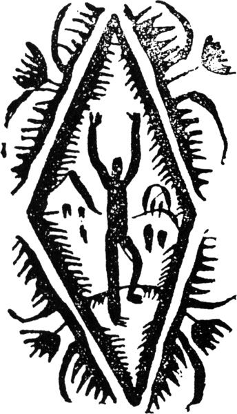

| Ｄ坂の殺人事件 | |
| 江戸川 乱歩 | |
| 東京創元社 (1987) | |
この本は縦書きでレイアウトされています。
また、ご覧になる環境により、表示の差が認められることがあります。
本作品を電子書籍版に収録するにあたり、一部の漢字が簡略体で表記されている場合があります。
作中、現在からすれば表現に穏当を欠く部分がありますが、古典として評価されている作品であり、執筆当時の時代を反映した乱歩独自の世界を構築しているものとの観点から、原文のまま掲載しました。
Ｄ坂の殺人事件
江戸川乱歩
日本の推理小説界の礎を築き上げたのが江戸川乱歩であるのは異論のないところであろう。実作者としては「二銭銅貨」に始まる綺羅星の如き作品群を著わし、数多くのエッセイや論文によって内外の作家と作品を紹介し、かつまた〈宝石〉誌の編集などを通して、多くの新人作家を発掘、育成した。その巨人の短編小説の粋を収めたのが本巻である。デビュー間もない時期に発表された「二癈人」を筆頭に、ご存じ明智小五郎が初めて登場した記念すべき短編「Ｄ坂の殺人事件」から、戦後の名品「防空壕」に至る全十編を、初出誌の挿絵を付してお届けする。
資料提供 平井隆太郎
村松恒雄
山本秀樹
編集 北村 薫
東京創元社編集部
挿絵 一木 弴（二癈人・
Ｄ坂の殺人事件・赤
い部屋）
松野一夫（火星の運
河）
高井貞二（石榴）
生沢 朗（防空壕）
Artist 志村敏子
Design アトリエ絵夢
東京創元社
Ｄ坂の殺人事件
江戸川乱歩

二癈人
二人は湯からあがって、一局囲んだあとを煙草にして、渋い煎茶をすすりながら、いつものようにポツリポツリと世間話を取りかわしていた。おだやかな冬の日光が障子いっぱいにひろがって、八畳の座敷をほかほかと暖めていた。大きな桐の火鉢には鉄瓶が眠けをさそうような音をたててたぎっていた。夢のようにのどかな冬の温泉場の午後であった。
無意味な世間話が、いつの間にか懐旧談にはいって行った。客の斎藤氏は青 島 役 の実戦談を語りはじめていた。部屋のあるじの井原氏は火鉢に軽く手をかざしながら、だまってその血 腥 い話に聞き入っていた。かすかに鶯 の遠 音 が、話の合の手のように聞こえてきたりした。昔を語るにふさわしい周囲の情景だった。
斎藤氏の見るも無 慙 に傷ついた顔面は、そうした武勇伝の話し手としては至極似つかわしかった。彼は砲弾の破片に打たれてできたという、その右半面の引っつりを指さしながら、当時の有様を手にとるように物語るのだった。そのほかにも、からだじゅうに数ヵ所の刀傷があり、それが冬になると痛むので、こうして湯 治 にくるのだといって、肌をぬいでその古傷を見せたりした。
「これで、私も若い時分には、それ相当の野心を持っていたんですがね。こういう姿になっちゃおしまいですよ」
斎藤氏はこういって長い実戦談の結末をつけた。
井原氏は、話の余韻でも味わうようにしばらくだまっていた。
「この男は戦争のお蔭で一生台無しにしてしまった。お互に癈人なんだ。が、この男はまだ名誉という気休めがある。しかしおれには......」
井原氏はまたしても心の古傷に触れてヒヤリとした。そして肉体の古傷に悩んでいる斎藤氏などは、まだまだ仕合わせだと思った。
「こんどはひとつ私の懺悔話を聞いていただきましょうか。勇ましい戦争のお話のあとで、少し陰気すぎるかも知れませんが」
お茶を入れかえて一服すると、井原氏はいかにも意気ごんだようにこんなことをいった。
「ぜひ伺いたいもんですね」
斎藤氏は即座に答えた。そしてなにごとかを待ち構えるようにチラと井原氏の方を見たが、すぐ、さりげなく眼を伏せた。
井原氏はその瞬間、オヤッと思った。井原氏は今チラと彼の方を見た斎藤氏の表情に、どこか見覚えがあるような気がしたのだった。彼は斎藤氏と初対面の時から――といっても十日ばかり以前のことだが――何かしら、二人のあいだに前世の約束とでもいったふうのひっかかりがあるような気がしていた。そして、日がたつにつれて、だんだんその感じが深くなって行った。でなければ、宿も違い、身分も違う二人が、わずか数日のあいだにこんなに親しくなるはずがないと井原氏は思った。
「どうも不思議だ。この男の顔は確かにどこかで見たことがある」しかしどう考えてみても思い出せなかった。「ひょっとしたら、この男とおれとは、ずっとずっと昔の、たとえばもの心のつかぬ子供の時分の、遊び友だちででもあったのではあるまいか」そんなふうに思えば、そうとも考えられるのだった。
「いや、さぞかし面白いお話が伺えることでしょう。そういえば、きょうはなんだか昔を思い出すような日よりではありませんか」
斎藤氏はうながすように言った。
井原氏は恥かしい自分の身の上を、これまで人に話したことはなかった、むしろできるだけ隠しておこうとしていた。自分でも忘れようとつとめていた。それが、きょうはどうしたはずみか、ふと話してみたくなった。
「さあ、どういうふうにお話ししたらいいか......私は××町でちょっと古い商家の総領に生れたのですが、親に甘やかされたのが原因でしょう、小さい時から病身で、学校などもそのために二年おくれたほどですが、そのほかにはこれという不都合もなく、小学から中学、それから東京の××大学と、人さまよりはおくれながらも、まずまず順当に育ってきたのでした。東京へ出てからはからだの方も順調でしたし、そこへ学科が専門になるにつれて興味が湧き、ぼつぼつ親しい友だちもできてくるというわけで、不自由な下宿生活もかえって楽しく、まあなんの屈托もない学生生活を送っていたのでした。今から考えますと、ほんとうにあのころが私の一生中での花でしたよ。ところが東京へ出て一年たつかたたないころでした。私はふと或る恐ろしい事実に気づくようになったのです」
ここまで話すと、井原氏はなぜかかすかに身震いした。斎藤氏は吸いさしの巻煙草を火鉢に突き差して、熱心に聞きはじめた。
「ある朝のことでした。私がこれから登校しようと、身支度をしていますと、同じ下宿にいる友だちが私の部屋へはいってきました。そして私が着物を着かえたりするのを待ち合わせながら、『ゆうべは大へんな気焔だったね』と冷やかすように言うではありませんか。しかし私には、いっこうその意味がわからないのです。『気焔って、ゆうべ僕が気焔をはいたとでもいうのかい』私がけげん顔に聞き返しますと、友だちはやにわに腹をかかえて笑い出し『君はけさはまだ顔を洗わないんだろう』とからかうのです。で、よく聞きただしてみますと、その前の晩の夜ふけに、友だちの寝ている部屋へ私がはいって行って、友だちをたたき起こして、やにわに議論をはじめたのだそうです。なんでも、プラトンとアリストテレスとの婦人観の比較論か何かを滔 々 と弁じたてたそうですが、自分が言いたいだけいってしまうと、友だちの意見なんか聞きもしないで、サッサと引き上げてしまったというのです。どうも狐にでもつままれたような話なんです。『君こそ夢でも見たんだろう。僕はゆうべは早くから床にはいって、今しがたまでぐっすり寝込んでいたんだもの、そんなことのありそうな道理がない』と言いますと、友だちは『ところが夢でない証拠には、君が帰ってから、僕は寝つかれないで永いあいだ読書していたくらいだし、何より確かなのは、見たまえ、この葉書を。その時書いたんだ。夢で葉書を書くやつもないからね』と、むきになって主張するのです。
そんなふうに押し問答をしながら、結局あやふやのまま、その日は学校へ行ったことですが、教室へはいって講師のくるのを待っているあいだに、友だちが考え深そうな眼をして『君はこれまでに寝とぼける習慣がありはしないか』とたずねるのです。私はそれを聞くと、なんだか恐ろしいものにぶつかったように、思わずハッとしました。
私にはそういう習慣があったのです、私は小さい時分から寝言をよくいったそうですが、誰かがその寝言にからかいでもすると、私は寝ていてハッキリ問答したそうです。しかも朝になっては少しもそれを記憶していないのです、珍らしいというので、近所の評判になっていたほどなんです。でも、それは小学校時代の出来事で、大きくなってからは忘れたようになおっていたのですが、いま友だちにたずねられると、どうやらこの幼時の病癖と、ゆうべの出来事とに脈絡がありそうな気がするのです。で、そのことを話しますと、『では、それが再発したんだぜ。つまり一種の夢遊病なんだね』友だちは気の毒そうにそんなことをいうのです。
さあ、私は心配になってきました。私は夢遊病がどんなものか、ハッキリしたことはむろん知りませんでしたが、夢中遊行、離魂病、夢中の犯罪などという熟語が気味わるく浮かんでくるのです。第一、若い私には、寝とぼけたというようなことが恥かしくてならなかったのです。もしそんなことがたびたび起こるようだったらどうしようと、私はもう気が気ではありません。そのことがあって二、三日してから、私は勇気を出して、知合いの医者のところへ出掛けて相談してみました。ところが医者の言いますのには『どうも夢中遊行症らしいが、しかし、一度ぐらいの発作でそんなに心配しなくともよい。そうして神経を使うのがかえって病気を昂進させる元 だ。なるべく気をしずめて、呑 気 に、規則正しい生活をして、からだを丈夫にしたまえ。そうすれば、自然そんな病気もなおってしまう』という至極楽観的な話なんです。で、私もあきらめて帰ったのですが、不幸にして私という人間は、生れつき非常な神経病みでして、いちどそんなことがあると、もうそれが心配で心配で、勉強なども手につかぬという有様でした。
どうかこれきり再発しなければいいがと、その当座は毎日ビクビクものでしたが、仕合わせと一と月ばかりというものは、なにごともなく過ぎてしまいました、ヤレヤレ助かったと思っていますと、どうでしょう、それも束 の間 の糠 喜 びで、間もなく今度は以前よりもひどい発作が起こり、なんと、私は夢中で他人の品物を盗んでしまったのです。
朝眼をさましてみますと、私の枕もとに見知らぬ懐中時計が置いてあるではありませんか、妙だなと思っているうちに、同じ下宿にいた会社員の男が『時計がない、時計がない』という騒ぎなんでしょう。私は『さては』と悟ったのですが、なんともきまりが悪くて、謝りに行くにも行けないという始末です。とうとう今いった友だちを頼んで、私が夢遊病者だということを証明してもらって時計を返し、やっとその場はおさまったのですが、さあそれからというものは『井原は夢遊病者だ』という噂がパッとひろがってしまって、学校の教室での話題にさえなるという有様でした。
私はどうかして、この恥かしい病気をなおしたいと、その方面の書物を買い込んで読んでみたり、いろいろの健康法をやってみたり、もちろん医者は、いくたりもかえて見てもらうというわけで、できるだけ手をつくしたのですが、どうしてなおるどころか、だんだん悪くなって行くばかりです。月に一度、ひどい時には二度ぐらいずつ、必ず例の発作がおこり、少しずつ夢中遊行の範囲が広くなって行くという始末です。そして、そのたびごとに他人の品物を持ってくるか、自分の持物を持って行った先へ落としてくるのです。それさえなければ他人に知られずにすむこともあったのでしょうが、悪いことには、たいてい何か証拠品が残るのです。それとももしかしたら、そうでない場合にもたびたび発作を起こしていても、証拠品がないために知らずにしまったのかもしれません。なんにしてもわれながら薄気味のわるい話でした。ある時などは真夜中に下宿屋から抜け出して、近所のお寺の墓地をうろついていたことなどもありました。拍子のわるいことには、ちょうどその時、墓地のそとの往来を、同じ下宿屋にいる或る勤め人が、宴会の帰りかなんかで通り合わせて、低い生垣ごしに私の姿をみとめ、あすこには幽霊が出るなどと言いふらしたものですから、実はそれが私だったとわかると、さあたいへんな評判なんです。
そんなふうで私はいいもの笑いでした。なるほど、他人から見れば喜劇でもありましょうが、当時の私の身にとっては、それがどんなにつらく、どんなに気味のわるいことだったか、その気持は、とても当人でなけりゃわかりっこありませんよ。はじめのあいだは、今夜も失策をしやしないか、今夜も寝とぼけやしないかと、それが非常に恐ろしかったのですが、だんだん、単に睡るということがこわくなってきました。いや睡る睡らないにかかわらず、夜になると寝床にはいらなければならぬということが脅迫観念になってきました。そうなると、ばかげた話ですが、自分のでなくても、夜具というものを見るのが、いうにいわれぬいやな気持なんです。普通の人たちには一日中でもっとも安らかな休息時間が、私にはもっとも苦しい時なのです。なんという不幸な身の上だったのでしょう。
それに、私にはこの発作が起こりはじめた時から、ひとつ恐ろしい心配があったのです。というのは、いつまでもこのような喜劇がつづいて、人のもの笑いになっているだけですめばいいが、もしこれがいつの日か取りかえしのつかぬ悲劇を生むことになりはしないか、という点でした。私は先にも申し上げましたように、夢遊病に関する書物はできるだけ手をつくして収集し、それをいくどもいくども読み返していたくらいですから、夢遊病者の犯罪の実例などもたくさん知っていました。そして、その中には数々の身震いするような血なまぐさい事件が含まれていたのです。気の弱い私がどんなにそれを心配したか、蒲 団 を見てさえ気持がわるくなるというのも決して無理ではなかったのです。やがて私もこうしてはいられないと気がつきました、いっそ学業をなげうって国 許 に帰ろうと決心したのです。で、或る日、それは最初の発作が起こってからもう半年あまりもたった頃でしたが、長い手紙を書いて、親たちのところへ相談してやりました。そして、その返事を待っているあいだに、どうでしょう、私の恐れに恐れていた出来事が、とうとう実現してしまったのです、私の一生涯をめちゃめちゃにしてしまうような、とり返しのつかぬ悲劇が持ち上がったのです」
斎藤氏は身動きもしないで謹聴していた。しかし彼の眼は物語の興味に引きつけられているという以上に、何事かを語っているように見えた。正月の書き入れ時もとくに過ぎた温泉場は、湯治客も少なく、ひっそりとして物音ひとつしなかった。小鳥の鳴き声ももう聞こえてはこなかった。実世間というものから遠く切り離された世界に、二人の癈入は異常な緊張をもって相対していた。
「それは忘れもしない、ちょうど今から二十年前の秋のことです。ずいぶん古い話ですがね。ある朝眼をさましますと、なんとなく家の中がざわついていることに気づきました。傷持つ足の私はまた何か失策をやったのではないかと、すぐいやな気持に襲われるのでしたが、しばらく寝ながら様子を考えているうちに、どうもただ事でないという気がし出しました。なんともいえぬ恐ろしい予感が、ゾーッと背中を這い上がってくるのです。私はおずおずしながら、部屋の中をずっと見廻しました。すると、なんとなく様子が変なのです。部屋の中に、ゆうべ私が寝た時とはどことなく変ったところがあるような気がするのです。で、起き上がってよく調べてみますと、果たして変なものが眼にはいりました。部屋の入口のところに見覚えのない小さな風呂敷包みが置いてあるではありませんか。それを見た私は、なんということでしょう、やにわにそれをつかんで押入れの中へ投げ込んでしまったのです。そして、押入れの戸を締めると、泥棒のようにあたりを見廻して、ほっと溜息をつくのでした。ちょうどその時、音もなく障子をあけて一人の友だちが首を出しました。そして小さな声で『君、大へんだよ』といかにもことありげにささやくのです。私は今の挙動をさとられやしなかったかと気が気でなく、返事もしないでいますと、『老人が殺されているんだ。ゆうべ泥棒がはいったんだよ。まあちょっときてみたまえ』そういって友だちは行ってしまいました。私はそれを聞くと、喉が塞がったようになって、しばらくは身動きもできませんでしたが、やっと気を取りなおして、様子を見に部屋を出て行きました。そして私は何を見、何を聞いたのでしょう......その時のなんともいえぬ変な気持というものは、二十年後の唯今でも、きのうのことのようにまざまざと思い出されます。ことにあの老人の物凄い死に顔は、寝ても覚めても、この眼の前にちらついて離れる時がありません」
井原氏は恐れに耐えぬように、あたりを見廻した。
「で、その出来事をかいつまんで申しますと、その夜、ちょうど息子夫婦が泊まりがけで親戚へ行っていたので、下宿の老主人はただ一人で玄関脇の部屋に寝ていたのですが、いつも早起きの主人が、その日に限っていつまでも寝ているので、女中の一人が不審に思ってその部屋をのぞいてみますと、老人は寝床の中に仰 臥 したまま、巻いて寝ていたフランネルの襟巻で絞め殺されて、冷たくなっていたのです。取調べの結果、犯人は老人を殺しておいて、老人の巾着から鍵を取り出し、箪笥の引出しをあけ、その中の手提金庫から多額の債券や株券を盗み出したことがわかりました。何分その下宿屋は、夜ふけに帰ってくる客のために、いつだって入口の戸に鍵をかけたことがないのですから、賊の忍び入るにはお誂 え向きなんですが、そのかわりに、よくしたもので、殺された老主人がばかに目 敏 い男なので、めったなこともなかろうと、みな安心していたわけなんです。現場には別段これという手掛りも発見されなかったらしいのですが、ただ一つ老主人の枕もとに一枚のよごれたハンカチが落ちていて、それをその筋の役人が持って行ったという噂なんです。
しばらくすると、私は自分の部屋へ帰っていましたが、その部屋の押入れの中には、そら、例の風呂敷包みがあるのです。それを調べてみて、もし殺された老人の財産がはいっていたら......まあその時の私の気持をお察しください。ほんとうに命懸けの土壇場です。私は長いあいだ、寿命の縮む思いをしながらも、どうしても押入れがあけられないで立ちつくしていましたが、ついに意を決して風呂敷包みを調べてみたのです。その途端、私はグラグラと眼まいがして、しばらく気を失ったようになってしまいました......あったのです。その風呂敷包みの中に、債券と株券がちゃんとはいっていたのです......現場に落ちていたハンカチも私のものだったことが、あとになってわかりました。
結局、私はその日のうちに自首して出ました。そして、いろいろの役人にいくたびとなく取調べを受けた上、思い出してもゾッとする未決監へ入れられたのです。私はなんだか白昼の悪夢にうなされている気持でした。夢遊病者の犯罪というものがあまり類例がないことなので、専門医の鑑定だとか、下宿人たちの証言だとか、いろいろ手数のかかる取調べがありましたが、私が相当の家の息子で、金のために殺人を犯す道理がないこともわかっていましたし、私が夢遊病者だということは友人などの証言で明白なことですし、それに、国の父親が上京して二人も弁護士を頼んで骨折ってくれたり、最初私の夢遊病を発見した友だち――それは木村という男でしたが――その男が学友を代表して熱心に運動してくれたり、そのほかいろいろ私にとって有利な事情がそろっていたためでありましょう、長い未決監生活の後、ついに無罪の判決がくだされました。さて無罪になったものの、人殺しという事実は、ちゃんと残っているのです。なんという変てこな立場でしょう。私は無罪の判決をうれしいと感じる気力もないほど疲れきっていました。
私は放免されるとすぐさま、父親同行で郷里に帰りました。が、家の敷居をまたぐと、それまででも半病人だった私は、ほんとうの病人になってしまって、半年ばかり寝たきりで暮らすという始末でした......そんなことで、私はとうとう一生を棒にふってしまったのです。父親の跡は弟にやらせて、それからのち二十年の長い月日を、こうして若隠居といった境遇で暮らしているのですが、もうこのごろでは煩悶もしなくなりましたよ。ハハハハハ」
井原氏は力ない笑い声で長い身の上話を結んだ。そして「下らないお話で、さぞ御退屈でしたろう。さあ、熱いのを一つ入れましょう」と言いながら茶道具を引き寄せるのであった。
「そうですか。ちょっと拝見したところは結構な御身分のようでも、伺ってみればあなたもやっぱり不幸な方なんですね」斎藤氏は意味ありげな溜息をつきながら「ですが、その夢遊病のほうは、すっかりおなおりなすったのですか」
「妙なことには、人殺しの騒ぎののち、忘れたようにいちども起こらないのです。おそらく、あの時あまりひどいショックを受けたためだろうと医者はいっています」
「そのあなたのお友だちだった方......木村さんとかおっしゃいましたね......その方が最初あなたの発作を見たのですね。それから時計の事件と、それから、墓地の幽霊の事件と......そのほかの場合はどんなふうだったのでしょうか。御記憶だったらお話しくださいませんか」
斎藤氏は突然、少しどもりながら、こんなことを言い出した。彼の一つしかない眼が異様に光っていた。
「そうですね。みな似たり寄ったりの出来事で、殺人事件をのけては、まあ墓地をさまよった時のが、いちばん変っていたでしょう。あとはたいてい同宿者の部屋へ侵入したというようなことでした」
「で、いつも品物を持ってくるとか、落としてくるとかいうことから発見されたわけですね」
「そうです。でも、そうでない場合もたびたびあったかもしれません、ひょっとしたら、墓場どころではなく、もっともっと遠いところへさまよい出していたこともあったかもしれません」
「最初、木村というお友だちと議論をなすった時と、墓場で勤め人に見られた時と、そのほかに誰かに見られたというようなことはないのですか」
「いや、まだたくさんあったようです。夜なかに下宿屋の廊下を歩き廻っている足音を聞いた人もあれば、他人の部屋へ侵入するところを見たという人などもあったようです。しかしあなたは、どうしてそんなことをお尋ねになるのです。なんだか私が調べられているようではありませんか」
井原氏は無邪気に笑ってみせたが、その実、少し薄気味わるく思わないではいられなかった。
「いや、ごめんください。決してそういうわけではないのですが、あなたのようなお人柄な方が、たとえ夢中だったとはいえ、そんな恐ろしいことをなさろうとは、私にはどうも考えられないものですから。それに一つ、私にはどうも不審な点があるのです。どうか怒らないで聞いてください。こうして不具者になって世間をよそに暮らしていますと、ついなにごとも疑い深くなるのですね......ですが、あなたはこういう点をお考えなすったことがありますかしら。夢遊病者というものは、その徴候が本人には絶対にわからない。夜なかに歩き廻ったり、おしゃべりをしていても、朝になればすっかり忘れている。つまり他人に教えられてはじめて『おれは夢遊病者なのかなあ』と思うくらいのことでしょう。医者にいわせると、いろいろ肉体上の徴候もあるようですが、それとても実に漠としたもので、発作がともなってはじめて決せられる程度のものだというではありませんか。私は自分が疑い深いせいですか、あなたはよく無造作に自分の病気をお信じなすったと思いますよ」
井原氏は、何かえたいのしれぬ不安を感じはじめていた。それは、斎藤氏の話からきたというよりは、むしろ相手の見るも恐ろしい容貌から、その容貌の裏にひそむ何者かからきた不安であった。しかし、彼は強 いてそれをおさえながら答えた。
「なるほど、私とても最初の発作の時にはそんなふうに疑ってもみました。そして、これが間違いであってくれればいいと祈ったほどでした。でも、あんなにも長いあいだ、絶間なく発作が起こっては、もうそんな気休めもいっていられなくなるではありませんか」
「ところが、あなたは一つの大切な事柄に気づかないでいらっしゃるように思われるのです。というのは、あなたの発作を目撃した人が少ない。いや煎じつめればたった一人だったという点です」
井原氏は、相手がとんでもないことを空想しているらしいのに気づいた。それは実に、普通人の考えも及ばぬような恐ろしいことであった。
「一人ですって。いや決してそんなことはありません。先ほどもお話ししたように、私が他人の部屋へはいる後 姿を見たり、廊下の足音を聞いたりしている人はいくらもあるのです、それから墓場の場合などは、名前は忘れましたが、或る会社員が確かに目撃して、私にそれを話したくらいです。そうでなくても、発作の起こるたびに、きっと他人の品物が私の部屋にあるか、私の持物がとんでもない遠方に落ちているかしたのですから、疑う余地がないじゃありませんか。品物がひとりで位置をかえるはずもありませんからね」
「いや、そういうふうに発作のおこるたびごとに証拠品が残っていたという点が、かえってあやしいのです。考えてごらんなさい。それらの品物は、必ずしもあなた自身の手をわずらわさなくても、誰かほかの人がそっと位置をかえておくこともできるのですからね。それから、目撃者がたくさんあったようにおっしゃいますが、墓場の場合にしても、そのほかの、後姿を見たとかなんとかいうのは、みな曖昧なところがあります。あなたでないほかの人を見ても、夢遊病者という先入主のために、少し夜ふけに怪しい人影でも見れば、すぐあなたにしてしまったのかもしれません。そういう際に間違った噂をたてたからとて、少しも非難される心配はありませんし、その上、一つでも新しい事実を報告するのを手柄のように思うのが人情ですからね。さあ、こういうふうに考えてみますと、あなたの発作を目撃したという数人の人々も、たくさんの証拠の品物も、みな或る一人の男の手品から生れたのだといえないこともないではありませんか。それはいかにも上手な手品には違いありません。でも、いくら上手でも手品は手品ですからね」
井原氏はあっけにとられたように、ぼんやりして、相手の顔をながめていた。彼はあまりのことに考えをまとめる力をなくした人のように見えた。
「で、私の考えを申しますと、これはその木村というお友だちの深いおもわくから編み出された手品かも知れないと思うのです。何かの理由から、その下宿屋の老主人をなきものにしたい、そっと殺してしまいたい。しかし、たとえいかほど巧妙な方法で殺しても、殺人が行なわれた以上、どうしても下手人が出なければ納まりっこはありませんから、誰か別の人を自分の身がわりに下手人にする。しかもその人にはできる限り迷惑のかからぬような方法で......もし、もしですよ。その木村という人がそんな立場にあったと仮定しますならば、あなたという信じやすい、気の弱い人を夢遊病者に仕立てて、ひと狂言書くということは、実に申し分のない方法ではなかったでしょうか。
こういう仮定を先 ず立ててみて、それが理論上なりたつかどうかを調べてみましょう。さて、その木村という人は或る機会を見て、あなたにありもしない作り話をして聞かせます。と、都合のいいことには、あなたが少年時代に寝とぼける癖があったことが一つの助けとなって、その試みが案外効果をおさめたとします。そこで木村氏は、ほかの下宿人の部屋から時計その他のものを盗み出して、あなたの寝ている部屋の中に入れておくとか、気づかれぬようにあなたの持物を盗み出して、他の場所へ落としておくとか、自分自身があなたのようによそおって墓場や下宿の廊下などを歩き廻るとか、種々様々の機智を弄して、ますますあなたの迷信を深めようとします。また一方、あなたの周囲の人たちにそれを信じさせるために、いろいろの宣伝をやります。こうして、あなたが夢遊病だということが、本人にも周囲にも完全に信じられるようになった上で、もっとも都合のいい時を見はからって、木村氏自身がかたきとねらう老人を殺害するのです。そして、その財産をそっとあなたの部屋に入れておき、前もって盗んでおいたあなたの所持品を現場へのこしておくと、こういうふうに想像することが、あなたは理論的だとは思いませんか。一点の不合理も見出せないではありませんか。そしてその結果はあなたの自首ということになります。なるほどそれはあなたにとってずいぶん苦しいことには違いありませんが、犯罪という点では無罪とはいかずとも、比較的軽くすむのはわかりきったことです。よし多少の刑罰を受けたところで、あなたにしてみれば病気のさせた罪ですから、ほんとうの犯罪ほど心苦しくはないはずです。少なくとも木村氏はそう信じていたことでしょう。別段あなたに対して敵意があったわけではなかったのですからね。ですが、もし彼があなたの今のような告白を聞いたなら、さぞかし後悔したことでしょう。
いやとんだ失礼なことを申しました。どうか気を悪くしないでください。これというのも、あなたの懺悔話を伺って、あまりお気の毒に思ったものですから、つい、われを忘れて変な理窟を考え出してしまったのです。ですが、あなたのお心を二十年来悩ましてきた事件も、こういうふうに考えれば、すっかり気安くなるではありませんか。いかにも私の申し上げたことは当て推量かもしれません。でも、たとえ当て推量にしろ、そう考える方が理窟にもかない、あなたのお心も安まるとすれば、それで結構ではありますまいか。
木村という人がなぜ老人を殺さねばならなかったか。それは私が木村自身でない以上、どうもわかりようがありませんが、そこにはきっと、いうにいわれぬ深いわけがあったことでしょう。たとえば、そうですね、敵 討 ちといったような......」
まっさおになった井原氏の顔色に気づくと、斎藤氏はふと話をやめて、なにごとかをおそれるようにうなだれた。
二人はそうしたまま長いあいだ対坐していた。冬の日は暮れるにはやく、障子の日影も薄れて、部屋の中にはうそ寒い空気がただよい出していた。
やがて、斎藤氏はおそるおそる挨 拶 をすると、逃げるように帰って行った。井原氏はそれを見送ろうともしなかった。彼は元の場所にすわったまま、込み上げてくる忿 怒 をじっとおさえつけていた。思いがけぬ発見に思慮を失うまいとして、全力をつくしていた。
しかし時がたつにつれて、彼のすさまじい顔色がだんだん元に復して行った。そして、にがいにがい笑いが彼の口 辺 にただようのだった。
「顔かたちこそまるで変っているが、あいつは、あいつは......だが、たとえあの男が木村自身だったとしても、おれは何を証拠に復讐しようというのだ。おれというおろかものは、手も足も出ないで、あの男の手前勝手な憐 憫 をありがたく頂戴するばかりじゃないか」
井原氏は、つくづく自分のおろかさがわかったような気がした。と、同時に、世にもすばらしい木村の機智を、にくむというよりはむしろ讃美しないではいられなかった。（一三・一・三一）
（〈新青年〉大正十三年六月号発表）
Ｄ坂の殺人事件
（上）事実
それは九月初旬のある蒸し暑い晩のことであった。私は、Ｄ坂の大通りの中ほどにある、白 梅 軒 という、行きつけの喫茶店で、冷しコーヒーを啜っていた。当時私は、学校を出たばかりで、まだこれという職業もなく、下宿屋にゴロゴロして本でも読んでいるか、それに飽きると、当てどもなく散歩に出て、あまり費用のかからぬ喫茶店廻りをやるくらいが、毎日の日課だった。この白梅軒というのは、下宿屋から近くもあり、どこへ散歩するにも必ずその前を通るような位置にあったので、したがって、いちばんよく出入りするわけであったが、私という男は悪い癖で、喫茶店にはいるとどうも長尻になる。それに、元来食欲の少ない方なので、ひとつは嚢 中 の乏しいせいもあってだが、洋食ひと皿注文するでなく、安いコーヒーを二杯も三杯もお代りして、一時間も二時間もじっとしているのだ。そうかといって、別段、ウェートレスにおぼしめしがあったり、からかったりするわけでもない。まあ下宿よりなんとなく派手で居心地がいいのだろう。私はその晩も、例によって、一杯の冷しコーヒーを十分もかかって飲みながら、いつもの往来に面したテーブルに陣取って、ボンヤリ窓のそとをながめていた。
さて、この白梅軒のあるＤ坂というのは、以前菊人形の名所だったところで、狭かった通りが市区改正で取り拡げられ、何間道路とかいう大通りになって間もなくだから、まだ大通りの両側にところどころ空地などもあって、今よりはずっと淋しかった時分の話だ。大通りを越して白梅軒のちょうど真向こうに、一軒の古本屋がある。実は、私は先ほどから、そこの店先をながめていたのだ。みすぼらしい場末の古本屋で、別段ながめるほどの景色でもないのだが、私にはちょっと特別の興味があった。というのは、私が近頃この白梅軒で知合いになった一人の妙な男があって、名前は明智小五郎というのだが、話をしてみるといかにも変り者で、それが頭がよさそうで、私の惚れ込んだことには、探偵小説好きなのだが、その男の幼馴染の女が、今ではこの古本屋の女房になっているということを、この前、彼から聞いていたからだった。二、三度本を買って覚えているところによれば、この古本屋の細君というのがなかなかの美人で、どこがどうというではないが、なんとなく官能的に男をひきつけるようなところがあるのだ。彼女は夜はいつでも店番をしているのだから、今晩もいるに違いないと、店じゅうを、といっても二間半間口の手狭な店だけれど、探してみたが、誰もいない、いずれそのうちに出てくるのだろうと、私はじっと眼で待っていたものだ。
だが、女房はなかなか出てこない。で、いい加減面倒臭くなって、隣の時計屋へと眼を移そうとしている時であった。私はふと、店と奥の間 との境に閉めてある障子の戸が、ピッシャリしまるのを見た――その障子は専門家の方では無 双 と称するもので、普通、紙をはるべき中央の部分が、こまかい縦の二重の格子になっていて、一つの格子の幅が五分ぐらいで、それが開閉できるようになっているのだ――ハテ変なこともあるものだ。古本屋などというものは、万引きされやすい商売だから、たとえ店に番をしていなくても、奥に人がいて、障子のすき間などから、じっと見張っているものなのに、そのすき見の箇所を塞いでしまうとはおかしい。寒い時分ならともかく、九月になったばかりのこんな蒸し暑い晩だのに、第一障子そのものが閉めきってあるのからして変だ。そんなふうにいろいろ考えてみると、古本屋の奥の間になにごとかありそうで、私は眼を移す気になれなかった。
古本屋の細君といえば、ある時、この喫茶店のウェートレスたちが、妙な噂をしているのを聞いたことがある。なんでも、銭湯で出会うおかみさんや娘さんたちの棚おろしのつづきらしかったが、「古本屋のおかみさんは、あんなきれいな人だけれど、はだかになると、からだじゅう傷だらけだ。たたかれたり抓 られたりした痕 に違いないわ。別に夫婦仲が悪くもないようだのに、おかしいわねえ」すると別の女がそれを受けてしゃべるのだ。「あの並びのソバ屋の旭屋のおかみさんだって、よく傷をしているわ。あれもどうも叩かれた傷に違いないわ」......で、この噂話が何を意味するか、私は深くも気に留めないで、ただ亭主が邪慳なのだろうぐらいに考えたことだが、読者諸君、それがなかなかそうではなかったのだ。このちょっとした事柄が、この物語全体に大きな関係を持っていたことが、後になってわかったのである。
それはともかく、私はそうして三十分ほども同じところを見詰めていた。虫が知らすとでもいうのか、なんだかこう、傍 見 をしているすきに何事か起こりそうで、どうもほかへ眼が向けられなかったのだ。その時、先ほどちょっと名前の出た明智小五郎が、いつもの荒い棒縞の浴 衣 を着て、変に肩を振る歩き方で、窓のそとを通りかかった。彼は私に気づくと会釈をして中へはいってきたが、冷しコーヒーを命じておいて、私と同じように窓の方を向いて、私の隣に腰かけた。そして、私が一つところを見詰めているのに気づくと、彼はその私の視線をたどって、同じく向こうの古本屋をながめた。しかも、不思議なことには、彼もまた、いかにも興味ありげに、少しも眼をそらさないで、その方を凝視し出したのである。
私たちは、そうして、申し合わせたように同じ場所をながめながら、いろいろむだ話を取りかわした。その時、私たちのあいだにどんな話題が話されたか、今ではもう忘れてもいるし、それに、この物語にはあまり関係のないことだから、略するけれど、それが、犯罪や探偵に関したものであったことは確かだ。試みに見本をひとつ取り出してみると、
「絶対に発見されない犯罪というものは不可能でしょうか。僕はずいぶん可能性があると思うのですがね。たとえば、谷崎潤一郎の『途上』ですね。ああした犯罪はまず発見されることはありませんよ。もっとも、あの小説では、探偵が発見したことになってますけれど、あれは作者のすばらしい想像力が作り出したことですからね」と明智。
「いや、僕はそうは思いませんよ。実際問題としてならともかく、理論的にいって、探偵のできない犯罪なんてありませんよ。ただ、現在の警察に『途上』に出てくるような偉い探偵がいないだけですよ」と私。
ざっとこういったふうなのだ。だが、ある瞬間、二人は言い合わせたように、ふとだまり込んでしまった。さっきから、話しながら眼をそらさないでいた向こうの古本屋に、ある面白い事件が発生していたのだ。
「君も気づいているようですね」
と私がささやくと、彼は即座に答えた。
「本泥棒でしょう。どうも変ですね。僕もここへはいってきた時から、見ていたんですよ。これで四人目ですね」
「君が来てからまだ三十分にもなりませんが、三十分に四人も。少しおかしいですね。僕は君の来る前からあすこを見ていたんですよ。一時間ほど前にね、あの障子があるでしょう。あれの格子のようになったところが、しまるのを見たんですが、それからずっと注意していたのです」
「うちの人が出て行ったのじゃないのですか」
「それが、あの障子は一度もひらかないのですよ。出て行ったとすれば裏口からでしょうが......三十分も人がいないなんて、確かに変ですよ。どうです、行ってみようじゃありませんか」
「そうですね。うちの中には別状がないとしても、そとで何かあったのかもしれませんからね」
私はこれが犯罪事件ででもあってくれれば面白いがと思いながら、喫茶店を出た。明智とても同じ思いに違いなかった。彼も少なからず興奮しているのだ。
古本屋は、よくある型で、店は全体土間になっていて、正面と左右に天井まで届くような本棚を取り付け、その腰のところが本を並べるための台になっている。土間の中央には、島のように、これも本を並べたり積み上げたりするための、長方形の台がおいてある。そして、正面の本棚の右の方が三尺ばかりあいていて奥の部屋との通路になり、先にいった一枚の障子が立ててある。いつもは、この障子の前の半畳ほどの畳敷きのところに、主人か細君がチョコンとすわって番をしているのだ。
明智と私とは、その畳敷きのところまで行って、大声に叫んでみたけれど、なんの返事もない。はたして誰もいないらしい。私は障子を少しあけて、奥の間を覗いてみると、中は電燈が消えてまっ暗だが、どうやら人間らしいものが、部屋の隅に倒れている様子だ。不審に思ってもう一度声をかけたが、返事をしない。
「構わない、上がってみようじゃありませんか」
そこで、二人はドカドカと奥の間へ上がり込んで行った。明智の手で電燈のスイッチがひねられた。そのとたん、私たちは同時に「アッ」と声を立てた。明かるくなった部屋の片隅に、女の死体が横たわっていたからだ。
「ここの細君ですね」やっと私がいった。「首を絞められているようじゃありませんか」
明智はそばへ寄って、死骸を調べていたが、
「とても蘇生の見込みはありませんよ。早く警察へ知らせなきゃ。僕、公衆電話まで行ってきましょう。君、番をしててください。近所へはまだ知らせない方がいいでしょう。手掛りを消してしまってはいけないから」
彼はこう命令的に言い残して、半丁ばかりのところにある公衆電話へ飛んで行った。
平常から、犯罪だ探偵だと、議論だけはなかなか一人前にやってのける私だが、さて実際にぶっつかったのははじめてだ。手のつけようがない。私は、ただ、まじまじと部屋の様子をながめているほかはなかった。
部屋はひと間きりの六畳で、奥の方は、右一間は幅の狭い縁側をへだてて、二坪ばかりの庭と便所があり、庭の向こうは板塀になっている――夏のことで、あけっぱなしだから、すっかり、見通しなのだ――左半間はひらき戸で、その奥に二畳敷きほどの板の間があり、裏口に接して狭い流し場が見え、裏口の腰高障子は閉まっている。向かって右側は、四枚の襖になっていて、中は二階への階段と物入れ場になっているらしい。ごくありふれた安長屋の間取りだ。死骸は、左側の壁寄りに、店の間 の方を頭にして倒れている。私は、なるべく兇行当時の模様を乱すまいとして、一つは気味もわるかったので、死骸のそばへ近寄らないようにしていた。でも、狭い部屋のことだから、見まいとしても、自然その方に眼が行くのだ。女は荒い中形模様の浴衣を着て、ほとんど仰向きに倒れている。しかし、着物が膝の上の方までまくれて、腿 がむき出しになっているくらいで、別に抵抗した様子はない。首のところは、よくはわからぬが、どうやら、絞められた痕 が紫色になっているらしい。
表の大通りには往来が絶えない。声高に話し合って、カラカラと日 和 下駄を引きずって行くのや、酒に酔って流行歌をどなって行くのや、しごく天下泰平なことだ。そして障子ひとえの家の中には、一人の女が惨殺されて横たわっている。なんという皮肉だろう。私は妙な気持になって、呆然とたたずんでいた。
「すぐくるそうですよ」
明智が息をきって帰ってきた。
「あ、そう」
私はなんだか口をきくのも大儀になっていた。二人は長いあいだ、ひとことも言わないで顔を見合わせていた。
間もなく、一人の制服の警官が背広の男と連れだってやってきた。制服の方は、後で知ったのだが、Ｋ警察署の司法主任で、もう一人は、その顔つきや持物でもわかるように同じ署に属する警察医だった。私たちは司法主任に、最初からの事情を大略説明した。そして私はこうつけ加えた。
「この明智君が喫茶店へはいってきた時、偶然時計を見たのですが、ちょうど八時半でしたから、この障子の格子が閉まったのは、おそらく八時頃だったと思います。その時はたしか中にも電燈がついていました。ですから、少なくとも八時頃には、誰か生きた人間がこの部屋にいたことは明らかです」
司法主任が私たちの陳述を聞き取って、手帳に書き留めているあいだに、警察医は一応死体の検診を済ませていた。彼は私たちの言葉のとぎれるのを待っていった。
「絞殺ですね。手でやられたのです。これごらんなさい。この紫色になっているのが指の痕ですよ。それから、この出血しているのは、爪があたった箇所です。拇 指の痕が頸の右側についているのを見ると、右手でやったものですね。そうですね。おそらく死後一時間以上はたっていないでしょう。しかし、むろん蘇生の見込みはありません」
「上から押さえつけられたのですね」司法主任が考え考え言った。「しかし、それにしては、抵抗した様子がないが......おそらく非常に急激にやったのでしょうね、ひどい力で」
それから、彼は私たちの方を向いて、この家の主人はどうしたのだと尋ねた。だが、むろん、私たちが知っているはずはない。そこで、明智は気をきかして、隣家 の時計屋の主人を呼んできた。
司法主任と時計屋の問答は大体次のようなものだった。
「主人はどこへ行っているのかね」
「ここの主人は、毎晩古本の夜店を出しに参りますんで、いつも十二時頃でなきゃ帰って参りません」
「どこへ夜店を出すんだね」
「よく上野の広小路へ参りますようですが、今晩はどこへ出しましたか、どうも手前にはわかりかねます」
「一時間ばかり前に、何か物音を聞かなかったかね」
「物音と申しますと」
「きまっているじゃないか。この女が殺される時の叫び声とか、格闘の音とか......」
「別段これという物音も聞きませんようでございましたが」
そうこうするうちに、近所の人たちが聞き伝えて集まってきたのと、通りがかりの野次馬で、古本屋の表は一杯の人だかりになった。その中に、もう一方の隣 家 の足 袋 屋のおかみさんがいて、時計屋に応援した。そして、彼女も、何も物音を聞かなかったと申し立てた。
このあいだに、近所の人たちは、協議の上、古本屋の主人のところへ使 を走らせた様子だった。
そこへ、表に自動車が止まる音がして、数人の人がドヤドヤとはいってきた。それは警察からの急報で駈けつけた検事局の連中と、偶然同時に到着したＫ警察署長、及び当時名探偵という噂の高かった小林刑事などの一行だ――むろんこれは後になってわかったことだ。というのは、私の友だちに一人の司法記者があって、それがこの事件の係りの小林刑事とごく懇意だったので、私は後日彼からいろいろと聞くことができたのだ。――先着の司法主任は、この人たちの前で今までの模様を説明した。私たちも先の陳述をもう一度繰り返さねばならなかった。
「表の戸を閉めましょう」突然、黒いアルパカの背広に白ズボンという、下廻りの会社員みたいな男が大声でどなって、さっさと戸を閉め出した。これが小林刑事だった。彼はこうして野次馬を撃退しておいて、さて探偵にとりかかった。彼のやり方はいかにも傍若無人で、検事や署長などはまるで眼中にない様子だった。彼ははじめから終りまで一人で活動した。他の人たちはただ彼の敏捷な行動を傍観するためにやってきた見物人にすぎないように見えた。彼は第一に死体を調べた。頸のまわりは殊 に念入りにいじり廻していたが、
「この指の痕には別に特徴がありません。つまり普通の人間が、右手で押さえつけたという以外になんの手がかりもありません」
と検事の方を見て言った。次に彼は一度死体をはだかにしてみると言い出した。そこで議会の秘密会みたいに、傍観者の私たちは、店の間へ追い出されねばならなかった。だから、そのあいだにどういう発見があったか、よくわからないが、察するところ、彼らは死人のからだにたくさんの生傷のあることを注意したに違いない。喫茶店のウェートレスの噂していたあれだ。
やがて、この秘密会は解かれたけれど、私たちは奥の間へはいって行くのを遠慮して、例の店の間と奥との境の畳敷きのところから奥の方をのぞきこんでいた。幸いなことには、私たちは事件の発見者だったし、それに、あとから明智の指紋をとらねばならぬことになったために、最後まで追い出されずにすんだ。というよりは抑留されていたという方が正しいかもしれぬ。しかし小林刑事の活動は奥の間だけに限られていたわけではなく、屋内屋外の広い範囲にわたって行なわれたのだから、ひとつところにじっとしていた私たちに、その捜査の模様がわかろうはずがないのだが、うまいぐあいに、検事が奥の間に陣取っていて、始終ほとんど動かなかったので、刑事が出たりはいったりするごとに、一々捜査の結果を報告するのを、もれなく聞きとることができた。検事はその報告にもとづいて、調書の材料を書記に書きとめさせていた。
まず、死体のあった奥の間の捜索が行なわれたが、遺留品も、足跡も、その他探偵の眼に触れる何物もなかった様子だった。ただひとつのものを除いては。
「電燈のスイッチに指紋があります」黒いエボナイトのスイッチに何か白い粉をふりかけていた刑事がいった。「前後の事情から考えて、電燈を消したのは犯人に違いありません。しかし、これをつけたのはあなた方のうちどちらですか」
明智は自分だと答えた。
「そうですか。あとであなたの指紋をとらせてください。この電燈はさわらないようにして、このまま取りはずして持って行きましょう」
それから、刑事は二階へ上がって行って、しばらく下りてこなかったが、下りてくるとすぐに裏口の路地を調べるのだと言って出て行ってしまった。それが十分もかかったろうか。やがて、彼はまだついたままの懐中電燈を片手に、一人の男を連れて帰ってきた。それは汚れたクレップシャツにカーキ色のズボンという服装で、四十ばかりの汚ない男だ。
「足跡はまるでだめです」刑事が報告した。「この裏口の辺は、日当りがわるいせいか、ひどいぬかるみで、下駄の跡が滅多無性についているんだから、とてもわかりっこありません。ところで、この男ですが」と今連れてきた男を指さし「これは、この裏の路地を出たところの角に店を出していた、アイスクリーム屋ですが、もし犯人が裏口から逃げたとすれば、路地は一方口なんですから、かならずこの男の眼についたはずです。君、もう一度私の訊ねることに答えてごらん」
そこで、アイスクリーム屋と刑事の一問一答。
「今晩八時前後に、この路地を出入したものはないかね」
「一人もありません。日が暮れてからこっち、猫の子一匹通りません」アイスクリーム屋はなかなか要領よく答える。「私は長らくここへ店を出させてもらってますが、あすこは、ここのおかみさんたちも、夜分は滅多に通りません。何分あの足場のわるいところへもってきて、まっ暗なんですから」
「君の店のお客で路地の中へはいったものはないかね」
「それもございません。皆さん私の眼の前でアイスクリームを食べて、すぐ元の方へお帰りになりました。それはもう間違いはありません」
さて、もしこのアイスクリーム屋の証言が信用すべきものだとすると、犯人はたとえこの家の裏口から逃げたとしても、その裏口からの唯一の通路である路地は出なかったことになる。さればといって表の方から出なかったことも、私たちが白梅軒から見ていたのだから間違いはない。では彼は一体どうしたのであろう。小林刑事の考えによれば、これは、犯人がこの路地を取りまいている裏おもて二た側の長屋のどこかの家に潜伏しているか、それとも借家人のうちに犯人がいるのか、どちらかであろう。もっとも、二階から屋根伝いに逃げる道はあるけれど、二階をしらべたところによると、表の方の窓は取りつけの格子がはまっていて、少しも動かした様子はないのだし、裏の方の窓だって、この暑さで、どこの家も二階は明けっぱなしで、中には物干で涼んでいる人もあるくらいだから、ここから逃げるのはちょっとむずかしいように思われる、というのだ。
そこで臨検者たちのあいだに、ちょっと捜査方針についての協議がひらかれたが、結局、手分けをして近所を軒並みにしらべてみることになった。といっても、裏おもての長屋を合わせて十一軒しかないのだから、たいして面倒ではない。それと同時に、家の中も再度、縁の下から天井裏まで残るくまなく調べられた。ところがその結果は、なんの得るところもなかったばかりでなく、かえって事情を困難にしてしまったようにみえた。というのは、古本屋の一軒おいて隣の菓子屋の主人が、日暮れ時分からつい今しがたまで、屋上の物干へ出て尺八を吹いていたことがわかったが、彼は初めからしまいまで、ちょうど古本屋の二階の窓の出来事を見のがすはずのないような位置に坐っていたのだ。
読者諸君、事件はなかなか面白くなってきた。犯人は、どこからはいって、どこから逃げたのか、裏口からでもない、二階の窓からでもない、そして表からではもちろんない。彼は最初から存在しなかったのか、それとも煙のように消えてしまったのか。不思議はそればかりではない。小林刑事が、検事の前に連れてきた二人の学生が、実に妙なことを申し立てたのだ。それは近所に間借りしている或る工業学校の生徒たちで、二人ともでたらめをいうような男とも見えぬが、それにもかかわらず、彼らの陳述はこの事件をますます不可解にするような性質のものだったのである。
検事の質問に対して、彼らは大体左のように答えた。
「僕は、ちょうど八時頃に、この古本屋の前に立って、そこの台にある雑誌をひらいて見ていたのです。すると、奥の方でなんだか物音がしたもんですから、ふと眼を上げてこの障子の方を見ますと、障子は閉まっていましたけれど、この格子のようになったところがひらいていましたので、そのすき間に一人の男の立っているのが見えました。しかし、私が眼を上げるのと、その男がこの格子を閉めるのと、ほとんど同時でしたから、くわしいことはむろん分りませんが、でも帯のぐあいで男だったことは確かです」
「で、男だったというほかに何か気づいた点はありませんか、背恰好とか、着物の柄とか」
「見えたのは腰から下ですから背恰好はちょっとわかりませんが、着物は黒いものでした。ひょっとしたら、細かい縞か絣であったかもしれませんけれど、私の眼には黒く見えました」
「僕もこの友だちと一緒に本を見ていたんです」ともう一方の学生、「そして、同じように物音に気づいて同じように格子の閉まるのを見ました。ですが、その男は確かに白い着物を着ていました。縞も模様もない、白っぽい着物です」
「それは変ではありませんか。君たちのうちどちらかが間違いでなけりゃ」
「決して間違いではありません」
「僕も嘘は言いません」
この二人の学生の不思議な陳述は何を意味するか、敏感な読者はおそらくあることに気づかれたであろう。実は、私もそれに気づいたのだ。しかし、検事や警察の人たちは、この点について、あまり深くは考えない様子だった。
間もなく、死人の夫の古本屋が、知らせを聞いて帰ってきた。彼は古本屋らしくない、きゃしゃな若い男だったが、細君の死骸を見ると、気の弱い性質とみえて、声こそ出さないけれど、涙をぽろぽろこぼしていた。小林刑事は彼が落ち着くのを待って、質問をはじめた。検事も口を添えた。だが、彼らの失望したことには、主人は全然犯人の心当りがないというのだ。彼は「これに限って人様の怨みを受けるようなものではございません」といって泣くのだ。それに、彼がいろいろ調べた結果、物とりの仕業でないことも確かめられた。そこで主人の経歴、細君の身元その他のさまざまの取調べがあったけれど、それらは別段疑うべき点もなく、この話の筋に大して関係もないので、略することにする。最後に死人のからだにある多くの生傷について刑事の質問があった。主人は非常に躊躇していたが、やっと自分がつけたのだと答えた。ところが、その理由については、くどく訊ねられたにもかかわらず、ハッキリ答えることはできなかった。しかし、彼はその夜ずっと夜店を出していたことがわかっているのだから、たとえそれが虐待の傷痕だったとしても、殺害の疑いはかからぬはずだ。刑事もそう思ったのか、深くは追究しなかった。
そうして、その夜の取調べはひとまず終った。私たちは住所氏名などを書き留められ、明智は指紋をとられ、帰途についたのは、もう一時を過ぎていた。
もし警察の捜索に手抜かりなく、また証人たちも嘘をいわなかったとすれば、これは実に不可解な事件であった。しかもあとで分ったところによると、翌日から引きつづいて行なわれた小林刑事のあらゆる取調べもなんの甲斐もなくて、事件は発生の当夜のまま少しだって発展しなかったのだ。証人たちはすべて信頼するに足る人々だった。十一軒の長屋の住人にも疑うべきところはなかった。被害者の国許も取調べられたけれど、これまたなんの変ったこともない。少なくとも、小林刑事――彼は先にもいった通り、名探偵とうわさされている人だ――が、全力をつくして捜索した限りでは、この事件は全然不可解と結論するほかはなかった。これもあとで聞いたのだが、小林刑事が唯一の証拠品として、頼みをかけて持ち帰った例の電燈のスイッチにも、明智の指紋のほか何物も発見することができなかった。明智はあの際であわてていたせいか、そこにはたくさんの指紋が印せられていたが、すべて彼自身のものだった。おそらく、明智の指紋が犯人のそれを消してしまったのだろうと、刑事は判断した。
読者諸君、諸君はこの話を読んで、ポーの「モルグ街の殺人」やドイルの「スペックルド・バンド」を連想されはしないだろうか。つまり、この殺人事件の犯人が、人間ではなくて、オランウータンだとか、印度 の毒蛇だとかいうような種類のものだと想像されはしないだろうか。私も実はそれを考えたのだ。しかし、東京のＤ坂あたりにそんなものがいるとも思われぬし、第一、障子のすき間から、男の姿を見たという証人があるのみならず、猿類などだったら、足跡の残らぬはずはなく、また人眼にもついたわけだ。そして、死人の頸 にあった指の痕も、まさに人間のそれだった。蛇がまきついたとて、あんな痕は残らぬ。
それはともかく、明智と私とは、その夜帰途につきながら、非常に興奮していろいろと話し合ったものだ。一例をあげると、まあこんなふうなことを。
「君は、ポーの『ル・モルグ』やルルーの『黄色の部屋』などの材料になった、あのパリのRose Delacourt事件を知っているでしょう。百年以上たった今日でも、まだ謎として残っているあの不思議な殺人事件を。僕はあれを思い出したのですよ。今夜の事件も犯人の立ち去った跡のないところは、どうやら、あれに似ているではありませんか」と明智。
「そうですね。実に不思議ですね。よく、日本の建築では外国の探偵小説にあるような深刻な犯罪は起こらないなんていいますが、僕は決してそうじゃないと思いますよ、現にこうした事件もあるのですからね。僕はなんだか、できるかできないかわかりませんけれど、ひとつこの事件を探偵してみたいような気がしますよ」と私。
そうして、私たちはある横町で別れを告げた。その時私は、横町をまがって彼一流の肩を振る歩き方で、さっさと帰って行く明智のうしろ姿が、その派手な棒縞の浴衣によって、闇の中にくっきりと浮き出して見えたのが、なぜか深く私の印象に残った。
（下）推理
さて、殺人事件から十日ほどたった或る日、私は明智小五郎の宿を訪ねた。その十日のあいだに、明智と私とが、この事件に関して、何をなし、何を考え、そして何を結論したか。読者は、それらを、この日、彼と私とのあいだに取りかわされた会話によって、充分察することができるであろう。
それまで、明智とは喫茶店で顔を合わしていたばかりで、宿を訪ねるのは、その時がはじめてだったけれど、かねて所を聞いていたので、探すのに骨は折れなかった。私は、それらしい煙草屋の店先に立って、おかみさんに明智がいるかどうかを尋ねた。
「ええ、いらっしゃいます。ちょっとお待ちください、今お呼びしますから」
彼女はそういって、店先から見えている階段の上がり口まで行って、大声に明智を呼んだ。彼はこの家の二階に間借りしていたのだ。すると、「オー」と変な返事をして、明智はミシミシと階段を下りてきたが、私を発見すると、驚いた顔をして「やあ、お上がりなさい」といった。私は彼の後 に従って二階へ上がった。ところが、なにげなく、彼の部屋へ一歩足を踏み込んだ時、私はアッとたまげてしまった。部屋の様子があまりにも異様だったからだ。明智が変り者だということは知らぬではなかったけれど、これはまた変り過ぎていた。
なんのことはない、四畳半の座敷が書物で埋まっているのだ。まん中のところに少し畳が見えるだけで、あとは本の山だ、四方の壁や襖にそって、下の方はほとんど部屋いっぱいに、上の方ほど幅が狭くなって天井の近くまで、四方から書物の土手がせまっている。ほかの道具などは何もない。一体彼はこの部屋でどうして寝るのだろうと疑われるほどだ。第一、主客二人のすわるところもない。うっかり身動きしようものなら、たちまち本の土手くずれで、おしつぶされてしまうかもしれない。
「どうも狭くっていけませんが、それに、座蒲団がないのです。すみませんが、やわらかそうな本の上へでもすわってください」
私は書物の山に分け入って、やっとすわる場所を見つけたが、あまりのことに、しばらく、ぼんやりとその辺を見廻していた。
私はかくも風変りな部屋のぬしである明智小五郎の人物について、ここで一応説明しておかねばなるまい。しかし、彼とは昨今のつき合いだから、彼がどういう経歴の男で、何によって衣食し、何を目的にこの人生を送っているのか、というようなことは一切わからぬけれど、彼がこれという職業を持たぬ一種の遊民であることは確かだ。しいていえば学究であろうか。だが、学究にしてもよほど風変りな学究だ。いつか彼が「僕は人間を研究しているんですよ」と言ったことがあるが、そのとき私には、それが何を意味するのかわからなかった。ただ、わかっているのは、彼が犯罪や探偵について、なみなみならぬ興味と、おそるべき豊富な知識を持っていることだ。
年は私と同じくらいで、二十五歳を越してはいまい。どちらかといえば痩せた方で、先にも言った通り、歩く時に変に肩を振る癖がある。といっても、決して豪傑流のそれではなく、妙な男を引合いに出すが、あの片腕の不自由な講釈師の神 田 伯 竜 を思い出させるような歩き方なのだ。伯竜といえば、明智は顔つきから声 音 まで、彼にそっくりだ――伯竜を見たことのない読者は、諸君の知っているところの、いわゆる好男子ではないが、どことなく愛嬌のある、そしてもっとも天才的な顔を想像するがよい――ただ明智の方は、髪の毛がもっと長く延びていて、モジャモジャともつれ合っている、そして彼は人と話しているあいだにも、指でそのモジャモジャになっている髪の毛を、さらにモジャモジャにするためのように引っ掻き廻すのが癖だ。服装などは一向構わぬ方らしく、いつも木綿の着物によれよれの兵 児 帯 を締めている。
「よく訪ねてくれましたね。その後 しばらく会いませんが、例のＤ坂の事件はどうです。警察の方ではまだ犯人の見込みがつかぬようではありませんか」
明智は例の、頭を掻き廻しながら、ジロジロ私の顔をながめる。
「実は僕、きょうはそのことで少し話があって来たんですがね」そこで私はどういうふうに切り出したものかと迷いながらはじめた。「僕はあれから、いろいろ考えてみたんですよ。考えたばかりでなく、探偵のように実地の取調べもやったのですよ。そして、実はひとつの結論に達したのです。それを君にご報告しようと思って......」
「ホウ。そいつはすてきですね。くわしく聞きたいものですね」
私は、そういう彼の眼つきに、何がわかるものかというような、軽蔑と安心の色が浮かんでいるのを見のがさなかった。そして、それが私の逡巡している心を激励した。私は勢いこんで話しはじめた。
「僕の友だちに一人の新聞記者がありましてね、それが、例の事件の小林刑事というのと懇意なのです。で、僕はその新聞記者を通じて、警察の模様をくわしく知ることができましたが、警察ではどうも捜査方針が立たないらしいのです。むろん、いろいろやってはいるのですが、これはという見込みがつかぬのです。あの例の電燈のスイッチですね。あれもだめなんです。あすこには、君の指紋だけしかついていないことがわかりました。警察の考えでは、多分君の指紋が犯人の指紋を隠してしまったのだろうというのですよ。そういうわけで、警察が困っていることを知ったものですから、僕はいっそう熱心に調べてみる気になりました。そこで、僕が到達した結論というのは、どんなものだと思います。そして、それを警察へ訴える前に、君のところへ話しにきたのはなんのためだと思います。
それはともかく、僕はあの事件のあった日から、或ることを気づいていたのですよ。君は覚えているでしょう。二人の学生が犯人らしい男の着物の色については、まるで違った申立てをしたことをね。一人は黒だと言い、一人は白だと言うのです。いくら人間の眼が不確かだと言って、正反対の黒と白とを間違えるのは変じゃないですか。警察ではあれをどんなふうに解釈したか知りませんが、僕は二人の陳述は両方とも間違いでないと思うのですよ。君、わかりますか。あれはね、犯人が白と黒とのだんだらの着物を着ていたんですよ――つまり、太い黒の棒縞の浴衣かなんかですね。よく宿屋の貸し浴衣にあるような――では、なぜそれが一人にはまっ白に見え、もう一人にはまっ黒に見えたかといいますと、彼らは障子の格子のすき間から見たのですから、ちょうどその瞬間、一人の眼が格子のすき間と着物の白地の部分と一致して見える位置にあり、もう一人の眼が黒地の部分と一致して見える位置にあったんです。これは珍らしい偶然かもしれませんが、決して不可能ではない。そして、この場合こう考えるよりほかに方法がないのです。
さて、犯人の着物の縞柄はわかりましたが、これでは単に捜査範囲が縮小されたというまでで、まだ確定的のものではありません。第二の論拠は、あの電燈のスイッチの指紋なんです。僕はさっき話した新聞記者の友だちの伝 手 で小林刑事に頼んでその指紋を――君の指紋ですよ――よくしらべさせてもらったのです。その結果、いよいよ僕の考えていることが間違っていないのを確かめました。ところで君、硯 があったら、ちょっと貸してくれませんか」
そこで、私はひとつの実験をやって見せた。まず硯を借りると、私は右手の拇 指 に薄く墨をつけて懐中から取り出した半紙の上にひとつの指紋を捺 した。それから、その指紋の乾くのを待って、もう一度同じ指に墨をつけ、前の指紋の上から、今度は指の方向をかえて念入りにおさえつけた。すると、そこには互に交錯した二重の指紋がハッキリあらわれた。
「警察では、君の指紋が犯人の指紋の上に重なってそれを消してしまったのだと解釈しているのですが、しかしそれは今の実験でもわかる通り不可能なんですよ。いくら強く押したところで、指紋というものが線でできている以上、線と線とのあいだに、前の指紋の跡が残るはずです。もし前後の指紋がまったく同じもので、捺し方まで寸分違わなかったとすれば、指紋の各線が一致しますから、あるいは後の指紋が先の指紋を隠してしまうこともできるでしょうが、そういうことはまずあり得ませんし、たとえそうだとしても、この場合結論は変らないのです。
しかし、あの電燈を消したのが犯人だとすれば、スイッチにその指紋が残っていなければなりません。僕はもしや警察では君の指紋の線と線とのあいだに残っている犯人の指紋を見おとしているのではないかと思って、自分で調べてみたのですが、少しもそんな痕跡がないのです。つまり、あのスイッチには、後にも先にも、君の指紋が捺されているだけなのです――どうして古本屋の人たちの指紋が残っていなかったのか、それはよくわかりませんが、多分、あの部屋の電燈はつけっぱなしで、一度も消したことがないのでしょう。〔文末の註（１）を見よ〕
君、以上の事柄はいったい何を語っているでしょう。僕は、こういうふうに考えるのですよ。一人の太い棒縞の着物を着た男が――その男はたぶん死んだ女の幼馴染で、失恋の恨みという動機なんかも考えられるわけですね――古本屋の主人が夜店を出すことを知っていて、その留守のあいだに女を襲ったのです。声を立てたり抵抗したりした形跡がないのですから、女はその男をよく知っていたに違いありません。で、まんまと目的をはたした男は、死骸の発見をおくらすために、電燈を消して立ち去ったのです。しかし、この男はひとつの大きな手ぬかりをやっています。それはあの障子の格子のあいているのを知らなかったこと、そして、驚いてそれを閉めた時に、偶然店先にいた二人の学生に姿を見られたことでした。それから、男はいったんそとへ出ましたが、ふと気がついたのは、電燈を消した時、スイッチに指紋が残ったに違いないということです。これはどうしても消してしまわねばなりません。しかし、もう一度同じ方法で部屋の中へ忍び込むのは危険です、そこで、男は一つの妙案を思いつきました。というのは、自分が殺人事件の発見者になることです。そうすれば、少しの不自然もなく、自分の手で電燈をつけて、以前の指紋に対する疑いをなくしてしまうことができるばかりでなく、まさか、発見者が犯人だろうとは誰しも考えませんからね、二重の利益があるのです。こうして、彼は何食わぬ顔で警察のやり方を見ていたのです。大胆にも証言さえしました。しかも、その結果は彼の思うつぼだったのですよ。五日たっても十日たっても、誰も彼をとらえに来るものはなかったのですからね」
この私の話を、明智小五郎はどんな表情で聴いていたか。私は、おそらく話の中途で、何か変った表情をするか、言葉をはさむだろうと予期していた。ところが、驚いたことには、彼の顔にはなんの表情もあらわれぬのだ。日頃から心を色にあらわさぬたちではあったけれど、あまり平気すぎる。彼は始終例の髪の毛をモジャモジャやりながら、だまりこんでいるのだ。私は、どこまでずうずうしい男だろうと思いながら、最後の点に話を進めた。
「君はきっと、それじゃ、その犯人はどこからはいって、どこから逃げたかと反問するでしょう。確かにそれが明らかにならなければ、他のすべてのことがわかってもなんのかいもないのですからね。だが、遺憾ながら、それも僕が探り出したのですよ。あの晩の捜査の結果では、全然犯人の出て行った形跡がないように見えました。しかし、殺人があった以上、犯人が出入りしなかったはずはないのですから、刑事の捜索にどこか抜け目があったと考えるほかはありません。警察でもそれにはずいぶん苦心した様子ですが、不幸にして、彼らは、僕という一人の青年の推理力に及ばなかったのですよ。
なあに、実に下らないことですが、僕はこう思ったのです。これほど警察が取調べているのだから、近所の人たちに疑うべき点はまずあるまい。もしそうだとすれば、犯人は何か、人の眼にふれても、それが犯人だとは気づかれぬような方法で逃げたのじゃないだろうか。そして、それを目撃した人はあっても、まるで問題にしなかったのではなかろうかとね。つまり、人間の注意力の盲点――われわれの眼に盲点があると同じように、注意力にもそれがありますよ――を利用して、手品使いが見物の眼の前で、大きな品物をわけもなく隠すように、自分自身を隠したのかもしれませんからね。そこで、僕が眼をつけたのはあの古本屋の一軒おいて隣の旭屋というソバ屋です」
古本屋の右へ時計屋、菓子屋と並び、左へ足 袋 屋、ソバ屋と並んでいるのだ。
「僕はあすこへ行って、事件の夜八時頃に、手洗いを借りにきた男はないかと聞いてみたのです。あの旭屋は、君も知っているでしょうが、店から土間つづきで、裏木戸まで行けるようになっていて、その裏木戸のすぐそばに便所があるのですから、それを借りるように見せかけて、裏口から出て行って、また裏口から戻ってくるのはわけはありませんからね――例のアイスクリーム屋は路地を出た角に店を出していたのですから、見つかるはずはありません――それに相手がソバ屋ですから、手洗いを借りるということがきわめて自然なんです。聞けば、あの晩はおかみさんは不在で、主人だけが店の間にいたのだそうですから、おあつらえ向きなんです。君、なんとすてきな思いつきではありませんか。
調べてみると、果たして、ちょうどその時分に手洗いを借りた客があったのです。ただ、残念なことには、旭屋の主人は、その男の顔とか着物の縞柄なぞを少しも覚えていないのですがね――僕は早速このことを例の友だちを通じて、小林刑事に知らせてやりましたよ。刑事は自分でもソバ屋を調べたようでしたが、それ以上には何もわからなかったらしいのです......」
私は少し言葉を切って、明智に発言の余裕を与えた。彼の立場は、この際なんとか一こといわないではいられぬはずだ。ところが、彼は相変らず頭を掻き廻しながら、すましこんでいるではないか。私はこれまで、敬意を表する意味で間接法を用いていたのを、直接法に改めねばならなかった。
「君、明智君、僕のいう意味がわかるでしょう。動かぬ証拠が君を指さしているのですよ。白状すると、僕はまだ心の底では、どうしても君を疑う気にはなれないのですが、こういうふうに証拠がそろっていては、どうも仕方がありません......僕は、もしやあの長屋の住人のうちに、太い棒縞の浴衣を持っている人がないかと思って、ずいぶん骨折って調べてみましたが、一人もありません。それももっともですよ。同じ棒縞の浴衣でも、あの格子に一致するような派手なのを着る人は珍らしいのですからね。それに、指紋のトリックにしても、手洗いを借りるというトリックにしても、実に巧妙で、君のような犯罪学者ででもなければ、ちょっとまねのできない芸当ですよ。それから、第一おかしいのは、君はあの死人の細君と幼馴染だといっていながら、あの晩、細君の身元調べなんかあった時に、そばで聞いていて、少しもそれを申し立てなかったではありませんか。
さて、そうなると、唯一の頼みはアリバイの有 無 です。ところが、それもだめなんです。君は覚えてますか、あの晩帰り途で、白梅軒へ来るまで君がどこにいたかということを、僕が聞きましたね。君は、一時間ほど、その辺を散歩していたと答えたでしょう。たとえ君の散歩姿を見た人があったとしても、散歩の途中で、ソバ屋の手洗いを借りるなどはありがちのことですからね。明智君、僕のいうことが間違っていますか。どうです、もしできるなら君の弁明を聞きたいものですね」
読者諸君、私がこういって詰めよった時、奇人明智小五郎は何をしたと思います。面目なさに俯 伏 してしまったとでも思いますか。どうしてどうして、彼はまるで意表外のやり方で、私の荒 胆 をひしいだ。というのは、彼はいきなりゲラゲラと笑い出したのである。
「いや失敬失敬、決して笑うつもりではなかったのですが、君があまりまじめだもんだから」明智は弁解するように言った。「君の考えはなかなか面白いですよ。僕は君のような友だちを見つけたことをうれしく思いますよ。しかし惜しいことには、君の推理はあまりに外面的で、そして物質的ですよ。たとえばですね。僕とあの女との関係についても、君は僕たちがどんなふうな幼馴染だったかということを、内面的に心理的に調べてみましたか。僕が以前あの女と恋愛関係があったかどうか。また現に彼女を恨んでいるかどうか。君にはそれくらいのことが推察できなかったのですか。あの晩、なぜ彼女を知っていることをいわなかったか、そのわけは簡単ですよ。僕は何も参考になるような事柄を知らなかったのです......僕はまだ小学校へもはいらぬ時分に、彼女と別れたきりなのですからね」
「では、たとえば指紋のことはどういうふうに考えたらいいのですか？」
「君は、僕があれから何もしないでいたと思うのですか。僕もこれでなかなかやったのですよ。Ｄ坂は毎日のようにうろついていましたよ。ことに古本屋へはよく行きました。そして、主人をつかまえて、いろいろ探ったのです――細君を知っていたことはその時打ち明けたのですが、それがかえって話を聞き出す便宜になりましたよ――君が新聞記者をつうじて警察の模様を知ったように、僕はあの古本屋の主人から、それを聞き出していたんです。今の指紋のことも、じきわかりましたから、僕も妙だと思って調べてみたのですが、ハハハハ、笑い話ですよ。電球の線が切れていたのです。誰も消しやしなかったのですよ。僕がスイッチをひねったために光が出たと思ったのは間違いで、あの時、あわてて電球を動かしたので、一度切れたタングステンがつながったのですよ。〔文末の註（２）を見よ〕 スイッチに僕の指紋しかなかったのはあたりまえなのです。あの晩、君は障子のすき間から電燈のついているのを見たといいましたね。とすれば、電球の切れたのは、そのあとですよ。古い電球は、どうもしないでも、ひとりでに切れることがありますからね。それから、犯人の着物の色のことですが、これは僕が説明するよりも......」
彼はそういって、彼の身辺の書物の山を、あちらこちら発掘していたが、やがて、一冊の古ぼけた洋書を掘りだしてきた。
「君、これを読んだことがありますか、ミュンスターベルヒの『心理学と犯罪』という本ですが、この『錯覚』という章の冒頭を十行ばかり読んでごらんなさい」
私は、彼の自信ありげな議論を聞いているうちに、だんだん私自身の失敗を意識しはじめていた。で、言われるままにその書物を受け取って、読んでみた。そこには大体次のようなことが書いてあった。
かつて一つの自動車犯罪事件があった。法廷において、真実を申し立てると宣誓した証人の一人は、問題の道路は全然乾燥してほこり立っていたと主張し、今一人の証人は、雨降りあげくで、道路はぬかるんでいたと証言した。一人は、問題の自動車は徐行していたと言い、他の一人は、あのように早く走っている自動車を見たことがないと述べた。また、前者は、その村道には人が二、三人しかいなかったと言い、後者は、男や女や子供の通行人がたくさんあったと陳述した。この二人の証人は共に尊敬すべき紳士で、事実を曲弁したとて、なんの利益があるはずもない人々であった。
私がそれを読み終るのを待って明智はさらに本のページをくりながらいった。
「これは実際あったことですが、今度は、この『証人の記憶』という章があるでしょう。その中ほどのところに、あらかじめ計画して実験した話があるのですよ。ちょうど着物の色のことが出てますから、面倒でしょうが、まあちょっと読んでごらんなさい」
それは左のような記事であった。
（前略）一例をあげるならば、一昨年（この書物の出版は一九一一年）ゲッティンゲンにおいて、法律家、心理学者及び物理学者よりなる、或る学術上の集会が催されたことがある。したがって、そこに集まったのはみな綿密な観察に熟練した人たちばかりであった。その町には、あたかもカーニヴァルのお祭り騒ぎが演じられていたが、この学究的な会合の最中に、突然戸がひらかれて、けばけばしい衣裳をつけた一人の道化が狂気のように飛び込んできた。見ると、その後 から一人の黒人がピストルを持って追っかけてくるのだ。ホールのまん中で、彼らはかたみがわりに、おそろしい言葉をどなり合ったが、やがて、道化の方がバッタリ床に倒れると、黒人はその上におどりかかった、そして、ポンとピストルの音がした。と、たちまち彼らは二人とも、かき消すように室を出て行ってしまった。全体の出来事が二十秒とはかからなかった。人々はむろん非常に驚かされた。座長のほかには、誰一人、それらの言葉や動作が、あらかじめ予習されていたこと、その光景が写真に撮られたことなどを悟ったものはなかった。で、座長が、これはいずれ法廷に持ち出される問題だからというので、会員各自に正確な記録を書くことを頼んだのは、ごく自然に見えた（中略、このあいだに、彼らの記録がいかに間違いにみちていたかを、パーセンテイジを示してしるしてある）。黒人が頭に何もかぶっていなかったことを言いあてたのは四十人のうちでたった四人きりで、ほかの人たちは、中折帽子をかぶっていたと書いたものもあれば、シルクハットだったと書くものもあるという有様だった。着物についても、ある者は赤だと言い、あるものは茶色だと言い、あるものは縞だと言い、あるものはコーヒー色だと言い、その他さまざまの色合いが彼のために発明せられた。ところが、黒人は実際は、白ズボンに黒の上衣を着て、大きな赤のネクタイを結んでいたのである。（後略）
「ミュンスターベルヒが賢くも説破した通り」と明智ははじめた。「人間の観察や人間の記憶なんて、実にたよりないものですよ。この例にあるような学者たちでさえ、服の色の見分けがつかなかったのです。私が、あの晩の学生たちも着物の色を思い違えたと考えるのが無理でしょうか。彼らは何物かを見たかもしれません。しかしその者は棒縞の着物なんか着ていなかったのです。むろん僕ではなかったのです。格子のすき間から棒縞の浴衣を思いついた君の着眼は、なかなか面白いには面白いですが、あまりおあつらえ向きすぎるじゃありませんか。少なくとも、そんな偶然の符合を信ずるよりは、君は、僕の潔白を信じてくれるわけにはいかないでしょうか。さて最後に、ソバ屋の手洗いを借りた男のことですがね。この点は僕も君と同じ考えだったのです。どうも、あの旭屋のほかに犯人の通路はないと思ったのです。で、僕もあすこへ行って調べてみましたが、その結果は、残念ながら君とは正反対の結論に達したのです。実際は手洗いを借りた男なんてなかったのですよ」
読者もすでに気づかれたであろうように、明智はこうして、証人の申立てを否定し、犯人の指紋を否定し、犯人の通路をさえ否定して、自分の無罪を証拠だてようとしているが、しかしそれは同時に、犯罪そのものをも否定することになりはしないか。私は彼が何を考えているのか少しもわからなかった。
「で、君には犯人の見当がついているのですか」
「ついてますよ」彼は頭をモジャモジャやりながら答えた。「僕のやり方は、君とは少し違うのです。物質的な証拠なんてものは、解釈の仕方でどうにでもなるものですよ。いちばんいい探偵法は、心理的に人の心の奥底を見抜くことです。だが、これは探偵自身の能力の問題ですがね。ともかく、僕は今度はそういう方面に重きをおいてやってみましたよ。
最初僕の注意をひいたのは、古本屋の細君のからだじゅうに生傷のあったことです。それから間もなく、僕はソバ屋の細君のからだにも同じような生傷があるということを聞き込みました。これは君も知っているでしょう。しかし、彼女らの夫たちはそんな乱暴者でもなさそうです。古本屋にしても、ソバ屋にしても、おとなしそうな物分りのいい男なんですからね。僕はなんとなく、そこに或る秘密が伏在しているのではないかと疑わないではいられなかったのです。で、僕はまず古本屋の主人をとらえて、彼の口からその秘密を探り出そうとしました。僕が死んだ細君の知合いだというので、彼もいくらか気を許していましたから、それは比較的らくにいきました。そして、ある変な事実を聞き出すことができたのです。ところが、今度はソバ屋の主人ですが、彼はああ見えてもなかなかしっかりした男ですから、探り出すのにかなり骨が折れましたよ。でも、僕はある方法によって、うまく成功したのです。
君は、心理学上の連想診断法が、犯罪捜査の方面にも利用されはじめたのを知っているでしょう。たくさんの簡単な刺戟語を与えて、それに対する嫌疑者の観念連合の遅速をはかる、あの方法です。しかし、あれは心理学者のいうように、犬だとか家だとか川だとか、簡単な刺戟語には限らないし、そしてまた、常にクロノスコープの助けを借りる必要もないと、僕は思いますよ。連想診断のコツを悟ったものにとっては、そのような形式はたいして必要ではないのです。それが証拠に、昔の名判官とか名探偵とかいわれた人は、心理学が今のように発達しない以前から、ただ彼らの天 禀 によって、知らずしらずのあいだにこの心理学的方法を実行していたではありませんか。大岡越前守なども確かにその一人ですよ。小説でいえば、ポーの『ル・モルグ』のはじめに、デュパンが友だちのからだの動き方ひとつによって、その心に思っていることを言い当てるところがありますね。ドイルもそれをまねて、『レジデント・ペーシェント』の中で、ホームズに同じような推理をやらせてますが、これらはみな、或る意味の連想診断ですからね。心理学者の色々な機械的方法は、ただこうした天禀の洞察力を持たぬ凡人のために作られたものにすぎませんよ。話がわき道にはいりましたが、僕はソバ屋の主人にいろいろの話をしかけてみました。それもごくつまらない世間話をね。そして、彼の心理的反応を研究したのです。しかし、これは非常にデリケートな心理の問題で、それに可なり複雑してますから、くわしいことはいずれゆっくり話すとして、ともかくその結果、僕はひとつの確信に到達しました。つまり、犯人を見つけたのです。
しかし、物質的な証拠というものがひとつもないのです。だから、警察に訴えるわけにもいきません。よし訴えてもおそらく取り上げてくれないでしょう。それに、僕が犯人を知りながら、手をつかねて見ているもう一つの理由は、この犯罪には少しも悪意がなかったという点です。変な言い方ですが、この殺人事件は、犯人と被害者と同意の上で行なわれたのです。いや、ひょっとしたら被害者自身の希望によって行なわれたのかもしれません」
私はいろいろ想像をめぐらしてみたけれど、どうにも彼の考えていることがわかりかねた。私は自分の失敗を恥じることも忘れて、彼のこの奇怪な推理に耳を傾けた。
「で、僕の考えをいいますとね。殺人者は旭屋の主人なのです。彼は罪跡をくらますために、あんな手洗いを借りた男のことを言ったのですよ。いや、しかし、それは何も彼の創案でもなんでもない。われわれが悪いのです。君にしろ僕にしろ、そういう男がなかったかと、こちらから問いを構えて彼を教唆したようなものですからね。それに、彼は僕たちを刑事かなんかと思い違えていたのです。では、彼はなぜに殺人罪をおかしたか......僕はこの事件によって、うわべはきわめて何気なさそうなこの人生の裏面に、どんなに意外な陰惨な秘密が隠されているかということを、まざまざと見せつけられたような気がします。それは実にあの悪夢の世界でしか見出すことのできないような種類のものだったのです。
「旭屋の主人というのは、マルキ・ド・サドの流れをくんだ、ひどい残虐色情者で、なんという運命のいたずらでしょう。一軒おいて隣に、女のマゾッホを発見したのです。古本屋の細君は彼におとらぬ被虐色情者だったのです。そして、彼らは、そういう病者に特有の巧みさをもって、誰にも見つけられずに、姦通していたのです――君、僕が合意の殺人だといった意味がわかるでしょう――彼らは、最近まではおのおの、そういう趣味を解しない夫や妻によって、その病的な欲望を、かろうじてみたしていました。古本屋の細君にも、旭屋の細君にも、同じような生傷のあったのはその証拠です。しかし、彼らがそれに満足しなかったのはいうまでもありません。ですから眼と鼻の近所に、お互の探し求めている人間を発見した時、彼らのあいだに非常に敏速な了解の成立したことは想像にかたくないではありませんか。ところがその結果は、運命のいたずらが過ぎたのです。彼らの、パッシヴとアクティヴの力の合成によって、狂態が漸次倍加されて行きました。そして、ついにあの夜、この、彼らとても決して願わなかった事件をひき起こしてしまったわけなのです......」
私は、明智の異様な結論を聞いて、思わず身震いした。これはまあ、なんという事件だ！
そこへ、下の煙草屋のおかみさんが、夕刊を持ってきた。明智はそれを受け取って、社会面を見ていたが、やがて、そっと溜息をついていった。
「ああ、とうとう耐えきれなくなったと見えて、自首しましたよ。妙な偶然ですね。ちょうどそのことを話している時に、こんな報道に接するとは」
私は彼の指さすところを見た。そこには小さい見出しで、十行ばかりソバ屋の主人の自首したことがしるされてあった。
〔註、１〕 この小説の書かれた大正時代には、メーターを取りつけない小さな家の電燈は、昼間は、電燈会社の方で、変電所のスイッチを切って消燈したものである。
〔註、２〕 当時の電球はタングステンの細い線を鼓の紐のように張ったもので、一度切れても、また偶然つながることがよくあった。
（〈新青年〉大正十四年一月増刊号発表）
赤い部屋
異常な興奮を求めて集まった、七人のしかつめらしい男が......私もその中の一人だった......わざわざそのためにしつらえた「赤い部屋」の、緋色のビロードで張った深い肘掛椅子にもたれこんで、今晩の話し手が、何事か怪異な物語を話し出すのを、今か今かと待ち構えていた。
七人のまん中には、これも緋色のビロードで覆われた一つの大きな丸いテーブルの上に、古風な彫刻のある燭台にさされた三梃の太いロウソクが、ユラユラとかすかに揺れながら燃えていた。
部屋の四周には、窓や入口のドアさえ残さないで、天井から床まで、真紅の重々しい垂れ絹が豊かな襞 を作って懸けられていた。ロマンチックなロウソクの光が、その静脈から流れ出したばかりの血のようにもドス黒い色をした垂れ絹の表に、われわれ七人の異様に大きな影法師を投げていた。そして、その影法師は、ロウソクの焔につれて、幾つかの巨大な昆虫ででもあるかのように、垂れ絹の襞の曲線の上を、伸びたり縮んだりしながら、這い歩いていた。
いつもながらその部屋は、私を、ちょうど途方もなく大きな生きものの心臓の中に坐ってでもいるような気持にした。私にはその心臓が、大きさに相応したのろさをもって、ドキンドキンと脈うつ音さえ感じられるように思えた。
誰も物を言わなかった。私はロウソクをすかして、向こう側に腰掛けた人たちの赤黒く見える影の多い顔を、なんということなしに見つめていた。それらの顔は、不思議にも、お能の面のように無表情に微動さえしないかと思われた。
やがて、今晩の話し手と定められた新入会員のＴ氏は、腰掛けたままで、じっとロウソクの火を見つめながら、次のように話しはじめた。私は、陰影の加減で骸骨のように見える彼の顎が、物を言うたびにガクガク物淋しく合わさる様子を、奇怪なからくり仕掛けの人形でも見るような気持で眺めていた。
私は、自分では確かに正気のつもりでいますし、人もまたそのように取り扱ってくれていますけれど、真実正気なのかどうかわかりません。狂人かもしれません。それほどでないとしても、一種の精神異常者というようなものかもしれません。とにかく、私という人間は、不思議なほどこの世の中がつまらないのです。生きているということが、もうもう退屈で退屈でしようがないのです。
はじめのあいだは、でも、人並みにいろいろの道楽に耽った時代もありましたけれど、それがなに一つ私の生れつきの退屈を慰めてくれないで、かえって、もうこれで世の中の面白いことはおしまいなのか、なあんだつまらない、という失望ばかりが残るのでした。で、だんだん、私は何かをやるのがおっくうになってきました。たとえば、これこれの遊びは面白い、きっとお前を有頂天にしてくれるだろうというような話を聞かされますと、おお、そんなものがあったのか、では早速やってみようと乗り気になる代りに、まず頭の中でその面白さをいろいろと想像してみるのです。そして、さんざん想像を廻 らした結果は、いつも「なあに大したことはない」とみくびってしまうのです。
そんなふうで、或る期間、私は文字通り何もしないで、ただ飯を食ったり、起きたり、寝たりするばかりの日を暮らしていました。そして、頭の中だけでいろいろな空想をめぐらしては、これもつまらない、あれも退屈だと、片っ端からけなしつけながら、死ぬよりもつらい、それでいて人目にはこの上もなく安易な生活を送っていたのです。
これが、私がその日その日のパンに追われるような境遇だったら、まだよかったのでしょう。たとえ強 いられた労働にしろ、とにかく何かすることがあれば幸福です。それともまた、私が飛び切りの大金持ちででもあったら、もっとよかったかもしれません。私はきっと、その大金の力で、歴史上の暴君たちがやったようなすばらしい贅沢や、血なまぐさい遊戯や、その他さまざまの楽しみに耽 ることができたのでありましょうが、もちろんそれもかなわぬ願いだとしますと、私はもう、おとぎ話にある物 臭 太郎のように、いっそ死んでしまったほうがましなほど、淋しくものういその日その日を、ただじっとして暮らすほかはないのでした。
こんなふうに申し上げますと、皆さんはきっと、「そうだろう、しかし世の中の事柄に退屈しきっている点では、われわれだって決してお前にひけを取りはしないのだ。だからこんなクラブを作ってなんとかして異常の興奮を求めようとしているのではないか。お前もよくよく退屈なればこそ、今、われわれの仲間へはいってきたのであろう。それはもう、お前の退屈していることは、今さら聞かなくてもよくわかっているのだ」とおっしゃるに違いありません。ほんとうにそうです。私は何もくどくどと退屈の説明をする必要はないのでした。そして、あなた方がそんなふうに、退屈がどんなものだかをよく知っていらっしゃると思えばこそ、私は今夜この席に列して、私の変てこな身の上話をお話ししようと決心したのでした。
私はこの階 下 のレストランへはしょっちゅう出入りしていまして、自然ここにいらっしゃる御主人ともお心安く、ずっと前からこの「赤い部屋」の会のことを聞き知っていたばかりでなく、一再ならず入会することを勧められてさえいました。それにもかかわらず、そんな話には一も二もなく飛びつきそうな退屈屋の私が、今まで入会しなかったのは、私が、失礼な申し分かもしれませんけれど、皆さんなどとは比べものにならぬほど退屈しきっていたからです。退屈し過ぎていたからです。
犯罪と探偵の遊戯ですか、降霊術その他の心霊上のさまざまの実験ですか、Obscene Pictureの映画や実演や、その他のセンシュアルな遊戯ですか、刑務所や、瘋癲病院や、解剖学教室などの参観ですか、まだそういうものに幾らかでも興味を持ち得るあなた方は幸福です。私は、皆さんが死刑執行のすき見を企てていられると聞いた時でさえ、少しも驚きはしませんでした。と言いますのは、私は御主人からそのお話のあったころには、もうそういうありふれた刺戟には飽き飽きしていたばかりでなく、或る世にもすばらしい遊戯、といっては少し空恐ろしい気がしますけれど、私にとっては遊戯といってもよい一つの事柄を発見して、その楽しみに夢中になっていたからです。
その遊戯というのは、突然申し上げますと、皆さんはびっくりなさるかもしれませんが......人殺しなんです。ほんとうの殺人なんです。しかも、私はその遊戯を発見してから今までに、百人に近い男や女や子供の命を、ただ退屈をまぎらす目的のためばかりに、奪ってきたのです。あなた方は、では、私が今その恐ろしい罪悪を悔悟して、懺悔話をしようとしているのかと早合点なさるかもしれませんが、ところが決してそうではないのです。私は少しも悔悟なぞしてはいません。犯した罪を恐れてもいません。それどころか、ああ、なんということでしょう、私は近頃になって、その人殺しという血なまぐさい刺戟にすら、もう飽き飽きしてしまったのです。そして、今度は他人ではなくて自分自身を殺すような事柄に、あの阿片 の喫煙に耽りはじめたのです。さすがにこれだけは、そんな私にも命は惜しかったと見えまして、我慢に我慢をしてきたのですけれど、人殺しにさえあきはてては、もう自殺でももくろむほかに、刺戟の求めようがないではありませんか。私はやがてほどなく、阿片の毒のために命をとられてしまうでしょう。そう思いますと、せめて筋 路 の通った話のできるあいだに、私は誰かに私のやってきたことを打ち明けておきたいのです。それには、この「赤い部屋」のかたがたがいちばんふさわしくはないでしょうか。
そういうわけで、私は実は皆さんのお仲間入りがしたいためではなくて、ただ私のこの変な身の上話を聞いてもらいたいばっかりに、会員の一人に加えていただいたのです。そして、幸いにも新入会の者は必ず最初の晩に、何か会の主旨に添うようなお話をしなければならぬ定めになっていましたので、こうして今晩、その私の望みを果たす機会をとらえることができた次第なのです。
それは今からざっと三年ばかり以前のことでした。そのころは今も申し上げましたように、あらゆる刺戟に飽きはてて、なんの生きがいもなく、ちょうど一匹の退屈という名前を持った動物ででもあるように、ノラリクラリと日を暮らしていたのですが、その年の春、といってもまだ寒い時分でしたから、多分二月の終りか三月のはじめごろだったのでしょう。ある夜、私はひとつの妙な出来事にぶつかったのです。私が百人もの命をとるようになったのは、実にその晩の出来事が動機をなしていたのです。
どこかで夜ふかしをした私は、もう一時頃でしたろうか、少し酔っぱらっていたと思います。寒い夜なのに、ブラブラと車にも乗らないで家路を辿っていました。もうひとつ横町を曲がると一丁ばかりで私の家だという、その横町をなにげなくヒョイと曲がりますと、出会いがしらに一人の男が、何か狼狽している様子で、急いでこちらへやってくるのに、バッタリぶつかりました。私も驚きましたが、男はいっそう驚いたとみえて、しばらくだまって突っ立っていましたが、おぼろげな街灯の光で私の姿をみとめると、いきなり「この辺に医者はないか」と尋ねるではありませんか。よく聞いてみますと、その男は自動車の運転手で、今そこで一人の老人を......こんな夜中に一人でうろついていたところを見ると、多分浮浪の徒だったのでしょう......ひき倒して大怪我をさせたというのです。なるほど、見ればすぐ二、三間向こうに一台の自動車がとまっていて、そのそばに人らしいものが倒れて、ウーウーとかすかにうめいています。交番といっても遠方ですし、それに負傷者の苦しみがひどいので、運転手は何はさておき、先 ず医者を探そうとしたのにちがいありません。
私はその辺の地理は、自宅の近所のことですから、医院の所在などもよくわきまえていましたので、早速こう教えてやりました。
「ここを左の方へ二丁ばかり行くと左がわに赤い軒灯のついた家がある。Ｍ医院というのだ。そこへ行って叩き起こしたらいいだろう」
すると運転手はすぐさま助手に手伝わせて、負傷者をそのＭ医院の方へ運んで行きました。私は彼らのうしろ姿が闇の中に消えるまで、それを見送っていましたが、こんなことに係り合っていてもつまらないと思いましたので、やがて家に帰って......私は独り者なんです......婆やの敷いてくれた床にはいって、酔っていたからでしょう、いつになくすぐに寝入ってしまいました。
実際なんでもないことです。もし私がそのままその事件を忘れてしまいさえしたら、それっきりの話だったのです。ところが、翌日眼をさましたとき、私は前夜のちょっとした出来事をまだ覚えていました。そして、あの怪我人は助かったかしらなどと、要もないことまで考えはじめたものです。すると、私はふと変なことに気がつきました。
「や、おれは大へんな間違いをしてしまったぞ」
私はびっくりしました。いくら酒に酔っていたとはいえ、決して正気を失っていたわけではないのに、私としたことが、なんと思ってあの怪我人をＭ医院などへ担ぎこませたのでしょう。
「ここを左のほうへ二丁ばかり行くと左がわに赤い軒灯のついた家がある......」
というその言葉もすっかり覚えています。なぜそのかわりに、
「ここを右のほうへ一丁ばかり行くとＫ病院という外科専門の医者がある」
と言わなかったのでしょう。私の教えたＭというのは評判の藪医者で、しかも外科の方はできるかどうかさえ疑わしかったのです。ところがＭとは反対の方角でＭよりはもっと近いところに、立派に設備の整ったＫという外科病院があるではありませんか。むろん私はそれをよく知っていたはずなのです。知っていたのになぜ間違ったことを教えたか、その時の不思議な心理状態は、今になってもまだよくわかりませんが、おそらく胴 忘 れとでもいうのでしょうか。
私は少し気がかりになってきたものですから、婆やにそれとなく近所の噂などをさぐらせてみますと、どうやら怪我人はＭ医院の診察室で死んだらしいのです。どこの医者でもそんな怪我人なんか担ぎ込まれるのはいやがるものです。まして夜中の一時というのですから無理もありませんが、Ｍ医院ではいくら戸を叩いても、なんのかんのといってなかなか開けてくれなかったといいます。さんざん暇どらせた挙句、やっと怪我人を担ぎこんだ時分には、もうよほど手遅れになっていたにちがいありません。でも、そのとき、もしＭ医院の医者が「私は専門医でないから、近所のＫ病院の方へつれて行け」とでも指図をしたなら、或いは怪我人は助かっていたのかもしれませんが、なんという無茶なことでしょう。彼は自からそのむずかしい患者を処理しようとしたらしいのです。そしてしくじったのです。なんでも噂によりますと、Ｍ氏はうろたえてしまって、不当に長いあいだ怪我人をいじくりまわしていたということです。
私はそれを聞いて、なんだかこう変な気持になってしまいました。
この場合、可哀そうな老人を殺したものは果たして誰でしょうか？ 自動車の運転手とＭ医師とにも、それぞれ責任のあることはいうまでもありません。そして、ここに法律上の処罰があるとすれば、それはおそらく運転手の過失に対して行なわれるのでしょうが、事実上最も重大な責任者はこの私だったのではありますまいか。もしその際、私がＭ医院でなくてＫ病院を教えてやったとすれば、少しのへまもなく怪我人は助かったのかもしれないのです。運転手は単に怪我をさせたばかりです。殺したわけではないのです。Ｍ医師は医術上の技倆が劣っていたためにしくじったのですから、これもあながち咎 めるところはありません。よしまた彼に責 を負うべき点があったとしても、その元はといえば私が不適当なＭ医院を教えたのがわるいのです。つまり、その時の私の指図次第によって、老人を生かすことも殺すこともできたわけなのです。それは怪我をさせたのはいかにも運転手でしょう。けれども、殺した のはこの私だったのではありますまいか。
これは私の指図がまったく偶然の過失だったと考えた場合ですが、もしそれが過失ではなくて、その老人を殺してやろうという私の故意から出たものだったとしたら、いったいどういうことになるのでしょう。いうまでもありません。私は事実上殺人罪を犯したのではありませんか。しかし法律はたとえ運転手を罰することはあっても、事実上の殺人者である私というものに対しては、おそらく疑いをかけさえしないでしょう。なぜといって、私と死んだ老人とはまるきり関係のないことがよくわかっているのですから。そして、たとえ疑いをかけられたとしても、私はただ外科病院のあることなど忘れていたと答えさえすればよいのではありませんか。それは全然心の中の問題なのです。
皆さん。皆さんはかつてこういう殺人法について考えられたことがおありでしょうか。私はこの自動車事件ではじめてそこへ気がついたのですが、考えてみますと、この世の中はなんというけんのんな場所なのでしょう。いつ私のような男がなんの理由もなく故意に間違った医者を教えたりして、そうでなければ取りとめることができた命を、不当に失ってしまうような目にあうか、わかったものではないのです。
これはその後、私が実際やってみて成功したことなのですが、田舎のお婆さんが電車線路を横切ろうと、まさに線路に片足をかけた時に、むろんそこには電車ばかりでなく、自動車や自転車や馬車や人力車などが織るように行き違っているのですから、そのお婆さんの頭は十分混乱しているにちがいありません。その片足かけた刹那に、急行電車か何かが疾風のようにやってきて、お婆さんから二、三間のところまで迫まったと仮定します。その際、お婆さんがそれに気づかないで、そのまま線路を横切ってしまえばなんのことはないのですが、誰かが大きな声で「お婆さん危いっ」とどなりでもしようものなら、忽 ちあわててしまって、そのままつっ切ろうか、一度あとへ引き返そうかと、しばらくまごつくに違いありません。そして、もしその電車があまり間近いために急停車もできなかったとしますと、「お婆さん危いっ」というたった一とことが、そのお婆さんに怪我をさせ、わるくすれば命までも奪ってしまわないとは限りません。さっきも申し上げました通り、私はある時この方法で、一人の田舎者をまんまと殺してしまったことがあるのですよ。
（Ｔ氏はここでちょっと言葉を切って、気味わるく笑った）
この場合「危いっ」と声をかけた私は明きらかに殺人者です。しかし誰が私の殺意を疑いましょう。なんの恨みもない見ず知らずの人間を、ただ殺人の興味のためばかりに、殺そうとしている男があろうなどと想像する人がありましょうか。それに「危いっ」という注意の言葉はどんなふうに解釈してみたって、好意から出たものとしか考えられないのです。表面上では、死者から感謝されこそすれ、決して恨まれる理由がないのです。皆さん、なんと安全至極な殺人法ではありませんか。
世の中の人は、悪事は必らず法律に触れ相当の処罰を受けるものだと信じて、愚かにも安心しきっています。誰にしたって法律が人殺しを見のがそうなどとは想像もしないのです。ところがどうでしょう。今申し上げました二つの実例から類推できるような、少しも法律に触れる気づかいのない殺人法が、考えてみればいくらもあるではありませんか。私はこのことに気づいた時、世の中というものの恐ろしさに戦慄するよりも、そういう罪悪の余地を残しておいてくれた造物主の余裕を、この上もなく愉快に思いました。ほんとうに私はこの発見に狂喜しました。なんとすばらしいではありませんか。この方法によりさえすれば、大正の聖代に、この私だけは、いわば斬捨てご免も同様なのです。
そこで私はこの種の人殺しによって、あの死にそうな退屈をまぎらすことを思いつきました。絶対に法律に触れない人殺し、どんなシャーロック・ホームズだって見破ることのできない人殺し、ああなんという申し分のない眠けざましでしょう。以来私は三年のあいだというもの、人を殺す楽しみに耽って、いつの間にかさしもの退屈をすっかり忘れはてていました。皆さん笑ってはいけません、秋は戦国時代の豪傑のように、あの百人斬りを、むろん文字通り斬るわけではありませんけれど、百人の命をとるまでは決して中途でこの殺人をやめないことを、私自身に誓ったのです。
今から三 月 ばかり前です。私はちょうど九十九人だけすませ ました。そして、あと一人になったとき、先にも申し上げました通り、私はその人殺しにも、もう飽き飽きしてしまったのですが、それはともかく、ではその九十九人をどんなふうにして殺したか。もちろん九十九人のどの一人にも、少しだって恨みがあったわけではなく、ただ人知れぬ方法とその結果に興味を持ってやった仕事ですから、私は一度も同じやり方をくり返すようなことはしませんでした。一人殺したあとでは、今度はどんな新工夫でやっつけようかと、それを考えるのがまたひとつの楽しみだったのです。
しかし、この席で、私のやった九十九の違った殺人法をことごとくお話しする暇もありませんし、それに、今夜私がここへ参りましたのは、そんな個々の殺人方法を告白するためではなくて、そうした極悪非道の罪悪を犯してまで、退屈をまぬがれようとした、そしてまた、ついにはその罪悪にすら飽きはてて、今度はこの私自身を亡ぼそうとしている、世の常ならぬ私の心持をお話しして、皆さんのご判断を仰ぎたいためなのですから、その殺人方法については、ほんの二、三の実例を申し上げるにとどめておきたいと存じます。
この方法を発見して間もなくのことでしたが、こんなこともありました。私の近所に一人のめくらの按 摩 がいまして、それが不具などによくあるひどい強情者でした。他人が親切からいろいろ注意などしてやりますと、かえって逆にとって、眼が見えないと思って人をばかにするな、それくらいのことはちゃんとおれだってわかっているわいという調子で、必らず相手の言葉にさからったことをやるのです。どうしてなみなみの強情さではないのです。
或る日のことでした。私がある大通りを歩いていますと、向こうからその強情者の按摩がやってくるのに出会いました。彼は生意気にも杖を肩に担いで鼻唄を歌いながらヒョッコリヒョッコリと歩いています。ちょうどその町には、きのうから下水の工事がはじまっていて、往来の片側には深い穴が掘ってありましたが、彼は盲人のことで片側往来どめの立札など見えませんから、なんの気もつかず、その穴のすぐそばを呑 気 そうに歩いているのです。
それを見ますと、私はふと一つの妙案を思いつきました。そこで、
「やあＮ君」と按摩の名を呼びかけ......よく療治を頼んでお互いに知り合っていたのです......「ソラ危いぞ、左へ寄った、左へ寄った」
とどなりました。それをわざと少し冗談らしい調子でやったのです。というのは、こういえば彼は日頃の性質から、きっとからかわれたのだと邪推して、左へは寄らないで、わざと右へ寄るにちがいないと考えたからです。案の定 、彼は、
「エヘヘヘ......ご冗談ばっかり」
などとこわいろめいた口返答をしながら、やにわに反対の右の方へ二た足三足寄ったものですから、たちまち下水工事の穴の中へ片足を踏み込んで、アッという間に、一丈もあるその底へ落ちこんでしまいました。私はさも驚いたふうを装って穴の縁へ駈けより、「うまく行ったかしら」と覗いて見ました。
彼はうち所でもわるかったのか、穴の底にぐったりと横たわって、穴のまわりに突き出ている鋭い石で突いたのでしょう、一分刈りの頭に、赤黒い血がタラタラと流れているのです。それから、舌でも噛み切ったとみえて、口や鼻からも同じように出血しています。顔色はもうまっ青で、うなり声を出す元気さえありません。
こうして、この按摩は、でも数時間は虫の息で生きていましたが、ついに絶命してしまったのです。私の計画は見事に成功しました。誰が私を疑いましょう。私はこの按摩を日頃ひいきにしてよく呼んでいたくらいで、決して殺人の動機になるような恨みがあったわけではなく、それに、表面上は右に落とし穴のあるのを避けさせようとして、「左へよれ、左へよれ」と教えてやったわけなのですから、私の好意を認める人はあっても、その親切らしい言葉に、恐るべき殺意がこめられていたと想像する人があろうはずはないのです。
ああ、なんという恐ろしくも楽しい遊戯だったのでしょう。巧妙なトリックを考え出したときの、おそらく芸術家のそれにも匹敵する歓喜、そのトリックを実行するときのワクワクした緊張、そして目的を果たしたときの言いしれぬ満足、それにまた、私の犠牲になった男や女が、殺人者が目の前にいるとも知らず、血みどろになって狂い廻る断末魔の光景、最初のあいだ、それらが、どんなにまあ私を有頂天にしてくれたことでしょう。
あるときはこんな事もありました。それは夏のどんよりと曇った日のことでしたが、私はある郊外の文化村とでもいうのでしょう。十軒あまりの西洋館がまばらに立ち並んだところを歩いていました。そして、ちょうどその中でもいちばん立派なコンクリート造りの西洋館の裏手を通りかかったときです。ふと妙なものが私の眼に止まりました。といいますのは、そのとき私の鼻先をかすめて勢いよく飛んで行った一羽の雀が、その家の屋根から地面へ引っ張ってあった太い針金にちょっと止まると、いきなりはね返されたように下へ落ちてきて、そのまま死んでしまったのです。
変なこともあるものだと思って、よく見ますと、その針金というのは、西洋館の尖った屋根の頂上の避雷針から出ていることがわかりました。むろん、針金には被覆が施されていましたけれど、いま雀の止まった部分は、どうしたことか、それがはがれていたのです。私は電気のことはよく知らないのですが、どうかして空中電気の作用とかで、避雷針の針金に強い電流が流れることがあると、どこかで聞いたのを覚えていて、さてはそれだなと気づきました。こんなことに出くわしたのははじめてだったものですから、珍らしいことに思って、私はしばらくそこに立ち止まって針金を眺めていたものです。
すると、そこへ、西洋館の横手から、兵隊ごっこかなにかして遊んでいるらしい子供の一団が、ガヤガヤ言いながら出てきましたが、その中の六つか七つの小さな男の子が、ほかの子供たちはさっさと向こうへ行ってしまったのに、一人あとに残って、何をするのかと見ていますと、今の避雷針の針金の手前の小高くなったところに立って、前をまくると、立ち小便をはじめました。それを見た私は、またもや一つの妙計を思いつきました。中学時代に水が電気の導体だということを習ったことがあります。いま子供が立っている小高いところから、その針金の被覆のとれた部分へ小便をしかけるのはわけのないことです。小便は水ですからやっぱり導体に違いありません。
そこで私はその子供に、こう声をかけました。
「おい坊や、その針金へ小便をかけてごらん。とどくかい」
すると子供は、
「なあにわけないや、見ててごらん」
そういったかと思うと、姿勢を変えて、いきなり針金の生地の現われた部分を目がけて小便をしかけました。そしてそれが針金に届くか届かないかに、恐ろしいものではありませんか、子供はピョンとひとつ踊るように飛び上がったかと思うと、そこへバッタリ倒れてしまいました。あとで聞けば、避雷針にこんな強い電流が流れるのは非常に珍らしいことなのだそうですが、このようにして、私は生れてはじめて、人間の感電して死ぬところを見たわけです。
この場合もむろん、私は少しだって疑いを受ける心配はありませんでした。ただ子供の死骸に取りすがって泣き入っている母親に、丁重な悔みの言葉を残して、その場を立ち去りさえすればよいのでした。
これもある夏のことでした。私はこの男をひとつ犠 牲 にしてやろうと目ざしていた或る友人、といっても、決してその男に恨みがあったわけではなく、長年のあいだ無二の親友としてつき合っていたほどの友だちなのですが、私にはかえってそういう仲のいい友だちなどを、なんにも言わないで、ニコニコしながら、アッという間に死骸にしてみたいという異常な望みがあったのです。その友だちといっしょに、房州のごく辺 鄙 な漁師町へ避暑に出かけたことがあります。むろん、海水浴場というほどの場所ではなく、海には、その部落の赤銅色の肌をした小わっぱどもが、バチャバチャやっているだけで、都会からの客といっては、私たち二人のほかには画学生らしい連中が数人、それも海へはいるというよりは、その辺の海岸をスケッチブック片手に歩き廻っているにすぎませんでした。
名の売れている海水浴場のように、都会の少女たちの優美な肉体が見られるわけではなく、宿といっても東京の木賃宿みたいなもので、それに食物も刺身のほかのものはまずくて口に合わず、ずいぶん淋しい不便なところではありましたが、その私の友だちというのが、私とはまるで違って、そうした鄙 びた場所で孤独な生活を味わうのが好きなほうでしたのと、私は私で、どうかしてこの男をやっつける機会をつかもうとあせっていた際だったものですから、そんな漁師町に数日のあいだも、落ちついていることができたのです。
ある日、私はその友だちを、海岸の部落からずっと隔たった場所にある、ちょっと断崖みたいになった場所へ連れ出しました。そして「飛び込みをやるのには持ってこいの場所だ」などと言いながら、私は先に立って着物を脱いだものです。友だちもいくらか水泳の心得があったものですから、「なるほどこれはいい」と私にならって着物をぬぎました。
そこで私はその断崖のはしに立って、両手をまっ直ぐに頭の上に伸ばし、「一、二、三」と思いきりの声でどなっておいて、ピョンと飛び上がると、見事な弧をえがいて、さかしまに前の海面へと飛びこみました。
パチャンとからだが水についたときに、胸と腹の呼吸でスイと水を切って、僅か二、三尺もぐるだけで、飛び魚のように向こうの水面へからだを現わすのが「飛び込み」のコツなんですが、私は小さい時分から水泳が上手で、この「飛び込み」なんかも朝飯前の仕事だったのです。そうして、岸から十四、五間も離れた水面へ首を出した私は、立泳ぎというやつをやりながら、片手でブルッと顔の水をはらって、
「オーイ、飛びこんでみろ」
と友だちに呼びかけました。すると、友だちはむろんなんの気もつかないで、「よし」と言いながら、私と同じ姿勢をとり、勢いよく私のあとを追って、そこへ飛びこみました。
ところが、しぶきを立てて海へもぐったまま、彼はしばらくたっても再び姿を見せないではありませんか......私はそれを予期していました。その海の底には、水面から一間ぐらいのところに大きな岩があったのです。私は前もってそれをさぐっておき、友だちの腕前では「飛び込み」をやれば必らず一間以上もぐるにきまっている。従ってこの岩に頭をぶつけるに違いないと、見込みをつけてやった仕事なのです。御承知でもありましょうが、「飛び込み」のわざは、上手なものほど、この水をもぐる度が少ないので、私はそれには十分熟練していたものですから、海底の岩にぶつかる前に、うまく向こうへ浮き上がってしまったのですが、友だちは「飛び込み」にかけてはまだほんの素人だったので、まっさかさまに海底へ突き入って、いやというほど頭を岩へぶつけたに違いないのです。
はたして、しばらく待っていますと、彼はポッカリとマグロの死骸のように海面に浮き上がりました。そして波のまにまにただよっています。いうまでもなく彼は気絶しているのです。
私は彼を抱いて岸に泳ぎつき、そのまま部落へ駈け戻って、宿の者に急をつげました。そこで出漁を休んでいた漁師などがやってきて、友だちを介抱してくれましたが、ひどく脳を打ったためでしょう、もう蘇生の見込みはありませんでした。見ると、頭のてっぺんが五、六寸切れて、白い肉がむくれ上がり、その頭の置かれてあった地面には、おびただしい血潮が赤黒くかたまっていました。
あとにも、先にも、私が警察の取り調べを受けたのは、たった二度きりですが、そのひとつがこの場合でした。なにぶん人の見ていない所で起こった事件ですから、一応の取り調べを受けるのは当然です。しかし、私とその友だちとは親友の間柄で、それまでにいさかい一つしたこともないとわかっているのですし、また当時の事情としては、私も彼もその海底に岩のあるのを知らず、幸い私は水泳が上手だったために、あやういところをのがれたけれども、彼はそれが下 手 だったばっかりに、この不祥事を惹き起こしたのだ、ということが明白になったのですから、なんなく疑いは晴れ、私はかえって警察の人たちから「友だちをなくされてお気の毒です」と悔みの言葉までかけてもらう有様でした。
いや、こんなふうに一つ一つ実例を並べていたんでは際限がありません。もうこれだけ申し上げれば、皆さんも私のいわゆる絶対に法律に触れない殺人法を、大体おわかりくださったことと思います。すべてこの調子なんです。ある時はサーカスの見物人の中にまじっていて、突然、ここでお話しするのも恥かしいような途方もない変てこな姿勢を示して、高い所で綱渡りをしていた女芸人の注意を奪い、その女を墜落させてみたり、火事場でわが子を求めて半狂乱のようになっていたどこかの細君に、子供は家の中に寝かせてあるのだ、「ソラ泣いている声が聞こえるでしょう」などと暗示を与えて、その細君を猛火の中へ飛び込ませ、焼き殺してしまったり、或いはまた、今や身投げをしようとしている娘の背後から、突然「待った」と頓狂な声をかけて、そうでなければ、身投げを思いとどまったかもしれないその娘を、ハッとさせた拍子に水の中へ飛び込ませてしまったり、それはお話しすれば限りもないのですけれど、もう夜もふけたことですし、それに、皆さんもこのような残酷な話は、もうこれ以上お聞きになりたくないでしょうから、最後に少し風変わりなのをひとつだけお話しして、終りにすることにいたしましょう。
今までお話ししましたところでは、私はいつも一度にひとりの人間を殺しているように見えますが、そうでない場合もたびたびあったのです。でなければ、三年足らずのあいだに、しかも少しも法律にふれないような方法で、九十九人も人を殺すことはできません。その中でも多人数を一度に殺しましたのは、そうです、昨年の春のことでした。皆さんも当時の新聞できっとお読みになったことと思いますが、中央線の列車が顛覆して、多くの負傷者や死者を出したことがありますね。あれなんです。
なに、ばかばかしいほど造作もない方法だったのですが、それを実行する土地を探すのに可なり手間どりました。ただ最初から中央線の沿線というだけは見当をつけていました。というのは、この線は、私の計画には最も便利な山の中を通っているばかりでなく、列車が顛覆した場合にも、中央線には日頃から事故が多いのですから、ああまたかというくらいで、他の線ほど目立たない利益があったのです。
それにしても、注文通りの場所を見つけるのには、なかなか骨が折れました。結局Ｍ駅の近くの崖を使うことに決心するまでには、充分一週間はかかりました。Ｍ駅にはちょっとした温泉がありますので、私はそこの宿へ泊り込んで、湯にはいるあいまには付近を歩きまわったりして、いかにも長逗留の湯治客らしく見せかけようとしたのです。そのために十日あまりむだに過ごさねばなりませんでしたが、やがてもう大丈夫だという時を見計らって、ある日、私はいつものようにその辺の山の中を散歩しました。
そして、宿から半里ほどの或る小高い崖の頂上へ辿りつき、私はそこでじっと夕闇の迫まってくるのを待っていました。その崖の真下には汽車の線路がカーブを描いて走ってい、線路の向こう側は、こちらとは反対に、深い嶮しい谷になって、その底にちょっとした谷川が流れているのが、霞むほど遠く見えています。
しばらくすると、あらかじめ定めておいた時間になりました。私は誰も見ているものはなかったのですけれど、わざわざ、ちょっとつまずくような恰好をして、これもあらかじめ探し出しておいた一つの大きな石ころを蹴飛ばしました。それはちょっと蹴りさえすれば、きっと崖からちょうど線路の上あたりへころがり落ちるような位置にあったのです。私はもしやりそこなえば幾度でもほかの石ころでやり直すつもりだったのですが、見ればその石ころはうまいぐあいに一本のレールの上にのっかっています。
半時間の後には下り列車がそのレールを通るのです。その時分にはもうまっ暗になっているでしょうし、その石のある場所はカーブの向こう側なのですから、運転手が気づくはずはありません。それを見定めると、私は大急ぎでＭ駅へと引き返し......半里の山みちですから、それには三十分以上を費しました......そこの駅長室へはいって行って「大へんです」とさも慌てた調子で叫んだものです。
「私はここへ湯治にきているものですが、いま半里ばかり向こうの、線路に沿った崖の上へ散歩に行っていて、坂になった所を駈けおりようとする拍子に、ふと一つの石ころを崖から下の線路の上へ蹴落としてしまいました。もしもあそこを列車が通ればきっと脱線します。わるくすると谷間へ落ちるようなことがないとも限りません。私はその石をとりのけようと、いろいろ道を探したのですけれど、何分不案内の山のことですから、どうにもあの高い崖をおりる方法がないのです。ぐずぐずしているよりはと思って、ここへ駈けつけた次第ですが、どうでしょう、至急あれを取りのけていただくわけには行きませんか」
といかにも心配そうな顔をして申しました。
すると駅長は驚いて、
「それは大へんだ、いま下り列車が通過したところです。普通ならあの辺はもう通り過ぎてしまったころですが......」
というのです。これが私の思うつぼでした。そうした問答をくり返しているうちに、列車顛覆死傷数知らずという報告が、僅かに危地を脱して駈けつけた、その下り列車の車掌によってもたらされました。
私は行きがかり上、ひと晩Ｍの警察署へ引っぱられましたが、考えに考えてやった仕事です。手落ちのあろうはずはありません。むろん私は大へん叱られはしましたけれど、別に処罰を受けるほどのこともないのでした。あとで聞きますと、その時の私の行為は刑法第百二十条とかにさえ......それは五百円以下の罰金刑にすぎないのですが......あてはまらなかったのだそうです。そういうわけで、私は一つの石ころによって、少しも罰せられることなしに、エーとあれは、そうです、十七人でした。十七人の命を奪うことに成功したのでした。
皆さん、私はこんなふうにして九十九人の人命を奪った男なのです。そして、少しでも悔いるどころか、そんな血なまぐさい刺戟にすら、もう飽き飽きしてしまって、今度は自分自身の命を犠牲にしようとしている男なのです。皆さんは、あまりにも残酷な私の所行に、それ、そのように眉をしかめていらっしゃいます。そうです。これらは普通の人には想像もつかぬ極悪非道の行ないに違いありません。ですが、そういう大罪を犯してまで、のがれたいほどの、ひどいひどい退屈を感じなければならなかったこの私の心持も、少しはお察しが願いたいのです。私という男は、そんな悪事をでも企らむほかには、何ひとつこの人生に生きがいを発見することができなかったのです。皆さん、どうか御判断なすってください。私は狂人なのでしょうか。あの殺人狂という恐ろしい病人なのでしょうか。
かようにして今夜の話し手の、物凄くも奇怪きわまる身の上話は終った。彼は幾分血走った、そして白目勝ちにドロンとした狂人らしい眼で、私たち聴きての顔を一人一人見廻すのだった。しかし誰ひとりこれに答えて批判の口をひらくものはなかった。そこには、ただ薄気味わるくチロチロと瞬くロウソクの焔に照らし出された、七人の上気した顔が、微動さえしないで並んでいた。
ふと、ドアのあたりの垂れ絹の表に、チカリと光ったものがあった。見ていると、その銀色に光ったものが、だんだん大きくなっていた。それは銀色の丸いもので、ちょうど満月が密雲を破って現われるように、赤い垂れ絹のあいだから徐々に全き円形を作りながら現われているのであった。私は最初の瞬間から、それが給仕女の両手に捧げられた、われわれの飲み物を運ぶ大きな銀盆であることを知っていた。でも、不思議にも万象を夢幻化しないではおかぬこの「赤い部屋」の空気は、その世の常の銀盆を、何かサロメ劇の古井戸の中から、奴隷がヌッとつき出すところの、あの予言者の生首がのせられた銀盆のようにも幻想せしめるのであった。そして、銀盆が垂れ絹から出きってしまうと、そのあとから、青竜刀のような幅の広い、ギラギラとしたダンビラが、ニョイと出てくるのではないかとさえ思われるのであった。
だが、そこからは、唇の厚い半裸体の奴隷の代りに、いつもの美しい給仕女が現われた。そして、彼女がさも快活に七人の男のあいだを立ち廻って、飲物をくばりはじめると、その、世間とはまるでかけ離れた幻の部屋に、世間の風が吹き込んできたようで、なんとなく不調和な気がしだした。彼女は、この家の階 下 のレストランの、華やかな歌 舞 と乱 酔 と、キャアというような若い女のしだらない悲鳴などを、フワフワとその身辺にただよわせていた。
「そうら、うつよ」
突然Ｔが、今までの話し声と少しも違わない、落ち着いた調子で言って、右手をポケットに入れると、一つのキラキラ光る物体を取り出して、ヌーッと給仕女の方へさし向けた。
アッという私たちの声と、バン............というピストルの音と、キャッとたまぎる女の叫びと、それがほとんど同時だった。
むろん私たちは一斉に席から立ち上がった。しかし、ああ、なんという仕合わせなことであったか、うたれた女は何事もなく、ただ、これのみは無残にも射ちくだかれた飲物のうつわを前にして、ボンヤリ立ちすくんでいるではないか。
「ワハハハハ......」Ｔが狂人のように笑い出した。「おもちゃだよ、おもちゃだよ。アハハハ......。花ちゃんまんまと一杯食ったね。ハハハハハ」
では、今なおＴの右手に白煙を吐いているのは、おもちゃのピストルにすぎなかったのか。
「まあ、びっくりした......。それ、おもちゃなの？」
Ｔとは以前からおなじみらしい給仕女は、でも、まだ唇の色はなかったが、そういいながらＴの方へ近づいた。
「どれ、貸してご覧なさいよ。まあ、ほんものそっくりだわね」
彼女はてれかくしのように、そのおもちゃだという六連発を手にとって、と見こう見していたが、やがて、
「くやしいから、じゃあ、あたしも、うってあげるわ」
いうかと思うと、彼女は左腕を曲げて、その上にピストルの筒口を置き、生意気な恰好でＴの胸に狙いを定めた。
「君にうてるなら、うってごらん」
Ｔはニヤニヤ笑いながら、からかうように言った。
「うてなくってさ」
バン......前よりはいっそう鋭い銃声が部屋じゅうに鳴り響いた。
「ウ、ウ、ウ、ウ......」
なんともいえぬ気味のわるい唸り声がしたかと思うと、Ｔがヌッと椅子から立ち上がって、バッタリと床の上へ倒れた。そして、手足をバタバタやりながら、苦悶しはじめた。
冗談か、冗談にしてはあまりにも真に迫まったもがきようではないか。
私たちは思わず彼のまわりへ走りよった。隣席にいた一人が、卓上の燭台をとって苦悶者の上にさしつけた。見ると、Ｔはまっさおな顔を癲癇病みのように痙攣させて、ちょうど傷ついたミミズが、クネクネはね廻るようなぐあいに、からだじゅうの筋肉を伸ばしたり縮めたりしながら、夢中になってもがいていた。そしてだらしなくはだかったその胸の、黒く見える傷口からは、彼が動くたびに、タラリタラリと、まっかな血が、白いワイシャツを伝って流れていた。
おもちゃと見せた六連発の第二発目には、実弾が装填してあったのだ。
私たちは、長いあいだ、ボンヤリそこに立ったまま、誰一人身動きするものもなかった。奇怪な物語ののちのこの出来事は、私たちにあまりにも烈 しい衝動を与えたのだ。それは時計の目盛りからいえば、ほんの僅かな時間だったかもしれない。けれども、少なくともそのときの私には、私たちがそうして何もしないで立っているあいだが、非常に長いように思われた。なぜならば、そのとっさの場合に、苦悶している負傷者を前にして、私の頭には次のような推理の働く余裕が、充分あったのだから。
「意外な出来事には違いない。しかし、よく考えてみると、これは最初からちゃんと、Ｔの今夜のプログラムに書いてあった計画なのではあるまいか。彼は九十九人までは、他人を殺したけれど、最後の百人目だけは自分自身のために残しておいたのではないだろうか。そして、そういうことには最もふさわしいこの『赤い部屋』を、最後の死に場所に選んだのではあるまいか。これは、この男の奇怪きわまる性質を考え合わせると、まんざら見当はずれの想像でもないのだ。そうだ。あの、ピストルをおもちゃだと信じさせておいて、給仕女に発射させた技巧などは、他の殺人の場合と共通の、彼独得のやり方ではないか。こうしておけば、下手人の給仕女は少しも罰せられる心配はない。そこには私たち六人もの証人があるのだ。つまり、Ｔは彼が他人に対してやったのと同じ方法を、加害者は少しも罪にならぬ方法を、彼自身の場合に応用したものではないか」
私のほかの人たちも、皆それぞれの感慨に耽っているように見えた。そして、それはおそらく私のものと同じだったかもしれない。実際、この場合、そうとよりほか考えかたがなかったのだから。
恐ろしい沈黙が一座を支配していた。そこには、うつぶした給仕女の、さも悲しげにすすり泣く声が、しめやかに聞こえているばかりだった。「赤い部屋」のロウソクの光に照らし出された、この一場の悲劇の場面は、この世の出来事としてはあまりにも夢幻的に見えた。
「ク、ク、ク、ク、ク......」
突如、女のすすり泣きのほかに、もうひとつの異様な声が聞こえてきた。それは、もはやもがくことをやめて、ぐったりと死人のように横たわっていたＴの口から洩れるらしく感じられた。氷のような戦慄が私の背中を這い上がった。
「クックックックッ」
その声はみるみる大きくなって行った。そして、ハッと思うまに、瀕死のＴのからだがヒョロヒョロと立ち上がった。立ち上がってもまだ「クックックックッ」という変な音はやまなかった。それは胸の底から絞り出される苦痛の唸り声のようでもあった。だが......もしや......おお、やっぱりそうだったのか。彼は意外にも、さいぜんから、たまらないおかしさをじっと噛み殺していたのだった。
「皆さん」彼はもう大声に笑い出しながら叫んだ。「皆さんわかりましたか、これが」
すると、ああ、これはまたどうしたことであろう。今の今まであのように泣き入っていた給仕女が、いきなり快活に立ち上がったかと思うと、もうもうたまらないというように、からだをくの字にして、これもまた笑いこけるのだった。
「これはね」やがてＴは、あっけにとられた私たちの前に、ひとつの小さな円筒形のものを手の平にのせて、さし出しながら説明した。「牛の膀 胱 で作った弾 丸 なのですよ。中に赤インキが一杯入れてあって、命中すれば、それが流れ出す仕掛けです。それからね。この弾丸がにせ物だったと同じように、さっきからの私の身の上話というものもね、はじめからしまいまで、みんな作りごとなんですよ。でも、私はこれで、なかなかお芝居はうまいものでしょう......さて、退屈屋の皆さん、こんなことでは、皆さんが始終お求めなすっている、あの刺戟とやらにはなりませんでしょうかしら......」
彼がこう種明かしをしているあいだに、今まで彼の助手を勤めていた給仕女の気転で、階 下 のスイッチがひねられたのであろう、突如真昼のような電灯の光が、私たちの眼を眩惑させた。そして、その白く明かるい光線は、忽 ちにして、部屋の中にただよっていた、あの夢幻的な空気を一掃してしまった。そこには、暴露された手品の種が、醜いむくろを曝 していた。緋色の垂れ絹にしろ、緋色のジュウタンにしろ、同じテーブル掛けや肘掛椅子、はては、あのよしありげな銀の燭台までが、なんとみすぼらしく見えたことよ。「赤い部屋」の中には、どこの隅を探してみても、もはや、夢も幻も、影さえとどめていないのであった。
（〈新青年〉大正十四年四月号）
白昼夢
あれは、白昼の悪夢であったか、それとも現実の出来事であったか。
晩春の生暖かい風が、オドロオドロと、ほてった頬 に感ぜられる、むし暑い日の午後であった。
用事があって通ったのか、散歩のみちすがらであったのか、それさえぼんやりとして思いだせぬけれど、私は、ある場末の、見るかぎりどこまでも、どこまでも、まっすぐにつづいている、広い、ほこりっぽい大通りを歩いていた。
洗いざらした単衣 物 のように白茶けた商家が、だまって軒を並べていた。三尺のショーウインドーに、ほこりでだんだら染めにした小学生の運動シャツが下がっていたり、碁盤のように仕切った薄っぺらな木箱の中に、赤や黄や白や茶色などの、砂のような種 物 を入れたのが、店一杯に並んでいたり、狭い薄暗い家じゅうが、天井からどこから、自転車のフレームやタイヤで充満していたり、そして、それらの殺風景な家々のあいだにはさまって、細い格子戸の奥にすすけた御神燈の下がった二階家が、そんなに両方から押しつけちゃ厭だわという恰好をして、ボロンボロンと猥褻な三味線の音を洩らしていたりした。
「アップク、チキリキ、アッパッパァ......アッパッパァ......」
お下げを埃 でお化粧した女の子たちが、道のまん中に輪を作って歌っていた。アッパッパアアアア......という涙ぐましい旋律が、霞んだ春の空へのんびりと蒸発して行った。
男の子らは縄飛びをして遊んでいた。長い縄のつるが、ねばり強く地をたたいては、空に上がった。田舎 縞 の前をはだけた一人の子が、ピョイピョイと飛んでいた。その光景は、高速度撮影の映画のように、いかにも悠長に見えた。
時々、重い荷馬車がゴロゴロと、道路や家々を震動させて私を追い越した。
ふと私は、行く手に当たって何かが起こっているのを知った。十四、五人のおとなや子供が、道ばたに不規則な半円を描いて立ち止まっていた。
それらの人々の顔には、みな一種の笑いが浮かんでいた。笑劇を見ている人の笑いが浮かんでいた。ある者は大口をあいてゲラゲラ笑っていた。
好奇心が、私をそこへ近づかせた。
近づくにしたがって、大勢の笑顔と際立った対照を示している一つのまじめくさった顔を発見した。その青ざめた顔は、口をとがらせて、何事か熱心に弁じ立てていた。香 具師 の口上にしてはあまりに熱心すぎた。宗教家の辻説法にしては見物の態度が不謹慎だった。いったい、これは何事がはじまっているのだ。
私は知らず知らず半円の群集にまじって、聴 聞 者 の一人となっていた。
演説者は、青っぽいくすんだ色のセルに、黄色の角帯をキチンと締めた、風采のよい、見たところ相当教養もありそうな四十男であった。かつらのように綺麗に光らせた頭 髪 の下に、中 高 のらっきょう形の青ざめた顔、細い眼、立派な口ひげで隈どったまっ赤な唇、その唇が不作法につばきを飛ばしてパクパク動いているのだ。汗をかいた高い鼻、そして、着物の裾からは、砂ほこりにまみれたはだしの足が覗いていた。
「......おれはどんなにおれの女房を愛していたか」
演説は今や高調に達しているらしく見えた。男は無量の感慨をこめてこう言ったまま、しばらく見物たちの顔から顔を見まわしていたが、やがて、自問に答えるようにつづけた。
「殺すほど愛していたのだ！」
「......悲しいかな、あの女は浮気者だった」
ドッと見物のあいだに笑い声が起こったので、その次の「いつほかの男とくッつくかもしれなかった」という言葉はあぶなく聞き洩らすところだった。
「いや、もうとっくにくッついていたかもしれないのだ」
そこで又、前にもました高笑いが起こった。
「おれは心配で心配で」彼はそういって歌舞伎役者のように首を振って、「商売も手につかなんだ。おれは毎晩寝床の中で女房に頼んだ。手をあわせて頼んだ」笑い声、「どうか誓ってくれ。おれよりほかの男には心を移さないと誓ってくれ......しかし、あの女はどうしても私の頼みを聞いてはくれない。まるで商売人のような巧みな嬌 態 で、手練手管で、その場その場をごまかすばかりです。だが、それが、その手練手管が、どんなに私を惹きつけたか......」
誰かが「ようよう、ご馳走さまっ」と叫んだ。そして、笑い声。
「みなさん」男はそんな半畳などを無視してつづけた。「あなた方が、もし私の境遇にあったら、いったいどうしますか。これが殺さないでいられましょうか！
......あの女は耳隠しがよく似合いました。自分で上手に結 うのです......鏡台の前に坐っていました。結い上げたところです。綺麗にお化粧した顔が私の方をふり向いて、赤い唇でニッコリ笑いました」
男はここで一つ肩をゆすり上げて見えを切った。濃い眉が両方から迫って凄い表情に変った。赤い唇が気味わるくヒン曲った。
「......おれは今だと思った。この好もしい姿を永久におれのものにしてしまうのは今だと思った。
用意していた千枚通しを、あの女の匂やかな襟足へ力まかせにたたき込んだ。笑顔の消えぬうちに、大きい糸切歯が唇から覗いたまんま......死んでしまった」
にぎやかな広告の楽隊が通り過ぎた。大ラッパが頓狂な音を出した。「ここはお国を何百里、離れて遠き満州の」子供らが節に合わせて歌いながら、ゾロゾロとついて行った。
「諸君、あれはおれのことを触れまわっているのだ。真 柄 太郎は人殺しだ、人殺しだ、そういって触れまわっているのだ」
また笑い声が起こった。楽隊の太鼓の音 だけが、男の演説の伴奏ででもあるように、いつまでも、いつまでも聞こえていた。
「......おれは女房の死骸を五つに切り離した。いいかね、胴が一つ、手が二本、足が二本、これでつまり五つだ......惜しかったけれど仕方がない......よく肥ったまっ白な足だ......あなた方はあの水の音を聞かなかったですか」男は俄 かに声を低めて言った。首を前につき出し眼をキョロキョロさせながら、さも一大事を打ち明けるのだといわぬばかりに、「三 七 、二十一日のあいだ、私の家の水道はザーザーとあけっぱなしにしてあったのですよ。五つに切った女房の死体をね、四斗樽の中へ入れて、冷していたのですよ。これがね、みなさん」
ここで彼の声は聞こえないくらいに低められた。
「秘訣なんだよ。秘訣なんだよ。死骸を腐らせない......屍 蝋 というものになるんだ」
「屍蝋......」。ある医書の「屍蝋」の項が、私の眼の前にその著者の黴 くさい絵姿と共に浮かんできた。一体全体、この男は何を言おうとしているのだ。なんともしれぬ恐怖が、私の心臓を風船玉のように軽くした。
「......女房の脂 ぎった白い胴体や手足が、可愛い蝋細工になってしまった」
「ハハハハハ、おきまりをいってらあ。お前それを、きのうから何度おさらいするんだい」
誰かが不作法に呶鳴った。
「オイ、諸君」男の調子がいきなり大声に変った。「おれがこれほどいうのがわからんのか。君たちはおれの女房は家出をした家出をしたと信じきっているだろう。ところがな、オイ、よく聞け、あの女はこのおれが殺したんだぞ。どうだ、びっくりしたか。ワハハハハハ」
......断ち切ったように笑い声がやんだかと思うと、一瞬間もとのきまじめな顔が戻ってきた。男はまた、ささやき声ではじめた。
「それでもう、女はほんとうに私のものになりきってしまったのです。ちっとも心配はいらないのです。キッスのしたい時にキッスができます。抱きしめたい時には抱きしめることもできます。私はもう、これで本望ですよ。......だがね、用心しないとあぶない。私は人殺しなんだからね。いつおまわりに見つかるかもしれない。そこで、おれはうまいことを考えてあったのだよ。隠し場所をね......おまわりだろうが刑事だろうが、こいつにはお気がつくまい。ほら、君、見てごらん。その死骸はちゃんとおれの店先に飾ってあるのだよ」
男の眼が私を見た。私はハッとして後を振り向いた。今の今まで気のつかなかったすぐ鼻の先に、白いズックの日覆い......「ドラッグ」......「請合薬」......見覚えのある丸ゴシックの書体、そして、その奥のガラス張りの中の人体模型、その男は、何々ドラッグという商号を持った、薬屋の主人であった。
「ね、いるでしょう。もっとよく私の可愛い女を見てやってください」
何がそうさせたのか。私はいつの間にか日覆いの中へはいっていた。
私の眼の前のガラス箱の中に女の顔があった。彼女は糸切歯をむき出してニッコリ笑っていた。いまわしい蝋細工の腫 物 の奥に、真実の人間の皮膚が黒ずんで見えた。作り物でない証拠には、一面にうぶ毛がはえていた。
スーッと心臓が喉のところへ飛び上がった。私は倒れそうになるからだを、危うくささえて日覆いからのがれ出した。そして、男に見つからないように注意しながら、群集のそばを離れた。
......ふり返って見ると、群集のうしろに一人の警官が立っていた。彼もまた、他の人たちと同じようにニコニコ笑いながら、男の演説を聞いていた。
「何を笑っているのです。君は職務の手前それでいいのですか。あの男のいっていることがわかりませんか。嘘だと思うなら、その日覆いの中へはいってごらんなさい。東京の町のまん中で、人間の死骸がさらしものになっているじゃありませんか」
無神経な警官の肩をたたいて、こう告げてやろうかと思った。けれど、私にはそれを実行するだけの気力がなかった。私は眩 暈 を感じながらヒョロヒョロと歩き出した。
行く手には、どこまでもどこまでも果てしのない、白い大道がつづいていた。陽 炎 が、立ち並ぶ電柱を海草のようにゆすっていた。
（〈新青年〉大正十四年七月号発表）
毒草
よく晴れた秋の一日であった。仲のよい友だちが訪ねてきて、一としきり話がはずんだあとで、「気持のいい天気じゃないか。どうだ、そこいらを少し歩こうか」ということになって、私とその友だちとは、私の家は場末にあったので、近くの広っぱへと散歩に出掛けたことであった。
雑草の生い茂った広っぱには、昼間でも秋の虫がチロチロと鳴いていた。草の中を三尺ばかりの小川が流れていたりした。所々には小高い丘もあった。私たちはとある丘の中腹に腰をおろして、一点の雲もなくすみ渡っている空を眺めたり、或いは又、すぐ足の下に流れている、溝のような小川や、その岸に生えているさまざまの、見れば見るほど無数の種類の、小さな雑草を眺めたり、そして「ああ秋だなあ」とため息をついてみたり、長いあいだ一つ所にじっとしていたものである。
すると、ふと私は、やはり小川の岸のじめじめした所に生えていた、一と叢 の或る植物に気がついたのである。
「君、あれ、なんだか知っているか」
そう友だちに聞いてみると、彼は、一体自然の風物などには興味を持たぬ男だったので、無愛想に、
「知らない」
と、答えたばかりであった。が、いかに草花の嫌いな彼も、この植物だけには、きっと興味を持つに違いないわけがあった。いや、自然を顧みないような男に限って、この植物の持つ、ある凄味には、一層惹きつけられるはずだった。そこで、私は、私の珍らしい知識を誇る意味もあってその植物の用途について説明をはじめたものである。
「それは××××といってね、どこにでも生えているものだ。別に烈 しい毒草というわけでもない。普通の人は、ただこうした草花だと思っている。注意もしない。ところが、この植物は堕胎の妙薬なんだよ。今のようにいろいろな薬品のない時分の堕胎薬といえば、もうこれに極まっていたものだ。よく昔の産婆なんかが、秘法のおろし薬として用いたのは、つまりこの草なんだよ」
それを聞くと、私の友だちは果たして大いに好奇心を起こしたものである。そして、一体全体、それはどういう方法で用いるのだと、はなはだ熱心に聞きただすのであった。私は「さては、早 速 入用があると見えるね」などとからかいながら、おしゃべりにも、その詳しい方法を説明したのである。
「これをね、手の平の幅だけ折り取るのだ。そして皮をむいて、そいつを......」
と、身振り入りで、そういう秘密がかったことは、話す方でも又面白いものだ、フンフンと感心して聞いている友だちの顔を眺め眺め、こまごまと説明したのである。
それから、その堕胎談がきっかけになって、私たちの話は産児制限問題に移って行った。その点では友だちも私も、近頃の若い者のことだ、むろん話が合った。制限論者なのだ。ただそれが誤用されて、不必要な有産階級に行なわれ、無産社会には、そんな運動の起こっているのを知らぬ者が多い。現にこの近所には貧民窟のような長屋があるのだが、そこではどの家も必要以上に子 福 者 ばかりだ、というようなことを大いに論じたものである。
それを論じながら、計らずも私の頭に浮かんできたのは、私の家のすぐ裏に住んでいる老郵便配達夫一家であった。そこの主人はこの町の三等郵便局に十何年勤続して、月給僅かに五十円〔今の二万円ほど〕盆暮れの手当てが二十円に充 たないという身の上であった。その中で晩酌を欠かした事のない酒好きではあったけれど、きわめて律義者で、十何年という長 の月日を、おそらく一日も欠勤せずに通したような男であった。それで年は五十を越しているらしいのだが、結婚がおそかったものとみえて、十二歳を上に六人の子宝があるのだ。家賃だって十円は払わねばなるまい。
それをまあどうして暮らして行こうというのだ。夕方になると、十二歳の長女が大切そうに五合瓶を抱えて、老父の晩酌を買いに行く。私の家の二階から、その哀れな姿が毎日眺められるのだ。夜は、乳離れの三歳になる男の子が、病的な（おそらく嬰児のヒステリイであろうか）力のない声で一晩じゅう泣きつづける。五歳になるその上の女の子は、頭から顔から腫 物 ができて、夜になるとそれが痛いのか痒 いのか、これも又ヒステリイのように泣き叫ぶのだ。四十歳の彼らの母親は、それをまあどんな気持で眺めているのであろう。しかも彼女の腹には、もう又、五 つ月 の子が宿っているのだ。だが、これは私の裏の郵便配達夫の家に限ったことではない。その隣にも、その裏にも、似たような子福者がいくらもある。そして、広い世間には、もっともっと、郵便配達夫の十層倍も不幸な家庭がたくさんあることであろう。
そんなことを、取止めもなく話し合っているうちに、短い秋の日がもう暮れそめたのである。青かった空が薄墨色になり、近所の家々には白茶けた燈 火 が点じられ、そうして土の上に腰をおろしているのが、妙にうそ寒くなってきた。そこで、私たちは立ち上がって、私は私の家に、友だちは彼の家に、帰ることにしたのであるが、その時、つと立ち上がった私は、今迄背中を向けていた丘の上に、何かのけはいを感じて、なにげなく振り向くと、そこには、夕 暗 の空を背景にして、木像のように一人の女が突っ立っていたではないか。一刹那、私の眼には、背景が空ばかりだったためか、それが、非常に大きな異形のものに見えた。しかし、次の刹那には、それは、物 の怪 などよりはもっと恐ろしいものであることがわかった。というのは、そこに化石したように、突っ立っていたのは、今いった私の裏の哀れな郵便配達夫のはらみ女房だったからである。
私は顔の筋肉が硬 ばったようになって、むろん挨拶なんかできなかった。先方でも、空洞のようなまなざしで、あらぬ方を見つめていて、私の方など見向きもしなかった。この無智な四十女は、いうまでもなく、さっきからの私たちの話を、すっかり聞いていたのだ。
私たちは逃げるようにして家に向かった。私も友だちも妙にだまり込んで、別れの言葉もろくろく交さなかった。二人は、殊 に私は、思わぬ女の立ち聞きに、そしてその結果の想像に、すっかりおびやかされていた。
いったん家に帰った私は、考えれば考えるほど、あの女房の様子が気になり出した。彼女はきっとはじめから、例の植物の用途の説明のところから聞いていたに違いない。私はあの時、その植物を用いる時は、どんなにやすやすと、少しの苦痛もなく堕胎を行なうことができるかについて、かなり誇張的な説明をしたはずである。それを聞いて、子福者のはらみ女は、そもそも何を考えるのが自然であるか。その子供を産むためには、苦しい中から幾 干 かの費用を支出しなければならぬ。もう老境に近い年で、生れた子供を懐に、三歳の子を背中に、そうして洗濯をし炊事を働かねばならぬ。今でさえ毎晩きまったようにどなり散らす亭主は、余計にどなるようになるだろう。五歳の娘は、ますますヒステリイをひどくするだろう。それらの数々の苦痛がたった一本の名もない植物によって、少しの危険もなく除かれるとしたら......彼女はそんなふうに考えないであろうか。
何が怖いのだ。お前は産児制限論者ではなかったのか。あの女房がお前の教えに従って、不用な一人の命を、闇から闇へ葬ったとて、それがどうして罪悪になるのだ。私は理窟ではそんなふうに考えることができた。しかし、理窟で、この身震いがどう止まるものぞ。私はただ、恐ろしい殺人罪でも犯したように無性に怖いのであった。
なんだかじっとしていては悪いような気がして、私は家の中をソワソワと歩き廻った。二階へ上がって、あの広っぱの見える縁側から、薄暗い丘の辺をすかしてみたり（その時、郵便配達夫の女房はもうそこにはいなかった）、なんの必要もないのに、階段を駈けおりて、二、三段も踏みはずし、ばかばかしく騒がしい物音を立てて見たり、そそくさと下駄を引 かけて、表口の格子を開けてみたり、又しめてみたり、そんなことをくり返したあとで、結局もう一度丘の下まで行ってみないではいられなくなったのである。
私は、もう一 間 先は見えないほどの、夕闇の中を、誰か見ていはしないかと、身のすくむ気持で、うしろの方を振り向き振り向き、例の丘の所までたどりついた。灰色のもやの中に、一尺の小川の黒い水が、チロチロと流れていた。一間ばかり向こうの草の中で、なんの虫だか妙にさえた音 で鳴きしきっていた。私は、堅くなってあの植物を探した。それは、あたりの低い雑草の中に、化物のように太い茎と、厚ぼったい丸い葉を、ヌッとつき出しているので、すぐにわかったが、見ると、その一本の茎が、なかばからポッキリ折り取られて、まるで片腕なくした不具者のように、変に淋しい姿をしているのだ。
私は、ほとんど暮れきった闇の中で、うそ寒く立ちつくしていた。醜い顔に、いつも狂者のように髪の毛を振り乱している、あの四十女の女房が、さっき私たちの立ち去ったあとで、恐ろしい決心のために頬を引つらせながらノソノソと丘を下り、四つん這いになってその植物を折り取っている有様が、気味わるく私の眼に浮かんでくる。それは、なんという滑稽な、しかしながら又、なんという厳粛な、一つの光景であったろう。私はあまりの怖さに、ワッと叫んで、いきなり走り出したいような気持になったことである。
そして、それから数日のちのこと、そのあいだ私は、可哀そうな裏の女房のことは、気にかかりながらしいて忘れるようにしていた。家人の噂話などもなるべく聞くまいとした。私は朝から家を出ては、友だちの所を遊び廻ったり、芝居を見たり、寄 席 にはいったり、なるべくそとで夜をふかしていた。だが、とうとうある日、私は家の横の細い路地でヒョッコリと、裏の女房に出会ってしまったのである。
彼女は私を見ると、幾ぶん恥かしそうにニヤニヤ笑いながら（そのえがおが私にはなんと物凄く見えたことであろう）、挨拶をした。乱れた髪の毛の中から、病後のようにやつれた、血の気の失せた彼女の顔が、すさまじく覗いていた。私の眼は、見まいとすればするほど、彼女の帯の辺に行った。そして、そこには、予期していたことながら、しかし矢 張 り私をハッとさせないではおかなかったところの、餓えた痩せ犬のように、二つに折れはしないかと思われるほどの、ペチャンコのお腹があったのである。
そして、この話にはもう少しつづきがあるのだ。それから又一と月ばかりたった或る日のこと、私はふと通りすがりに、一と間のうちで私の祖母と女中とが妙な話をしているのを、小耳にはさんだのである。
「流れ月なんだね。きっと」これは祖母の声である。
「まあ、御隠居さまが、ホホホホホ」むろん彼女の笑い声はこんなによくはないのだが、これは女中の声である。
「だってお前、お前がそういったじゃないか。まず郵便屋のお上 さん」そう言って祖母は指をくるらしいのだ。「それから北村のお兼 さん、それから駄菓子屋の、なんといったっけね、そうそう、お類 さん、そらね、この一町内で三人もあったじゃないか。だから、流れ月なんだよ、今月は」
それを聞いた私の心臓はどんなに軽くなったことであろう。一刹那、この世の中が、まるで違った変てこなものに思われてきた。
「これが人生というものであったか」なんのことだかわからない、そんな言葉が私の頭に浮かんだ。
私は、その足で玄関をおりると、もう一度例の丘の所へ行ってみないではいられなかった。
その日もよく晴れた、小春日和であった。奥底のしれない青空を、何鳥であろう、伸 々 と円を描いて飛んでいた。私は少しもまごつかずに、例の植物を探し出すことができた。だが、これはまあ、なんということだ。その植物は、どの茎もどの茎も、皆半分くらいの所から折り取られて、見るも無残なむくろをさらしていたではないか。
それは近所のいたずら小僧どもの仕業であったかもしれない。又、そうでなかったかもしれない。私はいまだその何 れであるかを知らないのである。（十四年十月）
（〈探偵文芸〉大正十五年一月号発表）
火星の運河
又あそこへきたなという、寒いような魅力が私をおののかせた。にぶ色の闇が私の全世界をおおいつくしていた。おそらくは音も、匂いも、触覚さえもが私のからだから蒸発してしまって、煉 羊 羹 のこまやかに澱 んだ色彩ばかりが、私のまわりを包んでいた。
頭の上には夕立雲のように、まっくらに層をなした木の葉が、音もなくしずまり返って、そこから巨大な黒褐色の樹幹が、滝をなして地上に降り注ぎ、観兵式の兵列のように、眼も遥かに四方にうちつづいて、末は奥知れぬ闇の中に消えていた。
幾層の木の葉の闇のその上には、どのようなうららかな日が照っているか、あるいは、どのような冷たい風が吹きすさんでいるか、私には少しもわからなかった。ただわかっていることは、私が今、果てしも知らぬ大森林の下闇を、行方定めず歩きつづけている、その単調な事実だけであった。歩いても、歩いても、幾抱えの大木の幹を、次から次へと、迎え見送るばかりで、景色は少しも変らなかった。足の下には、この森ができて以来、幾百年の落葉が、湿気に充ちたクッションをなして、歩くたびに、ジクジクと、音を立てているに違いなかった。
聴覚のない薄闇の世界は、この世からあらゆる生物が死滅したことを感じさせた。あるいは又、無気味にも、森全体がめしいたる魑 魅 魍 魎 に充ち満ちているようにも、思われないではなかった。くちなわのような山 蛭 が、まっくらな天井から、雨 垂 をなして、私の襟くびに降りそそいでいるのが想像された。私の眼界には一物の動くものとてはなかったけれど、背後には、くらげの如きあやしの生きものが、ウヨウヨと身をすり合わせて、声なき笑いを合唱しているのかも知れなかった。
でも、暗闇と、暗闇の中に住むものとが、私を怖がらせたのはいうまでもないけれど、それらにもまして、いつもながら、この森の無限が、奥底の知れぬ恐怖をもって、私に迫った。それは、生れたばかりの嬰 児 が、広々とした空間に畏 怖 して、手足をちぢめ、恐れおののくような感じであった。
私は「かあさん、怖いよう」と叫びそうになるのを、やっとこらえながら、一刻も早く、闇の世界をのがれだそうとあせった。
しかし、あがけばあがくほど、森の下闇は、ますます暗さをまして行った。何年のあいだ、あるいは何十年のあいだ、私はそこを歩きつづけたことだろう！ そこには時というものがなかった。日暮れも夜明けもなかった。歩きはじめたのがきのうであったか、何十年の昔であったか、それさえ曖 昧 な感じであった。
私はふと、未来永劫この森の中に、大きな大きな円を描いて歩きつづけているのではないかと疑いはじめた。外界の何物よりも私自身の歩幅の不確実がおそろしかった。私はかつて、右足と左足との歩きぐせに、たった一インチの相違があったために、沙漠の中を円を描いて歩きつづけた旅人の話を聞いていた。沙漠には雲がはれて、日も出よう、星もまたたこう。しかし、暗闇の森の中には、いつまで待っても、なんの目印も現われてはくれないのだ。世にためしなき恐れであった。私はそのときの、心 の髄からのおののきを、なんと形容すればよいのであろう。
私は生れてから、この同じ恐れを、幾たびと知れず味わった。しかし、ひとたびごとに、いい知れぬ恐怖の念は、そして、それに伴なうあるとしもなき懐かしさは、共に増しこそすれ、決して減じはしなかった。そのようにたびたびのことながら、どの場合にも、不思議なことには、いつどこから森にはいって、いつ又どこから森を抜け出すことができたのやら、少しも記憶していなかった。一度ずつ、まったく新たなる恐怖が私の魂をおし縮めた。巨大なる死の薄闇を、豆つぶのような私という人間が、息を切り汗を流して、いつまでも歩いていた。
ふと気がつくと、私の周囲には異様な薄明りが漂いはじめていた。それは例えば、幕に映った幻燈の光のように、この世のほかの明るさであったけれど、でも、歩くにしたがって闇はしりえに退いて行った。
「なんだ、これが森の出口だったのか」
私はそれをどうして忘れていたのであろう。そして、まるで永久にそこにとじ込められた人のように、おじ恐れていたのであろう。
私は水中を駈けるに似た抵抗を感じながら、でも次第に光の方へ近づいて行った。近づくにしたがって、森の切れ目が現われ、懐かしき大空が見えはじめた。しかしあの空の色は、あれが私たちの空であったのだろうか。そして、その向こうに見えるものは？ ああ、私はやっぱりまだ森を出ることができないのだった。森の果てとばかり思い込んでいたところは、その実、森のまん中であったのだ。
そこには、直径一丁ばかりの丸い沼があった。沼のまわりは、少しの余地も残さず、直ちに森が囲んでいた。そのどちらの方角を見渡しても、末はあやめも知れぬ闇となり、今まで私の歩いてきたのより浅い森はないように見えた。
たびたび森をさまよいながら、私はこんな沼のあることを少しも知らなかった。それ故、パッと森を出離れて、沼の岸に立った時、そこの景色の美しさに、私はめまいを覚えた。万華鏡を一転して、ふと幻怪な花を発見した感じである。しかし、そこには万華鏡のような華やかな色彩があるわけではなく、空も森も水も、空はこの世のものならぬいぶし銀、森は黒ずんだ緑と茶、そして水は、それらの単調な色どりを映しているにすぎないのだ。それにもかかわらず、この美しさは何物のわざであろう。銀 鼠 の空の色か。巨大な蜘 蛛 がいまえものをめがけて飛びかかろうとしているような、奇怪なる樹木たちの枝ぶりか。固体のようにおしだまって、無限の底に空を映した沼の景色か。それもそうだ。しかしもっとほかにある。えたいの知れないものがある。
音もなく、匂いもなく、肌触りさえない世界の故か。そして、それらの聴覚、嗅覚、触覚が、たった一つの視覚に集められているためか。それもそうだ。しかしもっとほかにある。空も森も水も、何者かを待ち望んで、はち切れそうに見えるではないか。彼らの貪 婪 きわまりなき慾情が、いぶきとなってふき出しているではないか。しかし、それが、なぜなればかくも私の心をそそるのか。
私はなにげなく、眼を外界から私自身の、いぶかしくも全裸のからだに移した。そして、そこに、男のではなくて、豊満なる乙女の肉体を見出したとき、私が男であったことをうち忘れて、さも当然のようにほおえんだ。ああこの肉体だ！ 私は余りの嬉しさに、心臓が喉の辺まで飛び上がるのを感じた。
私の肉体は不思議にも、私の恋人のそれと、そっくり生きうつしなのだが、なんというすばらしい美しさだったろう。ぬれかつらの如く、豊かにたくましき黒髪、アラビヤ馬に似て、精 悍 にはりきった五体、蛇の腹のようにつややかに青白き皮膚の色、この肉体をもって、私は幾人の男子を征服してきたか、私という女王の前に、彼らがどのような有様でひれ俯したか。
今こそ、なにもかも明白になった。私は不思議な沼の美しさを、ようやく悟ることができたのだ。
「おお、お前たちはどんなに私を待ちこがれていたことであろう。幾千年、幾万年、お前たち、空も、森も、水も、ただこの一刹那のために生き永らえていたのではないか。お待ち遠さま！ さあ、今、私はお前たちの烈しい願いをかなえて上げるのだよ」
この景色の美しさは、それ自身完全なものではなかった。何かの背景としてそうであったのだ。そして今、この私が、世にもすばらしい俳優として彼らの前に現われたのだ。
闇の森に囲まれた底なし沼の、深くこまやかな灰色の世界に、私の雪 白 の肌が、いかに調和よく、いかに輝かしく見えたことであろう。なんという大芝居だ。なんという奥底知れぬ美しさだ。
私は一歩沼の中に足を踏み入れた。そして、黒い水の中央に、同じ黒さで浮かんでいる、一つの岩をめがけて、静かに泳ぎはじめた。水は冷たくも暖かくもなかった。油のようにトロリとして、手と足を動かすにつれてその部分だけ波立つけれど、音もしなければ、抵抗も感じない。私は胸のあたりに、ふた筋三筋の静かな波紋を描いて、ちょうどまっ白な水鳥が、風なき水面をすべるように、音もなく進んで行った。やがて、中心に達すると、黒くヌルヌルした岩の上に這い上がる。そのさまは、例えば夕 凪 の海に踊る人魚のようにも見えたであろうか。
今、私はその岩の上にスックと立ち上がった。おお、なんという美しさだ。私は顔を空ざまにして、あらん限りの肺臓の力をもって、花火のような一と声をあげた。胸と喉の筋肉が無限のように伸びて、一点のようにちぢんだ。
それから、極端な筋肉の運動がはじめられた。それがまあ、どんなにすばらしいものであったか。青大将がまっ二つにちぎれて、のたうち廻るのだ。尺取虫と、芋虫と、ミミズの断末魔だ。無限の快楽に、あるいは無限の痛苦にもがくけだものだ。
踊り疲れると、私は喉をうるおすために、黒い水中に飛び込んだ。そして、胃の腑の受け容れるだけ、水銀のように重い水を飲んだ。
そうして踊り狂いながらも、私はなにか物足りなかった。私ばかりでなく、周囲の背景たちも不思議に緊張をゆるめなかった。彼らはこの上に、まだ何事を待ち望んでいるのであろう。
「そうだ、紅 の一と色だ」
私は、ハッとそこに気がついた。このすばらしい画面には、たった一つ、紅の色が欠けている。もしそれをうることができたならば、蛇の目が生きるのだ。奥底知れぬ灰色と、光り輝く雪の肌と、そして紅の一点、そこで、何物にもまして美しい蛇の目が生きるのだ。
したが、私はどこにその絵の具を求めよう。この森の果てから果てをさがしたとて、一輪の椿 さえ咲いてはいないのだ。立ちならぶあの蜘蛛の木のほかに木はないのだ。
「待ちたまえ、それ、そこに、すばらしい絵の具があるではないか。心臓というシボリ出し、こんな鮮かな紅 を、どこの絵の具屋が売っている」
私は薄い鋭い爪をもって、全身に、縦横無尽のかき傷をこしらえた。豊かなる乳房、ふくよかな腹部、肉つきのよい肩、はりきった太腿、そして美しい顔にさえも。傷口からしたたる血のりが川をなして、私のからだはまっ赤なほりものに覆われた。血潮の網シャツを着たようだ。
それが沼の水面に映っている。火星の運河！ 私のからだはちょうどあの気味わるい火星の運河だ。そこには水の代りに赤い血のりが流れている。
そして、私はまた狂暴なる舞踊をはじめた。キリキリ廻れば、紅白だんだら染めの独楽 だ。のたうち廻れば、今度は断末魔の長虫だ。あるときは胸と足をうしろに引いて、極度に腰を張り、ムクムクと上がってくる太腿の筋肉のかたまりを、できる限り上へ引きつけてみたり、あるときは岩の上に仰臥して、肩と足とで弓のようにそり返り、尺取虫が這うように、その辺を歩きまわったり、あるときは、股をひろげ、そのあいだに首をはさんで、芋虫のようにゴロゴロと転がってみたり、または切られたミミズをまねて、岩の上をピンピンとはねまわって、腕といわず肩といわず、腹といわず腰といわず、所きらわず、力を入れたり抜いたりして、私はありとあらゆる曲線表情を演じた。命の限り、このすばらしい大芝居のはれの役目を勤めたのだ。
「あなた、あなた、あなた」
遠くの方で誰かが呼んでいる。その声が一とことごとに近くなる。地震のようにからだがゆれる。
「あなた。なにをうなされていらっしゃるの」
ボンヤリと眼をひらくと、異様に大きな恋人の顔が、私の鼻先に動いていた。
「夢を見た」
私は何気なくつぶやいて、相手の顔を眺めた。
「まあ、びっしょり、汗だわ......怖い夢だったの」
「怖い夢だった」
彼女の頬は、入日時の山脈のように、くっきりと蔭と日向に分れて、その分れ目を、白髪のような長いむく毛が、銀色に縁取っていた。小鼻の脇に、綺麗な脂 の玉が光って、それを吹き出した毛穴どもが、まるでほら穴のように、いとも艶めかしく息づいていた。そして、その彼女の頬は、なにか巨大な天体ででもあるように、徐々に徐々に、私の眼界を覆いつくして行くのだった。
（〈新青年〉大正十五年四月号発表）
お勢登場
一
肺病やみの格 太 郎 は、きょうもまた細君においてけぼりを食って、ぼんやりと留守を守っていなければならなかった。最初のほどは、いかなお人よしの彼も、激憤を感じ、それを種に離別を目 論 んだことさえあったのだけれど、病という弱味がだんだん彼をあきらめっぽくしてしまった。先の短い自分のこと、可愛い子供のことなど考えると、乱暴なまねはできなかった。その点では、第三者であるだけ、弟の格 二 郎 などの方がテキパキした考えを持っていた。彼は兄の弱味を歯がゆがって、時々意見めいた口をきくこともあった。
「なぜ兄さんはそうなんだろう。僕だったらとっくに離縁にしているんだがなあ。あんな人に憐れみをかけるところがあるんだろうか」
だが、格太郎にとっては、単に憐れみというようなことばかりではなかった。なるほど、今お勢 を離別すれば、文なしの書生ぽに違いない彼女の相手と共に、たちまちその日にも困る身の上になることは知れていたけれど、その憐れみもさることながら、彼にはもっとほかの理由があったのだ。子供の行末もむろん案じられたし、それに、恥かしくて弟などには打ち明けられもしないけれど、彼にはそんなにされても、まだお勢をあきらめかねるところがあった。それ故、彼女が彼から離れきってしまうのを恐れて、彼女の不倫を責めることさえ遠慮しているほどなのであった。
お勢の方では、この格太郎の心持を、知り過ぎるほど知っていた。大げさにいえば、そこには暗黙の妥協に似たものが成り立っていた。彼女は隠し男と遊戯の暇には、その余力をもって格太郎を愛撫することを忘れないのだった。格太郎にしてみれば、この彼女のわずかばかりのおなさけに、腑甲斐なくも満足しているほかはない気持だった。
「でも、子供のことを考えるとね。そう一概なことはできないよ。この先一年もつか二年もつか知れないが、おれの寿命はきまっているのだし、そこへもってきて母親までなくしては、あんまり子供が可哀そうだからね。まあもうちっと我慢をしてみるつもりだ。なあに、そのうちにはお勢だって、きっと考えなおす時がくるだろうよ」
格太郎はそう答えて、一そう弟を歯がゆがらせるのを常とした。
だが、格太郎の仏 心 に引きかえて、お勢は考えなおすどころか、一日一日と、不倫の恋に溺れていった。それには、窮迫して、長病いで寝たきりの彼女の父親がだしに使われた。彼女は父親を見舞いに行くのだと称しては、三日にあげず家をそとにした。果たして彼女が里へ帰っているかどうかを調べるのは、むろんわけのないことだったけれど、格太郎はそれすらしなかった。妙な心持である。彼は自分自身に対してさえ、お勢を庇 うような態度を取った。
きょうもお勢は、朝から念入りの身じまいをして、いそいそと出掛けて行った。
「里へ帰るのに、お化粧はいらないじゃないか」
そんないやみが、口まで出かかるのを、格太郎はじっとこらえていた。此のごろでは、そうして言いたいことも言わないでいる自分自身のいじらしさに、一種の快感をさえおぼえるようになっていた。
細君が出て行ってしまうと、彼は所在なさに、趣味を持ち出した盆栽いじりをはじめるのだった。はだしで庭へおりて、土にまみれてみると、それでも、いくらか心持が楽になった。また一つには、そうして趣味に夢中になっている様をよそおうことが、他人に対しても自分に対しても、必要なのであった。おひる時分になると、女中がご飯を知らせにきた。
「あの、おひるの用意ができましたのですが、もうちっと後になさいますか」
女中さえ、遠慮勝ちに、いたいたしそうな眼で自分を見るのが、格太郎にはつらかった。
「ああ、もうそんな時分かい。じゃあ、おひるとしようか。坊やを呼んでくるといい」
彼は虚勢を張って、快活らしく答えるのであった。此の頃では、なんにつけても虚勢が彼の習慣になっていた。
そういう日に限って、女中たちの心づくしか、食膳にはいつもよりご馳走が並ぶのであった。でも格太郎はこの一と月ばかりというもの、おいしいご飯をたべたことがなかった。子供の正 一 も家の冷たい空気に当たると、そとの餓 鬼 大 将 が俄 かにしおしおしてしまうのだった。
「ママどこへ行ったの」
彼はある答えを予期しながら、でも聞いてみないでは安心しないのである。
「おじいさまの所へいらっしゃいましたの」
女中が答えると、彼は七歳の子供に似合わぬ冷笑のようなものを浮かべて、「フン」と言ったきり、ご飯をかき込むのであった。子供ながら、それ以上質問をつづけることは、父親に遠慮するらしく見えた。それに彼にはまた彼だけの虚勢があるのだ。
「パパ、お友だちを呼んできてもいい」
ご飯がすんでしまうと、正一は甘えるように父親の顔を覗き込んだ。格太郎は、それがいたいけな子供の精一ぱいの追 従 のような気がして、涙ぐましいいじらしさと、同時に、自分自身に対する不快とを感じないではいられなかった。でも、彼の口をついて出た返事は、いつもの虚勢以外のものではないのだった。
「ああ、呼んできてもいいがね。おとなしく遊ぶんだよ」
父親の許しを受けると、これもまた子供の虚勢かも知れないのだが、正一は「嬉しい嬉しい」と叫びながら、さも快活に表の方へ飛び出して行って、間もなく三、四人の遊び仲間を引っぱってきた。そして、格太郎がお膳の前で楊 枝 を使っているところへ、子供部屋の方から、もうドタンバタンという物音が聞こえはじめた。
二
子供たちは、いつまでも子供部屋の中にじっとしていなかった。鬼ごっこか何かをはじめたとみえて、部屋から部屋へと走りまわる物音や、女中がそれを制する声などが、格太郎の部屋まで聞こえてきた。中には戸惑いをして、彼のうしろの襖 をあける子供さえあった。
「あ、おじさんがいらあ」
彼らは格太郎の顔を見ると、きまりわるそうにそんなことを叫んで、向こうへ逃げて行った。しまいには正一までが彼の部屋へ闖 入 した。そして、「ここへ隠れるんだ」などと言いながら、父親の机の下へ身をひそめたりした。
それらの光景を見ていると、格太郎はたのもしい感じで心が一ぱいになった。そして、ふと、きょうは植木いじりをよして、子供らの仲間入りをして遊んでみようかという気になった。
「坊や、そんなにあばれるのはよしにして、パパが面白いお話をして上げるからみな呼んどいで」
「やあ、嬉しい」
それを聞くと、正一はいきなり机の下から飛び出して、駈け出して行った。
「バパは、とてもお話が上手なんだよ」
やがて正一は、そんなこまっちゃくれた紹介をしながら、同勢を引きつれた恰好で、格太郎の部屋へはいってきた。
「さあ、お話ししとくれ。恐いお話がいいんだよ」
子供たちは、目白押しにそこへ坐って、好奇の眼を輝かしながら、あるものは恥かしそうに、おずおずして、格太郎の顔を眺めるのであった。彼らは格太郎の病気のことなど知らなかったし、知っていても子供のことだから、おとなの訪問客のように、いやに用心深い態度など見せなかった。格太郎にはそれが嬉しいのである。
彼はそこで、このごろになく元気づいて、子供たちの喜びそうなお話を思い出しながら、「昔或る国に慾の深い王様があったのだよ」とはじめるのであった。一つのお話を終っても、子供たちは、「もっと、もっと」といってきかなかった。彼は望まれるままに、二つ三つとお話の数を重ねて行った。そうして子供たちと一緒におとぎ話の世界をさまよっているうちに、彼はますます上機嫌になってくるのだった。
「じゃあ、お話はよして、今度は隠れん坊をして遊ぼうか。おじさんもはいるのだよ」
しまいに、彼はそんなことを言い出した。
「ウン、隠れん坊がいいや」
子供たちはわが意を得たと言わぬばかりに、立ちどころに賛成した。
「じゃね、ここの家じゅうで隠れるのだよ。いいかい。さあ、ジャンケン」
ジャンケンポンと、彼は子供のようにはしゃぎはじめるのだった。それは病気のさせるわざであったかもしれない。それとも又、細君の不行跡に対する、それとなき虚勢であったかもしれない。いずれにしろ、彼の挙動に、一種の自 棄 気 味 のまじっていたことは事実だった。
最初二、三度は、彼はわざと鬼になって、子供たちの無邪気な隠れ場所を探しまわった。それにあきると、隠れるがわになって、子供たちと一緒に押入れの中だとか、机の下だとかへ、大きなからだを隠そうと骨折った。
「もういいかい」「まあだだよ」という掛け声が、家じゅうに狂気めいて響き渡った。
格太郎はたった一人で、彼の部屋の暗い押入れの中に隠れていた。鬼になった子供が「何々ちゃん、めっけた」と叫びながら、部屋から部屋を廻っているのが、かすかに聞こえた。中には「ワーッ」とどなって隠れ場所から飛び出す子供などもあった。やがて、めいめい発見されて、あとは彼一人になったらしく、子供たちは一緒になって、部屋部屋を探し歩いている気配がした。
「おじさんどこへ隠れたんだろう」
「おじさん、もう出ておいでよ」
など口々にしゃべるのが聞こえて、彼らはだんだん押入れの前へ近づいてきた。
「ウフフ、パパはきっと押入れの中にいるよ」
正一の声で、すぐ戸の前で囁くのが聞こえた。格太郎は見つかりそうになると、もう少しじらしてやれという気で、押入れの中にあった古い長持の蓋をそっとひらいて、その中へ忍び、元の通り蓋をして、息をこらした。中にはフワフワした夜具かなんかがはいっていて、ちょうど寝台にでも寝たようで、居心地がわるくなかった。
彼が長持の蓋を閉めると引きちがいに、ガラッと重い板戸があく音がして、
「おじさん、めっけた」
という叫び声が聞こえた。
「あらっ、いないよ」
「だって、さっき音がしていたよ、ねえ何々ちゃん」
「あれは、きっと鼠だよ」
子供たちはひそひそ声で無邪気な問答をくり返していたが、（それが密閉された長持の中では、非常に遠くからのように聞こえた）いつまでたっても、薄暗い押入れの中は、ヒッソリして人のけはいもないので、
「おばけだあ」
と誰かが叫ぶと、ワーッと言って逃げ出してしまった。そして、遠くの部屋で、
「おじさん、出ておいでよう」
と口々に叫ぶ声がかすかに聞こえた。まだその辺の押入れなどをあけて、探している様子だった。
三
まっ暗な、樟 脳 臭い長持の中は、妙に居心地がよかった。格太郎は少年時代の懐かしい思い出に、ふと涙ぐましくなっていた。この古い長持は、死んだ母親の嫁入り道具の一つだった。彼はそれを舟になぞらえて、よく中へはいって遊んだことを覚えていた。そうしていると、やさしかった母親の顔が、闇の中へ幻のように浮かんでくるような気がした。
だが、気がついてみると、子供たちの方は、探しあぐんでか、ヒッソリしてしまった様子だった。しばらく耳をすましていると、
「つまんないなあ、表へ行って遊ばない」
どこの子供だか、興ざめ顔に、そんなことを言うのが、ごくかすかに聞こえてきた。
「パパちゃん」
正一の声であった。それを最後に、彼も表へ出て行くけはいだった。
格太郎は、それを聞くと、やっと長持を出る気になった。飛び出して行って、じれきった子供たちを、ウンと驚かせてやろうと思った。そこで勢い込んで長持の蓋を持ち上げようとすると、どうしたことか、蓋は密閉されたままビクとも動かないのだった。でも、最初は別段なんでもないことのつもりで、何度もそれを押し試みていたが、そのうちに恐ろしい事実がわかってきた。彼は偶然にも長持の中へとじ込められてしまったのだ。
長持の蓋には穴のあいた蝶 番 の金具がついていて、それが下に突き出した金具にはまる仕掛けなのだが、さっき蓋をしめた時、上に上げてあったその金具が、偶然おちて、錠前をおろしたのと同じ形になってしまったのだ。昔物の長持は堅い板の隅々に鉄板をうちつけた、いやというほど巌丈な代物だし、金具も同様に堅牢にできているのだから、病身の格太郎には、とても打ち破ることなどできそうもなかった。
彼は大声を上げて正一の名を呼びながら、ガタガタと蓋の裏を叩いてみた。だが、子供たちは、あきらめて表へ遊びに出てしまったのか、なんの答えもない。そこで、彼は今度は女中たちの名前を連呼して、できるだけの力をふりしぼって、長持の中であばれてみた。ところが、運のわるい時には仕方のないもので、女中どもはまた井戸端で油を売っているのか、それとも女中部屋にいても聞こえぬのか、これも返事がないのだ。
その押入れのある彼の部屋というのが、最も奥まった位置な上に、ピッタリ密閉された箱の中で叫ぶのでは、二た間三間向こうまで、声が通るかどうかも疑問だった。それに、女中部屋となると、一ばん遠い台所のそばにあるのだから、殊さら耳でもすましていない限り、先 ず聞こえそうもないのだ。
格太郎は、だんだん上 ずった声を出しながら、このまま誰もこないで、長持の中で死んでしまうのではないかと考えた。ばかばかしい、そんなことがあるものかと、一方ではむしろふき出したいほど滑稽な感じもするのだけれど、それがあながち滑稽でないようにも思われる。気がつくと、空気に敏感な病気の彼には、なんだかそれが乏しくなったようで、もがいたためばかりでなく、一種の息苦しさが感じられる。昔出来の丹念なこしらえなので、密閉された長持には、おそらく息の通よう隙間もないのに違いなかった。
彼はそれを思うと、さいぜんからの過激な運動に、尽きてしまったかと見える力を更らにふりしぼって、叩いたり蹴ったり、死にもの狂いにあばれてみた。彼がもし健全なからだの持ち主だったら、それほどもがけば、長持のどこかへ、一ヵ所ぐらいの隙間を作るのはわけのないことであったかもしれぬけれど、弱りきった心臓と痩せ細った手足では、到 底 そのような力をふるうことはできない上に、空気の欠乏による息苦しさは刻々と迫ってくる。疲労と恐怖のために、喉は呼吸をするのも痛いほど、カサカサに乾いてくる。彼のその時の気持を、なんと形容すればよいのであろうか。
もしこれが、もう少しどうかした場所へとじ込められたのなら、病のために遅かれ早かれ死なねばならぬ身の格太郎は、きっとあきらめてしまったに違いない。だが自家の押入れの長持の中で窒息するなどは、どう考えて見ても、ありそうにもない滑稽至極なことなので、もろくも、そのような喜劇じみた死に方をするのはいやだった。こうしているうちにも、女中がこちらへやってこないものでもない。そうすれば彼は夢のように助かることができるのだ。この苦しみを一場の笑い話としてすましてしまうことができるのだ。助かる可能性が多いだけに、彼は諦めかねた。そして、怖さ苦しさも、それに伴なって大きかった。
彼はもがきながら、かすれた声で罪もない女中どもを呪った。息子の正一をさえ呪った。距離にすればおそらく二十間と隔っていない彼らの悪意ない無関心が、悪意なきがゆえになおさらうらめしく思われた。
闇の中で、息苦しさは刻一刻とつのって行った。もはや声も出なかった。引く息ばかり妙な音を立てて、陸に上がった魚のようにつづいた。口が大きくひらいて行った。そして骸骨のような上下の白歯が歯ぐきの根まで現われてきた。
そんなことをしたところで、なんの甲斐もないと知りつつ、両手の爪は夢中に蓋の裏を、ガリガリと引っ掻いた。爪のはがれることなど、彼はもう意識さえしていなかった。断末魔の苦しみであった。しかし、その際になっても、まだ救いのくることを一 縷 の望みに、死をあきらめかねていた彼の身の上は、言おうようもない残酷なものであった。それは、どのような業病に死んだ者も、或いは死刑囚さえもが、味わったことのない大苦痛といわねばならなかった。
四
不倫の妻お勢 が、恋人との逢う瀬から帰ってきたのは、その日の午後三時ごろ、ちょうど格太郎が長持の中で、執念深くも最後の望みを捨てかねて、もはや虫の息で、断末魔の苦しみをもがいている時だった。
家を出るときは、ほとんど夢中で、夫の心持など顧みる暇 もないのだけれど、彼女とても帰ったときには、さすがにやましい気がしないではなかった。いつになくあけ放された玄関などの様子を見ると、日頃ビクビクもので気づかっていた破 綻 が、きょうこそきたのではないかと、もう心臓が躍り出すのだった。
「ただ今」
女中の答えを予期しながら、呼んでみたけれど、誰も出迎えなかった。あけ放された部屋部屋には人影もなかった。だいいち、あの出不精な夫の姿の見えないのがいぶかしかった。
「誰もいないのかい」
茶の間へくると、甲高い声でもう一度呼んでみた。すると、女中部屋の方から、
「はい、はい」
と頓狂な返事がして、うたた寝でもしていたのか、一人の女中が腫れぼったい顔をして出てきた。
「お前一人なの」
お勢は癖の癇 が起こってくるのを、じっとこらえながら聞いた。
「あのう、お竹さんは裏で洗濯をしているのでございます」
「で、旦那さまは」
「お部屋でございましょう」
「だって、いらっしゃらないじゃないか」
「あら、そうでございますか」
「なんだね。お前きっと昼寝をしていたんでしょう。困るじゃないか。そして、坊やは？」
「さあ、さいぜんまで、おうちで遊んでいらしったのですが、あのう、旦那さまもごいっしょで、隠れん坊をなすっていたのでございますよ」
「まあ、旦那さまが、しようがないわね」
それを聞くと彼女はやっと日頃の自分を取り返しながら、
「じゃあ、きっと旦那さまも表なのだよ。お前、探しといで、いらっしゃればそれでいいんだから、お呼びしないでもいいからね」
とげとげしく命令をくだしておいて、彼女は自分の居間へはいると、ちょっと鏡の前に立って見てから、さて、着更えをはじめるのであった。
そして、いま帯をときにかかろうとした時であった。ふと耳をすますと、隣の夫の部屋から、ガリガリという妙な物音が聞こえてきた。虫が知らせるのか、それがどうも鼠などの音ではないように思われた。それに、よく聞くと、なんだかかすれた人の声さえするような気がした。
彼女は帯をとくのをやめて、気味のわるいのを辛抱しながら、あいだの襖をあけてみた。すると、さっきは気づかなかった押入れの板戸のひらいていることがわかった。物音は、どうやらその中から聞こえてくるらしく思われるのだ。
「助けてくれ、おれだ」
かすかなかすかな、あるかなきかのふくみ声ではあったが、それが異様にハッキリとお勢の耳を打った。まぎれもない夫の声なのだ。
「まあ、あなた、そんな長持の中なんかに、いったいどうなすったんですの」
彼女はさすがに驚いて長持のそばへ走り寄った。そして、掛け金をはずしながら、
「ああ、隠れんぼうをなすっていたのですね。ほんとうに、つまらないいたずらをなさるものだから......でも、どうしてこれがかかってしまったのでしょうか」
もしお勢が生れつきの悪女であるとしたら、その本質は、人妻の身で隠し男をこしらえることなどよりも、おそらくこうした悪事を思い立つことの、すばやさというようなところにあったのではあるまいか。彼女は掛け金をはずして、ちょっと蓋を持ち上げようとしただけで、何を思ったのか、また元々通りグッと押えつけて、再び掛け金をかけてしまった。その時、中から格太郎が、多分それが精一ぱいであったのだろう、しかしお勢の感じでは、ごく弱々しい力で、持ち上げる手ごたえがあった。それを押しつぶすように、彼女は蓋を閉じてしまったのだ。後に至って、無 慙 な夫殺しのことを思い出すたびごとに、最もお勢を悩ましたのは、ほかの何事よりも、この長持を閉じた時の、夫の弱々しい手ごたえの記憶だった。彼女にとっては、それが血みどろでもがきまわる断末魔の光景などよりは、幾層倍も恐ろしいものに思われたことである。
それはともかく、長持を元々通りにすると、ピッシャリと板戸を閉めて、彼女は大急ぎで自分の部屋に帰った。そして、さすがに着更えをするほどの大胆さはなく、まっ青になって、箪 笥 の前に坐ると、隣の部屋からの物音を消すためでもあるように、用もない箪笥の引出しを、あけたり閉めたりするのだった。
「こんなことをして、果たして自分の身が安全かしら」
それが物狂わしいまで気にかかった。でも、この際ゆっくり考えて見る余裕などあろうはずもなく、ある場合には物を思うことすら、どんなに不可能だかということを痛感しながら、立ったり坐ったりするばかりであった。とはいうものの、あとになって考えたところによっても、彼女のその咄 嗟 の場合の考えには、少しの粗 漏 もあったわけではなかった。掛け金はひとりでにしまることはわかっているのだし、格太郎が子供たちと隠れんぼうをしていて、誤まって長持の中へとじ込められたであろうことも、子供たちや女中どもが充分証言してくれるに違いはなく、長持の中の物音や叫び声が聞こえなかったという点も、広い建物のことで、気づかなかったといえばそれまでなのだ。現に女中どもでさえ何も知らずにいたほどではないか。
そんなふうに深く考えたわけではなかったけれど、お勢の悪に鋭い直覚が、理由を考えるまでもなく、「大丈夫だ、大丈夫だ」とささやいてくれるのだった。
子供を探しにやった女中はまだ戻らなかった。裏で洗濯をしている女中も、うちの中へはいってきたけはいはない。今のうちに、夫のうなり声や物音が止まってくれればいい。そればかりが彼女の頭一ぱいの願いだった。だが、押入れの中の、執念深い物音は、ほとんど聞き取れぬほどに衰えてはいたけれど、まるで意地のわるいゼンマイ仕掛けのように、絶えそうになっては続いた。気のせいではないかと思って、押入れの板戸に耳をつけて（それをひらくことはどうしてもできなかった）聞いてみても、やっぱり物凄い摩 擦 音 はやんでいなかった。そればかりか、おそらく乾ききってコチコチになっている舌で、ほとんど意味をなさぬ世迷言をつぶやくけはいさえ感じられた。それがお勢に対する恐ろしい呪いであることは、疑うまでもなかった。彼女は余りの恐ろしさに、危く決心をひるがえして長持をひらこうとまで思ったが、しかし、そんなことをすれば、一そう彼女の立場が取り返しのつかぬものになることはわかりきっていた。一たん殺意を悟られてしまった今さら、どうして彼を助けることができよう。
それにしても、長持の中の格太郎の心持はどのようであったろう。加害者の彼女すら決心をひるがえそうかと迷ったほどである。しかし彼女の想像などは、当人の世にも稀 なる大苦悶に比して、千分一、万分一にも足らぬものであったに違いない。一たんあきらめかけたところへ、思いがけぬ、たとえ奸 婦 であるとはいえ、自分の女房が現われて、掛け金をはずしさえしたのである。その時の格太郎の大歓喜は、何に比べるものもなかったであろう。日頃恨 んでいたお勢が、この上二重三重の不倫を犯したとしても、まだおつりがくるほどありがたく、かたじけなく思われたに違いない。いかに病弱の身とはいえ、死の間際を味わった者にとって、命はそれほど惜しいものだ。だが、その束 の間 の歓喜から、彼は更らに、絶望などという言葉では言い尽くせぬほどの、無間地獄へつきおとされてしまったのである。もし救いの手がこないで、あのまま死んでしまったとしても、その苦痛は決してこの世のものではなかったのに、更らに更らに、幾層倍、幾十層倍の、言うばかりなき大苦悶は、奸婦の手によって彼の上に加えられたのである。
お勢は、それほどの苦悶を想像しようはずはなかったけれど、彼女の考え得た範囲だけでも、夫の悶死を憐れみ、彼女の残虐を悔いないわけにはいかなかった。でも、悪女の運命的な不倫の心持は、悪女自身にもどうしようもなかった。彼女は、いつのまにか静まり返ってしまった押入れの前に立って、犠牲者の死を弔 う代りに、懐かしい恋人のおもかげを描いているのだった。一生遊んで暮らせる以上の夫の遺産、恋人との誰はばからぬ楽しい生活、それを想像するだけで、死者に対するさばかりの憐れみの情を忘れるのには充分なのだ。
彼女はこうして取り返した、常人には想像することはできぬ平静をもって、次の間に退くと、唇の隅に冷たい苦笑をさえ浮かべて、さて、帯をときはじめるのであった。
五
その夜八時ごろになると、お勢によって巧みにも仕組まれた、死体発見の場面が演じられ、北村家は上を下への大騒ぎとなった。親戚、出入りの者、医師、警察官、急を聞いてはせつけたそれらの人々で、広い屋敷が一ぱいになった。検死の形式を略するわけにはいかず、わざと長持の中にそのままにしてあった格太郎の死体のまわりには、やがて係り官たちが立ち並んだ。真底から歎き悲しんでいる弟の格二郎、いつわりの涙に顔を汚したお勢、係り官にまじってその席に列 なったこの二人が、局外者からは少しの甲乙もなく、どのように愁傷らしく見えたことであろう。
長持は座敷のまん中に持ち出され、一警官の手によって、無造作に蓋がひらかれた。五十燭光の電燈が、醜くゆがんだ、格太郎の苦悶の姿を照らし出した。日頃綺 麗 になでつけた頭髪が、逆立つばかりに乱れたさま、断末魔そのものの如き手足のひっつり、飛び出した眼球、これ以上にひらきようのないほどひらいた口、もしお勢の身内に、悪魔そのものがひそんででもいない限り、一と眼この姿を見たならば、立ちどころに悔悟自白すべきはずである。それにもかかわらず、彼女はさすがにそれを正視することができない様子であったが、なんの自白もしなかったばかりか、白々しい嘘八百を、涙にぬれて申し立てるのだった。彼女自身でさえ、どうしてこうも落ちつくことができたのか、たとえ人一人殺した上のくそ度胸とはいえ、不思議に思うほどであった。数時間前、不義の外出から帰って、玄関にさしかかった時、あのように胸騒がせた彼女とは（その時もすでに充分悪女であったに違いないのだが）われながら別人の観があった。これを見ると、彼女の身内には、生れながらに、世にも恐るべき悪魔が巣くっていて、今その正体を現わしはじめたものであろうか。これは、後ほど彼女が出会ったある危機における、想像を絶した冷静さに徴しても、ほかに判断の下し方はないように見えるのだ。
やがて検死の手つづきは、別段の故障もなく終り、死体は親族の者の手によって、長持の中から他の場所へ移された。そして、その時、少しばかりの余裕を取り返した彼らは、はじめて長持の蓋の裏の掻き傷に注意を向けることができたのである。
もしなんの事情も知らず、格太郎の惨死体を目撃せぬ人が見たとしても、その掻き傷は異様に物凄いものに違いなかった。そこには死人の恐るべき妄執が、如 何 なる名画も及ばぬ鮮かさをもって刻まれていたのだ。なにびとも一と眼見て顔をそむけ、二度と眼をそこへやろうとはしないほどであった。
その中で、掻き傷の画面から、ある驚くべきものを発見したのは、当 のお勢と格二郎の二人だけであった。彼らは死体と一緒に別間に去った人々のあとに残って、長持の両端から、蓋の裏に現われた影のようなものに異様な凝視をつづけていた。おお、そこにはいったい何があったのであるか。
それは影のようにおぼろげに、狂者の筆のようにたどたどしいものであったけれど、よく見れば、無数の掻き傷の上を覆って、一字は大きく、一字は小さく、あるものは斜めに、あるものはやっと判読できるほどの歪み方で、まざまざと「オセイ」の三文字が現われているのであった。
「姉さんのことですね」
格二郎は凝視の眼を、そのままお勢に向けて、低い声で言った。
「そうですわね」
ああ、このように冷静な言葉が、この際のお勢の口をついて出たことは、なんと驚くべき事実であったか。むろん、彼女がその文字の意味を知らぬはずはないのだ。瀕死の格太郎が、命の限りを尽くして、やっと書くことのできた、お勢に対する呪いの言葉、最後の「イ」に至って、その一線を画すると同時に悶死をとげた彼の妄執、彼はそれにつづけて、お勢こそ下手人である旨を、いかほどか書きたかったであろうに、不幸そのものの如き格太郎は、それさえ得 せずして、千 秋 の遺恨を抱いて、ほし固まってしまったのである。
しかし、格二郎にしては、彼自身善人であるだけに、そこまで疑念を抱くことはできなかった。単なる「オセイ」の三字が何を意味するか、それが下手人を指し示すものであろうとは、想像のほかであった。彼がそこから得た感じは、お勢に対する漠然たる疑惑と、兄が未練にも、死にぎわまで彼女のことを忘れず、苦悶の指先にその名を書き止めた無残の気持ばかりであった。
「まあ、それほど私のことを心配してくだすったのでしょうか」
しばらくしてから、言外に相手がすでに感づいているであろう不倫を悔いた意味をこめて、お勢はしみじみと歎いた。そして、いきなりハンカチを顔にあてて、（どんな名優だって、これほど、空涙をこぼし得るものはないであろう）さめざめと泣くのであった。
六
格太郎の葬式をすませると、第一にお勢の演じた芝居は、むろん上 べだけであるが、不義の恋人と切れることであった。そして、たぐいなき技巧をもって、格二郎の疑念をはらすことに専念した。しかも、それはある程度まで成功した。たとえ一時だったとはいえ、格二郎はまんまと妖婦の演技にあざむかれたのである。
かくて、お勢は予期以上の分配金にあずかり、息子の正一と共に、住みなれた屋敷を売って、次から次と住所を変え、得意のお芝居の助けをかりて、いつとも知れず、親類たちの監視から遠ざかって行くのだった。
問題の長持は、お勢が、強 いて貰い受けて、彼女からひそかに古道具屋に売り払われた。その長持は今なにびとの手に納められていることであろう。あの掻き傷と無気味な仮名文字とが、新しい持ち主の好奇心を刺戟するようなことはなかったであろうか。彼は掻き傷にこもる恐ろしい妄執にふと心おののくことはなかったか。そして又、「オセイ」という不可思議なる三字に、彼は果たして如何なる女性を想像したであろうか。
（〈大衆文芸〉大正十五年七月号発表）
一
この話は、柾 木 愛 造 と木 下 芙 蓉 との、あの運命的な再会から出発すべきであるが、それについては、先 ず男主人公である柾木愛造の、いとも風変りな性格について、説明しておかねばならない。
柾木愛造は、すでに世を去った両親から、幾ばくの財産を受け継いだ一人息子で、当時二十七歳の、私立大学中途退学者で、独身の無職ものであった。ということは、あらゆる貧乏人、あらゆる家族所有者の羨望の的であるところの、此の上もなく安易で自由な身の上を意味するのだが、柾木愛造は不幸にも、その境涯を楽しんで行くことができなかった。彼は世にたぐいもあらぬ厭人病者であったからである。
彼のこの病的な素質は、一体全体どこから来たものであるか、彼自身にも不明であったが、その徴候は、遠く彼の幼年時代に発見することができた。彼は人間の顔さえ見れば、なんの理由もなく、眼に一杯涙が湧き上がった。そして、その内気さを隠すために、あらぬ天井を眺めたり、手の平で涙を隠したり、まことにぶざまな恥かしい格好をしなければならなかった。隠そうとすればするほど、それを相手に見られているかと思うと、一層おびただしい涙がふくれ上がってきて、ついには「ワッ」と叫んで、気ちがいになってしまうより、どうにもこうにも仕方がなくなる、といった感じであった。彼は肉親の父親に対しても、家の召使いに対しても、時とすると母親に対してさえ、この不可思議な羞恥を感じた。従って彼は人間を避けた。人間が懐かしいくせに、彼自身の恥ずべき性癖を恐れるがゆえに、人間を避けた。そして、薄暗い部屋の隅にうずくまって、身のまわりに、積木のおもちゃなどで、可憐な城壁を築いて、独りで幼い即興詩をつぶやいている時、僅かに安易な気持になれた。
年 長 じて、小学校という不可解な社会生活にはいって行かねばならなかった時、彼はどれほどか当惑し、恐怖を感じたことであろう。彼はまことに異様な小学生であった。母親に彼の厭人癖を悟られることが堪え難く恥かしかったので、独りで学校へ行くことは行ったけれど、そこでの人間との戦いは実に無残なものであった。先生や同級生に物を言われても、涙ぐむほかになんのすべをも知らなかったし、受け持ちの先生が他級の先生と話をしているうちに、柾木愛造という名前が洩れ聞こえただけで、彼はもう涙ぐんでしまうほどであった。
中学、大学と進むに従って、このいむべき病癖は、少しずつ薄らいでは行ったけれど、小学時代は、全期間の三分の一は病気をして、病後の養生にかこつけて学校を休んだし、中学時代には、一年のうち半分ほどは仮病を使って登校せず、書斎をしめ切って、家人のはいってこないようにして、そこで小説本と、荒唐無稽な幻想の中に、うつらうつらと日を暮らしていたものだし、大学時代には、進級試験を受ける時のほかは、殆んど教室にはいったことがなく、といって、他の学生のようにさまざまな遊びに耽るでもなく、自宅の書庫の、買い集めた異端の書物の塵 に埋まって、しかし、それらの書物を読むというよりは、虫の食った青表紙や、十八世紀の洋紙や皮表紙の匂いをかぎ、それらのかもし出す幻怪な大気の中で、ますます嵩じてきた空想に耽り、昼と夜との見境のない生活をつづけていたものである。
そのような彼であったから、後に述べるたった一人の友だちを除いては、まるで友だちというものがなかったし、友だちのないほどの彼に、恋人のあろうはずもなかった。人一倍やさしい心を持ちながら、彼に友だちも恋人もなかったことをなんと説明したらよいのであろう。彼とても、友情や恋をあこがれぬではなかった。濃 やかな友情や甘い恋の話を聞いたり読んだりした時には、もし自分もそんな境涯であったなら、どんなにか嬉しかろうと、羨まぬではなかった。だが、たとえ彼の方で友愛なり恋なりを感じても、それを相手に通じるまでに、どうすることもできない障害物が、まるで壁のように立ちはだかっていた。
柾木愛造には、彼以外の人間という人間が、例外なく意地わるに見えた。彼の方で懐かしがって近寄って行くと、相手は忠臣蔵の師 直 のように、ついとそっぽを向くかと思われた。中学生の時分、汽車や電車の中などで、二人連れの話し合っている様子を見て、しばしば驚異を感じた。彼らのうち一人が熱心に喋り出すと、聞き手の方はさもさも冷淡な表情で、そっぽを向いて窓のそとの景色を眺めたりしている。時たま思い出したように合点合点をするけれど、めったに話し手の顔を見はしない。そして、一方がだまると、今度は冷淡な聞き手だった方が、打って変って熱心な口調で話し出す。すると、前の話し手は、ついとそっぽを向いて、俄 かに冷淡になってしまう。それが人間の会話の常態であることを悟るまでに、彼は長い年月を要したほどである。これは些細な一例でしかないけれど、すべてこの例によって類推できるような人間の社交上の態度が、内気な彼を沈黙させるに充分であった。彼は又、社交会話に洒落（彼によればその大部分が、不愉快な駄洒落でしかなかったが）というものの存在するのが、不思議でしようがなかった。洒落と意地わるとは同じ種類のものであった。彼は、彼が何かを喋べっている時、相手の眼が少しでも彼の眼をそれて、ほかの事を考えていると悟ると、もうあとを喋べる気がしないほど、内気者であった。言葉をかえていうと、それほど彼は愛について貪 婪 であった。そして、余りに貪婪であるがゆえに、彼は他人を愛することが、社交生活をいとなむことができなかったのであるかも知れない。
だが、そればかりではなかった。もう一つのものがあった。卑近な実例を上げるならば、彼は幼少のころ、女中の手をわずらわさないで、自分で床を上げたりすると、その時分まだ生きていた祖母が、「おお、いい子だいい子だ」といって御 褒 美 を呉 れたりしたものであるが、そうして褒められることが、身内が熱くなるほど恥かしくて、いやでいやで、褒めてくれる相手に、極度の憎悪を感じたものである。引いては、愛することも、愛されることも、「愛」という文字そのものすらが、一面ではあこがれながらも、他の一面では、からだがキューッとねじれてくるほども、なんとも形容しがたいいやあな感じをともなった。これは彼がいわゆる自己嫌悪、肉親憎悪、人間憎悪などの一連の特殊な感情を、多分に付与されていることを語るものであるかもしれない。彼と彼以外のすべての人間とは、まるで別種類の生物であるように思われて仕方がなかった。この世界の人間どもの、意地わるのくせに、あつかましくて忘れっぽい陽気さが、彼には不思議でたまらなかった。彼はこの世において、全く異国人であった。彼はいわば、どうかした拍子で、別の世界へ放り出された、たった一匹の、孤独な陰獣でしかなかった。
そのような彼が、どうしてあんなにも、死にもの狂いな恋をなし得たか。不思議といえば不思議であるが、だが考え方によっては、そのような彼であったからこそ、あれほどの、物狂わしい、人外境の恋ができたのだとも、いえないことはない。彼の恋にあっては、愛と憎悪とは、もはや別々のものではなかったのだから。しかし、それは後に語るべき事柄である。
幾ばくの財産を残して両親が相ついで死んだあとは、家族に対する見栄や遠慮のために、苦痛をしのんでつづけていた、ほんの僅かばかりの社会的な生活から、彼は完全に逃れることができた。それを簡単にいえば、彼はなんの未練もなく私立大学を退校して、土地と家屋を売り払い、かねて目星をつけておいた郊外の、もの淋しいあばら屋へ引き移ったのである。かようにして、彼は学校という社会から、又隣近所という社会から、全く姿をくらましてしまうことができた。人間である以上は、どこへ移ったところで、全然社会を無視して生存することはできないのだけれど、柾木愛造が最も嫌ったのは、彼の名前や人となりを知っている、見知り越しの社会であったから、隣近所に一人も知合いのない、淋しい郊外へ移住したことは、その当座、彼に「人間社会を逃れてきた」という、安易な気持を与えたものである。
その郊外の家というのは、向島の吾妻橋から少し上流のＫという町にあった。そこは近くに安待合や貧民窟がかたまっていて、河一つ越せば浅草公園という盛り場をひかえているにもかかわらず、思いもかけぬところに、広い草原があったり、ひょっこり釣堀のこわれかかった小屋が立っていたりする、妙に混雑と閑静とを混ぜ合わせたような区域であったが、そのとある一角に、（このお話は大地震よりは余程以前のことだから）立ち腐れになったような、化物屋敷同然の、だだっ広い屋敷があって、柾木愛造は、いつか通りすがりに見つけておいて、それを借り受けたのであった。
こわれた土塀や生垣で囲まれ、雑草のしげるにまかせた広い庭のまん中に、壁の落ちた大きな土蔵がひょっこり立っていて、そのわきに、手広くはあるけれど、ほとんど住むに耐えないほど荒れ古びた母 屋 があった。だが、彼にとっては、母屋なんかはどうでもよかったので、彼がこの化物屋敷に住む気になったのは、まったくその古めかしい土蔵の魅力によってであった。厚い壁でまぶしい日光をさえぎり、外界の音響を遮断した、樟 脳 臭い土蔵の中に、独りぼっちで住んでみたいというのは、彼の長年のあこがれであった。ちょうど貴婦人が厚いヴェールで彼女の顔を隠すように、彼は土蔵の厚い壁で、彼自身の姿を、世間の視線から隠してしまいたかったのである。
彼は土蔵の二階に畳を敷きつめて、愛蔵の異端の古書や、横浜の古道具屋で手に入れた、等身大の木彫の仏像や、数個の青ざめたお能の面などを持ち込んで、そこに彼の不思議な檻 を造りなした。北と南の二方だけにひらかれた、たった二つの小さな鉄棒をはめた窓が、すべての光源であったが、それを更らに陰気にするために、彼は南の窓の鉄の扉を、ピッシャリと締め切ってしまった。それゆえ、その部屋には、年中一寸の陽光さえも直射することはなかった。これが彼の居間であり、書斎であり、寝室であった。
階下は板張りのままにして、彼のあらゆる所有品を、祖先伝来の丹塗りの長持や、紋章のような錠前のついたいかめしい箪 笥 や、虫の食った鎧 櫃 や、不用の書物をつめた本箱や、そのほかさまざまのがらくた道具を、メチャクチャに置き並べ積み重ねた。
母屋の方は十畳の広間と、台所わきの四畳半との畳替えをして、前者をめったにこない客のための応接間に備え、後者は炊事に雇った老婆の部屋に当てた。彼はそうして、雇い婆さんにも、土蔵の入口にすら近寄らせない用意をした。土蔵の出入口の、厚い土の扉には、内からもそとからも錠をおろす仕掛けにして、彼がその二階にいる時は内がわから、外出の際は外がわから、戸締まりができるようになっていた。それはいわば、怪談のあかずの部屋に類するものであった。
雇い婆さんは、家主の世話で、ほとんど理想に近い人が得られた。身寄りのない六十五歳の年寄りであったが、耳が遠いほかには、これという病気もなく、至極まめまめしい小 綺 麗 な老人であった。何より有 難 いのは、そんな婆さんにも似合わず、楽天的な呑気者で、主人が何者であるか、彼が土蔵の中で何をしているか、というようなことを、猜 疑 し穿鑿 しなかったことである。彼女は所定の給金をきちんきちんと貰って、炊事の暇々には、草花をいじったり、念仏を唱えたりして、それですっかり満足しているように見えた。
いうまでもなく、柾木愛造は、その土蔵の二階の、昼だか夜だかわからないような薄暗い部屋で、彼の多くの時間を費した。赤茶けた古書のページをくって一日をつぶすこともあった。ひねもす部屋のまん中に仰臥して、仏像や壁にかけたお能の面を眺めながら、不可思議な幻想に耽ることもあった。そうしていると、いつともなく日が暮れて、頭の上の小さな窓のそとの黒ビロウドの空に、おとぎ話のような星がまたたいていたりした。
暗くなると、彼は机の上の燭台に火をともして、夜ふけまで読書をしたり、奇妙な感想文を書き綴ったりすることもあったが、多くの夜は、土蔵の入口に錠をおろして、どこともなくさまよい出るのがならわしになっていた。極端な人嫌いの彼が、盛り場を歩き廻ることを好んだというのは、甚だ奇妙だけれど、彼は多くの夜、河ひとつ隔てた浅草公園に足を向けたものである。だが、人嫌いであったからこそ、話しかけたり、ジロジロ顔を眺めたりしない、漠然たる群集を、彼は一層愛したのであったかもしれない。そのような群集は、彼にとって、局外から観賞すべき、絵や人形にしかすぎなかったし、又、夜の人波にもまれていることは、土蔵の中にいるよりも、かえって人眼を避けるゆえんでもあったのだから。人は、無関心な群集のただ中で、最も完全に彼自身を忘れることができた。群集こそ、彼にとってこよなき隠れ蓑 であった。そして柾木愛造のこの群集好きは、あの芝居のはね時 をねらって、木戸口をあふれ出る群集にまじって歩くことによって、僅かに夜更けの淋しさをまぎらしていた、ポオのMan of crowdの一種不可思議な心持とも、相通ずるところのものであった。
さて、冒頭に述べた、柾木愛造と木下芙蓉との、運命的な再会というのは、この土蔵の家に引き移ってから、二年目、彼がこのような風変りな生活の中に、二十七歳の春を迎えて間もないころ、淀んだ生活の沼の中に、突然石を投じたように、彼の平静をかき乱したところの、一つの重大な出来事だったのである。
二
先にもちょっと触れておいたが、かくも人嫌いな柾木愛造にも、例外として、たった一人の友だちがあった。それは、実業界にちょっと名を知られた父の威光で、ある商事会社の支配人を勤めている、池 内 光 太 郎 という、柾木と同年輩の青年紳士であったが、あらゆる点が柾木とは正反対で、明るい、社交上手な、物事を深く掘り下げて考えない代りには、末端の神経はかなりに鋭敏で、人好きのする、好男子であった。彼は柾木と家も近く小学校も同じだった関係で、幼少の頃から知り合いであったが、お互いが青年期に達した時分、柾木の不可思議な思想なり言動なりを、それが池内にはよくわからないだけに、すっかり買いかぶってしまって、それ以来引きつづき、柾木のような哲学者めいた友だちを持つことを、一種の見栄にさえ感じて、柾木の方ではむしろ避けるようにしていたにもかかわらず、しげしげと彼を訪ねては、少しばかり見当違いな議論を吹きかけることを楽しんでいたのである。また、華やかな社交に慣れた彼にとっては、柾木の陰気な書斎や、柾木の人間そのものが、こよなき休息所であり、オアシスでもあったのだ。
その池内光太郎が、ある日、柾木の家の十畳の客間で（柾木はこの唯一の友だちをさえ、土蔵の中へは入れなかった）、柾木を相手に、彼の華やかな生活の一断面を吹聴しているうちに、ふと次のようなことを言いだしたのである。
「僕は最近、木下芙蓉っていう女優と近づきになったがね。ちょっと美しい女なんだよ」彼はそこで一種の微笑を浮かべて、柾木の顔を見た。それはここにいう「近づき」とは、文字のままの「近づき」でないことを意味するものがあった。「まあ聞きたまえ。この話は君にとってもちょっと興味がありそうなんだから。というのは、その木下芙蓉の本名が木下文 子 なんだ。君、思い出さないかい。ホラ、小学校時代、僕らがよくいたずらをした、あの美しい優等生の女の子さ。たしか、僕たちより三年ばかり下の級だったか」
そこまで聞くと、柾木愛造は、ハッとして、俄かに顔がほてってくるのを感じた。さすがに彼とても、二十七歳の今日では、久しく忘れていた赤面であったが、ああ、赤面しているなと思うと、ちょうど子供の時分、涙を隠そうとすればするほど、一層涙ぐんできたのと同じに、それを意識するほど、ますます眼の下が熱くなってくるのをどうすることもできなかった。
「そんな子がいたかなあ。だが、僕は君みたいに早熟でなかったから」
彼はてれ隠しに、そんなことを言った。だが、幸いなことに、部屋が薄暗かったせいか、相手は彼の赤面には気づかぬらしく、やや不服な調子で、
「いや、知らないはずはないよ。学校じゅうで評判の美少女だったから。久しく君と芝居を見ないが、どうだい、近いうちに一度木下芙蓉を見ようじゃないか。幼顔そのままだから、君だって見れば思い出すに違いないよ」
と、如 何 にも木下芙蓉との親交が得意らしいのである。
芙蓉の芸名では知らなかったけれど、いうまでもなく、柾木愛造は、木下文子の幼顔を記憶していた。彼女については、彼が赤面したのも決して無理ではないほどの、実に恥かしい思い出があったのである。
彼の少年時代は、先にも述べた通り、極度に内気な、はにかみ屋の子供であったけれど、彼のいうように早熟でなかったわけでなく、同じ学校の女生徒に、幼いあこがれをいだくことも人一倍であった。そして、彼が四年級の時分から、当時の高等小学の三年級までも、ひそかに思いこがれた女生徒というのが、ほかならぬ木下文子だったのである。といっても、例えば池内光太郎のように、彼女の通学の途中を擁 して、お下げのリボンを引きちぎり、彼女の美しい泣き顔を楽しむなどという、すばらしい芸当は思いも及ばなかったので、風を引いて学校を休んでいる時など、発熱のためにドンヨリとうるんだ脳の中を、文子の笑顔ばかりにして、熱っぽい小さい腕に、彼自身の胸を抱きしめながら、ホッと溜息をつくぐらいが、関の山であった。
ある時、彼の幼い恋にとって、まことに奇妙な機会が恵まれたことがある。それは、当時の高等小学二年級の時分で、同級の餓鬼大将の、口ひげの目立つような大柄な少年から、木下文子に（彼女は尋常部の三年生であった）付 文 をするのだから、その代筆をしろと命じられたのである。彼はもちろん級中第一の弱虫であったから、この腕白少年にはもうビクビクしていたもので、「ちょっとこい」と肩をつかまれた時には、例の眼に涙を一杯浮かべてしまったほどで、その命令には、一も二もなく応じるほかはなかった。彼はこの迷惑な代筆のことで胸を一杯にして、学校から帰ると、お八つもたべないで、一と間にとじこもり、机の上に巻紙をのべ、生れてはじめての恋文の文案に、ひどく頭を悩ましたものである。だが、幼い文章を一行二行と書いて行くに従って、彼に不思議な考えが湧き上がってきた。
「これを彼女に手わたす本人はかの腕白少年であるけれど、書いているのは正しく私だ。私はこの代筆によって、私自身のほんとうの心持を書くことができる。あの娘は私の書いた恋文を読んでくれるのだ。たとえ先方では気づかなくても、私は今、あの娘の美しい幻をえがきながら、この巻紙の上に、思いのたけをうちあけることができるのだ」
この考えが彼を夢中にしてしまった。彼は長い時間を費して、巻紙の上に涙さえこぼしながら、あらゆる思いを書きしるした。
腕白少年は翌日そのかさばった 恋文を、木下文子に渡したが、それは恐らく文子の母親の手で焼き捨てられでもしたのであろう。その後快活な文子のそぶりにさしたる変りも見えず、腕白少年の方でも、いつかけろり と忘れてしまった様子であった。ただ代筆者の柾木少年だけが、いつまでも、クヨクヨと、甲斐なくうち捨てられた恋文のことを、思いつづけていたのである。
又、それから、間もなく、こんなこともあった。恋文の代筆が彼の思いを一層つのらせたのであろう。余りに堪え難い日がつづいたので、彼はまことに幼い一策を案じ、人眼のないおりを見定めて、ソッと文子の教室に忍び込み、文子の机の上げ蓋をひらいて、そこに入れてあった筆入れから、一ばんちびた、ほとんど用にもたたぬような短い鉛筆を一本盗み取り、大事に家へ持ち帰ると、彼の所有になっていた小箪笥のひらきの中を綺麗に清め、今の鉛筆を半紙に包んで、まるで神様ででもあるように、その奥のところへ祭っておいて、淋しくなると、ひらき戸をあけて、彼の神様を拝んでいた。その当時、木下文子は、彼にとって神様以下のものではなかったのである。
その後、文子の方でもどこかへ引越して行ったし、彼の方でも学校が変ったので、いつか、忘れるともなく忘れてしまっていたのだが、今、池内光太郎から、木下文子の現在を聞かされて、相手は少しも知らぬことではあったけれど、そのような昔の恥かしい思い出に、彼は思わず赤面してしまったのであった。
雑 沓 中の孤独といった気持の好きな、柾木のような厭人病者は、浅草公園の群集と同じに、汽車や電車の中の群集、劇場の群集などを、むしろ好むものであったから、彼は芝居のことも世間なみには心得ていたが、木下芙蓉といえば、以前は影の薄い場末の女優でしかなかったのが、最近ある人気俳優の新劇の一座に加わってから、グッと売り出して、首席女優ではないけれど、顔とからだの圧倒的な美しさが、特殊の人気を呼んで、一座の女優中でも、二番目ぐらいには羽振りのよい名前になっていた。柾木は、かけ違って、まだ彼女の舞台を見てはいなかったが、彼女についてこの程度の知識は持っていた。
その人気女優が、昔々の幼い恋の相手であったとわかると、厭人病者の彼も、少しばかり浮き浮きして、ひどく彼女が懐かしいものに思われてくるのであった。それが今では、池内光太郎の恋人であろうとも、どうせ彼にはできない恋なのだから、一と眼彼女の舞台姿を見て、ちょっとめめしい気持になるのも、わるくないなと感じたのである。
彼らがＫ劇場の舞台で、木下芙蓉を見たのは、それから三、四日後であったが、柾木愛造に取っては、まことに幸か不幸か、それはちょうど首席の女優が病気欠勤をして、その持ち役のサロメを、木下芙蓉が代演している際であった。
二匹の鯛 が向き合っているような形をした、非常に特徴のある大きな眼や、鼻の下が極端に短くて、その下に、絶えず打震えている、やや上方にまくれ上がった、西洋人のように自在な曲線の唇や、殊にそれが婉然 と頬笑んだ時の、忘れ難き魅力に至るまで、その昔の俤 をそのまま留めてはいたけれど、十幾年の歳月は、可憐なお下げの小学生を、恐ろしいほど豊 麗 な全き女性に変えてしまったと同時に、その昔の無邪気な天使は、柾木の神様でさえあった聖なる乙女は、いつしか妖艶たぐいもあらぬ魔女と変じていたのである。
柾木愛造は、輝くばかりの彼女の舞台姿に、最初のほどは、恐怖に近い圧迫を感じるばかりであったが、それが驚異となり、憧憬 となり、逆に限りなき眷 恋 と変じて行った。おとなの柾木がおとなの文子を眺める眼は、もはや昔のように聖なるものではなかった。彼は心に恥じながらも、知らずしらず舞台の文子を汚していた。彼女の幻を愛撫し、彼女の幻をいだき、彼女の幻を打 擲 した。それは、隣席の池内光太郎が彼の耳に口をつけて、ささやき声で、芙蓉の舞台姿に、野卑な品評を加えつづけていたことが、彼に不思議な影響を与えたのでもあったけれど。
サロメが最終の幕だったので、それがすむと、彼らは劇場を出て、迎えの自動車にはいったが、池内は独り心得顔に、その近くの或る料理屋の名を、運転手に指図した。柾木愛造は池内の下心を悟ったけれど、一度芙蓉の素顔を見たくもあったし、サロメの幻に圧倒されて、夢うつつの気持だったので、しいて反対を唱えもしなかった。
彼らが料理屋の広い座敷で、上の空な劇評などを交わしているうちに、そこへ和服姿の木下芙蓉が案内されてきた。彼女は襖のそとに立って、池内の見上げた顔に、ニッコリと笑いかけたが、ふと柾木の顔を見ると、作ったような不審顔になって、眼で池内の説明を求めるのであった。
「木下さん。この方を覚えていませんか」
池内は意地わるな微笑を浮かべて言った。
「ええ」
と答えて、彼女はまじまじとした。
「柾木さん。僕の友だち。いつか噂をしたことがあったでしょう。僕の小学校の同級生で、君を大変好きだった人なんです」
「まァ、私、思い出しましたわ。覚えてますわ。やっぱり幼顔って、残っているものでございますわね。柾木さん、ほんとうにお久しぶりでございました。わたくし、変りましたでしょう」
そういって、丁寧なおじぎをした時の、文子の巧みな嬌 羞 を、柾木はいつまでも忘れることができなかった。
「学校中での秀才でいらっしゃいましたのを、私、覚えておりますわ。池内さんは、よくいじめられたり、泣かされたりしたので覚えてますし」
彼女がそんなことを言いだした時分には、柾木はもう、すっかり圧倒された気持であった。池内すら彼女の敵ではないように見えた。
小学校時代の思い出話が劇談に移って行った。池内は酒を飲んで、雄弁に彼の劇通を披 瀝 した。彼の議論はまことに雄弁であり、気が利いてもいたが、しかし、それはやっぱり、彼の哲学論と同じに、少しばかり上すべりであることをまぬがれなかった。木下芙蓉も、少し酔って、要所要所で柾木の方に眼まぜをしながら、池内の議論を反駁したりした。彼女にも、劇論では柾木の方が（通ではなかったけれど）本ものでもあり、深くもあることがわかった様子で、池内には揶 揄 をむくいながら、彼には教えを受ける態度を取った。お人よしの柾木は、彼女の意外な好意が嬉しくて、いつになく多弁にしゃべった。彼の物のいい方は、芙蓉には少しむずかしすぎる部分が多かったけれど、彼の議論に油がのってきた時には、彼女はじっと話し手の眼を見つめて、讃嘆に近い表情をさえ示しながら、彼の話に聞き入るのであった。
「これを御縁に、御ひいきをお願いしますわ。そして、時々、教えていただきたいと思いますわ」
別れる時に、芙蓉は真面目な調子でそんなことを言った。それがまんざらお世辞でないように見えたのである。
池内にあてられることであろうと、いささか迷惑に思っていたこの会合が、案外にも、かえって池内の方で嫉妬を感じなければならないような結果となった。芙蓉が女優稼業にも似げなく、どこか古風な思索的な傾向を持っていたことは、むしろ意外で、彼女が一層好もしいものに思われた。柾木は帰りの電車の中で、「学校中でも秀才でいらっしゃいましたのを、私、覚えておりますわ」といった彼女の言葉を、子供らしく、心のうちでくり返していた。
三
それ以来、世間に知られているところでは、柾木愛造が木下芙蓉を殺害したまでの、半年ばかりのあいだに、この二人はたった三度（しかも最初の一ヵ月のあいだに三度だけ）しか会っていない。つまり芙蓉殺害事件は、彼らが最後に会った日から、五ヵ月ものあいだをおいて、彼らがお互いの存在をすでに忘れてしまったと思われる時分に、まことに突然に起こったものである。これはなんとなく信じ難い、変てこな事実であった。空漠たる五ヵ月間が、犯罪動機と犯罪そのものとの連鎖をプッツリ断ち切っていた。それなればこそ、柾木愛造は、兇行後、あんなにも長いあいだ、警察の眼を逃れていることができたのである。
だが、これはあらわれたる事実でしかなかった。実際は、彼はいとも奇怪なる方法によってではあったが、その五ヵ月のあいだも、五日に一度ぐらいの割合で、しげしげと芙蓉に会っていた。そして、彼の殺意は、彼にとってはまことに自然な経路を踏んで、成長して行ったのである。
木下蓉容は彼の幼い初恋の女であった。彼のフェティシズムが、彼女の持ち物を神と祭ったほどの相手であった。しかも、十幾年ぶりの再会で、彼は彼女のくらめくばかり妖艶な舞台姿を見せつけられたのである。その上、その昔の恋人が、当時は口を利いたことのなかった彼女が、やさしい眼で彼を見、微笑みかけ、彼の思想を畏 敬 し崇拝するかにさえ見えたのである。あれほどの厭人的な臆病者の柾木愛造ではあったが、さすがにこの魅力に打ち勝つことはできなかった。ほかの女からのように、彼女から逃避する力はなかった。彼が彼女に恋を打明けるまでには、たった三度の対面で充分だったことが、よくそれを語っている。
三度とも、場所は変っていたけれど、彼らは最初と同じ三人で、ご飯をたべながら話をした。引張り出すのはむろん池内で、柾木はいつもお相 伴 といった形であったが、しかし、芙蓉がその都 度 快く招待に応じたのは、柾木に興味を感じていたからだと、彼はひそかに自惚 れていた。池内が気の毒にさえ思われた。芙蓉は、池内に対しては、普通の人気女優らしい態度で、意地わるでもあれば、たかぶっても見せた。相手を翻 弄 するような口も利いた。その様子を見ていると、彼女は柾木の一ばん苦手な、恐怖すべき女でしかなかったが、それが柾木に対する時は、ガラリと態度が変って、芸術の使徒としての一俳優といった感じになり、まじめに彼の意見を傾聴するのであった。そして、会うことが度 重 なるほど、彼女のこの静かなる親愛の情は、濃 やかになって行くかと思われた。
だが、気の毒な柾木は、実は大変な誤解をしていたのだ。芙蓉のような種類の女性は、二つ面 の踊りと同じように、二つも三つもの、全く違った性格をたくわえていて、時に応じ、人に応じて、それを見事に使い別けるものだということを、彼はすっかり忘れていた。彼女の好意は、実は男友だちの池内光太郎が彼に示した好意と同じもので、彼の古風な小説にでもありそうな陰欝な、思索的な性格を面白がり、すぐれた芸術上の批判力をめで、ただ気のおけない話相手として、親愛を示したにすぎないことを、彼は少しも気づかなかった。彼は自惚れの余り、池内の立場を憐みさえしたけれど、反対に池内の方でこそ、彼をあざ笑っていたのである。
池内の最初の考えでは、愛すべき木 念 仁 の友だちに、彼自身の新しい愛人を見せびらかして、ちょっとばかり罪の深い楽しみを味わって見ようとしたまでで、その御用が済んでしまえば、そんな第三者は、もう邪魔なばかりであった。それに、彼は、柾木の小学時代の恥かしい所業については知るところがなかったけれど、近頃の柾木の様子が、妙に熱っぽく見えてきたことも、いささか気掛りであった。彼はこの辺が切り上げ時だと思った。
三度目に会った時、次の日曜日はちょうど月末で、芙蓉のからだに暇があるから、三人で鎌倉へ出かけようと、約束をして別れたので、柾木はその日落ち合う場所の通知が、今くるか今くるかと、待ち構えていても、どうしたわけか、池内からハガキ一本こないので、待ち兼ねて問い合わせの手紙まで出したのだが、それにもなんの返事もなく、約束の日曜日は、いつの間にか過ぎ去ってしまった。池内と芙蓉の間柄が、単なる知合い以上のものであることは柾木も大かたは推察していたので、もしかしたら池内のやつ、やきもちをやいているのではないかと、やっぱり自惚れて考えて、才子で好男子の池内に、それほど嫉妬されているかと思うと、彼はむしろ得意をさえ感じたのである。
だが、池内という仲立ちにそむかれては、手も足も出ない彼であったから、そうして、芙蓉と会わぬ日が長引くに従って、耐え難き焦燥を感じないではいられなかった。三日に一度は、三階席の群集に隠れて、ソッと彼女の舞台姿を見に行ってはいたけれど、そんなことは、むしろ焦慮を増しこそすれ、彼の烈しい恋にとって、なんの慰めにもならなかった。彼は多くの日、例の土蔵の二階にとじこもって、ひねもす、夜もすがら、木下芙蓉の幻をえがき暮らした。眼をふさぐと、まぶたの裏の暗闇の中に、彼女のさまざまな姿が、大写しになって、悩ましくもうごめくのだ。小学時代の、天 女 のように清純な笑顔にダブッて、半裸体のサロメの嬌笑が浮き出すかと思うと、金 色 の乳 覆 いで蓋をしたサロメの雄大な胸が、波のように息 吐 いたり、靨 のはいったたくましい二の腕が、まぶた一杯に蛇の踊りを踊ったり、それらの、おさえつけるような、兇暴な姿態にまじって、大柄な和服姿の彼女が、張り切った縮 緬 の膝をすりよせて、じっと上眼遣いに見つめながら、彼の話を聞いている、いとしい姿が、いろいろな角度で、からだのあらゆる隅々が大写しになって、彼の心をかき乱すのであった。考えることも、読むことも、書くことも、全く不可能であった。薄暗い部屋の隅に立っている、木彫りの菩薩像さえが、ややもすれば悩ましい連想の種となった。
ある晩、あまりに堪えがたかったので、彼は思い切って、兼ねて考えていたことを、実行して見る気になった。陰獣のくせに、彼は少しばかりお洒落 だったので、いつも外出する時はそうしていたのだが、その晩も、婆やに風呂を焚 かせ、身だしなみをして、洋服に着かえると、吾 妻 橋 の袂 から自動車を雇って、そのとき芙蓉の出動していたＳ劇場へと向かったのである。
あらかじめ計ってあったので、車が劇場の楽屋口に着いたのは、ちょうど芝居のはねる時間であったが、彼は運転手に待っているように命じておいて、車を降りると、楽屋口の階段の傍 らに立って、俳優たちが化粧を落として出てくるのを辛抱強く待ち構えた。彼はかつて、池内と一緒に、同じような方法で、芙蓉を誘い出したことがあるので、大体様子を呑み込んでいたのである。
その付近には、俳優の素顔を見ようとする、町の娘どもにまじって、意気な洋服姿の不良らしい青年たちがブラブラしていたし、中には柾木よりも年長に見える紳士が、彼と同じように自動車を待たせて、そっと楽屋口を覗いているのも見受けられた。
恥かしさを我慢して、三十分も待ったころ、やっと芙蓉の洋服姿が階段を降りてくるのが見えた。彼はつまずきながら、あわてて、その傍へ寄って行った。そして、彼が口の中で木下さんというかいわぬに、非常に間のわるいことには、ちょうどその時、違う方向から近寄って来た一人の紳士が、物慣れた様子で芙蓉に話しかけてしまったのである。柾木はのろまな子供のように赤面して、引き返す勇気さえなく、ぼんやりと二人の立ち話を眺めていた。紳士は待たせてある自動車を指して、しきりと彼女を誘っていた。知り合いと見えて芙蓉は快くその誘いに応じて、車の方へ歩きかけたが、その時やっと、彼女のあの特徴のある大きな眼が、柾木の姿を発見したのである。
「アラ、柾木さんじゃありませんの」
彼女の方で声をかけてくれたので、柾木は救われた思いがした。
「ええ、通り合わせたので、お送りしようかと思って」
「まァ、そうでしたの。では、お願いしますわ。私ちょうど一度お眼にかかりたくっていたのよ」
彼女は先 口 の紳士を無視して、さも馴れ馴れしい口を利いた。そして、その紳士にあっさり詫 言 を残したまま、柾木に何かと話しかけながら、彼の車に乗ってしまったのである。柾木は、このはれがましい彼女の好意に、嬉しいよりは、面喰って、運転手にかねて聞き知った芙蓉の住所を告げるのも、しどろもどろであった。
「池内さんたら、この前の日曜日のお約束をフイにしてしまって、ひどござんすわ。それとも、あなたにおさしつかえがありましたの」
車が動き出すと、その震動につれて、彼の身近く寄り添いながら、彼女は話題を見つけ出した。彼女はその後も池内と三日にあげず会っていたのだから、これはむろんお世辞にすぎなかった。柾木は、芙蓉のからだの暖い感触にビクビクしながら、さしつかえのあったのは、池内の方だろうと答えると、彼女は、では、今月の末こそは、是非どこかへ参りましょう、などといった。
彼らがちょっと話題を失って、ただ触覚だけで感じ合っていた時、俄かに車内が明るくなった。車が、街燈やショーウインドーで、まぶしいほど明るい、或る大通りにさしかかったのである。すると、芙蓉は小声で「まァ、まぶしい」とつぶやきながら、大胆にも自分のがわの窓のシェードをおろして、柾木にも彼のがわの窓のをおろしてくれるように頼むのであった。これは別の意味があったわけではなく、女優稼業の彼女は、人眼がうるさくて、一人の時でもシェードをおろしていたくらいだから、まして男と二人で乗っている際、ただ、その用心に眼かくしをしたまでであった。同時にそれは、彼女が柾木という男性にたか をくくっていた印 でもあった。
だが、柾木の方では、それをまるで違った意味に曲解しないではいられなかった。彼はおろかにも、それを彼女がわざと作ってくれた機会だと思い込んでしまったのである。彼は震えながら、すべてのシェードをおろした。そして、彼はたっぷり一時間もたったかと思われたほど長いあいだ、正面を向いたまま身動きもしないでいた。
「もうあけてもいいわ」
車が暗い町にはいったので、芙蓉の方では気兼ねの意味で、こういったのだが、その声が柾木を勇気づける結果となった。彼はビクッと身震いをして、だまったまま、彼女の膝の上の手に、彼自身の手を重ねた。そして、だんだん力をこめながらそれをおさえつけて行った。
芙蓉はその意味を悟ると、何もいわないで、巧みに彼の手をすり抜けて、クッションの片隅へ身を避けた。そして柾木の木彫のようにこわばった表情を、まじまじと眺めていたが、ややあって、意外にも、彼女は突然笑い出した。しかも、それは、プッと吹き出すような笑いであった。
柾木は一生涯、あんな長い笑いを経験したことがなかった。彼女はいつまでも、いつまでも、さもおかしそうに笑いつづけていた。だが、彼女が笑っただけなれば、まだ忍べた。最もいけないのは、彼女の笑いにつれて柾木自身が笑ったことである。ああ、それがいかに唾 棄 すべき笑いであったか。もし彼があの恥かしい仕草を冗談にまぎらしてしまう積りだったとしても、その方が、なお一層恥かしいことではないか。彼は彼自身のお人好しに身震いしないではいられなかった。それが彼を撃った烈しさは、後に彼があの恐ろしい殺人罪を犯すに至った最初の動機が、実にこの笑いにあったといってもさしつかえないほどであった。
四
それ以来数日のあいだ、柾木は何を考える力もなく、茫然として蔵の二階に坐っていた。彼と彼以外の人間のあいだに、打ち破り難い厚い壁のあることが、一層痛切に感じられた。人間憎悪の感情が、吐 き気 のようにこみ上げてきた。
彼はあらゆる女性の代表者として、木下芙蓉を、此の上憎みようがないほど憎んだ。だが、なんという不思議な心の動きであったか、彼は芙蓉を極度に憎悪しながらも、一方では、少年時代の幼い恋の思い出を忘れることができなかった。又、成熟した彼女の、眼や唇や全身のかもし出す魅力を、思い出すまいとしても思い出した。明らかに彼はなお木下芙蓉を恋していた。しかもその恋は、あの破綻の日以来、一層その熱度を増したかとさえ思われたのである。今や烈しき恋と、深い憎しみとは、一つのものであった。とはいえ、もし今後彼が芙蓉と眼を見かわすような場合が起こったならば、彼はいたたまらぬほどの恥と憎悪とを感じるであろう。彼は決して再び彼女と会おうとは思わなかった。そして、それにもかかわらず、彼は彼女を熱烈に恋していたのである。あくまでも彼女が所有したかったのである。
それほどの憎悪をいだきながら、やがて、彼がこっそりと三等席に隠れて、芙蓉の芝居を見に行き出したというのは、一見まことに変なことではあったが、厭人病者の常として、他人に自分の姿を見られたり、言葉を聞かれたりすることを、極度に恐れる反面には、人の見ていない所や、たとえ見ていても、彼の存在が注意を惹かぬような場所（例えば公園の群集の中）では、彼は普通人の幾層倍も、大胆に放 肆 にふるまうものである。柾木が土蔵の中にとじ籠って、他人を近寄せないというのも、一つには彼はそこで、人の前ではおさえつけていた自 儘 な所業を、ほしいままに振舞いたいがためであった。そして厭人病者の、この秘密好みの性質には、兇悪なる犯罪人のそれと、どこかしら似通よったものを含んでいるのだが、それはともかく、柾木が芙蓉を憎みながら、彼女の芝居を見に行った心持も、やっぱりそれで、彼の憎悪というのは、その相手と顔を見合わせた時、彼自身の方で恥かしさに吐き気をもよおすような、一種異様の心持を意味したのだから、芝居小屋の大入り場から、相手に見られる心配なく相手を眺めてやるということは、決して彼のいわゆる憎悪と矛盾するものではなかったのである。
だが、一方彼の烈しい恋慕の情は、芙蓉の舞台姿を見たくらいで、いやされるわけはなく、そうして彼女を眺めれば眺めるほど、彼の満たされぬ欲望は、いやましに、深く烈しくなって行くのであった。
さて、そうした或る日のこと、柾木愛造をして、いよいよ恐ろしい犯罪を決心させるに至った、重大な機縁となるべき、一つの出来事が起こった。それは、やっぱり劇場へ芙蓉の芝居を見に行った帰りがけのことであるが、芝居がはねて、木戸口を出た彼は、かつての夜の思い出に刺戟されたのであったか、ふと芙蓉の素顔がかいま見たくなったので、闇と群集にまぎれて、ソッと楽屋口の方へ廻ってみたのである。
建物の角を曲って、楽屋口の階段の見通せるところへ、ヒョイと出た時である。彼は意外なものを発見して、再び建物の蔭に身を隠さねばならなかった。というのは、そこの楽屋口の人だかりの中に、かの池内光太郎の見なれた姿が立ちまじっていたからである。
探偵のまねをして、先方に見つけられぬように用心しながら、じっと見ていると、しばらくして楽屋口から芙蓉が降りてきたが、池内は彼女を迎えるようにして、立ち話をしている。いうまでもなく、うしろに待たせた自動車に乗せて、彼女をどこかへ連れて行くつもりらしいのだ。
柾木愛造は、先夜の芙蓉のそぶりを見て、池内と彼女の間柄が、相当深く進んでいることを、想像はしていたけれど、まのあたり彼らの親しい様子を見せつけられては、今さらのように、烈しい嫉妬を感じないではいられなかった。それを眺めているうちに、彼の秘密好きな性癖がさせた業であったか、咄 嗟 のまに、彼は池内らのあとを尾行してやろうと決心した。彼は急いで、客待ちのタクシーを雇って、池内の車をつけるように命じた。
うしろから見ていると、池内の自動車は、尾行されているとも知らず、さもお人よしに、彼の車の頭光の圏内を、グラグラとゆれていたが、しばらく走るうちに、こちらから見えている背後のシェードが、スルスルとおろされた。いつかの晩と同じである。だが、おろした人の心持は、恐らく彼の場合とは全く違っているであろうと邪推すると、彼はたまらなくいらいらした。
池内の車が止まったのは、築地のある旅館の門前であったが、門内に広い植込みなどのある、閑静な上品な構えで、彼らの逢引きの場所としては、まことに恰好の家であった。彼らが、そういう場所として、世間に知られた家を、わざと避けた心遣いが、一そう小憎らしく思われた。
彼は二人が旅館へはいってしまうのを見届けると、車を降りて、意味もなく、そこの門前を行ったりきたりした。恋しさ、ねたましさ、腹立たしさに、物狂わしきまで興奮して、どうしても、このまま二人を残して帰る気がしなかった。
一時間ほども、その門前をうろつき廻ったあとで、彼は何を思ったのか、突然、門内へはいって行った。そして「お馴 染 でなければ」というのを、無理に頼んで、独りでそこの家へ泊ることにした。
手広い旅館ではあったが、夜も更 けていたし、客も少ないとみえて、陰気にひっそりとしていた。彼は当てがわれた二階の部屋に通ると、すぐ床をとらせて横になった。そうして、もっと夜の更けるのを待ちかまえた。
階 下 の大時計が二時を報じた時、彼はムックリと起きあがって、寝間着のまま、そっと部屋を忍び出し、森 閑 とした広い廊下を、壁伝いに影のようにさまよって、池内と芙蓉の部屋を尋ねるのであった。それは非常に難儀な仕事であったが、スリッパの脱いである、間ごとの襖 を、臆病な泥棒よりも、もっと用心をして、ソッと細目にひらいては調べて行くうちに、遂に目的の部屋を見つけだすことができた。電燈は消してあったが、まだ眠っていなかった二人のささやきかわす声によって、それと悟ることができたのである。二人が起きているとわかると、一層用心しなければならなかった。彼は躍る胸をおさえながら、少しも物音を立てないように、襖にピッタリからだをつけて、からだじゅうを耳にした。
中の二人は、まさか襖一とえのそとに、柾木愛造が立聞きしていようなどとは、思いも及ばぬものだから、ささやき声ではあったけれど、しゃべりたいほどのことを、なんの気がねもなくしゃべっていた。話の内容はさして意味のあるものでもなかったけれど、柾木にとっては、木下芙蓉の、うちとけて、乱暴にさえ思われる言葉遣いや、その懐かしい鼻声を、じっと聞いているのが、実に耐え難い思いであった。
彼はそうして、室内のあらゆる物音を聞き漏らすまいと、首を曲げ、息を殺し、全身の筋肉を、木像のようにこわばらせ、まっ赤に充血した眼で、どことも知れぬ空間を凝視しながら、いつまでも、いつまでも立ちつくしていた。
五
それ以来、彼が殺人罪を犯したまでの約五ヵ月のあいだ、柾木愛造の生活は、尾行と立聞きと隙 見 との生活であったといっても、決して言い過ぎではなかった。そのあいだ、彼はまるで、池内と芙蓉との情交につきまとう、無気味な影の如きものであった。
およそは想像していたのだけれど、実際二人の情交を見聞するに及んで、彼は今さらのように、身の置きどころもない恥かしさと、胸のうつろになるような悲しさを味わった。それはむしろ肉体的な痛みでさえあった。池内の圧迫的なけだもののような猫撫で声には、彼は人のいない襖のそとで赤面したほども、烈しい羞恥を感じたし、芙蓉の、昼間の彼女からはまるで想像もできない、乱暴な赤裸々な言葉遣いや、それでいて、その音波の一と波ごとに、彼の全身が総毛立つほども懐かしい彼女の甘い声には、彼はまぶたに溢れる熱い涙をどうすることもできなかった。そして、ある絹ずれの音や、ある溜息のけはいを耳にした時には、彼は恐怖のために、膝から下が無感覚になって、ガクガクと震え出しさえした。
彼はたった一人で、薄暗い襖のそとで、あらゆる羞恥と憤怒とを経験した。それで充分であった。もし彼が普通の人間であったら、二度と同じ経験をくり返すことはなかったであろう。いや、むしろ最初から、そのような犯罪者めいた立聞きなどを目論見はしなかったであろう。だが、柾木愛造は内気や人 厭 いで異常人であったばかりでなく、恐らくはそのほかの点においても、例えば、秘密や、罪悪に不思議な魅力を感ずるところの、あのいまわしい病癖をも、彼は心の隅に多分に持ちあわせていたに違いないのである。そして、その潜在せる邪悪なる病癖が、彼のこの異常な経験を機縁として、俄かに目覚めたものに違いないのだ。
世にもいまわしき立聞きと隙見とによって覚えるところの、むず痒い羞恥、涙ぐましい憤怒、歯の根も合わぬ恐怖の感情は、不思議にも、同時に、一面においては、彼にとって、限りなき歓喜であり、たぐいもあらぬ陶酔であった。彼ははからずも覗いた世界の、あの兇暴なる魅力を、どうしても忘れることができなかった。
世にも奇怪な生活がはじまった。柾木愛造のすべての時間は、二人の恋人の逢引きの場所と時とを探偵すること、あらゆる機会をのがさないで、彼らを尾行し、彼らに気づかれぬように立聞きし、隙見することに費された。偶然にも、そのころから池内と芙蓉との情交が、一段と濃 やかに、真剣になって行ったので、その逢う瀬もしげく、彼らも夢うつつの恋に酔うことが烈しければ烈しいほど、従って柾木が、あの歯ぎしりするような、苦痛と快楽の錯綜境にさまようことも、ますますその度数と烈しさを増して行った。
多くの場合、二人が別れる時に言いかわす、次の逢う瀬の打ち合わせが、彼の尾行の手掛りとなった。彼らの逢引きの場所は、いつも築地の例の家とは限らなかったし、落ち合う場所も楽屋口ばかりではなかったが、柾木はどんな場合も見のがさず、五日に一度、七日に一度、彼らの逢う瀬のたびごとに、邪悪なる影となって、彼らにつきまとい、彼らと同じ家に泊り込み、或いは襖のそとから、或いは壁ひとえの隣室から、時には、その壁に隙見の穴さえあけて、彼らの一挙一動を監視した（それを相手に悟られないために、彼はどれほどの艱 難 辛 苦 を嘗 めたことであろう）。そして、ある時はあらわに、ある時はほのかに、恋人同士のあらゆる言葉を聞き、あらゆる仕草を見たのである。
「僕は柾木愛造じゃないんだからね。そんな話はちとお門違いだろうぜ」
ある夜のひそひそ話の中では、池内がふとそんなことを言い出すのが聞こえた。
「ハハハハハハ、全くだわ。あんたは話せないけど可愛い可愛い人。柾木さんは話せるけど、虫 酸 の走る人。それでいいんでしょ。あんなお人好しの、でくの坊に惚れるやつがあると思って。ハハハハハハハハ」
芙蓉の低いけれど、傍若無人な笑い声が、錐 のように、柾木の胸をつき抜いて行った。その笑い声は、いつかの晩の自動車の中でのそれと、全く同じものであった。柾木にとっては、無慈悲で意地わるな、厚さの知れぬ壁としか考えられないところのものであった。
彼の立聞きを少しも気づかないで、ほしいままに彼を噂する二人の言葉から、柾木は、やっぱり彼がこの世の除 けもので、全く独りぼっちな異人種であることを、いよいよ痛感しないではいられなかった。おれは人種が違うのだ。だから、こういう卑劣な唾棄すべき行為が、かえっておれにはふさわしいのだ。この世の罪悪もおれにとっては罪悪ではない。おれのような生物は、このほかにやって行きようがないのだ。彼はだんだんそんなことを考えるようになった。
一方、彼の芙蓉に対する恋慕の情は、立聞きや隙見がたびかさなればかさなるほど、息も絶え絶えに燃えさかって行った。彼は隙見のたびごとに、一つずつ、彼女の肉体の新しい魅力を発見した。襖の隙間から、薄暗い室内の、蚊 帳 の中で（もうそのころは夏がきていたから）海底の人魚のように、ほの白くうごめく、芙蓉の絽 の長襦袢姿を眺めたことも、一度や二度ではなかった。
そのような折には、彼女の姿は、母親みたいに懐かしく、なよなよと夢のようで、むしろ幽幻にさえ感じられた。
だが、まるで違った場面もあった。そこでは、彼女は物狂わしき妖女となった。振りさばいた髪の毛は、無数の蛇ともつれ合って、着物をかなぐり捨てた全身が、まぶしいばかりに桃色に輝き、つややかな四肢が、空ざまにゆらめいた。柾木は、その兇暴なる光景に耐えかねて、ワナワナと震え出したほどである。
ある晩のこと、彼はこっそりと、二人の隣の部屋に泊りこんで、彼らが湯殿へ行ったあいだに、境の砂壁の腰貼りの隅に、火 箸 で小さな穴をあけた。これが病みつきとなって、それ以来、彼はできるかぎり、二人の隣室へ泊りこむことをもくろんだ。そして、どの家の壁にも、一つずつ、小さな穴をあけて行った。彼はこの狐のように卑劣な行為をつづけながら、ふと「おれはここまで堕落したのか」と、慄然とすることがあった。しかし、それは烈しい驚きではあっても、決して悔恨ではなかった。世の常ならぬ愛慾の鬼めが、彼を清 玄 のように、執拗な恥しらずにしてしまった。
彼はぶざまな格好で、這いつくばい、壁に鼻の頭をすりつけて、辛抱強く、小さな穴を覗き込むのだが、その向こう側には、凡 そ奇怪で絢 爛 な、地獄の覗き絵がくりひろげられていた。毒々しい五色のもやが、眼もあやにもつれ合った。ある時は、芙蓉のうなじが、眼界一杯に、つややかな白壁のようにひろがって、ドキンドキンと脈をうった。ある時は、彼女の柔かい足の裏が、まっ正面に穴をふさいで、老人の顔に見えるそこの皺が、異様な笑いを笑ったりした。だが、それらのあらゆる幻惑の中で、柾木愛造を最も引きつけたものは、不思議なことに、彼女のふくらはぎに、ちょっとばかり、どす黒い血をにじませた、掻き傷の痕であった。それはひょっとしたら、池内の爪がつけたものだったかも知れないけれど、彼の眼の前に異様に拡大されてうごめく、まぶしいほどつややかな薄桃色のふくらはぎと、その表面を無残にもかき裂いた、生々しい傷痕の醜さとが、怪しくも美しい対照をなして、彼の眼底に焼きついたのであった。
だが、彼のこの人でなしな所業は、恥と苦痛の半面に、奇怪な快感を伴なっていたとはいえ、それは日一日と、気も狂わんばかりに、彼をいらだたせ、悩ましこそすれ、決して彼を満足させることはなかった。襖ひとえの声を聞き、眼前一尺の姿を見ながら、彼と芙蓉とのあいだには、無限の隔たりがあった。彼女のからだはそこにありながら、つかむことも、抱くことも、触れることさえ、全く不可能であった。しかも、彼にとっては永遠に不可能な事がらを、池内光太郎は、彼の眼前で、さも無造作に、自由自在にふるまっているのだ。柾木愛造が、この世の常ならぬ、無残な苛責に耐えかねて、遂にあの恐ろしい考えをいだくに至ったのは、まことに無理もないことであった。それは実に、途方もない、気違いめいた手段ではあった。だが、それがたった一つ残された手段でもあったのだ。それをほかにしては、彼は永遠に、彼の恋を成就するすべはなかったのである。
六
彼が尾行や立聞きをはじめてから二た月ばかりたったころ、悪魔が彼の耳元に、ある無気味な思いつきをささやきはじめたのであったが、彼はいつとなく、その甘いささやきに引き入れられて行って、半月ほどのあいだに、とうとうそれを、思い返す余地のない実際的な計画として、決心するまでになってしまった。
ある晩、彼は久しぶりで、池内光太郎の自宅を訪問した。彼の方では、あの秘密な方法で、しげしげ池内に会っていたけれど、池内にしては一と月半ぶりの、やや気まずい対面だったので、何かと気を遣って、例の巧みな弁口で、池内自身も、その後芙蓉とはまるで御無沙汰になっているていに、言いつくろうのであったが、柾木は相手が芙蓉のことを言い出すのを待ち兼ねて、それをきっかけに、さも何気なく、
「いや、木下芙蓉といえば、僕は少しばかり君にすまないことをしているのだよ。ナニ、ほんの出来心なんだけれど、実はね、もう一と月以上も前のことだが、芙蓉がＳ劇場に出ていた時分、ちょうど芝居がはねる時間に、あの辺を通り合わせたものだから、楽屋口で芙蓉の出てくるのを待って、僕の車に乗せて、家まで送ってやったことがあるのだよ。でね、その車の中で、つい出来心で、僕はあの女に言い寄ったわけなのさ。だが君、怒ることはないよ。あの女は断然はねつけたんだからね。とても僕なんかの手には合わないよ。君に内証にしておくと、なんだか僕が今でも、君とあの女の間柄をねたんでいるように当たって、気がすまないものだから、少し言いにくかったけれど、恥かしい失敗談を打ちあけたわけだがね。全く出来心なんだ。もうあの女に会いたいとも思わぬよ。君も知っている通り、僕は真剣な恋なんて、できない男だからね」
というようなことをしゃべった。なぜ、そうしなければならないのか、彼自身にも、ハッキリわからなかったけれど、あの一事を秘密にしておいては、なんだかまずいように思われた。それをあからさまに言ってしまった方が、かえって安全だという気がした。
狂人というものは、健全な普通人を、一人残らず、彼らの方がかえって気ちがいだと思い込んでいるものであるが、すると、柾木愛造が人嫌いであったのも、彼以外の人間を、異国人のように感じたのも、すべて、彼が最初から、一種の気ちがいであったことを、証拠立てているのかもしれない。
事実、彼はもはや気ちがいというほかはなかった。あの執拗で、恥知らずな尾行や立聞きや隙見なども、いうまでもなく狂気の沙汰であった。今度は彼は、それに輪をかけた、実に途方もないことをはじめたのである。というのは、あの人嫌いな陰気者の柾木愛造が、突然、新青年のように、隅田川の上流の、とある自動車学校に入学して、毎日欠かさずそこへ通よって、自動車の運転を練習しはじめたことで、しかも、彼は、それが彼の恐ろしい計画にとって、必然的な準備行為であると、まじめに信じていたのである。
「僕は最近、不思議なことをはじめたよ。僕みたいに古風な陰気な男が、自動車の運転を習っているといったら、君は定めし驚くだろうね。僕のところの婆やなんかも、僕が柄にもなく朝起きをして、一日も休まず自動車学校へ通学するのを見て、たまげているよ。毎日、毎日、練習用のフォードのぼろ車をいじくっているうちに、妙なもので、少しはコツがわかってきた。この分なら、もう一と月もしたら、免許が取れそうだよ。それがうまく行ったら、僕は一台車を買い込むつもりだ。そして、自分で運転して、気 散 じな自動車放浪をやるつもりだ。この気持がわかるかね。僕にしては、実にすばらしい思いつきなんだよ。たった一人で箱の中に坐っていて、少しも人の注意をひかないで、しかも非常な速度で自由自在に、東京中を放浪して歩くことができるのだ。君も知っているように、僕が出嫌いなのは、この自分のからだを人眼にさらす感じが、たまらなくいやだからだ。車に乗るにしても、運転手に物をいったり指図をしたりしなければならぬし、僕がどこへ行くかということを、少なくとも運転手だけには悟られてしまうからね。それが、自分で車を運転すれば、誰にも知られず、ちょうど僕の好きな土蔵の中にとじこもっているような気持のままで、あらゆる場所をうろつきまわることができる。どんな賑やかな大通りをも、雑沓をも、全く無関心な気持で、隠れ蓑を着た仙人のように、通行することができる。僕みたいな男にとっては、なんと理想的な散歩法ではあるまいか。僕は今、子供のように、運転手免状がもらえる日を、待ちこがれているのだよ」
柾木はこんな意味の手紙を、池内光太郎に書いた。それは彼の犯罪準備行為を、わざと大胆に暴露して、相手を油断させ、相手に疑いをいだかせまいとする、捨て身の計略であった。この場合、大胆に暴露することが、いたずらに隠 蔽 するよりもかえって安全であることを、彼はよく知っていたのだ。むろんその時分にも、一方では例の七日に一度ぐらいの、尾行と立ち聞きをつづけていたので、彼はその手紙を受取ってからの、池内の挙動に注意したが、彼は柾木の奇行を笑うほかに、なんの疑うところもなかったのである。
ずいぶん金も使ったけれども、僅か一と月ほどの練習で、彼は首尾よく運転手の免状を手に入れることができた。同時に、彼は自動車学校の世話で、箱型フォードの中古品を買い入れた。やくざなフォードを選んだのは、費用を省く意味もあったが、当時東京市中のタクシーには、大部分フォードが使用されていたので、その中に立ちまじって、目立たぬという点が、主たる理由であった。ある理由から、彼はそれを買い入れる時、客席の窓に新しくシェードを取りつけさせることを忘れなかった。前にもいったように、彼のＫ町の家には広い荒れ庭があったので、車庫を建てるのは、少しも面倒がなかった。
車庫が出来上がると、柾木はそこの扉 をしめ切って、婆やに気づかれぬように注意しながら、二た晩もかかって、大工のまねごとをした。それは、彼の自動車の後部の座席を取りはずして、その内部の空 ろな部分に、板を張ったり、クッションを改造したりして、そこに人一人横になれるほどの箱を作ることであった。つまり、外部からは少しもわからぬけれど、そのクッションの下に、長方形の棺桶のような、空虚な部分が出来上がったわけである。
さて、この奇妙な仕事がすむと、彼は古着屋町で、タクシーの運転手が着そうな詰襟服と、スコッチの古オーバーと、眼まで隠れる大きな鳥打帽とを買ってきて、それを身につけて運転席におさまり、時を選ばず、市中や近郊をドライブしはじめたのである。
それはまことに奇妙な光景であった。雑草の生い茂った荒れ庭。壁の落ちた土蔵。倒れかかったあばら家。くずれた土塀。その荒涼たる化物屋敷の門内から、たとえフォードの中古にもしろ、見たところ立派やかな自動車が、それが夜の場合には、怪獣の目玉のような二つの頭光を、ギラギラと光らせて、毎日、毎日、どことも知れずすべり出して行くのである。婆やをはじめ、付近の住民たちは、もうそのころは噂のひろまっていた、この奇人の世にも突飛な行動に、眼を見はらないではいられなかった。
一と月ばかりのあいだ、彼は、運転を覚えたばかりの嬉しさに、用もないのに自動車を乗り廻している、というていを装いつつ、無闇と彼のいわゆる自動車放浪を試みた。市内はもちろん、道路の悪くない限り、近郊のあらゆる方面に遠乗りをした。ある時は、自動車を、池内光太郎の勤め先の会社の玄関へ横づけにして、驚く池内を誘って宮城前の広場から、上野公園を一巡して見せたこともあった。池内は「君に似合わしからぬ芸当だね。だが、フォードの古物とは、気が利かないな」などと言いながら、でも、少なからず驚いている様子だった。もし彼が、現に彼の腰かけていたクッションの下に、妙な空 隙 がこしらえてあること、また、遠からぬ将来そこへ何物かの死体が隠されるであろうことを知ったなら、どんなに青ざめ、震え上がったことであろうと思うと、運転しながら、柾木は背中を丸くし、顔を胸に埋めて、湧き上がるニタニタ笑いを隠さなければならなかった。
又ある晩は、たった一度ではあったけれど、彼は大胆にも、木下芙蓉の散歩姿を、自動車で尾行したこともあった。もしそれが相手に見つかったならば、彼の計画はほとんどだめになってしまうほど、実に危険な遊戯であったが、しかし、危険なだけに、柾木はゾクゾクするほど愉快であった。洋装の美人が、さも気取った様子で、歩道をコツコツと歩いて行く。その斜めうしろから、一台のボロ自動車が、のろのろとついて行くのだ。美人が町角を曲るたびに、ボロ自動車もそこを曲る。まるで紐でつないだ飼犬みたいな感じで、まことに滑稽な、同時に無気味な光景であった。「御令嬢、ホラ、うしろから、あなたの棺桶がお供をしていますよ」柾木はそんな歌を、心の中でつぶやいて、薄気味のわるい微笑を浮かべながら、ソロソロと車を運転するのであった。
彼がこんなふうに、自動車を手に入れてから、一と月もの長い間、辛抱強くむだな日を送っていたのは、いうまでもなく、池内をはじめ婆やだとか近隣の人たちに彼の真意を悟られまいためであった。彼が自動車を買ったかと思うと、すぐさま芙蓉が殺されたのでは、少々危険だと考えたのである。だが、これはおもいすごしであったかもしれない。なぜといって、表面に現われたところでは、柾木と芙蓉とは、ただ小学校で顔見知りであった男女が、偶然十数年ぶりに再会して、三、四度席を同じうしたまでにすぎないし、それからでも、すでに四ヵ月の月日が経過しているのだから、柾木が自動車を買い入れた日と、芙蓉が殺害された日と、たとえピッタリ一致したところで、この二つの事柄のあいだに恐ろしい因果関係が存在しようなどと、誰が想像し得たであろう。どんなに早まったところで、彼には少しの危険さえなかったはずである。
それはともかく、さすが用心深い柾木も、一と月のあいだの、さも呑 気 そうな自動車放浪で、もはや充分だと思った。いよいよ実行である。だが、その前に準備しておかねばならない二、三のこまごました仕事が、まだ残っていた。と言うのは、タクシーの目印であるツーリングの赤いマークを印刷した紙切れを手に入れること、自動車番号を記したテイルの塗り板の替え玉を用意すること、芙蓉のために安全な墓場を準備しておくこと、などであったが、前の二つは大した困難もなく揃えることができたし、墓場についても、実に申し分のない方法があった。彼は自邸の荒れ庭のまん中に、水のかれた深い古井戸のあることを知っていた。ある日、彼は庭をぶらついていて、わざとそこへ足をすべらせ、向 脛 にちょっとした傷をこしらえて見せた。そして、その事を婆やに告げて、危ないから埋めることにしようと言い出したのである。ちょうどそのころ、近くに道路工事があって、不用の土を運ぶ馬力が、毎日彼の家の前を通り、工事の現場には、「土御入用の方は申し出て下さい」と立札がしてあった。柾木はその工事監督に頼んで、代金を払って、二た車ばかりの土を、彼の邸内へ運んでもらうことにしたのである。馬方は彼の荒れ庭の中へ馬車を引き込んで、その片隅へ乱暴に土の山をつくって行った。あとは、いつでも好きなときに、人足を頼んで、その土を古井戸の中へほうり込んでもらえばよいのである。いうまでもなく、彼は井戸を埋める前に芙蓉の死骸をその底へ投げ込み、上から少々土をかけて、人足だちに気づかれることなく、彼女を葬ってやるつもりであった。
さて、準備はぬかりなくととのった。もう決行の日をきめるばかりである。それについても、彼は確かな目算があった。というのは、しばしば述べたように、彼はその時分までも、例の尾行や立聞きをつづけていたので、彼ら（池内と芙蓉と）が次に出会う場所も、時間も、知っていたし、当時芝居の切れ目だったので、芙蓉は自宅から約束の場所へ出かけるのだが、そんなときに限って、彼女はわざと帳場の車を避け、きまったように、近くの大通りの角まで歩いて、そこで通りすがりのタクシーを拾うことまで、彼にはすっかりわかっていた。実をいうと、それがわかっていたからこそ、彼はあの変てこな自動車殺人のトリックを思いついたのである。
七
十一月のある日、その日は朝からすがすがしく晴れ渡って、高台の窓からは、富士山の頭が、ハッキリ眺められるような日和であったが、夜に入っても、肌寒いそよ風が渡って、空には梨 地 の星が、異様にあざやかにきらめいていた。
その夜の七時ごろ、柾木愛造の自動車は、二つの目玉を歓喜に輝かせ、爆音華やかに、彼 の化物屋敷の門をすべり出し、人なき隅田堤を吾妻橋の方角へと、一文字に快走した。運転台の柾木愛造も、軽やかにハンドルを握り、彼に似合わしからぬ口笛さえ吹き鳴らして、さもいそいそと嬉しそうに見えた。
なんというはればれとした夜、なんという快活な彼のそぶり。あの恐ろしい犯罪へのかどでとしては、余りにも似合わしからぬ陽気さではなかったか。だが、柾木の気持では、陰惨な人殺しに行くのではなく、いま彼は、十幾年も待ちこがれた、あこがれの花 嫁 御 寮 を、お迎いに出かけるのだった。今夜こそ、かつては彼の神様であった木下文子が、幾夜の夢にたえがたきまで彼を悩まし苦しめた木下芙蓉の肉体が、完全に彼の所有に帰するのだ。なにびとも、あの池内光太郎でさえも、これを妨げる力はないのだ。ああ、この歓喜をなんにたとえることができよう。すき通った闇夜も、きらめく星も、自動車の風よけガラスの隙間から、彼の頬にざれかかるそよ風も、彼の世の常ならぬ結婚のかどでを、祝福するものでなくてなんであろう。
木下芙蓉の、その夜の逢引きの時間は八時ということであったから、柾木は、七時半には、もうちゃんと、いつも芙蓉が自動車を拾う大通りの四つ角に、車を止めて待ちかまえていた。彼は運転台で、背を丸くし、鳥打帽をまぶかにして、うらぶれた辻待ちタクシーの運転手を装った。前面の風よけガラスには、ツーリングの赤いマークのはいった紙を目立つように貼りだし、テイルの番号標は、いつの間にか、警察から下付されたものとは、まるで違う番号の、営業自動車用のにせ物にかわっていた。それは誰が見ても、ありふれたフォードの、客待ち自動車でしかなかった。
「ひょっとしたら、今夜はなにかさしつかえができて、約束を変えたのではあるまいか」
待ち遠しさに、柾木がふとそんなことを考えたとき、ちょうどそれが合図ででもあったように、向こうの町角から、ひょっこりと、芙蓉の和服姿が現われた。彼女はわざと地味なこしらえにして、茶っぽい袷 に黒の羽織、黒いショールで顎を隠して、小走りに、彼の方へ近づいてくるのだが、街燈の作りなした影であったか、顔色もどことなく打ち沈んで見えた。
ちょうどそのときは、通り過ぎる空 自動車もなかったので、彼女は当然柾木の車に走りよった。いうまでもなく、柾木の欺瞞が効を奏して、彼女はその車を、辻待ちタクシーと思いこんでいたのである。
「築地まで、築地三丁目の停留場のそばよ」
柾木が運転台から降りもせず、顔をそむけたまま、うしろ手にあけた扉から、彼女は大急ぎですべりこんで、彼の背中へ行先を告げるのであった。
柾木は、心の内で凱歌を奏しながら、猫背になって、命ぜられた方角へ車を走らせた。淋しい町を幾曲りして、車は順路として、ある明かるい、夜店で賑 わっている、繁華な大通りへさしかかったが、この大通りこそ、柾木の計画にとって最も大切な場所であった。彼は運転しながら、鳥打のひさし の下から、上眼使いに、前のバックミラーに映る背後の客席の窓を見つめていた。今か今かと、ある事の起こるのを待ち構えていた。
すると間もなく、まぶしい燈光をさけるために、半年前、柾木と同乗したときと同じように、芙蓉が客席の四方の窓のシェードを、一つ一つおろして行くのが見えた。〔註、当時の箱型フォードは、客席と運転手台との間にガラス戸の隔てがあり、窓にはブラインドのようなものがついていた〕。柾木は、胸の中で小さな動物が、メチャメチャにあばれ廻っているように感じた。一里も走りつづけたほど喉が乾いて、舌が木のようにこわばってしまった。だが、彼は断末魔の苦しみで、これを堪えながら、なおも車を走らせるのであった。
賑かな大通りの中程へ進んだころ、前方から気ちがいめいた音楽が聞こえてきた。それはその町のとある空地に、大テントを張って興行していた、娘曲馬団の客寄せ楽隊で、旧式な田舎音楽が蛮声を張り上げて、かっぽれの曲を、めったむしょうに吹き鳴らしているのであった。曲馬団の前は、黒山の人だかりが人道を埋め、車道は雷のような音を立てて行きかう電車や、自動車、自転車で、急流をなし、耳を聾する音楽と、眼をくらます雑沓が、その辺一帯の通行者から、あらゆる注意力を奪ってしまったかに見えた。柾木が予期した通り、これこそ屈強の犯罪舞台であった。
彼は車道の片側へ車を寄せて、突然停車すると、眼にも見えぬ素早さで運転台を飛び降り客席に躍り込んで、ピッシャリと中から扉をしめた。そこはちょうど露店の焼鳥屋のうしろだったし、たとえ見た人があったところで、完全にシェードが下りているのだから、客席内の様子に気づくはずはなかった。
躍り込むと同時に、彼は芙蓉の喉を目がけて飛びついて行った。彼の両手のあいだで、白い柔かいものが、しなしなと動いた。
「許してください。許してください。僕はあなたが可愛いのだ。生かしておけないほど可愛いのだ」
彼はそんな世迷言を叫びながら、白い柔かいものを、くびれて切れてしまうほど、ぐんぐんとしめつけて行った。
芙蓉は、運転手だと思い込んでいた男が、気ちがいのように血相をかえて飛びこんできたとき、殺される者の素早い思考力で、咄 嗟 に柾木を認めた。だが、彼女は、悪夢の中でのように、全身がしびれ、舌が釣って、逃げ出す力も、助けを呼ぶ力もなかった。妙なことだけれど、彼女は大きくひらいた眼で、またたきもせず柾木の顔を見つめ、泣き笑いのような表情をして、さあここをと言わぬばかりに、彼女の頸をグッと彼の方へつき出したかとさえ思われた。
柾木は必要以上に長いあいだ、相手の頸をしめつけていた。離そうにも、指が無感覚になってしまって、いうことをきかなかったし、そうでなくても、手を離したら、ビチビチ躍り出すのではないかと、安心ができなかった。だが、いつまで押えつけているわけにも行かぬので、おそるおそる手を離してみると、被害者はクラゲのように、グニャグニャと、自動車の底へくずおれてしまった。
彼はクッションを取りはずし、難儀をして、芙蓉の死骸を、その下の空 ろな箱の中へおさめ、元通りクッションをはめて、その上にぐったり腰をおろすと、気をしずめるために、しばらくのあいだ、じっとしていた。そとには相変らず、かっぽれの楽隊が勇ましく鳴り響いていたが、それが実は、彼をだますために、わざとなにげなくつづけられているので、安心をして、シェードをあげると、窓ガラスのそとに、無数の顔が折り重なって、千の眼で、彼を覗き込んでいるのではないかと、身ぶるいした。
彼はシェードの隙間から、おずおずとそとを覗いてみた。だが、安心したことには、そこには彼を見つめている一つの顔もなかった。電車も、自転車も、歩行者も、彼の自動車などには、全然無関心に、いそがしく通り過ぎて行った。
大丈夫だと思うと、少し正気づいて、乱れた服装をととのえたり、隠し残したものはないかと、車の中を改めたりした。すると床のゴムの敷物の隅に、小さなハンドバッグが落ちているのに気づいた。むろん芙蓉の持ち物である。ひらいてみると、これという品物も入っていなかったが、中に銀の懐中鏡があったので、ついでにそれをとり出して、自分の顔を写してみた。丸い鏡の中には、少し青ざめていたけれど、別に悪魔の形相も現われていなかった。彼は長いあいだ鏡を見つめて、顔色をととのえ、呼吸を静める努力をした。やがて、やや平静を取りもどした彼は、いきなり運転台に飛び戻って、大急ぎで電車道を横切り、車を反対の方角に走らせた。そして、人通りのない淋しい町へ、淋しい町へと走って、とある神社の前で車を止め、前後に人のいないのを確かめると、ヘッドライトを消しておいて、咄嗟のあいだに、シェードを上げ、ツーリングのマークをはがし、テイルの番号標を元の本物と取り換え、再びライトをつけると、今度はすっかり落ちついた気持で、車を家路へと走らせるのであった。交番の前を通るたびに、わざと徐行して「お巡りさん、わたしゃ人殺しなんですよ。このうしろのクッションの下には、美しい女の死骸が隠してあるんですよ」などと独りごちて、ひどく得意を感じさえした。
八
家について、車を車庫に納めると、もう一度身の廻りを点検して、シャンとして玄関へ上がり、大声に台所の婆やを呼び出した。
「お前すまないが、ちょっと使いに行ってきておくれ。浅草の雷門に、鶴屋という洋酒屋があるだろう。あすこへ行ってね、なんでもいいから、これで買えるだけの上等の葡萄酒を一本取ってくるのだ。さあ、ここにおあしがある」
そういって彼が十円札を二枚つき出すと、婆やは、彼の下 戸 を知っているので、「まあ、お酒でございますか」と妙な顔をした。柾木は機嫌よくニコニコして「ナニ、ちょっとね、今晩は嬉しいことがあるんだよ」と弁解したが、これは、婆やが雷門まで往復するあいだに、芙蓉の死骸を、土蔵の二階へ運ぶためでもあったけれど、同時にまた、この不可思議な結婚式の心祝いに、少々お酒がほしかったのでもあった。
婆やの留守の三十分ばかりのあいだに、彼は魂のない花嫁を、土蔵の二階へ運んだ上、例の自動車のクッションの下の仕掛けを、すっかり取りはずして、元々通りに直しておく暇さえあった。こうして最後の証拠を湮 滅 してしまったわけである。
この上は、あかずの土蔵へ闖 入 して、芙蓉の死骸そのものを目撃しない以上、誰一人彼を疑い得る者はない筈であった。
間もなく半ば狂せる柾木と、木下芙蓉の死体とが、土蔵の二階でさし向かいであった。燭台のたった一本のロウソクが赤茶けた光で、そこに恥もなく横たわった、花嫁御寮の冷たい裸身を照らし出し、それが、部屋の一方に飾ってある、等身大の木彫りの菩薩像や、青ざめたお能の面と、一種異様の、陰惨な、甘酸っぱい対照をなしていた。
たった一時間前まで、心持ちの上では、千里も遠くにいて、むしろ怖いものでさえあった、世間並に意地わるで、利口者の人気女優が、今はなんの抵抗力もなく、赤裸々のむくろ を、彼の眼前一尺にさらしているかと思うと、柾木は不思議な感じがした。全く不可能な事柄が、突然、夢のように実現した気持であった。今度は反対に軽蔑したり、憐 れんだりするのは、彼の方であった。手を握るはおろか、頬をつついても、抱きしめても、ほうり出しても、相手はいつかの晩のように、彼を笑うことも、嘲けることもできないのだ。なんたる驚異であろう。幼年時代には彼の神様であり、この半年のあいだは物狂おしきあこがれの的であった木下芙蓉が、今や全く彼の占有に帰したのである。
死体は、頸に青黒い扼 殺 のあとがついているのと、皮膚の色がやや青ざめていたほかは、生前となんの変りもなかった。大きく見ひらいた、瀬戸物のようなうつろな眼が、空間を見つめ、だらしなくひらいた唇のあいだから、美しい歯なみと舌の先がのぞいていた。唇には生色がなくて、なんとやら花やしきの生人形みたいであったが、皮膚は青白くすべっこかった。仔細に見れば、二の腕や腿のあたりに生毛も生えていたし、毛穴もみえたけれど、それにもかかわらず、全体の感じは、すべっこくて透き通っていた。
非現実なロウソクの光がからだ全体に無数の柔かい影を作った。胸から腹の表面は、砂漠の砂丘の写真のように、蔭 ひなたが、雄大なるうねりをなし、からだ全体は、夕陽を受けた奇妙な白い山脈のように見えた。気高く聳 えた嶺つづきの不可思議な曲線、滑かな深い谷間の神秘なる陰影、柾木愛造はそこに、芙蓉の肉体のあらゆる細部にわたって、思いもよらぬ、微妙な美と秘密とをみたのである。
生きているときは、人間はどんなにじっとしていても、どこやら動きの感じを免かれないものたが、死者には全くそれがない。このほんの僅かの差違が、生体と死体とを、まるで感じの違ったものにみせることは、恐ろしかった。芙蓉はあくまでも沈黙していた。あくまでも静止していた。だらしのない姿をさらしながら、叱りつけられた小娘のように、いじらしいほどおとなしかった。
柾木は彼女の手を取って、膝の上でもてあそびながら、じっとその顔に見入った。強直のこぬ前であったから、手はクラゲのようにぐにゃぐにゃしていて、そのくせ非常な重さだった。皮膚はまだ、ひなた水ぐらいの温度を保っていた。
「文子さん、あなたはとうとう僕のものになりましたね。あなたの魂がいくらあの世で意地わるを言ったり、嘲 笑 ったりしても、僕はなんともありませんよ。なぜって、僕は現にこうして、あなたのからだそのものを自由にしているのですからね。そして、あなたの魂の方の声や表情は、聞こえもしなければ、見えもしないのですからね」
柾木が話しかけても、死骸は生人形みたいに黙り返っていた。空ろな眼が霞のかかったように、白っぽくて、白眼の隅の方に、目立たぬほど灰色のポツポツが見えていた（それの恐ろしい意味を、柾木はまだ気づかなかった）。顎がひどく落ちて、口があくびをしたように見えるのが、少し気の毒だったので、彼は手で、それをグッと押し上げてやった。押し上げても、押し上げても、元に戻るものだから、口をふさいでしまうのに、長いあいだかかった。でも、ふさいだ口は、一そう生前に近くなって、厚ぼったい花弁のかさなり合ったような恰好が、いとおしく、好ましかった。可愛らしい小鼻がいきんだようにひらいて、その肉が美しく透き通って見えるのも、言い難き魅力であった。
「僕たちはこの広い世の中で、たった二人ぼっちなんですよ。誰も相手にしてくれない、のけ者なんですよ。僕は人に顔を見られるのも恐ろしい、人殺しの大罪人だし、あなたは、そう、あなたは死びとですからね。私たちはこの土蔵の厚い壁の中に、人眼をさけて、ひそひそと話をしたり、顔を眺め合っているばかりですよ。淋しいですか。あなたはあんな華やかな生活をしていた人だから、これでは、あんまり淋しすぎるかもしれませんね」
彼はそんなふうに、死骸と話しつづけながら、ふと古い古い記憶を呼び起こしていた。田舎風の、古めかしく陰気な、八畳の茶の間の片隅に、内気な弱々しい子供が、積木のおもちゃで、彼のまわりに切れ目のない垣を作り、その中にチンと坐って、女の子のように人形を抱いて、涙ぐんで、そのお人形と話をしたり、頬ずりをしたりしている光景である。いうまでもなく、それは柾木愛造の六、七才の頃の姿であったが、その折の内気な青白い少年が、大きくなって、積木の垣の代りに土蔵の中にとじこもり、お人形の代りに芙蓉のむくろ と話をしているのだ。なんという不思議な相似であろう。柾木はそれを思うと、急に眼の前の死骸がゾッと総毛立つほど恋しくなって、それが遠い昔のお人形ででもあるように、芙蓉の上半身を抱き上げて、その冷たい頬に彼の頬を押しつけるのであったが、そうしてじっとしていると、まぶたが熱くなって、眼の前がふくれ上がって、ポタポタと涙が流れ落ち、それが熱い頬と冷たい頬の合せ目を、顎の方へツーツーとすべって行くのが感じられた。
九
その翌朝、北側の小さな窓の、鉄格子の向こうから、晩秋のうららかな青空がのぞきこんだとき、柾木愛造は、青黒くよごれた顔に、黄色くしぼんだ眼をして、部屋の片隅の菩薩の立像の足元にくずおれていたし、芙蓉の水々しいむくろ は、悲しくもすでに強直して畳の上に横たわっていた。だが、それは、ある種の禁制の生人形のようで、決して醜くなかったばかりか、むしろ異様になまめかしくさえ感じられた。
柾木はそのとき、疲れきった脳髄を、むごたらしく使役して、奇妙な考えに耽っていた。最初の予定では、たった一度、芙蓉を完全に占有すれば、それで彼の殺人の目的は達するのだから、ゆうべのうちに、こっそりと死骸を庭の古井戸の底へ隠してしまう考えであった。それで充分満足する筈であった。ところが、これは彼の非常な考え違いだったことがわかってきた。
彼は、魂のない恋人のむくろ に、こうまで彼を惹きつける力が潜んでいようとは、想像もしていなかった。死骸であるがゆえに、かえって、生前の彼女にはなかったところの、一種異様の、人外境の魅力があった。むせ返るような香気の中を、底知れぬ泥沼へ、果てしも知らず沈んで行く気持だった。悪夢の恋であった。地獄の恋であった。それゆえに、この世のそれの幾層倍、強烈で、甘美で、物狂わしき恋であった。
彼はもはや芙蓉のなきがらと別れるに忍びなかった。彼女なしに生きて行くことは考えられなかった。この土蔵の厚い壁の中の別世界で、彼女のむくろ と二人ぼっちで、いつまでも、不可思議な恋にひたっていたかった。そうするほかにはなんの思案も浮かばなかった。「永久に......」と彼は何心なく考えた。だが、「永久」という言葉に含まれた、ある身の毛もよだつ意味に思い当たったとき、彼は余りの怖さに、ピョコンと立ち上がって、いきなり部屋の中を、忙しそうに歩きはじめた。一刻も猶予のならぬことだった。だが、どんなに急いでも、あわてても、彼には（恐らく神様にだって）どうすることもできないことだった。
「虫、虫、虫、虫、虫、虫、虫、虫、虫、虫、虫、虫、虫、虫、虫、虫、虫、虫、虫、虫、虫、虫、虫、虫」
彼の白い脳髄の襞 を、無数の群虫が、ウジャウジャと這い廻った。あらゆるものを啖 いつくす、それらの微生物の、ムチムチという咀 嚼 の音が、耳鳴りのように鳴り渡った。
彼は長い躊躇 のあとで、こわごわ朝の白い光線に曝 された、恋人の上にかがみ込んで、彼女のからだを注視した。一見したところ、死後強直が、さきほどよりも全身に行き渡って、作り物の感じを増したほか、さしたる変化もないようであったが、仔細に見ると、もう眼がやられていた。白眼の表面は灰色の斑点で、ほとんど覆い尽され、黒眼もそこひのように溷 濁 して、虹 彩 がモヤモヤとぼやけて見えた。そして眼全体の感じが、ガラス玉みたいに、滑っこくて、固くて、しかもひからびたように、潤いがなくなっていた。そっと手を取って眺めると、拇 指 の先が、片輪みたいに手の平の方へ曲り込んだまま動かなかった。
彼は胸から背中の方へ眼を移して行った。無理な寝かたをしていたので、肩の肉が皺になって、そこの部分の毛穴が、異様に大きくひらいていたが、それを直してやるために、ちょっとからだを持ち上げた拍子に、背中の畳に接していた部分が、ヒョイと彼の眼に映った。それを見ると、彼はギョクンとして思わず手を離した。そこには、かの「死体の紋章」と言われている、青みがかった鉛色の小斑点が、すでに現われていたのだった。
これらの現象は、すべて正体の曖昧な極微有機物の作用であって、死後強直というえたいの知れぬ現象すらも、腐敗の前兆をなすところの、一種の糜 爛 であった。柾木はかつてなにかの書物で、この極微有機物には、空気にて棲息するもの、空気なくとも棲息するもの、および両棲的なるものの三類があることを読んだ。それが一体何物であるか、何 処 からやってくるかは、非常に曖昧であったけれど、とにかく、眼に見えぬ黴 菌 の如きものが、恐ろしい速度で、秒一秒と死体を蝕 みつつあることは確かだった。相手が眼に見えぬえたいの知れぬ虫だけに、どんな猛獣よりも一そう恐ろしかった。
柾木は、焔の見えぬ焼け焦げが、みるみる円周をひろげて行くのを、どうすることもできないときのような、恐怖と焦燥とを覚えた。立っても坐ってもいられない気持ちだった。
彼はなんの当てもなく、せかせかと梯 子 段 を降りて母 屋 の方へ行った。婆やが妙な顔をして、「ご飯にいたしましょうか」と尋ねたが、彼は「いや」と言っただけで、また蔵の前まで帰ってきた。そして、そと側から錠前をおろすと、玄関へ走って行って、そこにあった下駄をつっかけ、車庫をひらいて、自動車を動かす支度をはじめた。エンジンが温まると、彼はそのまま運転台に飛び乗って、車を門のそとへ出し、吾妻橋の方角へ走らせた。賑やかな通りへ出ると、その辺に遊んでいた子供たちが、運転手の彼を指さして笑っているのに気づいた。彼はギョッとして青くなったが、次の瞬間、彼が和服の寝間着姿のままで車を運転していたことがわかった。なあんだと安心したけれど、そんな際にも、彼は顔をまっ赤にして、まごつきながら、車の方向を変えはじめた。
大急ぎで洋服に着換えて、再び門を出たときも、彼はどこへ行こうとしているのだか、まるで見当がついていなかった。そのくせ彼の頭は、脳味噌がグルグル廻るほど忙しく働いていた。真空、ガラス箱、氷、製氷会社、塩づけ、防腐剤、クレオソート、石炭酸......死体防腐に関するあらゆる物品が、意識の表面に浮かび上がっては沈んで行った。彼は町から町へ、無意味に車を走らせた。そして非常な速度を出しているくせに、同じ場所を幾度も幾度も通ったりした。ある町に氷と書いた旗の出ている家があったので、彼はそこで車を降りてツカツカと家の中へはいって行った。店の中に青ペンキを塗った大きな氷室ができていた。「もし、もし」と声をかけると、奥から四十ばかりのおかみさんが出てきて、彼の顔をジロジロと眺めた。「氷をくれませんか」と言うと、おかみさんは面倒臭そうなふうで「いかほど」ときいた。むろん彼女は病人用の氷のつもりでいるのだ。
「あの頭を冷やすんですから、たくさんは要 りません。少しばかり分けてください」
内気の虫が、彼の言葉を、途中で横取りして、まるで違ったものに翻訳してしまった。
繩でからげてもらった小さな氷を持って、車に乗ると、彼はまた当てもなく運転をつづけた。運転台の床で氷がとけて、彼の靴の底をベトベトにぬらした時分、彼は一軒の大きな酒屋の前を通りかかって、そこの店に三尺四方くらいの上げ蓋の箱に、塩が一杯に盛り上がっているのを発見すると、また車を降りて、店先に立った。だが、不思議なことに、彼はそこで塩を買う代りに、コップに一杯酒をついでもらって、車を止めたのはそれが目的ででもあったかのように、グイグイとあおった。
なんのために車を走らせているのか、わからなくなってしまった。ただ、なにかにウオーウオーと追い駈けられる気持で、せかせかと町から町を走り廻った。呑みつけぬ酒のために、顔がカッカとほてって、肌寒い気候なのに、額にはビッショリ汗の玉が発 疹 した。そんなでいて、しかし、頭の中の、彼の屋敷の方角に当たる片隅には、絶えず芙蓉の死体があざやかに横たわっていた。そして、その幻影のクッキリと白い裸体が、焼け焦げがひろがるように、刻々に蝕 まれて行くのが見えていた。「こうしてはいられない。こうしてはいられない」彼の耳元で、ブツブツ、ブツブツ、そんな呟きが聞こえた。
無意味な運転を二時間あまりつづけたころ、ガソリンが切れて車が動かなくなった。しかも、それがちょうどガソリンスタンドのないような町だったので、車を降りて、その店を探し廻り、バケツで油を運搬するのに、悲惨なほど間の抜けたむだ骨折りをしなければならなかった。そして、やっと車が動くようになったとき、彼ははじめて気づいたように「はて、おれはなにをしていたのだっけ」としばらく考えていたが、「ああ、そうだ。おれは朝飯をたべていないのだ。婆やが待っているだろう。早く帰らなければ」と気がついた。彼はそばに立ち止まって彼の方を見ていた小僧さんに道をきいて、家の方角へと車を走らせた。三十分もかかって、やっと吾妻橋へ出たが、そのときまた、彼自身のやっていることに不審をいだいた。「ご飯」のことなど、とっくに忘れていたので、車を徐行させて、ボンヤリ考え込まなければならなかった。だが、今度は意外にも、天啓のようにすばらしい考えがひらめいた。
「チェッ、おれはさっきから、なぜそこへ気がつかなかったろう」彼は腹立たしげにつぶやいて、しかし晴れ晴れした表情になって、車の方向を変えた。行先は本郷の大学病院わきの、ある医療器械店であった。
白く塗った鉄製の棚だとか、チカチカ光る銀色の器械だとか、皮を剥 いだ赤や青の毒々しい人体模型だとか、薄気味わるい品物で埋まっている広い店の前で、彼はしばらく躊躇していたが、やがて影法師みたいにフラフラとそこへはいって行くと、一人の若い店員をとらえて、なんの前置きもなく、いきなりこんなことを言った。
「ポンプをください。ホラ、死体防腐用の、動脈へ防腐液を注射する、あの注射ポンプだよ。あれを一つ売ってください」
彼は相当ハッキリ口を利 いたつもりなのに、店員は「へ？」と言って、不思議そうに彼の顔をジロジロ眺めた。彼は、今度は顔をまっ赤にして、もう一度同じことをくり返した。
「存じませんね、そんなポンプ」
店員はボロ運転手みたいな彼の風体を見おろしながら、ぶっきらぼうに答えた。
「ない筈はないよ。ちゃんと大学で使っている道具なんだからね。誰かほかの人に聞いてみてください」
彼は店員の顔をグッと睨みつけた。果し合いをしてもかまわないといった気持だった。店員はしぶしぶ奥へはいって行ったが、しばらくすると少し年とった男が出てきて、もう一度彼の注文を聞くと、変な顔をして、
「一体なんにお使いなさいますんで」
と尋ね返した。
「むろん、死骸の動脈へフォルマリンを注射するんです。あるんでしょう。隠したってだめですよ」
「御冗談でしょう」と番頭は泣き笑いみたいな笑い方をして、「そりゃね、その注射器はあるにはありますがね。大学でもときたましか注文のないような品ですからね。あいにく手前どもには持ち合わせがないのですよ」
と一句一句丁寧に言葉を切って、子供に物を言うような調子で答えた。そして、気の毒そうに柾木の取り乱した服装を眺めるのだった。
「じゃあ、代用品をください。大型の注射器ならあるでしょう。一ばん大きいやつをください」
柾木は自分の言葉が自分の耳へはいらなかった。ただ轟 々 と喉が鳴っているような感じだった。
「それならありますがね。でも変だな。いいんですか」
番頭は頭を掻きながら、躊躇していた。
「いいんです。いいからそれをください。さあ、いくらです」
柾木は震える手で蟇 口 をひらいた。番頭は仕方なく、その品物を若い店員に持ってこさせて、
「じゃあまあお持ちなさい」
と言って柾木に渡した。
柾木は金を払って、その店を飛び出すと、それから、今度は近くの薬屋へ車をつけて、防腐液をしこたま買い求め、あわただしく家路についたのであった。
十
ギャッと叫んで逃げ出すほど、ひどくなっているのではないかと、柾木は息も止まる気持で、階段を上がったが、案外にも、芙蓉の姿は、かえって、朝みたときよりも美しくさえ感じられた。さわってみれば強直状態であることがわかったけれど、みたところでは、少しむくんだ青白い肉体が艶々しくて、海底に住んでいる、ある血の冷たい美しい動物みたいな感じがした。朝までは、眉が奇怪にしかめられ、顔全体が苦悶の表情を示していたのに、今の彼女は、聖母のようにきよらかな表情となって、彼がふさいでやった唇の隅が、少しほころび、白い歯でニッコリと笑っていた。眼が空 ろだったし、顔色が蝋のように透き通っていたので、それは大理石に刻んだ、微笑せるそこひの聖母像であった。
柾木はすっかり安心した。さっきまでの焦燥がばかばかしく思われてきた。「もし芙蓉のこの刹那の姿を、永遠に保つことができたら」かなわぬことと知りながら、彼は果 敢 ない願いを捨て兼ねた。
彼は医学上の智識も、技術も、まるで持ち合わせなかったけれど、物の本で、動脈から防腐剤を注射して、全身の悪血をおし出してしまうやり方が、最も新しい手軽な死体防腐法であることを読んでいた。防腐液のうすめ方も記憶していた。そこで、甚だ不安だったけれど、ともかく、それをやってみることにして、婆やに気づかれぬように注意しながら、階下から水を入れたバケツや、洗面器などを運び、フォルマリンの溶液を作って、注射の用意をととのえた。
それから、芙蓉のからだの下へ大きな油紙をしいて、医学書を見ながら、カミソリで彼女の股間を深くえぐって、大動脈を切断した。血の海の中で、まっ赤なウナギのような動脈は、ヌルヌルすべって、なかなかうまくつかめなかった。
柾木は、まるで彼自身が手術でも受けているように、まっ青になって、烈しい息づかいをしながら、針をつけないガラスの注射器に、防腐液を含ませ、その先端のとがった部分を動脈の切り口にさし込み、継ぎ目のところを息が洩れぬように指でおさえ、一方の手で、ポンプを押した。だが、こんな作業が彼のような素人にできるものではなかった。彼の指がしびれたようになって、言うことを聞かなかったせいもあるけれど、いくら押しても、ポンプの中の溶液は減って行かぬのだ。いらいらして、力まかせにグイグイ押すと、溶液が逆流して、まっ赤な液体がそこら一面に溢れるばかり、何度やっても同じことだ。そこで彼は、まるで器械いじりをする小学生のように、汗みどろの真剣さで、あるいは血管との継ぎ目を糸でしばってみたり、あるいはそこにある太い静脈をも切断して、同じことをやってみたり、あらゆる手段を試みたが、ちょうど器械いじりの小学生が、骨を折れば折るだけ、かえって器械をメチャクチャにしてしまうように、ただ傷口を大きくするばかりであった。結局、彼がむだな素人手術を思いあきらめたのは、もう夜の十時ごろであった。なんと驚くべき努力であったろう。彼は午後から、ほとんど十時間のあいだ、この一事に夢中になっていたのである。
血潮や道具のあと始末をしたり、バケツの水で手を洗ったりしているうちに、失望の隙につけ込んで、睡魔がおそいはじめた。ゆうベ一睡もしていないのだし、二日間ぶっつづけに、頭やからだを極度に酷使したので、いかに興奮していたとはいえ、もう気力が尽きたのである。彼はクラクラとそこへぶっ倒れたまま、いきなり鼾 をかきはじめた。泥のような眠りだった。
ほとんど燃え尽きて、ジージーと音を立てているロウソクの光が、死人のように青ざめた顔の、鼻の頭にあぶら汗を浮かべ、大きな口をあいて泥睡している柾木の気の毒な姿と、その横に、まっ白に浮き上がって見える、芙蓉のむくろ のなまめいた姿との、奇怪な対照の地獄絵を、赤々と照らし出していた。
十一
翌日柾木が眼を覚ましたのは、もうお昼すぎであった。睡りながらも、彼の心は「こうしてはいられない。こうしてはいられない」という気持で、一と晩中、闘争し苦悶しつづけていたのだが、さて眼が覚めると、かえってボンヤリしてしまって、きのうまでのことが、すべて悪夢にすぎなかったようにも思え、現に彼の眼の前に横たわっている芙蓉の死骸を見ても、部屋じゅうにみなぎっている薬品の匂いや、甘酸っぱい死臭にむせ返っても、それも夢のつづきで、まだほんとうに眼がさめていないような感じであった。
だが、いつまで待っても、夢は醒めそうにもない。たとえこれが夢の中の出来事としても、彼はもうじっとしているわけには行かなかった。そこで、彼はその方へ這って行って、ややはっきりした眼で、恋人の死体を調べたが、そこに起こったある変化に気づくと、ギョッとして、俄 かに意識が鮮明になった。
芙蓉は寝返りでも打ったように、一と晩のうちに姿勢がガラリと変っていた。ゆうべまでは、死骸とはいえ、どこかに反撥力が残っていて、無生物という気持がしなかったのに、いまみると彼女は全くグッタリと、身も心も投げ出した形で、やっと固形を保った、重い液体の一とかたまりのように横たわっていた。さわってみると、肉が豆腐みたいに柔かくて、もう死後強直が解けていることがわかった。だが、そんなことよりも、もっと彼を驚かせたのは、芙蓉の全身に現われたおびただしい屍斑であった。不規則な円形をなした、鉛色の紋々が、まるで奇怪な模様みたいに、彼女のからだじゅうを覆っていた。
幾億とも知れぬ極微なる虫どもは、いつふえるともなく、いつ動くともなく、まるで時計の針のように正確に、着々と彼らの領土を侵蝕して行った。彼らの極微に比して、その侵蝕力は実に驚くべき速さだった。しかも、人は彼らの暴力を眼前に眺めながら、どうすることもできないのだ。手をつかねて傍観するほかはないのだ。ひとたび恋人を葬むる機会を失したばかりに、生体に幾倍する死体の魅力を知りはじめ、痛ましくも地獄の恋に陥った柾木愛造は、その代償として、彼の眼の前で、いとしい恋人の五体が、戦慄すべき極微物のために、徐々に、しかも間違いなく蝕 まれて行く姿を、拱 手 して見守らなければならなかった。恋人のために死力を尽して戦いたいのだ。だが、彼らの恐るべき作業はまざまざと眼に見えていながら、しかも、戦うべき相手がないのだ。眼に見ることができないのだ。
彼は追い立てられるような気持で、きのう失敗した防腐法を、もう一度くり返すことを考えてみたが、考えるまでもなくだめなことはわかりきっていた。防腐液の注射はむろん彼の力に及ばないし、氷や塩をもちいる方法も、そのかさばった材料を運び入れる困難があったほかに、なんとなく彼と恋人とを隔離する感じが、いやであった。そして、たとえどんな方法をとってみたところで、幾ぶん分解作用を遅らすことはできても、結局、それを完全に防ぎうるものでないことが、彼にもよくわかっていた。彼のあわただしい頭の中に、巨大な真空のガラス瓶だとか、死体の花氷だとかの、荒唐無稽な幻影が浮かんでは消えて行った。製氷会社の薄暗い冷蔵室の中で、技師に嘲笑されている彼自身の姿さえ、空想された。
だが、あきらめる気にはなれなかった。
「ああ、そうだ。死骸にお化粧をしてやろう。せめて、うわべだけでも塗りつぶして、恐ろしい虫どものひろがって行くのを見えないようにしよう」
考えあぐんだ彼は、ついにそんなことを思い立った。あきらめのわるい姑 息 な方法には違いなかったけれど、彼の不思議な恋を、一分でも一秒でも長く楽しむためには、このような一時のがれをでも試みるほかはないのだった。
彼は大急ぎで町に出て、胡粉と刷 毛 とを買って帰り、別の洗面器にそれを溶いて、人形師が生人形の仕上げでもするように、芙蓉の全身を塗りつぶした。そして、無気味な屍斑が見えなくなると、今度は、普通の絵の具で、役者の顔をするように、眼の下をピンク色にぼかしてみたり、眉を引いてみたり、唇に紅を塗ってみたり、耳たぶを染めてみたり、そのほか五体のあらゆる部分に、思うままの色彩をほどこすのであった。この仕事に彼はたっぷり半日を費した。最初はただ屍斑や陰気な皮膚の色を隠すのが目的であったが、やっているうちに、死体の粉飾そのものに異常な興味を覚えはじめた。彼は死体というキャンバスに向かって、妖艶なる裸像をえがく、世にも不思議な画家となり、さまざまな愛の言葉をささやきながら、興に乗じては、冷たいキャンバスに口づけをさえしながら、夢中になって絵筆を運ぶのであった。
やがて出来上がった彩色された死体は、妙なことに、彼がかつてＳ劇場でみた、サロメの舞台姿に酷似していた。生地の芙蓉も美しかったけれど、全身に毒々しく化粧した芙蓉は、一層生前のその人にふさわしく、言いがたい魅力を備えていた。蝕まれて、もはや取り返すすべもなく思われた芙蓉のむくろに、このような生気が残っていたことは、しかもそれが生前の姿にもまして悩ましき魅力を持っていたことは、思いもよらぬ幸運であった。
それから三日ばかりのあいだ、死体に大きな変化もなかったので、柾木は、日に三度食事に降りてくるほかは、全く土蔵にとじこもって、せっぱつまった最後の恋に、あすなき恋人のむくろ とさし向かいで、気ちがいのように、泣きわめき、笑い狂った。彼には、それがこの世の終りとも感じられたのである。
そのあいだに、一つだけ、少し変った出来事があった。ある午後、粉飾せる死体のそばで、疲れきって泥のように眠っていた柾木は、婆やが土蔵の入口で引いている、呼鈴代りの鳴子の音に眼を覚ました。それは来客のときに限って使用することになっていたので、彼はもしや犯罪が発覚したのではないかと、ギョッとして、飛び起きると、芙蓉の死体に頭から蒲団をかぶせておいて、ソッと階段を降り、入口でしばらく耳をすましていたが、思い切って厚い扉をあけた。すると、そこにはやっぱり婆やが立っていて、「旦那様、池内様がお出でなさいました」と告げた。彼は池内と聞いてホッとしたが、次の瞬間、「ああ、やつめとうとうおれを疑い始め、様子をさぐりにきたんだな」と考えた。
「いると言ったのかい」と聞くと、婆やが悪かったのかとオドオドして、「はい、そう申しましたが」と答えた。彼は咄嗟に心をきめて「構わないから、探してみたけれどいないから、多分知らぬあいだに外出したのだろうといって、返してください。それからね。当分誰がきても、僕はいないように言っておくのだよ」と命じて、そのまま扉をしめてしまった。
だが、時がたつに従って、池内に会わなかったことが、悔まれてきた。勇気を出して会いさえすれば、一か八か様子がわかって、かえって気持が落ちついたであろうに、なまじ逃げたために、池内の心をはかりかねて、いつまでも不安が残った。静かな土蔵の二階で、だまりこくった死骸を前にして、じっと考えていると、その不安がジリジリとお化けのように大きくなり、身動きもできないほどの恐怖におそわれ、彼はその恐怖を打消すためだけにも、居つづけの遊蕩児のような、焼けくそな気持で、ギラギラと毒々しい着色死体を物狂わしく愛撫するのであった。
十二
三日ばかり小康がつづいたあとには、恐ろしい破綻が待ち受けていた。そのあいだ死体に別段の変化が現われなかったばかりでなく、不思議なお化粧のためとはいえ、彼女の肉体が前例なきほど妖艶に見えたというのは、たとえば消える前のロウソクが、一瞬異様に明るく照り輝くようなものであった。いまわしき虫どもは、表面平穏を装いながら、その実、死体の内部において、幾億の極微なる吻 をそろえ、ムチムチと、五臓を蝕 み尽しているのであった。
ある日、長い眠りから目覚めた柾木は、芙蓉の死体に非常な変化が起こっているのをみて、余りの恐ろしさに、あやうく叫び出すところであった。
そこには、もはやきのうまでの美しい恋人の姿はなくて、女 角力 のような白い巨人が横たわっていた。からたがゴム鞠 のようにふくれたために、お化粧の胡粉が相馬焼みたいに、無数の亀裂を生じ、その網目のあいだから褐色の肌が気味わるく覗き、顔も巨大な赤ん坊のようにあどけなくふくれ上がっていた。柾木はかつてこの死体膨張の現象について記載されたものを読んだことがあった。眼に見えぬ極微な有機物は、群をなして腸腺をつらぬき、これを破壊して血管と腹膜に侵入し、そこに瓦 斯 を発生して、組織を液体化する醗酵素を分泌するのだが、この発生瓦斯の膨張力は驚くべきものであって、死体の外貌を巨人と変えるばかりでなく、横膈膜を第三肋骨の辺まで押上げる力を持っている。同時に体内深くの血液を、皮膚の表面に押し出し、かの吸血鬼の伝説を生んだところの、死後循環の奇現象を起こすことがある。
ついに最後がきたのだ。死体が極度まで膨脹すれば、次にくるものは分解である。皮膚も筋肉も液体となって、ドロドロ流れ出すのだ。柾木はおびやかされた幼児のように、大きなうるんだ眼で、キョロキョロとあたりを見廻し、今にも泣き出しそうに、キュッと顔をしかめた。そして、そのままの表情で、長いあいだじっとしていた。
しばらくすると、彼は突然、なにか思い出した様子で、ピョコンと立ち上がると、せかせか本棚の前へ行って、一冊の古ぼけた書物を探し出した。背皮に「木 乃 伊 」としるされていた。そんなものが今さらなんの役にも立たぬことはわかりきっていたにもかかわらず、命をかけた恋人が、刻々に蝕まれて行くいらだたしさに、物狂わしくなっていた彼は、熱心にその書物のページをくって、とうとう次のような一節を発見した。
「最も高価なる木乃伊の製法左の如し。先 づ左側の肋骨の下を深く切断し、その傷口より内臓を悉 く引き出 だし、ただ心臓と腎臓とを残す。また、曲れる鉄の道具を鼻口より挿入して、脳髄を残りなく取り出し、かくして空虚となれる頭蓋と胴体を、棕 梠 酒 にて洗浄、頭蓋には鼻孔より没薬等の薬剤を注入し、腹腔には乾 葡 萄 その他の物を填 充 し、傷口を縫合す。かくして、身体を七十日間曹 達 水 に浸したる後、これを取り出し、護 謨 にて接合せる麻布 を以て綿密に包巻するなり」
彼は幾度も同じ部分を読み返していたが、やがて、ポイとその本をほうり出したかと思うと、頭のうしろをコツコツと叩きながら、空眼をして、何事か胴忘れした人のように、「なんだっけなあ、なんだっけなあ、なんだっけなあ」とつぶやいた。そして、何を思ったのか、突然階段をかけ降り、非常な急用でもできた様子で、そそくさと玄関を降りるのであった。
門を出ると、彼は隅田堤を、なんということもなく、急ぎ足で歩いて行った。大川の濁水が、ウジャウジャと重なり合った無数の虫の流れに見えた。行く手の大地が、匍 匐 する微生物で覆い隠され、足の踏みどころもないように感じられた。
「どうしよう、どうしようなあ」
彼は歩きながら、幾度も幾度も、心の苦悶を声に出した。あるときは、「助けてくれえ」と大声に叫びそうになるのを、やっと喉のところで喰い止めねばならなかった。
どこをどれほど歩いたのか、彼には少しもわからなかったけれど、三十分も歩きつづけたころ、あまりに心の内側ばかりを見つめていたので、つい爪先がお留守になり、小さな石につまずいて、彼はバッタリ倒れてしまった。痛みなどは感じもしなかったが、そのときふと彼の心に奇妙な変化が起こった。彼は立ち上がる代りに、一層身を低くし、土の上に這いつくばって、誰にともなく非常に丁寧なおじぎをした。
変な男が、往来のまん中で、いつまでもおじぎをしているものだから、たちまち人だかりになり、通りがかりの警官の眼にも留まった。それは親切な警官であったから、彼を助け起こして、住所を聞き、気ちがいとでも思ったのか、わざわざ吾妻橋の近くまで送り届けてくれたが、警官と連れ立って歩きながら、柾木は妙なことを口走った。
「おまわりさん、近頃残酷な人殺しがあったのをご存じですか。なぜ残酷だといいますとね、殺された女は、天使のように清らかで、なんの罪もなかったのです。と言って、殺した男もお人好しの善人だったのです。変ですね。それはそうと、私はその女の死骸のある場所をちゃんと知っているのですよ。教えてあげましょうか。教えてあげましょうか」
だが、彼がいくらそのことをくり返しても、警官は笑うばかりで、てんで取り合おうともしなかったのである。
それから数日の後、柾木がまる二日間食事に降りてこないので、婆やが心配をして家主に知らせ、家主から警察に届けいで、あかずの蔵の扉は、警官たちの手によって破壊された。薄暗い土蔵の二階には、むせ返る屍臭と、おびただしい蛆 虫 の中に、二つの死骸がころがっていた。その一人は直 ぐ主人公の柾木愛造と判明したけれど、もう一人の方が、行方不明を伝えられた人気女優木下芙蓉のなれの果てであることを確かめるには、長い時間を要した。なぜといって、彼女の死体はほとんど腐爛していた上に、腹部が無残に傷つけられ、腐りただれた内臓が醜く露出していたほどであったから。
柾木愛造は露出した芙蓉の腹わたの中へ、うつぶしに顔を突込んで死んでいたが、恐ろしいことには、彼の醜くゆがんだ、断末魔の指先が、恋人の脇腹の腐肉に、執念深く喰い入っていたのである。
（〈改造〉昭和四年六、七月号分載）
１
私は以前から「犯罪捜査録」という手記を書き溜めていて、それには、私の長い探偵生活中に取り扱った目ぼしい事件は、ほとんど漏れなく、詳細に記録しているのだが、ここに書きつけておこうとする「硫酸殺人事件」は、なかなか風変わりな面白い事件であったにもかかわらず、なぜか私の捜査録にまだしるされていなかった。取り扱った事件のおびただしさに、私はついこの奇妙な小事件を忘れてしまっていたのに違いない。
ところが、最近のこと、その「硫酸殺人事件」をこまごまと思い出す機会に出くわした。それは実に不思議千万な、驚くべき「機会」であったが、そのことはいずれあとでしるすとして、ともかくこの事件を私に思い出させたのは、信州のＳ温泉で知り合いになった猪 股 という紳士、というよりは、その人が持っていた一冊の英文の探偵小説であった。手擦れで汚れた青黒いクロース表紙の探偵小説本に、今考えてみると、実にさまざまの意味がこもっていたのであった。
これを書いているのは昭和――年の秋のはじめであるが、その同じ年の夏、つまりつい一と月ばかり前まで、私は信濃の山奥に在るＳという温泉へ、ひとりで避暑に出かけていた。Ｓ温泉は信越線のＹ駅から、私設電車に乗って、その終点からまた二時間ほどガタガタの乗合自動車に揺られなければならないような、ごくごく辺 鄙 な場所にあって、旅館の設備は不完全だし、料理はまずいし、遊楽の気分はまったく得られないかわりには、人里離れた深 山 幽 谷 の感じは申し分がなかった。旅館から三丁ほど行くと、非常に深い谷があって、そこに見事な滝が懸っていたし、すぐ裏の山から時々猪が出て、旅館の裏庭近くまでやってくることもあるという話であった。
私の泊った翠巒荘というのが、Ｓ温泉でたった一軒の旅館らしい旅館なのだが、ものものしいのは名前だけで、広さは相当広いけれど、全体に黒ずんだ山 家 風の古い建物、白粉の塗り方も知らない女中たち、糊のこわいツンツルテンの貸し浴衣 という、まことに都離れた風情であった。
そんな山奥ではあるけれど、さすがに盛夏には八分どおり滞在客があり、そのなかばは東京、名古屋などの大都会からのお客さんである。私が知合いになったという猪股氏も、都会客の一人で、東京の株屋さんということであった。
私は本職が警察官のくせに、どうしたものか探偵小説の大の愛読者なのである。というよりは、私の場合は、探偵小説の愛読者が、犯罪事件に興味を持ち出したのがきっかけで、地方警察の平刑事から警視庁捜査課に入りこみ、とうとう半生を犯罪捜査に捧げることになったという、風変わりな径路をとったのであるが、そういう私のことだから、温泉などへ行くと、泊り客の中にうさん臭いやつはいないかと目を光らせるよりは、かえって、探偵小説好きはいないかしら、探偵小説論を戦わす相手はいないかしらと、それとなく物色するのが常であった。
今、日本でも探偵小説はなかなか流行しているのに、娯楽雑誌などの探偵小説は読んでいても、単行本になった本格の探偵小説を持ち歩いているような人は、不思議なほど少ないので、私はいつも失望を感じていたのであるが、今度だけは、翠巒荘に投宿したその日のうちに、実に願ってもない話相手を見つけることができた。
その人は、青年でもあることか、あとでわかったところによると、私より五つも年長の四十四才という中年者の癖に、トランクに詰めている本といえばことごとく探偵小説、しかも、それが日本の本よりも英文のものの方が多いという、実に珍らしい探偵趣味家であった。その中年紳士が今いった猪股氏なのである。その猪股氏が、旅館の二階の縁側で、籐椅子に腰かけて、一冊の探偵本を読んでいたのを、私がチラと見かけたのがきっかけになり、どちらから接近するともなく接近して行って、その翌日はもうお互の身分を明かし合うほど懇意になっていた。
猪股氏の風采容貌には、何かしら妙に私をひきつけるものがあった。それほどの年でもないのに、卵のように綺麗に禿げた恰好のよい頭、ひどく薄いけれど上品な蓬 々 眉、黄色な玉の縁なし目がね、その色ガラスを透して見える二重瞼の大きな眼、スラッと高いギリシャ鼻、短かい口ひげ、揉み上げから顎にかけて、美しく刈り揃えた頬ひげ、どことなく日本人離れのした、しかし、非常な好男子で、それが、たとえ旅館のツンツルテンの貸し浴衣であろうとも、キチンと襟を合わせ、几帳面に帯を締めて、端然としている様子は、ひどく謹厳な大学教授とでもいった感じで、とても株屋さんなどとは思われぬのであった。
だんだんわかったところによると、この紳士は、最近奥さんを失ったということで、どれほど愛していた奥さんであったのか、その深い悲しみが、彼の青白く美しい眉宇のあいだに刻まれていた。それとなく観察していると、たいていは部屋にとじこもって、例の探偵本を読んでいるのだが、好きな小説も彼の悲しみを忘れさせる力はないとみえて、ともすれば、読みさしの本を畳の上へほうり出したまま、机に頬杖をついて、空ろな表情で、縁側の向こうに聳える青葉の山を、じっと見つめている様子が、いかにも淋しそうであった。
翠巒荘に着いた翌々日のお昼過ぎのこと、私は食後の散歩のつもりで、浴衣のまま、宿の名の焼印を捺 した庭下駄をはいて、裏門から、翠巒園という公園めいた雑木林の中へ出掛けて行ったが、ふと見ると、やっぱり浴衣がけの猪股氏が、向こうの大きな椎 の木にもたれて、何かの本に読み耽っていた。たぶん探偵小説であろうが、きょうは何を読んでいるのかしらと、私はついその方へ近づいて行った。
私が声をかけると、猪股氏はヒョイと顔を上げ、ニッコリ会釈をしたあとで、手にしていた青黒い表紙の探偵本を裏返して、背表紙の金文字を見せてくれたが、そこには、
TRENT'S LAST CASE E.C.BENTLEY
と三段ほどにゴシック活字で印刷してあった。
「むろんお読みなすったことがおありでしょう。僕はもう五度目ぐらいなんですよ。ごらんなさい、こんなに汚れてしまっている。実によくできた小説ですね。おそらく世界で幾つという少ない傑作のひとつだと思います」
猪股氏は、読みさしたページに折り目をつけて、閉じた本をクルクルともてあそびながら、ある情熱をこめて言うのだ。
「べントリーですか、私もずっと以前に読んだことがあります。もう詳しい筋なんかはほとんど忘れてしまっていますが、何かの雑誌で、それとクロフツの『樽』とが、イギリス現代のふたつの最も優れた探偵小説だという評論を読んだことがありますよ」
そして、私たちはまた、しばらくのあいだ、内外の探偵小説について感想を述べ合ったことであるが、それに引きつづいて、もう私の職業を知っていた猪股氏は、ふとこんなことを言い出したのである。
「長いあいだには、ずいぶん変わった事件もお扱いなすったでしょうね。これで私なども、新聞で騒ぎ立てるような大事件は、切り抜きを作ったりして、いろいろと素人推理をやってみるのですが、そういう大事件でなしに、いっこう世間に知られなかった、ちょっとした事件に、きっと面白いのがあると思いますね。何かお取り扱いになった犯罪のうちで、私どもの耳に入らなかったような、風変わりなものはありませんでしょうか。むろん新らしい事件では、お話しくださるわけにはいかぬでしょうが、何かこう時効にかかってしまったような古い事件でも......」
これは私が新らしく知り合った探偵好きの人から、いつもきまったように受ける質問であった。
「そうですね。私の取り扱った目ぼしい事件は、たいてい記録にして保存しているのですが、そういう事件は、当時新聞も詳しく書き立てたものばかりですから、いっこう珍らしくもないでしょうし......」
私はそんなことを言いながら、猪股氏の両手にクルクルもてあそばれているベントリーの探偵小説を眺めていたが、すると、どういうわけであったか、私の頭の中のモヤモヤしたむら雲を破って、まるで十五夜のお月さまみたいに、ポッカリ浮き上がってきたのが、先に言った「硫酸殺人事件」であった。
「実際の犯罪事件というものは、純粋の推理で解決する場合は、ほとんどないといってもいいくらい少ないのです。ですから探偵小説好きには、ほんとうの犯罪はそんなに面白くない。推理よりも偶然と足とが重大要素なのです。クロフツの探偵小説は、いわば足の探偵小説、探偵が頭よりも足を使って、むやみと歩きまわって事件を解決しますね。あれなんか、やや実際に近い味ではないかと思うのですよ。しかし例外がないこともない。いま思い出したのですが『硫酸殺人事件』とでも言いますか、十年ほど前に起こった奇妙な事件があるのです。それは地方に起こった事件だものですから、東京、大阪の新聞は、ほとんど取り扱わなかったように記憶しますけれど、小事件の割には、なかなか面白いものでしたよ。私はそれを、あまり古いことなので、つい忘れるともなく忘れていたのですが、今あなたのお言葉で、ヒョイと思い出しました。ご迷惑でなかったら、記憶をたどりながら、ひとつお話ししてみましょうか」
「ええ、是非。なるべく詳しくうかがいたいものですね。硫酸殺人と聞いただけでも、なんだか非常に面白そうではありませんか」
猪股氏は、子供らしいほど期待の眼を輝かせながら、飛びつくようにいうのであった。
「ゆっくり落ちついてうかがいたいですね。立ち話もなんですから......といって、旅館の部屋ではあたりがやかましいし、どうでしょうか、これから滝道の方へ登って行きますと、そういうお話をうかがうには持ってこいの場所があるんですが......」
そんなふうに言われるものだから、私はだんだん乗り気になって行った。私には妙なくせがあって、「犯罪捜査録」を執筆する時は、その前に一度、事件の経過を詳しく人に話して聞かせるのが慣例のようになっていた。そうして話しているあいだに、おぼろげな記憶がだんだんハッキリして、辻褄が合ってくる。それがいざ筆を執る段になって、大へん役に立つからである。また、私は座談にかけてはなかなか自信があって、探偵小説めいた犯罪事件などを、なるべく面白そうに順序を立てて、詳しく話して聞かせるのが、ひとつの楽しみでもあった。きょうはなんだかうまく話せそうだわいと思うと、私の方も子供になって、一も二もなく猪股氏の申し出に応じたものである。
なかば雑草に覆われた細い坂道を、ウネウネ曲がりながら一丁ほど登ると、先に歩いていた猪股氏が立ち止まって、ここですよという。なるほど、うまい場所を見つけておいたものである。一方はモクモクと大樹の茂った急傾斜の山腹、一方は深い谷を見おろした、何丈とも知れぬ断崖、谷の底には異様に静まり返ったドス黒い淵が、深く深く見えている。その桟道になった細道から、少しそれた所に、ひとつの大きな岩が、廂 のように深淵を覗いていて、そこに畳一畳ほどの平らな場所があるのだ。
「あなたのお話をうかがうには、実にお誂え向きの場所ではありませんか。ひとつ足を踏みはずせば、たちまち命のない崖の上、犯罪談や探偵小説の魅力はちょうどこれではないかと思いますよ。お尻のくすぐったくなるこの岩の上で、恐ろしい殺人のお話をうかがうとは、なんと似つかわしいことではないでしょうか」
猪股氏はさも得意げに言って、いきなり岩の上に登ると、深い谷を見おろす位置にドッカリと腰を据えた。
「ほんとうに怖いような所ですね。もしあなたが悪人だったら、私はとてもここへ坐る気にはなれませんよ」
私は笑いながら、彼の隣に席を占めた。
空は一面にドンヨリした薄曇りであった。何か汗ばむような天候ではあったけれど、温度は大へん涼しかった。谷を隔てた向こうの山も、陰気に黒ずんで、見渡す限りふたりのほかには生きもののけはいもなく、いつもはやかましいほどの鳥の声さえ、なぜかほとんど聞こえてはこなかった。ただ、ここからは見えぬ川上の滝音が、幽かな地響きを伴なって、オドロオドロと鳴り渡っているばかりであった。
猪股氏のいう通り、私の奇妙な探偵談には実に打ってつけの情景である。私はいよいよ乗り気になって、さて、その「硫酸殺人事件」について話しはじめたのである。
２
それは今から足かけ十年前、大正――年の秋に、名古屋の郊外Ｇという新住宅街に起こった事件です。Ｇ町は今でこそ市内と同じように、住宅や商家が軒を並べた明かるい町になっていますが、十年前のその頃は、建物よりは空き地のほうが多いような、ごく淋しい場所で、夜など、用心深い人は提灯 を持って歩くほどの暗さだったのです。
ある夜のこと、所轄警察署の一警官が、そのＧ町の淋しい通りを巡回していました時、ふと気がつくと、確かに空 き家 のはずの一軒の小住宅に――それは空き地のまん中にポツンと建った、毀れかかったような一軒建てのあばら屋で、ここ一年ほどというもの、雨戸をたてきったままになっていて、急に住み手がつこうとも思われませんのに、不思議なことに、空き家の中に幽かな赤ちゃけた明かりが見えていたのです。しかもそのほの明かりの前に、何かしらうごめいているものがあったのです。明かりが見えるからには、閉めきってあった戸がひらかれていたのでしょう。いったい何者がその戸をひらいたのか、そして、あんな空き家の中へ侵入して何をしているのか。巡回の警官が不審を起こしたのは至極もっともなことでした。
警官は足音を盗むようにして空き家へ近づいて行って、半びらきになっている入口の板戸のあいだから、ソッと家の中を覗いて見たといいます。すると、先ず最初眼にはいったのは、畳も敷いてない、埃だらけの床板に、蜜 柑 箱ようのものを伏せて、その上にじかに立てられた太い西洋ロウソクだったそうです。
ロウソクの手前に、黒く、キャタツのようなものが脚をひろげて立っていて、そのキャタツの前に、何か小さなものに腰かけて、モゾモゾ動いている人影があったというのです。よく見るとキャタツと思ったのは、写生用の画架でして、それにカンヴァスを懸けて、一人の若い長髪の男が、しきりと絵筆を動かしていたのでした。
ひとの空き家に侵入して、ロウソクの光で何かを写生しているんだな。美術青年の物好きにもせよ、けしからんことだ。しかし、いったいこの夜ふけに、わざと薄暗いロウソクの光なんかで、何を写生しているのかしらと、その警官は蜜柑箱の向こう側にあるものを、注意して眺めたと申します。
そのものは......美術青年のモデルになっていたものは、立っていなかったのです。ほこりだらけの床板の上に、長々と横たわっていたのです。ですから、警官にも急にはそのものの正体がわかりませんでしたが、蜜柑箱の蔭になっているのを、背伸びをして、よく見ますと、それは確かに人間の服装はしているのですけれど、どうも人間とは思われない、なんともえたいの知れぬ変てこれんなものだったということです。
警官は石榴 がはぜたようなものだったと形容しましたが、私自身も、のちにそれを見た時、やっぱりよく熟してはぜ割れた石榴を連想しないではいられませんでした。そこには、黒い着物を着た一箇の巨大な割れ石榴がころがっていたのです。という意味はむろんおわかりでしょうが、めちゃめちゃに傷つき、ただれ、血に汚れ、どう見ても人間とは思われないような、無残な顔がころがっていたのです。
警官は最初、そんなふうなグロテスクな酔狂なメーク・アップをしたモデル男なのかと考えたそうです。それを写生している青年の様子が、ばかに悠然として、ひどく嬉しそうに見えたからです。また、美術学生などというものは、そうした突飛な所業をしかねまじいものだということを、その警官は心得ていたからです。
しかし、たとえ扮装をしたモデルにもせよ、これはちと穏やかでないと考えましたので、いきなり空き家の中へ踏み込んで行って、その青年を詰問したのですが、すると、異様な長髪の美術青年は、別に驚きあわてる様子もなく、かえってあべこべに、何を邪魔するのだ、折角の感興をめちゃめちゃにしてしまったじゃないかと、警官に向かって喰って掛ったといいます。
警官はそれに構わず、ともかく蜜柑箱の向こうに横たわっている例の怪物を、間近に寄って調べてみますと、決してメーク・アップのモデルでないことがわかりました。息もしていなければ脈もないのです。その男は、実に目もあてられない有様で、お化けのように殺害されていたのでした。
警官は、こいつは大へんな事件だぞと思うと、日頃ひそかに待ち望んでいた大物にぶつかった興奮で、もう夢中になって、有 無 をいわせず、その青年を近くの交番まで引っ立てて行き、そこの警官の応援を求め、本署にも電話をかけたのですが、その興奮しきった電話の声を聞き取ったのが、かくいう私でありました。もうお察しのことと思いますけれど、当時私はまだ郷里の名古屋にいまして、Ｍ警察署に属する駈け出しの刑事だったのです。
電話を受け取ったのが九時少し過ぎでした。夜勤の者のほかは皆自宅に帰っていて、いろいろ手間取ったのですが、検事局、警察部にも報告した上、結局、署長自身が検証に出向くことになり、私も老練な先輩刑事といっしょに、署長さんのお供をして、現場の有様を詳しく観察することができました。
殺されていたのは、警察医の意見によりますと、三十四、五才の健康な男子ということでした。これという特徴もない中肉中背のからだに、シャツは着ないで、羽 二 重 の長 襦 袢 に、くすんだ色の結 城 紬 の袷を着て、絞り羽二重の兵 児 帯 をまきつけておりましたが、その着物も襦袢も帯も、ひどく着古したよれよれのもので、少なくとも現在では、決して豊かな身分とは思われませんでした。
両手と両足を荒縄で縛られていたのですが、縛られるまではずいぶん抵抗したらしく、胸だとか二の腕などに、おびただしい掻き傷が残っていました。大格闘が演じられたのに違いありません。それを誰も気づかなかったのは、さっきも申し上げる通り、その空き家というのが広っぱのまん中に、ポツンと離れて建っていたからでありましょう。
手足を縛っておいて、顔に劇薬をかけたのです。こうしてお話ししていますと、その恐ろしい形相が、まざまざと目の前に浮かんでくるようです。私は今、その無気味なものの様子を、どんなに詳しくでもお話しすることができますけれど......ああ、あなたもそういうお話はお嫌いのようですね。では、そこの所は端折 ることにしまして......さて、その男の死因なのですが、いくらひどく硫酸をぶっかけたからといって、顔を焼けどしたくらいで死ぬものではありません。もしや、硫酸をかける前に、殴るとか締めるとかしたのではあるまいかと、医師がいろいろ調べてみたのですが、命に別状のない掻き傷のほかには、そういう形跡は少しもないのでした。
ところが、やがて、実に恐ろしいことがわかってきました。嘱託医が、ふと、こんなことを言い出したのです。
「犯人は硫酸を顔へかけるのが目的ではなくて、こんなに焼けただれたのは、実は偶然の副産物だったのではないでしょうか......この口の中をごらんなさい」
そういって、ピンセットで唇をめくり上げたのを、覗いて見ますと、口の中は顔の表面にもまして、実に惨澹たる有様でした。で、また医者がいうのです。
「床板にしみ込んでいてよくわからないけれど、可なり吐いているようです。顔へかけた劇薬が口にはいって行って、胃袋まで届くはずはありませんからね。これはもう明きらかにそれを飲ませようとしたのですよ。先ず手足を縛っておいて、左の手で鼻をつまんだのでしょうね。そうとしか考えられないじゃありませんか」
ああ、なんという恐ろしい考えでしたろう。しかし、いくら恐ろしくても、この想像説には、少しも間違いがないように思われました......被害者の死体は翌日すぐ解剖に付されたのですが、その結果はやっぱりこの警察医の言葉を裏書きしました。無理やり硫酸を飲ませて人殺しをするなんて、まるで非常識な狂気の沙汰です。気違いのしわざかもしれません。でなければ、ただ殺したのでは飽き足りないほどの、よくよくの深い憎悪なり怨恨なりが、こんな途方もない残虐な手段を考え出させたものに違いありません。被害者の絶命の時間は、もちろん正確にはわからないのですけれど、医師の推定では、その日の午後も夕方に近い時分、おそらくは四時から六時頃までのあいだではないかということでした。
そんなふうにして、大体殺人の方法は想像がついたのですが、では、「誰が」「なんのために」「誰を」殺したかという点になりますと、変ないい方ですが、まるで見当がつきません。むろん、例の長髪の美術青年は、本署に留置して、調べ室でビシビシ調べたのですけれど、犯人は決して自分ではない、被害者が誰であるかも知らないと言い張って、いつまでたっても、少しも要領を得ないのでした。
その青年は、問題の空き家のあるＧ町の隣 町 に間借りをして、なんとか言いましたっけ、ちょっと大きな洋画の私塾へ通よっている、ほんとうの美術学生でした。名前は赤 池 と言いました。お前は、殺人事件を発見しながら、なぜすぐ警察へ届け出なかったのだ、怪 しからんではないか。その上あのむごたらしい死骸を、平気で写生しているとは、いったいどうしたというのだ。お前こそ犯人だといわれても弁解の余地がないではないかと、詰問されたとき、その赤池君はこんなふうに答えたのです。
「僕はあの長いあいだ住み手のない化け物屋敷みたいな空き家に、以前から魅力を感じていて、何度もあすこへはいったことがあるのです。錠前も何も毀れてしまっているから、はいろうと思えば誰だってはいれますよ。まっ暗な空き家の中でいろいろな空想に耽って時間をつぶすのが、僕には大へん楽しかったのです。きょうの夕方も、そんなつもりで、なにげなくはいって行くと、目の前にあの死骸がころがっていたのですよ。もうほとんど暗くなっていましたので、僕はマッチをすって、死骸の様子を眺めました。そして、こいつはすばらしいと思ったのです。なぜといって、ちょうどああいう画題を、僕は長いあいだ夢見ていたのですからね。闇の中のまっ赤な花のように、目もくらむばかりの血の芸術。僕はそれをどんなに恋いこがれていたでしょう。実に願ってもないモデルでした。僕は家に飛んで帰って、画架と絵の具とロウソクとを、空き家の中へ持ちこんだのです。そしてあのにくらしいおまわりさんに妨害されるまで、一心不乱に絵筆をとっていたのです」
どうもうまく言えませんが、赤池君のその時の言葉は、物狂わしい情熱にみちていて、なんだか悪魔の歌う詩のように聞こえたことでした。まったくの狂人とも思われませんが、決して普通の人間じゃない、少なくとも、病的な感情の持ち主であることは確かです。こういう男を常規で律することはできない。さもさもまことしやかな顔をして、その実どんなうそを言っているかしれたものではない。血みどろの死骸を平気で写生していたほどだから、人を殺すことなどなんとも思っていないかもしれぬ。誰しもそんなふうに考えたものです。殊に署長さんなどは、てっきりこいつが犯人だというので、一応の弁解が成り立っても、帰宅を許すどころか、留置室にとじこめたまま、実に烈しい調べかたをさせたのでした。
そうしているあいだに、まる二日が経過しました。私なぞは、よく探偵小説にあるように、空き家の床や地面を、犬みたいに這い廻って、十二分に検べたのですけれど、硫酸の容器も出てこなければ、足跡や指紋も発見されず、手掛かりと言っては、何ひとつなかったのです。また、付近の住人たちに聞き廻っても、なにしろいちばん近いお隣というのが、半丁も離れているのですから、この方もまったく徒労に終りました。一方、唯一の被疑者である赤池青年は、二た晩というもの、ほとんど一睡もさせないで取り調べたのですが、責めれば責めるほど、彼の言うことはますます気ちがいめいて行くばかりで、まったくらちがあきません。
それよりも何よりも、いちばん困るのは、被害者の身元が少しもわからないことでした。顔はいま申したはぜた石榴なんですし、からだにもこれという特徴はなく、ただ着物の柄を唯一の頼みにして、探偵を進めるほかはなかったのですが、先ず第一番に赤池の間借りをしていた理髪店の主人を呼び出して、その着物を見せても、まったく心当たりがないと言いますし、空き家の付近の人たちもハッキリした答えをするものは一人もないという有様で、私たちはほとんど途方に暮れてしまったのです。
ところが、事件の翌々日の晩になって、妙な方面から、被害者の身元がわかってきました。そして、この無残な死にざまをした男は、当時こそ落ちぶれてはいたけれど、以前は人に知られた老舗 の主人であったことが判明したのです。さて、私のお話は、これからおいおい探偵談らしくなって行くのですが。
３
その晩も、事件について会議みたいなものがありまして、私は署に居残っていたのですが、八時頃でした、谷 村 絹 代 さんという人から、私へ電話がかかってきたのです。至急あなただけに内密にご相談したいことがあるから、すぐおいでくださらんでしょうか、実はいま世間で騒いでいる硫酸殺人事件に関係のある事柄です。しかし、これは私に会って話を聞いてくださるまで、署の人たちに知らせないようにしてほしい。どうか急いでおいでください。というおだやかならん話なのです。電話口の絹代さんの声は妙に上ずって、何か非常に興奮している様子でした。
谷村というのは、もしや御存知ではありませんか、名古屋名物の貉 饅 頭 の本舗なのです。東京でいえば、風月堂とか、虎屋とかに匹敵する大きなお菓子屋さんでした。あの地方では誰知らぬものもない、旧幕時代からの老舗ですよ。貉なんて、変てこな名をつけたものですが、これには物々しい由来話などもあって、古くから通った名前だものですから、あの辺の人には別に変にも響かないらしいのですね。私はここの主人の万右衛門という人とは懇意な間柄でして......万右衛門などというと、いかにもお爺さん臭いですが、これは谷村家代々の伝え名なので、当時の万右衛門さんは、まだ三十を三つ四つ越したばかりの、大学教育を受けた、物わかりのいい若紳士でしたが、その人が文学なども囓 っているものですから、小説好きの私とはよく話が合って、ああ、そうそう、私はこの人と探偵小説論なども戦わしたことがあるのですよ。絹代さんというのは、その万右衛門さんの若くて美しい奥さんだったのです。その奥さんから、そういう電話を受けたのですから、打ち捨てておくわけにはいきません。私はでたらめの口実を作って会議の席をはずし、さっそく谷村家へと駈けつけました。
貉饅頭の店は、名古屋でも目抜きのＴという大通りにあって、古風な土蔵造りの店構えが、その町の名物みたいになっているのですが、別に家族の住宅が、Ｍ署管内の郊外にあったのです。そんなに遠い所でもないのですから、私はテクテクと暗い道を歩きながら、ヒョイと気がついたのは、問題の殺人があったＧ町の空き家は、谷村さんの宅とは眼と鼻のあいだ、ほんの三丁ほどしか隔たっていないということでした。そういう地理的な関係からしましても、絹代さんの電話の言葉が、いよいよ意味ありげに考えられてくるのです。
さて絹代さんに会ってみますと、日頃血色のいい人が、まるで紙のように青ざめて、ひどくソワソワしていましたが、私の顔を見るなり、大へんなことになりました、どうしたらいいのでしょうと、すがりつかんばかりの有様でした。いったいどうなすったのですかと聞きますと、主人が......万右衛門さんがですね、行方不明になってしまったというのです。時も時、硫酸殺人事件が発見された翌朝のこと、万右衛門さんは、夢中になって奔走していた製菓事業の株式会社創立の要件で、東京のＭという製糖会社の重役に会うために、午前四時何分発の上り急行列車で出発したのだそうです。その頃はまだ特急というものがなかった時分で、東京へお昼過ぎに着くためには、そんな早い汽車を選ばなければならなかったのですよ......ちょっとお断りしておきますが、その出発したというのは、むろん絹代さんと一緒に寝泊りをしている郊外の住宅の方からでした。万右衛門さんは、その前日は、会社創立のことで、面倒な調べものをして、夜おそくまで書斎にこもっていたのだそうです......ところが、同じ日の夕方になって、そのＭ製糖会社から絹代さんの所へ至急電話がかかってきて、谷村さんが約束の時間においでがないが、何かさしつかえが生じたのかという問い合わせがあったのだそうです。急を要する要件があって、先方でも待ちかねていたものとみえますね。この意外な電話に、絹代さんはびっくりして、確かにけさ四時の汽車でそちらへ参りました。ほかへ寄り道などするはずはありませんが、と答えますと、先方からかさねて、実は赤坂の谷村さんの定宿のほうも調べさせたのだけれど、そこにもおいでがない。谷村さんに限ってほかの宿屋へお泊りなさるはずはないのだが、どうもおかしいですねということで、うやむやに電話が切れてしまったというのです。
それから翌日は一日じゅう、つまり私が谷村さんを訪ねた晩までのあいだですね、その一日じゅう、製糖会社はもちろん、東京の宿屋やお友だちの所、静岡の取引先など、心当たりという心当たりへ何度も電話をかけて、万右衛門さんの行方を尋ねたのだそうですが、どこにも手応えがない。まる二日というもの谷村さんの所在はまったくわからないのです。これが普通の場合なれば別に心配もしないのだけれど、と絹代さんがいうのですよ、主人の出発した前の晩には、ああいう恐ろしい事件があったのでしょう。ですから何かしら胸騒ぎがして......と奥歯に物の挟まったように言いよどんでいるのです。
恐ろしい事件というのは、むろん硫酸殺人事件なのですが、では絹代さんは、もしやあの被害者を知っているのではないかしら。私は何かしらハッとして、恐る恐るそのことを尋ねてみました。すると、
「ええ、ほんとうはあの夕刊を見た時から、私にはチャンとわかっていたのです。でも、どうしても怖くって、警察へお知らせする気になれなかったものだから......」
と口ごもるのです。
「誰です？ あの空き家で殺されていたのは、いったい誰なのです」
私は思わずせきこんで尋ねました。
「ホラ、私どもとは長年のあいだ商売敵 であった、もう一軒の貉 饅頭のご主人、琴 野 宗 一 さんですよ。新聞に出ていた着物の様子もそっくりだし、そればかりでなく、実はもっと確かな証拠がありますのよ」
それを聞きますと、私は何もかもわかったような気がしました。絹代さんが被害者を知りながら、今までだまっていたわけ、それほど心痛している癖に、万右衛門さんの捜索願いをしなかったわけ、一切合点がいったのです。絹代さんは実に恐ろしい疑いを抱いていたのでした。
そのころ名古屋には、貉饅頭という同じ名のお菓子屋さんが、市内でも目抜きのＴ町に、ほとんど軒を並べんばかりにくっついて、二軒営業をしていました。一軒は私の懇意にしていた谷村万右衛門さん、絹代さんのご主人ですね。もう一軒は琴野宗一といって、絹代さんによれば、この事件の被害者なのですが、両方とも数代つづいた老舗でして、どちらがほんとうの元祖なのか、私も詳しいことは知りませんが、谷村のほうでも、琴野のほうでも、負けず劣らず「元祖貉饅頭」という大きな金看板を飾って、眼と鼻のあいだで元祖争いをつづけていたのでした。東京の上野Ｋ町に二軒の黒焼屋さんが、軒を並べて元祖争いをやっていることは大へん有名ですから、あなたもたぶん御存知でしょうが、つまりあれなのですね。
元祖争いというからには、両家のあいだが睦 まじくなかったことは申すまでもありませんが、貉饅頭の不仲ときては、少々桁はずれでして、何代前の先祖以来、両家の争いについてさまざまの噂話が伝え残されていたほどです。琴野家の職人が谷村家の仕事場へ忍び込んで、饅頭の中へ砂を混ぜた話、谷村家が祈祷師を頼んで、琴野家の没落を祈った話、両家の十数人の職人たちが、町のなかで大喧嘩をして、血の雨を降らせた話、万右衛門さんの曽祖父に当たる人が、その当時の琴野の主人と、まるで武士のように刀を抜き合わせて果たし合いをした話、数え上げれば際限もないことですが、数代に亘ってつちかわれた両家の敵意というものは、実に恐ろしいほどでして、その呪いの血が万右衛門、宗一両氏の体内にも燃えさかっていたのでしょう。両家の反目は当代になっていっそう激化されたように見えました。
この二人は子供の時分、級は違いましたけれど、同じ小学校に通よっていたのですが、校庭や通学の道で出くわせば、もうすぐに喧嘩だったそうです。血を流すほどのとっくみ合いをしたこともたびたびあるといいます。この争いは、各年齢を通じて、さまざまの形を取ってつづけられてきましたが、因果な二人は、恋愛においてさえも、いがみ合わなければなりませんでした。というのは、つまり谷村さんと琴野氏とが、一人の美しい娘さんを奪い合ったわけなのです。そこにはいろいろ複雑ないきさつがあったのですが、当 の娘さんの心が万右衛門さんに傾いていたものですから、結局この争いは谷村さんの勝ちとなり、殺人事件の三年ほど前に、盛大な結婚式が挙げられました。その娘さんというのがつまり絹代さんなのです。
この敗北が、琴野家没落のきっかけとなりました。宗一さんは心 底 から絹代さんを恋していたものですから、失恋からやけ気味となり、商売の方はお留守にして、花柳界を泳ぎまわるという有様。それでなくても、大仕掛けな製菓会社に圧迫されて、もう左 前 になっていた店のことですから、たちまちにして没落、旧幕以来の老舗もいつしか人手に渡ってしまいました。
店の没落と前後して、両親も失い、失恋以来独身を通していたので、子供とてもなく、宗一さんは今ではまったくの独りぼっちとなって、親戚の助力でかつかつその日を送っていたのでした。このころから琴野氏は妙に卑劣な、恥も外聞も構わないような所業をはじめました。昔の同業者を訪ねて合力を乞うて廻ったり、仇敵である谷村家をさえ足繁く訪ねて、夕御飯などを御馳走になって帰るようになったのです。谷村さんもしばらくのあいだは、先方から尾を垂れてくるのですから、いやな顔もできず、友だちのように扱っていましたが、そのうちに、琴野氏が訪ねてくるのは、実は絹代さんの顔を見たり、美しい声を聞いたりするためであることがわかってきたのです。とうとう絹代さんから万右衛門さんに、なんだか怖いような気がしますから、琴野さんを家へこないように計らってくださいと申し出たほどなのです。そこで、ある日のこと、万右衛門さんと琴野氏とのあいだに、殴り合いもしかねまじい烈しい口論があって、それ以来琴野氏はパッタリと谷村家へ足踏みしなくなったのですが、それと同時に、ある事ない事谷村さんの悪口をふれ廻りはじめました。殊 にひどいのは、絹代さんの貞操を疑わせるようなことを、しかもその罪の相手は琴野氏自身であるという作り話を方々でしゃべりちらすことでした。
たとえ作り話とわかっていても、そんなことを間接に耳にしますと、万右衛門さんもつい妙な疑惑を抱かないではいられませんでした。私の家内は、絹代さんと大へんうまが合って、よくお訪ねしてはいろいろお世話になっていたのですが、そういうことが自然家内の耳にもはいるものですから、近頃谷村さん御夫婦のあいだが変だ、時々高い声で口論なすっていることさえある。あれでは奥さんがお可哀そうだなどと、よく私に言い言いしたものでした。
そんなふうにして、先祖伝来の憎悪怨恨の悪血が、万右衛門さんの胸にも宗一さんの胸にも、だんだん烈しく沸き立って行きました。その果てには、宗一さんから万右衛門さんに当てて、呪いに充ちた挑戦の手紙が頻々として舞い込むこととなったのです。谷村さんは平常は大へん物わかりのよい紳士ですが、ひとつ間違うと、まるで悪鬼のように猛り狂う烈しい気性の持ち主でした。おそらくは先祖から伝わる闘争好きな血のさせるわざだったのでしょうね。
硫酸殺人事件は、こういう事情が、いわばその頂点に達していた時に起こったのです。宗一さんが前代未聞のむごたらしい方法で殺されたそのちょうど翌朝、万右衛門さんが汽車に乗ったまま行方不明になってしまった。とすると、絹代さんがあのようにおののき恐れたのも決して無理ではなかったのです。
さて、お話を元に戻して、私が絹代さんに呼ばれて、被害者が琴野宗一氏に違いないとうちあけられた、あの晩のことをつづけて申し上げますが、絹代さんは、それには着物の柄が一致するばかりでなく、こういう証拠があるのだと言って、帯のあいだから細かく畳んだ紙切れを取り出し、それをひろげて見せてくれました。紙切れというのは手紙らしいもので、大体こんなことが書いてあったのです。
何月幾日の――正確な日付をいま思い出せませんが、それはつまり殺人事件が発見された当日にあたるのです。で、何月幾日の午後四時に、Ｇ町の例の空き家（例のとあるからには、その手紙の受け取り主であった万右衛門さんも、あらかじめその空き家を知っていたのでしょうね）例の空き家に待っているから、是非来てもらいたい。そこで、年来のいざこざをすっかり清算したいと思うのだ。君はよもや、この手紙を読んで、卑怯に逃げ隠れなどしないだろうね。まあこんなことが、しかつめらしい文章で書いてあったのです。差出人はむろん琴野宗一氏で、文章の終りに以前琴野家の商標であった、丸の中に宗の字が書き添えてありました。
「で、御主人は、この時間に空き家へ出掛けられたのですか」
私は驚いて尋ねました。万右衛門さんは感情が激すると、そういうばかばかしいまねも仕兼ねない人ですからね。
「それがなんともいえませんのよ。主人はこの手紙を見ると顔色を変えて、ホラ、御存知でしょう。あの人の癖の、こめかみの脈が、眼に見えるほどピクピク動き出しましたの。わたし、これはいけないと思って、気ちがいみたいな人に、お取り合いなさらぬほうがいいって、くどくお止めしておいたのですけれど......」
と絹代さんはいうのです。それに、万右衛門さんは、さきにもちょっと申しましたように、その日、午後からずっと夜おそくまで、書斎にとじこもって、東京へ持って行く新設会社の目論見書とかを書いていたので、絹代さんはすっかり安心していたのだそうですが、今になって考えると......いったい万右衛門さんは、ひと晩だって行く先を知らせないで家をあけたことのない人ですから、それが丸二日も行方不明になってみると、どうもその書斎にこもっていたというのが、絹代さんを安心させる手だったのかもしれないのです。万右衛門さんの書斎というのは、裏庭に面した日本座敷で、その縁側を降りて柴 折 戸 をあければ、自由にそとへ出られたのですからね。で、恐ろしい邪推をすれば、家内の者に知られぬようにソッと忍び出して、すぐ近くのＧ町へ出かけて行き、また何喰わぬ顔で書斎に戻っているということも、決して不可能ではなかったのです。
万右衛門さんが、あらかじめ殺意をもって、その空き家へ出かけて行ったというのは、まったくあり得ないことでした。由緒ある家名を捨て、美しい奥さんを捨てて、敗残の琴野氏などと命のやり取りをする気になれよう道理がありませんからね。もし出かけて行ったとすれば、ただ琴野氏の卑劣なやり方を面罵して、拳骨のひとつもお見舞い申すくらいの考えだったのでしょう。しかしそこに待ちかまえていた相手は、さっきからもいうように、世を呪い人を呪い、気ちがいのようになっていた琴野氏ですから、どんな陰謀を企らんでいなかったとも限りません。もしその時、琴野氏が硫酸の瓶を手にして、相手の顔をめちゃめちゃにしてやろうと身構えていたとしたら......これは想像ですよ。しかし非常に適切な想像ではないでしょうか。琴野氏にとって、万右衛門さんは憎んでも憎み足りない恋敵です。その恋敵の顔を癩病やみのように醜くしてやるというのは、実に絶好の復讐といわねばなりません。恋人を奪った男が、片輪者同然になって生涯悶え苦しむのみか、女のほうでは、つまり絹代さんのほうでは、その醜い片輪者を末永く夫としてかしずいて行かねばならぬという、一挙にして二重の効果をおさめるわけですからね。さて、そこへはいって行った万右衛門さんが、事前に敵の陰謀を見抜いたとしたら、どういうことになりましょうか。勃然として起こる激情をおさえることができたでしょうか。幾代前の先祖からつちかわれた憎悪の血潮が、分別を越えて荒れ狂わなかったでしょうか。そこに常規を逸した闘争が演じられたことは、想像にかたくないではありませんか。そして、つい勢いのおもむくところ、敵の用意した劇薬を逆に即座の武器として、あの恐ろしい結果をひき起こした。と考えても、さして不合理ではないように思われます。
絹代さんはゆうべから、一睡もしないで、そういう恐ろしい妄想を描いていたのです。そして、もうじっとしていられなくなったものですから、日頃、相当立ち入ったことまで話し合っている私を呼び出して、思い切って、その恐ろしい疑惑をうち明けなすったわけでした。
「しかし、いくら感情が激したからといって、奥さんは御承知ないかもしれませんが、琴野さんはただ硫酸をぶっかけられたのでなく、それを飲まされていたのですよ。昔、罪人の背筋を裂いて鉛の熱湯を流しこむという刑罰があったそうですが、それにも劣らぬ無残きわまる所業ではありませんか。御主人にそんな残酷なまねができたでしょうか」
私はなんの気もつかず、感じたままをいったのですが、すると、絹代さんはさも気まずそうに、上目使いに私を見て、パッと赤面されたではありませんか。私はたちまちその意味を悟りました。万右衛門さんは或る意味では非常に残酷な人だったのです。少し以前、私の家内が絹代さんのお供をして、笠置の温泉へ遊びに行ったことがありまして、そのとき家内は、絹代さんの全身に、赤くなった妙な傷痕がたくさんついていることを知ったのです。絹代さんは、誰にもいっちゃいやよ、と断わって、家内にだけ、その傷のいわれをお話しなすったそうですが、万右衛門さんには、そういう意味の残酷性は充分あったわけで、絹代さんはそれを考えて、思わず赤面されたのに違いありません。
しかし、私はそれを見ぬ振りをして、なおも慰めの言葉をつづけました。
「あなたは大へんな取り越し苦労をしていらっしゃるのですよ。そんなことがあっていいものですか。御主人が出発されてから、まだ二日しかたっていないのですから、行方不明だかどうだかわかりもしないのです。それに、たとえあれが琴野さんだったとしても、現に赤池という気ちがいみたいな青年が、現場で捕えられているのですから、何か確かな反証でも挙がらない限り、あの男が下手人と見なければなりません。恐ろしい死骸を、平気で写生していたほどですから、あいつなれば硫酸を飲ませるぐらいのことはやったかもしれませんよ」
と、まあいろいろ気休めを並べてみたのですが、直覚的に、ほとんどそれを信じきっているらしい絹代さんは、いっこう取り合ってくれませんでした。そこで、結局は、今どう騒いでみても仕方がないのですから、私は何も聞かなかったていにして、もう一日二日様子を見ようではありませんか。なあに、谷村さんはそのうちにヒョッコリ帰ってこられるかもしれませんよ。ただ被害者が琴野宗一であるという点は、私が警察官なのですから、このままうっちゃっておくわけにも行きませんが、しかし、それは谷村さんや奥さんの名前を出さなくても、他の方面から確かめる道がいくらもありますよ。決して御心配には及びません。ということで、その晩は絹代さんと別れたのです。むろん私はその夜のうちに、被害者が琴野氏であるという新知識に基づいて、同氏が佗 住 まいをしていた借家を訪ね、果たして行方不明になっているかどうかを確かめてみるつもりでした。ところが、そうして谷村家を辞して、Ｍ署へ帰ってみますと、私の留守中に何かあった様子で、署内の空気がなんとなくざわめいているではありませんか。司法主任の斎藤という警部補が......この人は当時県下でも指折りの名探偵といわれていたのですが......その斎藤氏がいきなり私の肩を叩いて、オイ被害者がわかったぞ。というのです。
よく聞いてみますと、私が会議の席をはずして間もなく、二人づれのお菓子屋さんが署を訪ねてきて、硫酸殺人事件の被害者の着物を見せてほしいと申し出たのだそうです。その着物は幸いまだ署に置いてあったものですから、すぐ見せてやりますと、二人の者は顔を見合わせて、いよいよそうだ、元貉饅頭の主人琴野宗一さんに違いない。この結城紬は、琴野さんがまだ盛んの時分、わざわざ織元へ注文した別誂 えの柄だから、広い名古屋にも、ふたつとない品だ。最近もこの一張羅を着て、私どもの店へ遊びにきたことがあるくらいですから、決して間違いはありません。という確かな証言を与えました。そこで、琴野氏の住所へ署のものが行って調べてみますと、案の定 、おとといどこかへ出かけたきり、まだ帰宅しないということが判明したのだそうです。
もうなんの疑うところもありません。被害者は琴野氏に確定しました。少なくとも被害者に関する限り絹代さんの直覚は恐ろしく的中したのです。この調子だと、加害者もやっぱりあの人の想像した通りかもしれないぞと、私はなんだか不吉な予感におびえないではいられませんでした。
「被害者が琴野とわかってみると、もう一軒の貉饅頭の本家を調べる必要があるね。なにしろ有名な敵 同士なんだから。ああ、そうそう、確かあの貉饅頭、谷村とかいったっけね、君は、あすこの主人と懇意なのじゃないかね。ひとつ君を煩わそうか」
司法主任がなんの気もつかず、私をビクビクさせるのです。
「いや、私はどうも......」
「フン、懇意すぎて調べにくいというのかね、よしよし、それじゃおれがやろう。そして、この神秘の謎というやつを、ひとつ嗅ぎ出してみるかな」
名探偵の司法主任は、舌なめずりをして、そんなことをいうのでした。
４
斎藤警部補は、さすが名探偵といわれたほどあって、実にテキパキと調査を進めて行きました。彼はもうその晩のうちに、谷村さんが行方不明になっていることをさぐり出し、翌日からは谷村家の店や住宅はもちろん、万右衛門さんと親交のあった同業者の宅などへ、自から出向いたり部下をやったりして、忽 ちのうちに、私が絹代さんから聞いているだけの事情を、すっかり調べ上げてしまいました。いや、それ以上のある重大な事実までもさぐり出したのです。しかもその新事実は、万右衛門さんが下手人であるということを、ほとんど確定するほどの恐ろしい力を持っていたのでした。
谷村さんが株式組織の製菓会社を起こそうとしていたことは前にも申し上げた通りですが、株式といっても一般に公募するわけではなく、新式の製菓会社に圧迫されて営業不振をかこつ市内の主だったお菓子屋さんたちが、それに対抗して新らしい活路を求めるために、各自資金を調達して、相当大規模な製菓工場を起こそうということになり、会社成立の上は、谷村さんが専務取締役に就任する予定だったのですが、それについて、工場敷地買入れ資金そのほか創立準備費用として、各お菓子屋さんの出資になる五万円〔註、今の二千万円〕ほどの現金を谷村さんが保管して、仮りに市内の銀行の当座預金にしてあったというのです。
二、三のお菓子屋さんの口から、そのことがわかったものですから、さっそく絹代さんに預金通帳のありかを尋ねますと、通帳なれば主人の書斎の小型金庫にしまってあるはずだというので、それをひらいてみたのですが、ほかの小口の預金帳は残っていましたけれど、五万円の分だけが紛失していたのです。そこで、すぐさまＮ銀行に問い合わせたところ、その五万円は、ちょうど殺人事件のあった翌朝、銀行がひらかれると間もなく、規定の手つづきを踏んで引き出されていることが判明しました。支払い係りは谷村さんの顔を見慣れていませんでしたので、引き出しにきたのが万右衛門さんかどうかは断言しかねるということでしたが、しかし、これによってみますと、谷村さんは五時の上り急行列車に乗ったと見せかけて、実は銀行のひらかれる時間まで、名古屋にとどまっていたことになるのです。この一事だけでも、万右衛門さんが犯人であることは、もう疑いの余地がないではありませんか。
たとえ一時の激情からとはいえ、殺人罪を犯してみれば、すぐ目の前にちらつくのは恐ろしい断頭台の幻です。万右衛門さんが逃げられるだけ逃げてみようと決心したのは、人情の自然ではありますまいか。逃亡となると、すぐ入 用 なものはお金です。纒 まったお金さえあれば、捜査の網の目をのがれるために、あらゆる手段を尽すことができるのですからね。万右衛門さんは、あのむごたらしい罪を犯したあとで、何喰わぬ顔で自宅に帰りました。それはひとつには絹代さんにそれとなく別かれを告げるためでもあったでしょう。しかし、もっと重大な目的は、小型金庫の中から五万円の通帳を取り出すことではなかったでしょうか。
そのほかにまだ、私だけが知っていて、検事局でも警察でも知らないひとつの妙な事柄がありました。これは後になって私の家内が絹代さんの口から聞き出してきたのですが、谷村さんが東京へ行くといって家を出た前晩、つまり殺人事件が発見されたその夜ですね。万右衛門さんのその夜なかの様子が、どうもただごとではなかったというのです。何かこう、永の別かれでもするように、さもさも名 残 惜しげに、近頃になく絹代さんにやさしい言葉をかけて、突然気違いみたいに笑い出すかと思うと、涙をポロポロこぼして烈しいすすり泣きをはじめるという有様だったそうです。万右衛門さんという人は、先にも申しました通り、日頃から奥さんに対する愛情の表わし方が、常人とはひどく違っていたのです。そういう風変わりな人だものですから、またいつもの病気なのだろうと、さして気にも留めなかったのだそうですが、あとになって考えると、やっぱりあれには深い意味があったのだ、万右衛門さんはほんとうに今生の別かれを告げていたのだと、ひしひし思い当たりますと、絹代さんが打ち明けなすったというのです。
そんなふうにして、万右衛門さんの有罪はもはや動かしがたいものとなったのですが、それらの事情なぞよりも、もっと確かな証拠は、そうして十何日というものが経過したにもかかわらず、谷村さんの行方が少しも知れないことでした。むろん警察では、人相書きを全国の警察署に配布して、厳重な捜索を依頼していたのですけれど、それにもかかわらず、今もってなんの消息もないのを見ますと、これはもう、万右衛門さんが、あらゆる手段を尽して、故意に姿をくらましているとしか考えられないのでした。そこでやっとあの非凡な芸術家赤池青年の釈放ということになりました。彼はこの事件の発端で甚だ重要なひと役を勤めたわけですが、考えてみれば気の毒な男です。聞けばその後、ほんとうの気ちがいになって、とうとう癲狂院に入れられてしまったということですが。
このようにして旧幕以来の名古屋名物であった貉饅頭は、二軒が二軒とも、なんの因縁でしたろうか、実にみじめな終りをとげたのでありました。気の毒なのは絹代さんでした。さて御主人がいなくなって、親戚なぞが寄り集まって、財産しらべをしてみますと、谷村さんがああして製菓会社を起こしてみたり、いろいろやきもきしなければならなかったのも無理でないことがわかってきました。外見は派手につくろっていたものの、内実は、谷村家には負債こそあれ、絹代さんが相続するような資産など一銭だってありはしなかったのです。Ｔ町の由緒ある土蔵造りの店舗は、三番まで抵当にはいっているし、土地住宅も同じように負債の担保になっているという始末。十数本の箪 笥 と、その中にはいっている幾十襲 ねの衣裳だけが、やっと奥さんの手に残ったのですが、絹代さんはそれを持って、泣く泣く里へ居 候 に帰らなければならない有様でした。
さて、これでいわゆる硫酸殺人事件はすべて落着したように見えました。私などもそれを信じきっていたのです。ところが、やがて、実はそうでないことがわかってきました。この事件には、まるで探偵小説のような、非常に念入りな、奇怪至極なトリックが用いられていたことがわかってきました。それは指紋だったのです。たったひとつの指紋が事態をまるで逆転させてしまったのです。これから少し自慢話になるわけですが......その指紋を発見したのが、この私でありました。そして、たったひとつの指紋から、まるで不可能としか思えない、犯人のずば抜けたトリックを看破して、県の警察部長からお褒 めの言葉をいただいたという、まあ気のいい話なのですが。
それは殺人が行なわれて半月あまりののちのことでしたが、ある日、絹代さんがいよいよ住まいを手離すことになって、女中たちを指図して部屋をかたづけているところへ、私が行き合わせたのです。そして取りかたづけのお手伝いをしながら、元の万右衛門さんの書斎をウロウロしていて、ふと眼についたのが一冊の日記帳でした。むろん万右衛門さんの日記ですよ。あの人は今頃どこに隠れているのかしら、定めし取り返しのつかぬ後悔に責めさいなまれていることであろう......などと、感慨を催しながら、その日記の最後の記事から、だんだんに日をさかのぼって眼を通して行ったのですが、記事そのものには、別に意外な点もなく、ただ所々に、琴野宗一氏の執拗な所業を呪う言葉が書きつらねてあるくらいのものでしたが、その或るページを読んで、ヒョイと気がついたのは、ページの欄外の白い部分に、ベッタリと、拇 指 に違いない一つの指紋が捺されていることでした。万右衛門さんが日記を書きながら、インキで拇指を汚してそれを知らずにページを繰ったために、そんなハッキリした指紋が残されたのに違いありません。
はじめはなにげなく眺めていたのですが、やがて私はギョッとして穴のあくほどその指紋を見つめはじめました。おそらく顔色も青ざめていたことでしょう。息遣いさえ烈しくなっていたかもしれません。絹代さんが私の恐ろしい形相に気づいて、まあどうなすったのと、声をかけられたほどですからね。
「奥さん、これ、これ......」と、私はどもりながら、その指紋をゆびさして、「この指のあとはむろん御主人でしょうね」と詰問するように尋ねたものです。すると絹代さんは、
「ええ、そうですわ。主人はこの日記を決して他人にさわらせませんでしたから。それは主人のに間違いありませんわ」
とおっしゃるのです。
「では、奥さん、何かこう、御主人がふだんお使いになっていた品で、指紋の残っているようなものはないでしょうか。たとえば塗りものだとか、銀器だとか......」
「銀器でしたら、そこに煙草入れがありますが、そのほかには主人が手ずから扱ったような品物はちょっと思い出せませんけれど」
絹代さんはびっくりしたような顔をしています。私はいきなりその煙草入れを取って調べてみました。表面は拭ったようになんの跡もついていませんでしたが、蓋を取って裏を見ると、その滑らかな銀板の表面に、幾つかの指紋にまじって、日記帳のと一分一厘違わない拇 指 紋 が、まざまざと浮き上がっていたではありませんか。
あなたはきっと、ただ肉眼で見たくらいで、指紋の見分けがつくものかと、不審にお思いなさるでしょうが、われわれその道で苦労しています者には、別段拡大鏡を使わずとも、少し眼を接近させて熟視すれば、隆線の模様など大体見分けることができるのですよ。もっとも、その時はなお念のために、書斎の机の引出しにあったレンズを出して、充分調べてみたのですが、決して私の思い違いではありませんでした。
「奥さん、実に大へんなことを発見したのです。まあそこへ坐ってください。そして、私のお尋ねすることを、よく考えて答えてください」
私はすっかり興奮してしまって、おそらく眼の色を変えて、絹代さんに詰め寄ったことと思います。その興奮が移ったのか、絹代さんも青い顔をして、不安らしく私の前に坐りました。
「エーと、先ず第一に、あの夕方ですね、御主人が出発された前日の夕方ですね、谷村さんはむろん夕ご飯をうちでお上がりになったのでしょうが、その時の様子を、できるだけ詳しくお話しくださいませんか」
私の質問はひどく唐突だったに違いありません。絹代さんは眼を丸くして、まじまじと私の顔を見ておりましたが、
「詳しくといって、何もお話しすることはありませんわ」
とおっしゃるのです。といいますのは、その日、谷村さんは書斎にとじこもったきり、夢中になって調べものをしておられたので、夕御飯なんかも絹代さんが書斎まで運んで行って、お給仕もしないで、襖をしめて、茶の間へ帰ったというのです。そして、しばらくしてから、頃を見計らってお膳を下げに行っただけだから、別にお話しすることもないということでした。これは万右衛門さんの癖でして、何か調べものをするとか、書きものや読書などに熱中している時は、朝から晩まで書斎にとじこもって、家内の人を近寄らせない、お茶なども、机のそばの火鉢に鉄瓶をかけておいて、自分で入れて飲むといったあんばいで、まるで芸術家みたいな潔癖を持っていたのです。
「で、その時、御主人はどんなふうをしていられました。何かあなたに物をいわれましたか」
「いいえ、物なんかいうものですか。そんな時こちらから話しかけようものなら、きっとどなりつけられるにきまっていますので、私もだんまりで引き下がりましたの。主人は向こうを向いて机にかじりついたまま、見向きもしませんでした」
「ああ、そうでしたか......それから、これはちょっとお尋ねしにくいのですが、こういう大事の場合ですから、思い切ってお聞きしますが、その晩ですね、御主人はなんでも一時頃まで書斎にこもっていて、それからお寝みになったということですが、そのお寝みになった時の様子をひとつ......」
絹代さんはポッと眼の縁を赤くして......あの人はよく赤面する人でした。そうするとまたいっそう美しく見える人でした。私は今でも、あの美しい奥さんの姿が、瞼 の裏に残っているような気がしますよ......赤くなってモジモジしていましたが、私が真顔になって催促するものですから、仕方なく答えました。
「奥の八畳に寝みますの。あの晩は、あまり遅くなるものですから、わたし、先に失礼して、ウトウトしているところへ、そうです、ちょうど一時頃でしたわ。主人がはいって参りましたの」
「そのとき部屋の電灯はつけてありましたか」
「いいえ、いつも消しておく習慣だったものですから......廊下の電灯が障子に射して、まっ暗というほどでもありませんの」
「それで、御主人は何かお話しになりましたか。いいえ、ほかのことは何もお聞きしないでもいいです。ただ、その晩寝室で御主人とのあいだに、世間話とか、家庭のこととか、何かお話があったかどうかということをうかがいたいのです」
「別になにも......そういえばほんとうに話らしい話は、何もしなかったようですわ」
「そして、四時前にはもう起きていらしったのですね。その時の様子は？」
「わたし、つい寝すごして、主人が起きて行ったのを知りませんでしたの。ちょうどその朝、電灯に故障があって、主人はロウソクの光で洋服を着たのですが、化粧室ですっかり着更えをするまで、私ちっとも知らなかったのです。そうしているところへ、前の晩からいいつけてあった人力車が参りましたので、女中と私とが、やっぱりロウソクを持って玄関のところまでお送りしましたの」
まるで講釈師みたいな変な話し方になりましたが、これは決して写実の意味ではありませんよ。話の筋をわかりやすくするための便法です。ダラダラお話ししていたのでは、御退屈を増すばかりだと思いますので、ほんとうの要点だけをつまんでいるのですよ。むろんこんな簡単な会話で、私のさぐり出そうとしていたことがわかろうはずはありません。その時の私たちの会話は、たっぷり一時間もかかったのですからね。
で、つまり、その朝、万右衛門さんは食事もしないで出掛けたのだそうです。秋の四時といえば、夜なかですから、それも尤もなわけではありますがね。まあこういうふうにして、聞きたいだけのことをすっかり聞いてしまいました。私はドキドキしながら、手に汗を握って、この奇妙な質問をつづけていたのです。私の組み立てた途方もない妄想が的中するかどうかと、まるで一か八かのサイコロでも振るような気持でしたよ。ところが、どうでしょう。その晩の様子を聞けば聞くほど、私の妄想はだんだん現実の色を濃くしてくるではありませんか。
「すると、奥さんはあの夕方から翌朝までのあいだ、御主人の顔を、はっきりごらんなすったことは一度もないわけですね。また、話らしい話もなさらなかったのですね」
私がいよいよ最後の質問を発しますと、絹代さんは、しばらくのあいだその意味を解しかねてぼんやりしていましたが、やがて徐々に表情が変わって行きました。それはまるでお化けにでも出くわしたような無残な恐怖でした。
「まあ、何をおっしゃってますの？ それはいったいどういう意味ですの？ 早く、早く、わけを聞かせてください」
「では、奥さんは自信がないのですね。あれが果たして御主人だったかどうか」
「まあ、いくらなんでも、そんなことが......」
「しかし、はっきり顔をごらんなすったわけではないでしよう。それに、あの晩に限って、御主人はどうしてそんなに無口だったのですか。よく考えてごらんなさい。夕方から朝までですよ。そのあいだ一度も話らしい話もしない一家の主人なんてあるものでしょうか。書斎にとじこもっていらしったあいだは別として、それからあと出発されるまでには、留守中言い置くこととか、なんかお話があるべきじゃないでしょうか」
「そういえば、ほんとうに無口でしたわ。旅立ちの前に、あんなに無口であったことは、一度もありませんでしたわ。まあ、わたし、どうしましょう。これはいったいどういうことでしょう。気が違いそうですわ。早くほんとうのことをおっしゃってください。早く......」
絹代さんのこの時の驚きと恐れとが、どのようなものであったか、あなたにも充分ご想像がつくと思います。さすがに私もそこまでは突っ込むことはできませんでしたし、絹代さんのほうでも、むろんそれに触れはしなかったのですが、もしあの晩の男が万右衛門さんでなかったとすると、絹代さんは実に女としての最大の恥辱にあったわけなのです。さいぜんも申しました通り、私の家内を通じて知ったところによりますと、その晩に限って、万右衛門さんの様子が、不断とは非常に違っていたというではありませんか。突然笑い出すかと思うと、またたちまち泣き出したというではありませんか。そしてその熱い涙が絹代さんの頬をグショグショに濡らしたというではありませんか。それを今までは、谷村さんが殺人犯人であるために気が顛倒していたのだ、あの涙は奥さんとの訣別の涙だったのだと、きめてしまっていましたけれど、もしその人が万右衛門さんでなかったとすれば、あの執拗な抱擁も、笑いも、涙も、まったく別な、非常にいまわしい意味を持ってくるではありませんか。
そんなばかばかしいことが起こるものだろうか。あなたはきっとそうおっしゃるでしょうね。しかし、昔からずば抜けた犯罪者たちは、まったくありそうもないことを、不可能としか思われぬことをやすやすとやってのけたではありませんか。それでこそ、彼らは犯罪史上に不朽の悪名を残すことができたのではありませんか。
絹代さんの立場は、ただ不幸というほかに言葉はありません。そういう思い違いをしたとしても、決してあの人の罪ではないのです。犯人の思いつきがあまりにも病的で、常規を逸していたのです。あらゆる物質が慣性とか惰力とかいう奇妙な力に支配されているように、人間の心理にもそれと似た力が働いています。書斎に坐りこんで調べものをしている人は、もしその着物が同じで、うしろ姿がそっくりであったとしたら、主人に違いないと思いこんでしまうのです。書斎にはいるまでは確かにその人だったのですから、別の事情が生じない限り......そして、その別の事情は生じてはいたのですが、ずっとあとになってはじめてわかったのです......書斎から出てきた人も主人だと思い込むのに、なんの無理がありましょう。それから寝室、朝の出発、すべてはこの錯覚の継続でした。大胆不敵の曲 者 は、同時にまた甚だ細心でありまして、そこには電灯の故障というような微妙なトリックまでも用意されていました。絹代さんの話によれば、あとで電灯会社の人を呼んで、調べてもらいますと、故障でもなんでもなく、どうしてはずれたのか、いつの間にやら大元のスイッチの蓋がひらいて、電流が切れていたのだということです。つまり曲者は、皆の寝静まっているあいだに台所へ行って、鴨居の上にあるスイッチ箱の蓋をひらいておきさえすればよかったのです。普通の家庭では大元のスイッチのことなどいっこう注意しないものですから、あわただしい出発の際に、女中たちがそこまで気のつくはずはないと、チャンと計算を立てていたのに違いありません。
「では、では、あなたは、あれが主人でないとすると、いったい誰だったとおっしゃるのですか」
やっとしてから、絹代さんが泣きそうな声で恐る恐る尋ねました。
「びっくりなすってはいけませんよ。僕の想像が当たっているとすれば、いやいや、想像ではなくて、もうほとんど間違いのない事実ですが、あれは琴野宗一だったのです」
それを聞くと、絹代さんの美しい顔が、子供が泣き出す時のようにキューッとゆがみました。
「いいえ、そんなはずはありません。あなたは何をいっていらっしゃるのです。夢でもごらんなすったのですか。琴野さんはああして殺されたではありませんか。殺されたのがあの日の夕方だというではありませんか」
絹代さんにしてみれば藁 にもすがりついて、この恐ろしい考えを否定したかったのに違いありません。
「いや、そうではないのです。あなたには実になんとも言いようのないほどお気の毒なことですが、殺されたのは琴野さんではなくて......琴野さんの着物を着せられた谷村さんだったのですよ。御主人だったのですよ」
私はとうとうそれをいわねばなりませんでした。絹代さんはほんとうに可哀そうでした。行方不明にもせよ、谷村さんがこの世のどこかの隅に隠れていたとすれば、どうしたことで再会できぬとも限らないのですが、そうではなくて、谷村さんこそ被害者......あのはぜた石榴みたいにむごたらしく殺された当人だとすると、たとえ、夫は恐ろしい殺人者ではなかったのだという気休めがあるにもせよ、悲痛の情はいっそう切実に迫まってくるに違いありませんからね。その上、さらにさらに残酷なことは、一と晩だけ夫に化けた男が、谷村家にとっては累代の仇敵、夫の万右衛門さんが蛇蝎のごとく忌み嫌っていた男、いや、そんなことはまだどうでもいいのです。何よりも恐ろしいのは、それが万右衛門さんを殺害した――無理やり硫酸を飲ませて殺害した当の下手人であったということでした。女として、妻として、ほとんど耐えがたい事柄ではないでしょうか。
「私、どうにも信じきれません。それには確かな証拠でもありますの？ どうか何もかもおっしゃってくださいまし。私はもう覚悟しておりますから」
絹代さんはまったく色を失ったカサカサの唇で、かすかにいうのでした。
「ええ、お気の毒ですけれど、確かすぎる証拠があるのです。この日記帳と煙草入れに残された指紋は、さっきも確かめました通り、御主人の谷村さんのものに間違いないのですが、その指紋とあのＧ町の空き家で殺されていた男の指紋とが、ピッタリ一致するのですよ」
そのころ愛知県には、まだ索引指紋設備はなかったのですが、この事件の被害者は、何しろ顔がめちゃめちゃになっていて、容易に身元が判明しそうもなかったものですから、万一東京の索引指紋にある前科者であった場合を考慮して、ちゃんと指紋を採っておいたのでした。当時駈け出しの刑事巡査で、しかも探偵小説好きの私のことですから、指紋などにも特別の興味を持っていました。その被害者の指紋を、ひとつひとつ、ハンブルク指紋法でもって分類してみたほどです。といっても、細かい隆線の特徴をことごとく記憶しているなんてことはできるものではありませんが、この被害者の右の拇指紋に限って、特に覚え易いわけがあったのです。それは乙種蹄状紋......といいますのは、ひづめ型の隆線が小指のがわからはじまって、また小指の方へ戻っているあれですね。その乙種蹄状紋の、外 端 と内 端 とのあいだの線が、ちょうど七本でして、索引の値でいえば３に当たるのです。しかし、それだけでは別に覚え易くもなんともありませんけれど、その七本の隆線を斜めによぎって、ごく小さな切り傷のあとがついていたのですよ。同じ乙種蹄状紋で、同じ値で、同じ型の傷痕のある指が、この世に二つあろうとは考えられません。つまりこの指紋こそ、Ｇ町の空き家で死んでいた男が、琴野ではなくて谷村さんであったという、動かしがたい確証ではありますまいか。むろん、あとになって私は日記帳の指紋とＭ署に保存してあった被害者のそれとを、綿密に比較してみましたが、ふたつはまったく一分一厘違っていないことが確かめられました。
私が、この驚くべき発見と推理とを、上官に対して詳細に報告したのは申すまでもありません。そして、このたったひとつの指紋から、すでに確定的になっていた犯人推定が、まったく逆転し、当局者はもちろん、あの地方の新聞読者を心 底 から仰天せしめたことも、また申すまでもありません。まだ若かった私は、この大手柄を、もう有頂天になって喜ばないわけにはいきませんでした。
こんなふうにお話ししますと、被害者が琴野でないことは最初からわかっていたではないか、硫酸のために顔形が見分けられないということを、どうして疑わなかったのか。そういうトリックは、探偵小説などにはザラにあるではないかと、われわれの迂 濶 をお笑いなさるかもしれませんね。ですが、それは検事局にしろ、警察にしろ、最初一応は疑ってみたのです。ところが、この犯罪にはそういう疑いをまったく許さないような、一度は疑っても、たちまちそれを忘れさせてしまうような、実に巧妙大胆な、もうひとつの大きなトリックが、ちゃんと用意されていたのでした。といいますのは、谷村家の書斎での、あのずば抜けた人間すり替えの芸当によって、当の被害者の奥さんをまんまと罠にかけて、万右衛門さんは少なくとも殺人事件の翌朝までは生きていた、その人が被害者であるはずはないと信じさせてしまったことです。絹代さんの証言によって、あの夕方、問題の空き家で谷村、琴野両氏が出会ったことは、想像にかたくはないのです。そしてその一方の谷村さんが生き残っていたとしたら、前後の事情から考えて、被害者は琴野のほかにはないということになるではありませんか。このふたりは背恰好もほとんど同じでしたし、頭はどちらも短かい五分刈りにしていたのですし、着物を着更えさせて顔をつぶしてしまえば、ほとんど見分けがつきはしないのです。その上に、当の万右衛門さんはちゃんと生きていたことになっているのですから、絹代さんが現場に出向いて......犯人にはそれがいちばん恐ろしかったに違いありません......死人のからだを検分するという危険なども、起こりようがないのでした。実に何から何まで、うまいぐあいに考え抜いてあったではありませんか。しかし、探偵小説の慣用句を使いますと、犯人にはたったひとつ手抜かりがあったのです。つまり、折角顔をつぶしながら、その顔よりももっと有力な個人鑑別の手掛かりである指紋を、つぶしておかなかったことです。ある探偵小説家の口調をまねれば、この事件では、指紋というものが、琴野氏の盲点に入っていたというわけです。
それにしても、まあなんとよく考えた犯罪でしたろう。琴野氏はこの一挙にして、先祖累代の怨敵を思う存分残酷な......残酷であればあるほど、かえって嫌疑を免れるためには好都合だったのです......残酷な手段で亡きものにすると同時に、年来あこがれの恋人と、たとえ一夜にもせよ、夫婦のように暮らし、それがまた、罪跡をくらます最も重要な手段になろうとは、なんといううまい思いつきだったのでしょう。そして第三に、金庫の中の通帳を盗み出すことによって、赤貧の身がたちまち大金持ちになれたのではありませんか。つまり一石にして三鳥という、まるでおとぎ話の魔法使いかなんぞのような手際でした。今になって考えてみますと、犯罪の少し前、琴野が日頃の恨みを忘れたように、のめのめと谷村家へ出入りをしましたのは、ただ絹代さんの顔が見たいばかりではなかったのです。谷村さん夫婦の習慣だとか、家の間取りだとか、金庫のひらき方だとか、実印の所在だとか、電灯のスイッチのありかまでも、すっかり調べ上げておくためだったに違いありません。そして、その金庫の中へ纒まった会社創立資金が納められるのを待って、且つは谷村さんが上京するという、ちょうどその夕方を選んで、いよいよ事を決行したのだと考えます。
琴野の犯行の径路などは、あなたには蛇足でしょうと思いますが、探偵小説などの手法に習って、簡単に申し添えておきますと、先ず硫酸の瓶を用意して、空き家に待ち伏せ、谷村さんがはいってくると、いきなり手足をしばり上げて、あの無残な罪を犯したのです。それから、縛った縄を一度ほどいて、すっかり着物を取り替え、再び元の縄目の上を縛りつけておいたのでしょう。そうして、谷村さんになりすました琴野は、硫酸の空瓶をどっかへ隠した上、通行者に見とがめられぬよう、細心の注意を払って、案内知った柴折戸から、谷村家の書斎にこもってしまったというわけなのです。それからのちの順序は、さいぜん詳しくお話ししたのですから、もう付け加えることはないと思います。
これで硫酸殺人事件のお話はおしまいです。どうも大へん長話になってしまって恐縮でした。あなたには御迷惑だったか知りませんが、でも、こうしてお話しさせていただいたお蔭で、当時のことをありありと思い出すことができました。さっそく私の「犯罪捜査録」に書きとめておくことにいたしましょう。
５
「いや、迷惑どころか、大へん面白かったですよ。あなたは名探偵でいらっしゃるばかりでなく、話術家としても、どうして、大したものだと思いますよ。近来にない愉快な時間を過ごさせていただきました。ですが、お話は条理を尽してよくわかりましたが、たった一つ、まだうかがってないことがあるようですね。それは琴野という真犯人が、あとになって捕まったかどうかということです」
猪股氏は私の長話を聞き終った時、異様に私を褒めたたえながら、そんなことを尋ねるのであった。
「ところが、残念ながら、犯人を逮捕することはできなかったのです。人相書きはもちろん、琴野の写真の複製をたくさん作らせて、全国の主な警察署に配布したほどなんですが、人間一人、隠れようと思えば隠れられるものとみえますね。その後十年近くになりますけれど、いまだに犯人は挙がらないのです。琴野は、どこか警察の目の届かぬところで、もう死んでしまっているかもしれませんよ。たとえ生きていたとしても、局に当たった私自身でさえほとんど忘れているほどですから、もう捕まりっこはありますまいね」
そう答えると、猪股氏はニコニコして、私の顔をじっと見つめていたが、
「すると、犯人自身の自白はまだなかったわけですね。そこにはただあなたという優れた探偵家の推理があっただけなのですね」
と、聞き方によっては、皮肉にとれるようなことをいうのである。
私は妙な不快を感じてだまっていた。猪股氏は何か考えごとをしながら、遥か目の下の青黒い淵をボンヤリと眺めている。もう夕暮に近く、曇った空はいよいよ薄暗く、その鈍い光によって、地上の万物をじっと圧えつけているように感じられた。前方にかさなる山々は、ほとんどまっ黒に見え、崖の下を覗くと、薄ぼんやりとした靄のようなものが立ちこめていた。見る限り一物の動くものとてもない、死のような世界であった。遠くから聞こえてくる滝の響きは、何か不吉な前兆のように、私の心臓の鼓動と調子を合わせていた。
やがて、猪股氏は、淵を覗いていた眼を上げて、何か意味ありげに私を見た。色ガラスの目がねが、鈍い空を写してギラッと光った。ガラスを透して二重瞼のつぶらな眼が見えている。私は、その左のほうだけが、さいぜんからの長いあいだ、一度も瞬きしなかったことを気づいていた。きっと義眼に違いない。別に眼が悪くもないのに色目がねなんか掛けているのは、あの義眼をごまかすためなんだな。意味もなくそんなことを考えながら、私は相手の顔を見返していた。すると、猪股氏が突然妙なことを言い出したのである。
「子供の遊びのジャンケンというのを御存知でしょう。私はあれがうまいのですよ。ひとつやってみようじゃありませんか。きっとあなたを負かしてお目にかけますよ」
私はあっけに取られて、ちょっとのあいだだまっていたが、相手が子供らしく挑んでくるものだから、少しばかり癪にさわって、じゃあといって、右手を前に出したのである。そこで、ジャン、ケン、ポン、ジャン、ケン、ポンと、おとなのどら声が、静かな谷に響き渡ったのであるが、なるほど、やってみると、猪股氏は実に強いのだ。最初数回はどちらともいえなかったけれど、それからあとは、断然強くなって、どんなにくやしがっても、私は勝てないのだ。私がとうとう兜を脱ぐと、猪股氏は笑いながら、こんなふうに説明したことである。
「どうです、かないますまい。ジャンケンだって、なかなかばかにはできませんよ。この競技には無限の奥底があるのです。その原理は数理哲学というようなものではないかと思うのですよ。先ず最初紙を出して負けたとしますね。いちばん単純な子供は敵の鋏に負けたのだから、次には鋏に勝つ石を出すでしょう。これが最も幼稚な方法です。それより少し賢い子供は、鋏に負けたのだから敵はきっと、自分が次に石を出すと考え、それに勝つ紙を選ぶだろう。だから、その紙に勝つ鋏を出そうと考えるでしょう。これが普通の考え方なのです。ところが、もっと賢い子供は、さらにこんなふうに考えます。最初紙で負けたのだから、次には自分が石を出すと考えて敵は紙を選ぶであろう、それ故、自分は紙に勝つ鋏を出そうと考えている、ということを敵は悟るに違いない。すると敵は石を選ぶはずだ。だから自分はそれに勝つ紙を出すのだとね。こんなふうにして、いつも敵より一段奥を考えて行きさえすれば、必ずジャンケンに勝てるのですよ。そして、これは何もジャンケンに限ったことではなく、あらゆる人事の葛藤に応用ができるのだと思います。相手よりもひとつ奥を考えている人が、常に勝利を得ているのです。それと同じことが犯罪についても言えないでしょうか。犯人と探偵とはいつでもこのジャンケンをやっているのだと考えられないでしょうか。非常に優れた犯罪者は、検事なり警察官なりの物の考え方を綿密に研究して、もうひとつ奥を実行するに違いありません。そうすれば彼は永久に捕われることがないのではありますまいか」
そこでちょっと言葉を切った猪股氏は、私の顔を見て、またニッコリと笑ったものだ。
「エドガア・ポーの『盗まれた手紙』はむろんあなたも御存知だと思いますが、あれには私のとは少し違った意味で子供の丁 か半かの遊びのことが書いてあります。そのあとに、丁半遊びの上手な非常に賢い子供に、秘訣を尋ねると、子供がこんなふうに答えるところがありますね......相手がどんなに賢いかばかか、善人か悪人か、今ちょうど相手がどんなことを考えているかを知りたい時には、自分の顔の表情をできるだけその人と同じようにします。そしてその表情と一致するようにして、自分の心に起こってくる気持を、よく考えてみればよいのですね。デュパンは、その子供の答えはマキヤベリやカンパネラなどの哲学上の思索よりも、もっと深遠なものだと説いていたように思います。ところで、あなたは硫酸殺人事件を捜査なさる時、仮想の犯人に対して、表情を一致させるというようなことをお考えになったでしょうか。おそらくそうではありますまい。現にいま私とジャンケンをやっていた時にも、あなたは、そういう点にはまったく無関心のように見えましたが......」
私は相手のネチネチした長たらしい話し振りに、非常な嫌悪を感じはじめていた。この男はいったい何を言おうとしているのであろう。
「あなたのお話をうかがっていますと、なんだか硫酸殺人事件での私の推理が間違っていた、犯人の方が一段奥を考えていたというように聞こえますが、もしやあなたは、私の推理とは違った別のお考えが、おありなさるのではありませんか」
私はつい皮肉らしく反問しないではいられなかった。すると猪股氏は、またしてもニコニコ笑いながら、こんなことをいうのである。
「そうですね。もう一歩奥を考えるものにとっては、あなたの推理を覆えすのは、非常にたやすいことではないかと思うのです。ちょうどあなたが、たった一つの指紋から、それまでの推理を覆えされたように、やっぱりたった一とことで、あなたの推理をも、逆転させることができるかと思うのです」
私はそれを聞くと、グッと癇癪がこみあげてきた。十何年というものその道で苦労してきたこの私に対して、なんという失礼な言い方であろう。
「では、あなたのお考えを承わりたいものですね。たった一とことで私の推理を覆えして見せていただきたいものですね」
「ええ、お望みとあれば......これはほんのちょっとしたつまらないことなんです。あなたはこういうことが確信できますか、例の日記帳と煙草入れに残っていた問題の指紋ですね、その指紋にまったく作為がなかったと確信できるのですか」
「作為とおっしゃるのは？」
「つまりですね、当然谷村氏の指紋が残っているべき品物に、谷村氏のではなくて別の人の指紋が故意に捺されていた、ということは想像できないものでしょうか」
私はだまっていた。相手の意味するところが、まだ判然とはわからなかったけれども、その言葉の中に、何かしら私をギョッとさせるようなものがあったのだ。
「おわかりになりませんか。谷村氏がですね、或る計画を立てて、谷村氏の身辺の品物に......日記帳とか煙草入れとかですね、あなたはそのふた品しか注意されなかったようですが、もっと探してみたら、ほかの品物にも同じ指紋が用意されていたかもしれませんぜ......その品々に、さも谷村氏自身のものであるかのように、まったく別人の指紋を捺させておくということは、もしその相手がしょっちゅう谷村家へ出入りしている人物であったら、さして困難な仕事でもないではありませんか」
「それはできるかもしれませんが、その別人というのは、いったい誰のことをおっしゃっているのですか」
「琴野宗一ですよ」猪股氏は少しも言葉の調子を変えないで答えた。「琴野は一時しげしげと谷村家へ出入りしたというではありませんか。谷村氏は相手に疑いを起こさせないで、琴野の指紋を方々へ捺させることなど、少しもむずかしくなかったのです。それと同時に、谷村氏自身の指紋が残っていそうな滑らかな品物は、ひとつ残らず探し出して、注意深く拭きとっておいたことは申すまでもありません」
「あれが琴野の指紋？......そういうことが成り立つものでしょうか」
私は異様な昏迷におちいって、今から考えると恥かしい愚問を発したものである。
「成り立ちますとも......あなたは錯覚におちいっているのです。空き家で殺されていたのが谷村氏であるという信仰が邪魔をしているのです。もしあれが谷村氏でなくて、最初の推定通り琴野であったとすれば、その死体から採った指紋はいうまでもなく琴野自身のものです。そうすれば、日記帳の指紋に作為があって、それも同じ琴野のものだったとすれば、指紋が一致するのは当然じゃありませんか」
「では犯人は？」
私はつい引き込まれて、愚問を繰り返すほかはなかった。
「むろん、日記などに琴野の指紋を捺させた人物、即ち谷村万右衛門です」
猪股氏は、何かそれが動かしがたい事実でもあるかのように、彼自身犯行を目撃していたかのように、人もなげに断言するのであった。
「谷村氏が金の必要に迫まられていたことは、あなたにもおわかりでしょう。貉饅頭はもう破産のほかはない運命だったのです。何十万〔今の何千万〕という負債は不動産を処分したくらいでおっつくものではない。そういう不面目を忍ぶよりは、五万円〔今の二千万円〕の現金を持って逃亡した方がどれほど幸福かしれません。しかしそれだけの理由ではどうも薄弱なようです。谷村氏は偶然琴野を殺したのではなく、前々から計画を立てて時機を待っていたのですからね。金銭のほかの動機といえば......細君をあんなひどい目にあわせて平気でいられる動機といえば......さしずめ女のほかにはありません。そうです、谷村氏は恋をしていたのです。しかも他人の妻と不倫の恋をしていたのです。いずれは手に手を取って、世間の目をのがれなければならぬ運命でした。第三の動機は、むろん琴野その人に対する怨恨です。恋と、金と、恨みと、谷村氏の場合もまた、あなたの謂 われる一石三鳥の名案だったのですよ。
当然、谷村氏の知合いに、あなたという探偵小説好きな、実際家というよりは、どちらかといえば、むしろ空想的な肌合いの刑事探偵がありました。もしあなたがいなかったら、彼はああいう廻りくどい計画は立てなかったことでしょう。つまり、あなたというものが、谷村の唯一の目標だったのです。さっきの丁半遊びの子供のように、あなたと同じ表情をして、またジャンケンの場合のように、あなたの一段奥を考えて、谷村氏はすべての計画を立てました。そして、それがまったく思う壷にはまったのです。ずば抜けた犯罪者には、その相手役として、優れた探偵が必要なのです。そういう探偵がいてこそ、はじめて彼のトリックが役立ち、彼は安全であることができるのです。
谷村氏にとって、この異様な計画には、常人の思いも及ばない魅力がありました。あなたも御承知の通り、いや、あなたがお考えになっているよりも遥かに多分に、彼はサド侯爵の子孫でした。もう飽きてきている細君ではありましたが、あの最後の大芝居は実にすばらしかったのです。谷村氏自身が、谷村氏に変装した琴野であるかのように装って、物もいわず顔も見せないように細心の注意を払いながら、ある瞬間はもう琴野その人になりきってしまって、あるいは笑い、あるいは泣き、われとわが女房に世にも不思議な不義の契りを結んだのでした。
あなたは、この谷村氏のサド的傾向に、もうひとつの意味があったことにお気づきでしょうか。というのは、あの残虐この上もない殺人方法です。あの方法こそ、彼のサド的な独創力を示すものではありますまいか。あなたはさいぜん、はぜた石榴といううまい形容をなさいましたね。そうです。谷村氏はそのはぜた石榴に、なんともいえない恐ろしい誘惑を感じたのでした。そして、それが彼の着想のいわば出発点だったのです。一人の人間を殺して、その顔を見分けられぬほどめちゃくちゃに傷つけておくということは、何を意味するでしょうか。少し敏感な警察官なれば、そこに被害者の欺瞞が行なわれているに違いないと悟るでありましょう。その被害者がもし琴野の着物を着ていたならば、それは犯人が琴野の死骸に見せかけようとしたのであって、実は琴野以外の人物に違いないと信ずるでありましょう。ところがそう信じさせることが、谷村氏の思う壷だったのです。被害者は最初の見せかけ通り、やっぱり琴野でしかなかったのですからね。
そういうわけですから、あの硫酸の瓶も、琴野のほうで持ってきたのではなく、谷村氏が前もって買い入れておいて、空き家に携えて行ったのです。そして、仕事をすませた帰り途、道端のどぶ川の中へ投げ込んでしまったのです。それからがあのお芝居でした。谷村氏が、谷村氏に化けた琴野になりすまして、谷村氏自身の書斎へ、まるで他人の部屋へ忍び込むようにしてビクビクしながらはいって行ったのです」
私は猪股氏のまるで見ていたような断定に、あきれ果ててしまった。いったいこの男は誰なのだ。なんの目的で、こんな途方もないことを言い出したのであろう。単なる論理の遊戯にしては、あまりに詳細をきわめ、あまりに独断にすぎるではないか。私がだまりこんでいるものだから、猪股氏はまた別のことをしゃべりはじめた。
「さあ、もう余程以前のことですが、当時私の家へよく遊びにきた大へん探偵小説好きの男があったのです。私はいつもその人と犯罪談を戦わせたものですが、ある時、殺人犯人の最も巧妙なトリックはなんであろうということが話題になって、結局私たちの意見は、被害者が即ち犯人であったというトリックがいちばん面白いときまったのでした。しかし、この被害者即ち加害者のトリックは、観念としては実に奇抜なのだけれど、具体的に考えてみると、犯人が不治の病気なんかにかかっていて、どうせない命だからというので、他殺のように見せかけて自殺をし、その殺人の嫌疑を他の人物にかけておく場合か、または、被害者が数人ある殺人事件で、その被害者の中に犯人がまじっていて、犯人だけは生命に別状のない重傷を受け......つまり自ら傷つけて......嫌疑をまぬがれるという場合などが主なもので、ぞんがい平凡ではないか、という意見が出たのです。私は、いや、そうではない、それは犯人の智恵がまだ足りないので、優れた犯罪者なれば被害者即ち加害者のトリックだって、もっと気の利いたものを案出するに違いないと主張したものでした。すると、私の友だちは、われわれが今こうして考えてみても、思い浮かばないのだから、そういうトリックがありそうに思われぬというのです。いや、そうではない、きっとあるに違いない。いや、あるはずがないと、まあ大へんな論争になったのですが、その折の私の主張がここで立証されたわけではないでしょうか。つまりですね。硫酸殺人事件では、指紋の作為と、あの夕方から朝までの思い切った変身のトリックによって、被害者は谷村氏に違いないと、この長の年月確信されていたのですが、いま申した私の推理が正しいとしますと......そして、それは正しいにきまっているのですが......真犯人は意外にも被害者と推定された谷村氏その人ではなかったですか。被害者が即ち犯人だったではありませんか。
いくらうまいトリックを用いたからといって、いったい一人の男が他人の細君の夫に化けて、その細君と一夜を過ごすなんて放れわざが現実に行なわれうるものでしょうか。小説的には実にこの上もなく面白い着想ですし、そしてあなたなどは、この着想にたちまち誘惑をお感じなすったに違いないと思うのだけれど......」
この話を聞いているうちに、私の心に、何か非常に遠い、かすかな記憶がよみがえってくる感じがした。どうも私にもそれと同じ経験があるように思われるのだ。だが猪股氏はまったく初対面の人である。その時の私の話し相手がこの猪股氏でなかったことは確かだ。では、あれはいったい誰だったのかしら。私はお化けを見ているような気がした。何かモヤモヤした大きなものが、目の前に立ちふさがっている。そいつは、ゾッとするほど恐ろしいやつに違いないのだが、しかし、もどかしいことには、どうしてもはっきりした正体が掴 めないのだ。
その時、猪股氏はまたしても、実に突飛なことをはじめたのである。彼は言葉を切って、しばらく私の顔を眺めていたが、何かチラと妙な表情をしたかと思うと、いきなり両手を口の辺に持って行って、ガクガクと二枚の総入歯を引き出してしまった。すると、そのあとに、八十才のお婆さんの口が残った。つまり、入歯という支柱がなくなったものだから、鼻から下が極度に圧縮されて、顔全体が圧しつぶした提灯のようにペチャンコになってしまったのである。
冒頭にもしるした通り、猪股氏は禿頭ではあったけれど、それが大へん知識的に見えたのだし、その上、高い鼻と、哲学者めいた三角型の顎ひげが風情を添えて、なかなかの好男子であったのだが、そうしてお座のさめた総入歯をはずすと、いったい人間の相 好 がこんなにまで変わるものかと思われるほど、みじめな顔になってしまった。それは歯というものを持たない八十才のお婆さんの顔でもあれば、また同時に、生れたばかりの赤ん坊のあの皺くちゃな顔でもあった。
猪股氏はその平べったい顔のまま、色目がねをはずし、両眼をつむって、力ない唇をペチャペチャさせながら、非常に不明瞭な言葉で、こんなことを言うのであった。
「ひとつ、よく私の顔を見てください。先 ずこの私の眼を二重瞼ではないと想像してごらんなさい。眉毛をグッと濃くしてごらんなさい。また、この鼻をもう少し低くして考えてごらんなさい。それからひげをなくしてしまって、そのかわりに、頭に五分刈りの濃い髪の毛を植えつけてごらんなさい......どうです、わかりませんか。あなたの記憶の中に、そういう顔が残ってはいませんかしら」
彼は、さあ見てくださいという恰好で、顔を突き出し、眼を閉じてじっとしていた。
私はいわれるままに、しばらくその架空の相貌を頭の中に描いていたが、すると、写真のピントを合わせるように、そこに、実に意外な人物の顔が、ボーッと浮き上がってきた。ああ、そうだったのか。それなればこそ、猪股氏はあんな独断的な物の言い方をすることができたのか。
「わかりました。わかりました。あなたは谷村万右衛門さんですね」
私はつい叫び声を立てないではいられなかった。
「そう、僕はその谷村だよ。君にも似合わない、少しわかりが遅かったようだね」
猪股氏、いや谷村万右衛門さんは、そういって、低い声でフフフフフと笑ったのである。
「ですが、どうしてそんなにお顔が変わったのです。僕にはまだ信じきれないほどですが......」
谷村さんは、それに答えるために、また入歯をはめて、明瞭な口調になって話し出した。
「僕は確か、あの時分、変装についても、君と議論をしたことがあったと思うが、その持論を実行したまでなのだよ。僕は銀行から五万円を引き出すと、ちょっとした変装をして、さっきも言ったある人の妻と、すぐシャンハイへ高飛びしたのだ。君の話にもあった通り、あれが琴野の死骸だということは、丸二日のあいだわからないでいたのだから、僕はほとんど危険を感じることはなかった。僕というものが一度疑われ出した時分には、二人はもう朝鮮にはいって、長い退屈な汽車の中にいたのだよ。僕は海の旅を恐れたのだ。汽船というやつは犯罪者にはなんだか檻のような気がして、苦手なものだね。
僕たちはシャンハイの或るシナ人の部屋を借りて、一年ほど過ごした。僕の感情については、立ち入ってお話しする気はないけれど、ともかく非常に楽しい一年であったことは間違いない。絹代は普通の意味で美しい女ではあったけれど、僕には性分が合わないのだ。僕は明 子 みたいな......それが僕と一緒に逃げた女の名だがね......明子みたいな陰性の妖婦が好みだよ。僕はあれに心 底 から恋していた。今でもその気持はちっとも変らない。できることなら変わってほしいと思うのだけれど、どうしてもだめだ。
そのシャンハイにいるあいだに、万一の場合を考えて、大がかりな変装を試みたのだ。顔料を使ったり、つけひげやかつらを用いる変装は、僕にいわせればほんとうの変装じゃない。僕は谷村という男をこの世から抹殺してしまって、まったく別の新らしい人間をこしらえ上げようと、執念深く、徹底的にやったのだ。シャンハイにはなかなかいい病院がある。たいていは外人が経営しているんだが、僕にはそのうちからなるべく都合のいい歯科医と、眼科医と、整形外科の医者を、別々に選んで、根気よくかよったものだ。先ず人一倍濃い頭の毛をなくすることを考えた。毛を生やすのはむずかしいけれど、抜くのはわけはないのだよ。脱毛剤でさえなかなかよく利くのもあるくらいだからね。ついで眉毛をグッと薄くしてもらった。次に鼻だ。君も知っているように、いったい僕の鼻は、低い上にあまり恰好がよくなかった。それを象牙手術でもってこんなギリシャ鼻に作り上げてしまったのだよ。それから、顔の輪郭を変えることを考えた。なあに別にむずかしいわけではない、ただ総入歯を作ればいいのだ。僕はいったい受け口で歯並みが内側のほうへ引っ込んでいた。それにむし歯が非常に多かった。そこで、さっぱりと全部の歯を抜いてしまって、痩せた歯ぐきの上から、前とは正反対に厚い肉の出っ歯の総入歯をかぶせたのだ。そうすると、君がいま見ているように、相好がまるで変わってしまう。この入歯を取った時に、はじめて君は僕の正体を認めたくらいだからね。それからひげを蓄えたのは、ごらんの通りだが、残っているのは眼だ。眼というやつが変装にとってはいちばん厄介な代物だよ。僕は先ず一重の瞼を二重瞼にする手術を受けた。これはごく簡単にすんだけれど、どうもまだ安心はできない。絶えず眼病を装って黒い目がねをかけて隠していようかとも思ったが、それもなんだか面白くない。うまい方法はないかしらんといろいろ考えた末、僕は一方の目玉を犠牲にすることを思いついた。つまり義眼にするのだ。そうすれば色目がねをかけるのに、義眼を隠すためという口実がつくし、眼そのものの感じもまるで変わってしまうに違いないからね......というわけだよ。つまり僕の顔は何から何まで人工の作りものなんだ。そして谷村万右衛門の生命は僕の顔からまったく消え失せてしまったのだ。しかしこの顔はこの顔でまだ見捨てがたい美しさを持っていると思わないかね。明子なんかは、よくそんなことをいって僕をからかったものだが......」
谷村さんはこの驚くべき事実を、なんでもないことのように説明しながら、右手を左の目の前に持って行くと、いきなり、その目の玉を、お椀をふせたようなガラス製の目の玉を、刳り出して見せたのである。そして、それを指先でもてあそびつつ、ポッカリと薄黒く窪んだ眼窩を、私のほうへまともに向けて言葉をつづけた。
「そうして谷村という人間をすっかり変形してしまってから、僕たちは相携えて日本へ帰ってきた。シャンハイもいい都だけれど、日本人にはやっぱり故郷が忘れられないのでね。そして方々の温泉などを廻り歩きながら、まったく別世界の人間のように暮らしてきたものだ。僕たちはね、十年に近い月日のあいだ、世界にたった二人ぼっちだったのだよ」
片目の谷村さんは、何か悲しそうにして、深い谷を見おろしていた。
「しかし不思議ですね、僕はそんなこととは夢にも知らず、きょうに限って硫酸殺人事件のお話をするなんて......虫が知らせたというのでしょうか」
私はふとそこへ気がついた。偶然とすれば、怖いような偶然であった。
「ハハハハハ」すると谷村さんは低く笑って、「君は気がついていないのだね。偶然ではないのだよ。僕があの話をさせるようにしむけたのさ。ほら、この本だよ。きょうここへくる道で、君とこの本の話をしたっけね。あれはつまり、僕が君に硫酸殺人事件を話させる手段だったのだよ。君はさっき、このベントリーの『トレント最後の事件』の筋を忘れてしまったといったが、実は忘れきったのではなくて、君の意識の下に、ちゃんとその記憶が保存されていたのだよ。『トレント最後の事件』には、犯人が自分が殺した人物に化けすまして、その人の書斎にはいって、被害者の奥さんを欺瞞するという公式のトリックが使用されている。それと君が解決したと思いこんでいた硫酸殺人事件とは、まったく同じ公式によるものではないか。だから、この本の表題を見ると、君は無意識の連想からあの話がしたくなったというわけなのだよ。この本に見覚えはないかね。ほら、ここだ。ここに赤鉛筆で感想が書き入れてあるね。この字に見覚えはないかね」
私は本の上に顔を持って行って、その赤い書き入れを見た。そして、たちまち、その意味を悟ることができた。私はすっかり忘れていたのだ。実に古い古いことであった。そのころまだ薄給の刑事だった私は、好きな探偵小説も思うように買うことができなかったので、谷村万右衛門さんのところへ行っては、新着の探偵本を借りたものだが、このべントリーの著書は、その中の一冊だった。私はそれを読んだあとで、欄外に感想を書き入れたことを思い出す。赤鉛筆の字というのは、私自身の筆跡であったのだ。
谷村さんは、それっきり話が尽きたようにだまりこんでしまった。私もだまっていた。だまったまま或る解きがたい謎について思い耽っていた......谷村さんと私との、この計画的な再会には、一体全体どういう意味があったのだろう。谷村さんは折角あれほど苦心して刑罰をのがれておきながら、今になって警察官である私に、それをすっかり懺悔してしまうなんて、その裏にはどんな底意が隠されているのだろう。ああ、ひょっとしたら、谷村さんは飛んでもない思い違いをしているのではないかしら。この犯罪はまだ時効は完成していないのだ。それを年月の誤算から、時効にかかったものと信じきっているのではあるまいか。そして、私が威丈高になって逮捕しようとするのを、またしても嘲笑する下心ではあるまいか。
「谷村さん、あなたはどうしてそんなことを、僕にうち明けなすったのです。もしやあなたは時効のことをお考えになっているのではありませんか」
私が急所を突いたつもりで、それをいうと、谷村さんは別に表情を変えもせず、ゆっくりした口調で答えた。
「いや、僕はそんな卑怯なことなんか考えてやしない。時効の年限なんかもハッキリ知らないくらいだよ......なぜ君にこんな話をしたかというのかね。それは僕の体内に流れている、サド侯爵の血がさせたわざだろうよ。僕は完全に君に勝ったのだ。君はまんまと僕の罠にかかったのだ。それでいて、君がそのことを知らない、うまい推理をやったつもりで得意になっている。それが僕には心残りだったのだよ。君にだけは『どうだ参ったか』と一とこと言い聞かせておきたかったのだよ」
ああ、そのために谷村さんはこうした底意地のわるい方法を採ったのだな。しかし、その結果はどういうことになるのだ。果たして私は負けっきりに負けてしまわねばならないのだろうか。
「確かに僕の負けでした。その点は一言もありません。ですが、そういうことをうかがった以上は、私は警察官としてあなたを逮捕しないわけにはいきませんよ。あなたは私を打ち負かして痛快に思っていらっしゃることでしょうが、しかし一方からいえば、あなたは僕に大手柄をさせてくださったのです。つまり僕はこうして、前代未聞の殺人鬼を捕縛するわけですからね」
言いながら、私はいきなり相手の手首をつかんだものである。すると谷村氏は、非常に強い力で私の手を振り離しながら、
「いや、それはだめだよ。僕たちは昔よく力比べをやったじゃないか。そして、いつも僕のほうが勝っていたじゃあないか。一人と一人では君なんかに負けやしないよ。君はいったい、僕がなぜこういう淋しい場所を選んだかということを気づいていないのかね。僕はちゃんとそこまで用意がしてあったのだよ。もし君が強 いて捕えようとすれば、この谷底へつき落としてしまうばかりだ。ハハハハハ、だが安心したまえ、僕は逃げやしない。逃げないどころか、君の手をわずらわすまでもなく自分で処決してお目にかけるよ......実はね、僕はもうこの世に望みを失ってしまったのだ。生きていることにはなんの未練もありはしないのだよ。というわけはね、僕のたった一つの生き甲斐であった明子が、一と月ばかり前に、急性の肺炎で死んでしまったのだ。その臨終の床で、僕もやがて彼女のあとを追って、地獄へ行くことを約束したのだよ。ただ一つの心残りは、君に会って事件の真相をお話しすることだった。そして、それもいま果たしてしまった......じゃあこれでお別かれだ......」
その、オ、ワ、カ、レ、ダ......という声が、矢のように谷底に向かって落下して行った。谷村氏は私の不意を突いて、遥か目の下の青黒い淵へ飛びこんだのである。
私は息苦しく躍る心臓を押さえて、断崖の下を覗きこんだ。たちまち小さくなって行く白いものが、トボンと水面を乱したかと思うと、静まり返った淵の表面に、大きな波の輪が、幾つも幾つもひろがって行った。そして、一瞬間、私の物狂おしい眼は、その波の輪の中に、非常に巨大な、まっ赤にはぜ割れた一つの石榴の実を見たのであった。
やがて、淵は元の静寂に帰った。山も谷ももう夕 靄 に包まれはじめていた。目 路 の限り動くものとて何もなかった。あの遠くの滝の音は、千年万年変わりないリズムをもって、私の心臓と調子を合わせつづけていた。
私はもうその岩の上を立ち去ろうとして、浴衣の砂を払った。そして、ふと足元に眼をやると、そこの白く乾いた岩の上に、谷村さんのかたみの品が残されていた。青黒い表紙の探偵小説、探偵小説の上にチョコンと乗っかっているガラスの目玉、その白っぽいガラスの目玉が、どんよりと曇った空を見つめて、何かしら不思議な物語をささやいているかのようであった。（９・８・11 ）
（〈中央公論〉昭和九年九月号発表）
防空壕
一、市川清一の話
君、眠いかい？ え、眠れない？ 僕も眠れないのだ。話をしようか。いま妙な話がしたくなった。
今夜、僕らは平和論をやったね。むろんそれは正しいことだ。誰も異存はない。きまりきったことだ。ところがね、僕は生涯の最上の生きがいを感じたのは、戦争の最中だった。いや、みんなが言っているあの意味とはちがうんだ。国を賭して戦っている生きがいという、あれとはちがうんだ。もっと不健全な、反社会的な生きがいなんだよ。
それは戦争の末期、今にも国が亡びそうになっていた時だ。空襲が烈しくなって、東京が焼け野原になる直前の、あの阿 鼻 叫 喚 の最中なんだ......君だから話すんだよ。戦争中にこんなことを言ったら、殺されただろうし、今だって、多くの人にヒンシュクされるにきまっている。
人間というものは複雑に造られている。生れながらにして反社会的な性質をも持っているんだね。それはタブーになっている。人間にはタブーというものが必要なんだ。それが必要だということは、つまり、人間に本来、反社会の性質がある証拠だよ。犯罪本能と呼ばれているものも、それなんだね。
火事は一つの悪にちがいない。だが、火事は美しいね。「江戸の華」というあれだよ。雄大な焔 というものは美的感情に訴える。ネロ皇帝が市街に火をはなって狂喜したあの心理が、大なり小なり誰にもあるんだね。風呂を焚 いていてね、薪が盛んに燃えあがると、実利を離れた美的快感がある。薪でさえそうだから、一軒の家が燃え立てば美しいにきまっている。一つの市街全体が燃えれば、もっと美しいだろう。国土全体が灰塵に帰するほどの大火焔ともなれば、更らに更らに美しいだろう。ここではもう死と壊滅につながる超絶的な美しさだ。僕はウソを言っているのではない。こういう感じ方は、誰の心にもあることだよ。
戦争末期、僕は会社へ出たり出なかったりの日がつづいた。毎日空襲があった。乗物もなくなって、会社から非常召集をされると、歩いて行かなければならなかった。ひっきりなしにゾーッとするサイレンが鳴り響き、夜なかに飛びおきて、ゲートルを巻き、防空頭巾をかぶって防空壕へ駈けこむことがつづいた。
僕はむろん戦争を呪っていた。しかし、戦争の驚異とでもいうようなものに、なにかしら惹きつけられていなかったとは言えない。サイレンが鳴り響いたり、ラジオがわめいたり、号外の鈴が町を飛んだりする物情騒然の中に、異常に人を惹きつけるものがあった。異常に心を昂揚するものがあった。
最も僕をワクワクさせたのは、新らしい武器の驚異だった。敵の武器だから、いまいましくはあったけれど、やはり驚異に違いなかった。Ｂ29 というあの巨大な戦闘機がそれを代表していた。そのころはまだ原爆というものを知らなかった。
東京が焼け野原にならない前、その前奏曲のように、あの銀色の巨大なやつが編隊を組んで、非常な高さを悠々と飛んできた。そのたびに、飛行機製作工場などが、爆弾でやられていたのだが、僕らは地震のような地響きを感じるばかりで眼に見ることはできなかった。見るのはただ、あの高い空の銀翼ばかりだった。
Ｂ29 が飛行雲を湧かしながら、まっ青に晴れわたった遥かの空を、まるで澄んだ池の中の目 高 のように、可愛らしく飛んで行く姿は、敵ながら美しかった。見る目には可愛らしくても、高度を考えれば、その巨大さが想像された。今、旅客機に乗って海の上を飛んでいると、大汽船がやはり目高のように小さく見えるね。あれを空へ移したような可愛らしさだった。
向こうのほうに、豆粒のような編隊が現われる。各所の高射砲陣地から、豆鉄砲のような連続音がきこえはじめる。敵のすがたも、味方の音も、芝居の遠見の敦 盛 のように可愛らしかった。
Ｂ29 の進路をかこんで、高射砲の黒い煙の玉が、底知れぬ青空の中に、アバタみたいにちらばった。敵機のあたりに、星のようにチカッチカッと光るものがあった。まるでダイヤモンドのつぶを、銀色の飛行機めがけて、投げつけるように見えた。それは眼にも見えない小さな味方の戦闘機だった。彼らは体当たりで巨大なＢ29 にぶっつかって行った。その小さな味方機の銀翼が、太陽の光を受けて、チカッチカッとダイヤのように光っていたのだ。
君も思い出せるだろう。じつに美しかったね。戦争、被害という現実を、ふと忘れた瞬間には、あれは大空のページェントの美しい前奏曲だった。
僕は会社の屋上から、双眼鏡で、大空の演技を眺めたものだ。双眼鏡の丸い視野の中を、銀色の整然とした編隊が近づいてくる。頭の上にきたときには、双眼鏡には可なり大きく映った。搭乗員の白い顔が、豆人形のように見わけられさえした。太陽に照りはえる銀翼はやっぱり美しかった。それにぶっつかって行く味方機も見えたが、大汽船のそばの一艘のボートのように小さかった。
その晩僕は、会社の帰り道を、テクテク歩いていた。電車が或る区間しか動いていないので、あとは歩かなければならなかった。八時ごろだった。空には美しく星がまたたいていた。灯火管制で町はまっ暗だった。僕たちはみな懐中電灯をポケットに用意していた。明かるいのではいけないし、それに電池がすぐだめになるので、あのころは自動豆電灯というものが市販されていた。思い出すだろう。片手にはいるほどの金属製のやつで、槓 桿 を握ったりはなしたりすると、ジャージャーと音を立てて発電器が回転して、豆電灯がつくあれね。足もとがあぶなくなると、僕はあれを出してジャージャーいわせた。にぶい光だけれど、電池が要 らないので、実に便利だった。
まっ暗な大通りを、黒い影法師たちが、黙々として歩いている。空襲警報が鳴らないうちに早く帰りつきたいと、みなセカセカと歩いている。きょうだけはサイレンが鳴らずにすむかもしれない、というのが、われわれの共通した空だのみだった。
僕はそのとき伝 通 院 のそばを歩いていた。ギョッとする音が鳴りはじめた。近くのも遠くのも、幾つものサイレンが、不吉な合奏をして、悲愴に鳴りはじめた。いくら慣れていても、やっぱりギョッとするんだね。黒い影法師どもが、バラバラと走り出した。僕は走るのが苦 手 なので、足を早めて大股に歩いていたが、その前を、警防団員の黒い影が、「待避、待避」と叫びながら、かけて行った。
どこからか、一ぱいにひらいたラジオがきこえてきた。家庭のラジオも、できるだけの音量を出しておくのが常識になっていた。同じことを幾度もくりかえしている。Ｂ29 の大編隊が伊豆半島の上空から、東京方面に近づいているというのだ。またたく間にやってくるだろう。
僕も早くうちに帰ろうと思って、大塚駅の方へ急いだが、大塚に着かない前に、もう遠くの高射砲がきこえだした。それが、だんだん近くの高射砲に移動してくる。町は真の闇だった。警戒管制から非常管制に移ったからだ。まだ九時にならないのに、町は真夜中のようにシーンと静まり返っていた。僕のほかには、一人の人影も見えなかった。
僕はときどきたちどまって、空を見上げた。むろん怖かったよ。しかし、もう一つの心では、美しいなあと感嘆していた。
高射砲弾が、シューッ、シューッと、光の点線を描いて高い高い空へ飛んで行く。そして、パラパラッと花火のように美しく炸裂する。そのあたりに敵機の編隊が飛んでいるのだろう。そこへは、立っている僕から三十度ぐらいの角度があった。まだ遠方だ。
そこの上空に、非常に強い光のアーク灯のような玉が、フワフワと、幾つも浮游していた。敵の照明弾だ。両国の花火にあれとそっくりのがあった。闇夜の空の光クラゲだ。
高射砲の音と光が、だんだん烈しくなってきた。一方の空だけではなかった。反対側の空にもそれが炸裂した。敵の編隊は二つにわかれて、東京をはさみ討ちにしていたのだ。そして、次々と位置を変えながら、東京のまわりに、爆弾と焼夷弾を投下していたのだ。それがそのころの敵の戦法だった。まず周囲にグルッと火の垣を作って、逃げ出せないようにしておいて、最後に中心地帯を猛爆するという、袋の鼠戦法なのだ。
しばらくすると、遠くの空がボーッと明かるくなった。そのとき僕は町の警防団の屯所にいた。鉄兜をかぶって、鳶 口 を持った人たちが、土嚢の中にしゃがんで、空を見上げていた。僕もそこへしゃがませてもらった。
「横浜だ。あの明かるいのは横浜が焼けているんだ。今ラジオが言っていた」
一人の警防団員が走ってきて報告した。
「アッ、あっちの空も明かるくなったぞ。どこだろう。渋谷へんじゃないか」
そういっているうちに、右にも左にも、ボーッと明かるい空が、ふえてきた。「千住だろう」「板橋だろう」といっているあいだに、空に舞いあがる火の粉が見え、焔さえ見えはじめた。東京の四周が平時の銀座の空のように、一面にほの明かるくなった。
高射砲はもう頭のま上で炸裂していた。敵機の銀翼が、地上の火焔に照らされて、かすかに眺められた。Ｂ29 の機体が、いつもよりはずっと大きく見えた。低空を飛んでいるのだ。
四周の空に、無数の光クラゲの照明弾が浮游していた。それがありとしもなき速度で、落下してくる有様は、じつに美しかった。その光クラゲの群に向かって、地上からは、赤い火の粉が、渦をまいて立ちのぼっていた。青白い飛び玉模様に、赤い梨地の裾模様、それを縫って、高射砲弾の金糸銀糸のすすきが交錯しているのだ。
「アッ、味方機だ。味方機が突っこんだ」
大空にバッと火を吹いた。そして、巨大な敵機が焔の血 達 磨 になって、落下して行った。落下地点とおぼしきあたりから、爆発の火焔が舞いあがった。
「やった、やった。これで三機目だぞっ」
警防団の人々がワーッと喚声をあげた。万歳を叫ぶものもあった。
「君、こんなとこにいちゃ危ない。早く防空壕にはいってくださいっ」
僕は警防団員に肩をこづかれた。仕方がないので、ヨロヨロと歩き出した。
大空の光の饗宴と、その騒音は極点に達していた。そのころから、地上も騒がしくなった。火の手がだんだん近づいてくるので、もう防空壕にもいたたまらなくなった人々が、警防団員に指導されて、どこかの広場へ集団待避をはじめたのだ。大通りには、家財を積んだ荷車、リヤカーのたぐいが混雑しはじめた。
僕もその群集にまじって駈け出した。うちには家内が一人で留守をしていた。彼女もきっと逃げ出しているだろう。気がかりだが、どうすることもできない。
いたるところに破裂音が轟いた。それが地上の火焔のうなり、群集の叫び声とまじり合って、耳も聾するほどの騒音だった。その騒音の中に、ザーッと、夕立ちが屋根を叩くような異様な音がきこえてきた。僕は夢中に駈け出した。それが焼夷弾の束 の落下する音だということを聞き知っていたからだ。しかも、頭のま上から、降ってくるように思われたからだ。
ワーッというわめき声に、ヒョイとふりむくと、大通りは一面の火の海だった。八角筒の小型焼夷弾が、束になって落下して、地上に散乱していた。僕はあやうく、それに打たれるのをまぬがれたのだ。火の海の中に一人の中年婦人が倒れて、もがいていた。勇敢な警防団員が火の海を渡って、それを助けるために駈けつけて行った。
僕は二度と同じ場所に落ちることはないだろうと思ったので、一応安心して、火の海に見とれていた。大通り一面が火に覆われている光景は、そんなさなかでも、やっぱり美しかった。驚くべき美観だった。
あの八角筒焼夷弾の中には、油をひたした布きれのようなものがはいっていて、落下の途中で、それが筒から飛び出し、ついている羽根のようなもので、空中をゆっくり落ちてくる。筒だけは矢のように落下するのだが、筒の中にも油が残っているので、地面にぶつかると、その油が散乱して、一面の火の海となるのだ。だから、大した持続力はない。木造家屋ならそれで燃え出すけれど、鋪装道路では燃えつくものがないから、だんだん焔が小さくなって、じきに消えてしまう。
僕はそれが螢火のように小さくなるまで、じっと眺めていた。最後は、広い地面に無数の螢が瞬いて、やがて消えて行くのだが、その経過の全体が、仕掛け花火みたいに美しかった。
空からは、八角筒を飛び出した無数の狐火がゆっくり降下していた。たしか「十種香」の道行きで、舞台の背景一面に狐火のロウソクをつける演出があったと思うが、あの背景を黒ビロードの大空にして、何百倍に拡大したような感じだったね。どんな花火だって、あの美しさの足もとにも及ぶものじゃない。僕はほんとうに見とれた。それが火事の素 だということも忘れて、ポカンと口をあいて、空に見入っていた。
もう、すぐまぢかに火の手があがっていた。それがたちまち飛び火して、火の手の数がふえて行った。町は夕焼けのように明かるく、馳せちがう人々の顔が、まっ赤にいろどられていた。
刻々に、あたりは焦熱地獄の様相を帯びてきた。東京中が巨大な焔に包まれ、黒雲のような煙が地上の焔に赤く縁どられて、恐ろしい速度で空を流れ、ヒューッと音を立てて、嵐のような風が吹きつけてきた。向こうには黒と赤との煙の渦が、竜巻きとなって中天にまき上がり、屋根瓦は飛び、無数のトタン板が、銀紙のように空に舞い狂った。
その中を、編隊をといたＢ29 が縦横に飛びちがった。味方の高射砲も、今は鳴りをひそめてしまったので、敵は極度の低空まで舞いさがって、市民を威嚇し、狙いをさだめて焼夷弾と小型爆弾を投下した。
僕は巨大なＢ29 が目を圧して迫まってくるのを見た。銀色の機体は、地上の火焔を受けて、酔っぱらいの巨人の顔のように、まっ赤に染まっていた。
僕はあの頭の真上に迫まる巨大な敵機から、なぜか天狗の面を連想した。まっ赤な天狗の面が、空一ぱいの大きさで、金色の目玉で僕を睨みつけながら、グーッと急降下してくる。悪夢の中のように、それが次から次と、まっ赤な顔で降下してくるのだ。
火災による暴風と、竜巻きと、黒けむりの中を、超低空に乱舞する赤 面 巨大機は、この世の終りの恐ろしさでもあったが、一方では言語に絶する美観でもあった。凄絶だった。荘厳でさえあった。
もう町に立っていることはできなかった。瓦、トタン板、火を吹きながら飛びちがう丸太や板きれ、そのほかあらゆる破片が、まっ赤な空から降ってきた。ハッと思うまに、一枚のトタン板が僕の肩にまきついて顎に大きな斬 り傷を作った。血がドクドクと流れた。その中へ、またしてもザーッ、ザーッと、焼夷弾の束が降ってくる。僕は目がねをはねとばされてしまったが、探すことなど思いも及ばなかった。
どこかへ避難するほかはなかった。僕は暴風帯をつき抜けるために、それを横断して走った。僕はそのとき、大塚辻町の交叉点から、寺のある横丁を北へ北へと走っていた。走っている両側の家 並 みも、もう燃えはじめていた。突き当たりに大きな屋敷があった。門があけはなしてあったので、そこへ飛びこんで行った。
まるで公園のように広い庭だった。立ち木も多かった。 風 に揺れさわぎ、火の粉の降りかかる立ち木のあいだをくぐって、奥の方へ駈けこんで行った。あとでわかったのだが、それは杉本という有名な実業家のうちだった。
その屋敷は高い石垣の崖っぷちにあった。辻町の方からくると、そこが行きどまりで、目の下遥かに巣鴨から氷川町にかけての大通りがあった。東京には方々にこういう高台があって、断層のようになっているが、そこも断層の一つだった。僕はその町がはじめてだったので、大空襲によって起こった地上の異変ではないかと、びっくりしたほどだ。
その断層は屋敷の一ばん奥になっているのだが、断層の少し手前に、コンクリートで造った大きな防空壕の口がひらいていた。あとで、その屋敷の住人は全部疎開してしまって、大きな邸宅がまったくの空き家になっていたことがわかったが、その時は、防空壕の中に家人がいるのだと思い、出会ったらことわりを言うつもりで、はいって行った。
床も壁も天井もコンクリートでかためた立派な防空壕だった。僕は例の自動豆電灯をジャージャーいわせながら、オズオズはいって行ったが、入口から二た曲がりして、中心部にはいってみても、廃墟のように人けがなかった。
中心部は二坪ほどの長方形の部屋になって、両側に板の長い腰かけが取りつけてあった。僕はちょっとそこへ掛けてみたが、すぐに立ち上がった。どうもおちつかなかった。空と地上の騒音は、ここまでもきこえてきた。ドカーン、ドカーンという爆音が、地上にいたときよりも烈しく耳につき、防空壕そのものがユラユラとゆれていた。
ときどき、稲妻のように、まっ赤な閃光が、屈曲した壕内にまで届いた。その光で奥の方が見通せたとき、板の腰かけの向こうの隅に、うずくまっている人間を発見した。女のようだった。
豆電灯をジャージャーいわせて、その淡い光をさしつけながら、声をかけると、女はスッと立って、こちらへ近づいてきた。
古い紺がすりのモンペに、紺がすりの防空頭巾をかぶっていた。その頭巾の中の顔を、豆電灯で照らして、僕はびっくりした。あまり美しかったからだ。どんなふうに美しかったかと問われても、答えられない。いつも僕の意中にあった美しさだと言うほかはない。
「ここの方ですか」僕が尋ねると、「いいえ、通りがかりのものです」と答えた。「ここは広い庭だから焼けませんよ。朝まで、ここにじっとしている方がいいでしょう」と言って、腰かけるようにすすめた。
それから何を話したか覚えていない。だまりがちに、ならんで腰かけていた。お互に名も名乗らなければ、住所もたずねなかった。
ゴーッという、嵐の音とも焔の音ともつかぬ騒音が、そこまできこえてきた。そのあいだにドカーン、ドカーンという爆音と地響き。まっ赤な稲妻がパッパッとひらめき、焦げくさい煙が吹きこんできた。
僕は一度、防空壕を出て、あたりを眺めたが、むこうの母 屋 も焔に包まれ、立ち木にまで燃え移って、バチパチはぜる音がしていた。その辺は昼のように明かるく、頬が熱いほどだった。見あげると、空は一面のどす黒い血の色で、ゴーゴーと 風が吹きすさんでいた。広い庭には死に絶えたように人影がなかった。門のところまで走って行ったが、その前の通りにも、まったく人間というものがいなかった。ただ焔と煙とが渦巻いていた。壕に帰るほかはなかった。
帰ってみると、まっ暗な中に、女はもとのままの姿勢でじっとしていた。
「ああ、喉がかわいた。水があるといいんだが」
僕がそういうと、女は「ここにあります」と言って、待ちかまえていたように、水筒を肩からはずして、手さぐりで僕に渡してくれた。その女は用心ぶかく、水筒をさげて逃げていたのだ。僕はそれを何杯も飲んだ。女に返すと、女も飲んでいるようだった。
「もう、だめでしょうか」
女が心細くつぶやいた。
「大丈夫。ここにじっとしてれば、安全ですよ」
僕はそのとき、烈しい情慾を感じた。この世の終りのような憂慮と擾乱の中で、情慾どころではないというかもしれないが、事実はその逆なんだ。僕の知っている或る青年は、空襲のたびごとに烈しい情慾を催したと言っている。そして、オナニーに耽ったと告白している。
だが、僕の場合は単なる情慾じゃない。一と目惚れの烈しい恋愛だ。その女の美しさはたとえるものもなかった。神々しくさえあった。一生に一度という非常の場合に、僕がいつも夢見ていた僕のジョコンダに出会ったのだ。そのミスティックな邂 逅 が僕を気ちがいにした。僕は闇をまさぐって、女の手を握った。相手は拒まなかった。遠慮がちに握り返しさえした。
東京全市が一とかたまりの巨大な火焔になって燃え上がり、空は煙の黒雲と火の粉の金梨地に覆われ、そこを 風が吹きまくり、地上のあらゆる破片は竜巻きとなって舞い上がり、まっ赤な巨人戦闘機は乱舞し、爆弾、焼夷弾は驟雨と降りそそぎ、天地は轟然たる大音響に鳴りはためいているとき、一瞬ののちをも知らぬ、いのちをかけての情慾がどんなものだか、君にわかるか。僕は生涯を通じて、あれほどの歓喜を、生命を、生きがいを感じたことはない。それは過去にもなく、未来にもあり得ない、ただ一度のものだった。
天地は狂乱していた。国は今亡びようとしていた。僕たち二人も狂っていた。僕たちは身についたあらゆるものをかなぐり捨てて、この世にただ二人の人間として、かきいだき、もだえ、狂い、泣き、わめいた。愛慾の極致に酔いしれた。
僕は眠ったのだろうか。いや、そんなはずはない。眠りはしなかった。しかし、いつのまにか夜が明けていた。壕の中に薄 明 が漂い、黄色い煙が充満していた。そして、女の姿はどこにもなかった。彼女の身につけたものも、何一と品残っていなかった。
だが、夢ではなかった。夢であるはずがない。
僕はヨロヨロと壕のそとへ出た。人家はみな焼けつぶれてしまって、一面の焼け木 杭 と煙と火の海だった。まるで焼けた鉄板の上でも歩くような熱さの中を、僕は焔と煙をかわし、空 地 を拾うようにして飛び歩き、長い道をやっと自分の家にたどりついた。仕合わせにも僕の家は焼け残り、家内も無事だった。
町という町には、無一物になった乞食のような姿の男女が充満し、痴呆のように、当てどもなくさまよっていた。
僕の家にも、焼け出されの知人が三組もはいってきた。それから食料の買出しに狂奔する日がつづいた。
その中でも、僕はあのひと夜のなさけを忘れかねて、辻町の杉本邸の焼け跡の付近を毎日のようにさまよい歩き、その辺を掘り出して貴重品を探している元の住人たちにたずね廻った。空襲の夜、杉本家のコンクリートの防空壕に一人の若い女がはいっていたが、その女を見かけた人はないかと、執念ぶかく聞きまわった。
こまかい経路は省略するが、非常な苦労をして、次から次と人の噂のあとを追って、尋ね尋ねた末、やっと一人の老婆を探し当てた。池袋の奥の千早町の知人宅に厄介になっている、身よりのない五十幾つの宮 園 とみという老婆だった。
僕はこのとみ婆さんを訪ねて行って、根掘り葉掘り聞き糺 した。老婆は杉本邸のそばの或る会社員の家に雇われていたが、あの空襲の夜、家人は皆どこかへ避難してしまって、ひとり取り残されたので、杉本さんの防空壕のことを思い出し、一人でその中に隠れていたのだという。
老婆は朝までそこにいたというのに、不思議にも僕のことも、若い女のことも知らなかった。ひょっとしたら壕がちがうのではないかと、詳しく聞き糺したが、あの辺に杉本という家はほかになく、コンクリート壕の位置や構造も僕らのはいったものとまったく同じだった。あの壕には両方に出入り口があった。それが折れ曲がって中心の部屋へはいるようになっていた。とみ婆さんは壕の中心部まではいらないで、僕の出入りしたのとは反対側の出入り口の、中心部の向こうの曲がり角にでも、うずくまっていたのだろう。それを尋ねても婆さんは曖昧にしか答えられなかった。気も顛動していた際のことだから、はっきりした記憶がないのも無理はなかった。
そういうわけで、結局、女のことはわからずじまいだった。あれからもう十年になる。その後も、僕はできる限りその女を探し出そうとつとめてきたが、どうしても手掛かりがつかめないのだ。あの美しい女は、神隠しにあったように、この地上から姿を消してしまったのだ。その神秘が、ひと夜のなさけを、一層尊いものにした。生涯をひと夜にこめた愛慾だった。
顔もからだも、あれほど美しい女が、ほかにあろうとは思えない。僕はそのひと夜を境にして、あらゆる女に興味を失ってしまった。あの物狂わしいひと夜の激情で、僕の愛慾は使いはたされてしまった。
ああ思い出しても、からだが震え出すようだ。空と地上の業火に包まれた洞窟のくら闇の中、そのくら闇にほのぼのと浮き上がった美しい顔、美しいからだ、狂熱の抱擁、千夜を一夜の愛慾......僕はね、「美しさ身の毛もよだつ五彩のオーロラの夢」という変な文句を、いつも心の中でつぶやいている。それだよ。あの空襲の焔と死の饗宴は、極地の大空一ぱいに垂れ幕のようにさがってくる五彩のオーロラの恐ろしさ、美しさだった。その下でのひと夜のなさけは、やっぱり、五彩のオーロラのほかのものではなかった。
二、宮園とみの話
こんなに酔っぱらったのは、ほんとうに久しぶりですよ。旦那さまも酔狂なお方ですわね。
旦那さまのエロ話をうかがったので、わたしも思い出しましたよ。皺くちゃ婆さんのエロ話でもお聞きになりたいの？ ずいぶんかわっていらっしゃるわね。オホホホホホ。
さっきも言った通り、わたしは広い世間にまったくのひとりぼっち、身よりたよりもない哀れな婆あですが、戦争後、こんな山奥の温泉へ流れこんでしまって、こちらの御主人が親切にしてくださるし、朋輩の女中さんたちも、みんないい人だし、まあここを死に場所にきめておりますの。でもせんにはずっと東京に住んでいたのでございますよ。あの恐ろしい空襲にもあいました。旦那さま、その空襲のときですよ。じつに妙なことがありましたの。
あれは何年の何月でしたかしら。上野、浅草のほうがやられて、隅田川が死骸で一ぱいになったあの空襲のすぐあとで、新宿から池袋、巣鴨、小石川にかけて、焼け野が原になった空襲のときですよ。
そのころ、わたしは三芳さんという会社におつとめの方のうちに、雇われ婆さんでいたのですが、そのおうちが丸焼けになり、御主人たちを見失ってしまって、わたしは、近くの大きなお屋敷の防空壕に、たった一人で隠れておりました。
大塚の辻町と言って、市電の終点の車庫に近いところでした。そのお屋敷は辻町から三、四丁もはいったところで、高い石垣の上にあったのですが、お屋敷のかたはみんな疎開してしまって、空き家になっておりました。
コンクリートでできた立派な防空壕でしたよ。わたしはそのまっ暗な中に、ひとりぼっちで震えていたのです。
すると、そこへ、一人の男が懐中電灯を照らしながら、はいってきました。むこうが懐中電灯を持っているのですから、顔は見えませんが、どうやら三十そこそこの若いお人らしく思われました。
しばらくは、わたしのいるのも気づかない様子で、壕の中の板の腰かけにかけて、じっとしておりましたが、そのうちに、隅の方にわたしがいるのを気づくと、懐中電灯を照らして、もっとこっちへこいというのです。
わたしはひとりぼっちで、怖くて仕方がなかったおりですから、喜んでその人の隣に腰かけました。そして、ちょうど水筒を持っておりましたので、それを男に飲ませてやったりして、それから、一とこと二たこと話しているうちに、なんとあなた、その人がわたしの手をグッと握ったじゃありませんか。
勘ちがいをしたらしいのですよ。わたしを若い女とでも思ったらしいのですよ。小さな懐中電灯ですから、わたしの顔もよくは見えなかったのでございましょう。それに、そとにはボウボウと火が燃えている。おそろしい風が吹きまくっている。そのさなかですから、気もてんどうしていたことでしょうしね。なにか色っぽいことをはじめるのですよ。オホホホ......いえね、旦那さまが聞き上手でいらっしゃるものだから、ついこんなお話をしてしまって。でもこれは今はじめてお話ししますのよ。なんぼなんでも、気恥かしくって、人さまにお話しできるようなことじゃありませんもの。
え、それからどうしたとおっしゃるの？ わたしの方でも、空襲で気が顛動していたのですわね。こっちも若い女になったつもりで、オホホホ......いろいろ、あれしましたのよ。今から思えば、ばかばかしい話ですわ。先方の言いなり次第に、着物もなにもぬいでしまいましてね。
いやでございますわ。いくら酔っても、それから先は、オホホホ......で、まあ、いろいろあったあとで、男はそこへ倒れてしまって、眠ったようにじっとしていますので、わたしは気恥かしくなって、いそいで着物を着ると、夜の明けないうちに、防空壕から逃げ出してしまいました。お互に顔も知らなければ、名前も名乗らずじまいでしたわ。
え、それっきりじゃあ、つまらないとおっしゃいますの？ ところが、これには後日談があるのでございますのよ。防空壕の中では、相手の顔もわからず、ただ若い男と察していただけですが、それが半月もしたころ、わたしは池袋の奥の千早町の知り合いのところに、台所の手伝いをしながら、厄介になっておりましたが、そこへ、どこをどう探したのか、そのときの男が訪ねてきたじゃありませんか。
でも、その人がそうだとは、わたしは知らなかったのです。話しているうちにだんだんわかってきたのです。あのとき、防空壕の中に若い女がいた。お前さんは、やっぱり同じ夜、あの防空壕にはいっていたということを、いろいろたずね廻って聞き出したので、わざわざやってきたのだ。その若い女を見なかったか。もしやお前さんの知っている人じゃなかったかと、それはもう、一所懸命に尋ねるのです。
その人は市川清一と名乗りました。服装はあのころのことですから、軍人みたいなカーキ服でしたが、ちゃんとした会社員風の立派な人でした。三十を越したぐらいの年配で、近眼鏡をかけておりましたが、それはもう、ふるいつきたいような美男でございましたよ。オホホホ......
わたしは、その人の話を聞いて、すぐに察しがつきました。その市川さんは、とんでもない思いちがいをしていたのです。そのときの相手がわたしみたいなお婆ちゃんとは少しも知らず、若い美しい女だったと思いこんでいるのです。いじらしいじゃございませんか、その女が恋しさに、えらい苦労をして、探し廻っているというのですよ。
きまりがわるいやら、ばかばかしいやらで、わたしは、ほんとうにどうしようかと思いました。若い女と思いこんでいる相手には、あれはこのわたしでしたなんて、言えるものですか。ドギマギしながら、ごまかしてしまいました。先方はみじんも疑っていないのです。わたしがうろたえていることなんか、まるで感じないのです。
その美男の市川さんが、眼に涙をためて、そのときの若い美しい女を懐かしがっている様子を見ると、わたしもへんな気持になりました。なんだかいまいましいような、可哀そうなような、なんともいえないへんな気持でございましたよ。
え、そんな若い美男と、ひと夜のちぎりを結ぶなんて、思いがけぬ果報だとおっしゃるのでしょう。そりゃあね、この年になっても、やっぱり、うれしいような、恥かしいような、ほんとうに妙なぐあいでしたわ。相手が美男だけにねえ、いよいよ気づかれては大変だと、素知らぬ顔をするのに、それは、一と苦労でございましたよ。オホホホホ......
（〈文藝〉昭和三十年七月号発表）
自註自解
【二癈人】 「新青年」大正十三年六月号に発表。私は専業作家になる前に、二年間の余技時代があった。その二年間に、私はたった五つの短篇しか発表していない。第一年目の大正十二年には、処女作「二銭銅貨」のほかに「一枚の切符」と「恐ろしき錯誤」、第二年目の大正十三年には、この「二癈人」と「双生児」で、いずれも発表誌は「新青年」であった。だから、これは処女作から四つ目の作品なのだが、発表当時、なかなか好評で、私の代表作の一つに数えられていたものである。この作はジェームス・ハリス君による私の英訳短篇巣Japanese Tales of Mystery and Imagination（1956）の中に、Two Crippled Menと題して編入されている。
【Ｄ坂の殺人事件】 「新青年」大正十四年一月増刊に発表した。この作ではじめて明智小五郎を登場させた。別にこれをきまった主人公にするつもりはなかったのだが、方々から「いい主人公を思いつきましたねえ」と言われるものだから、ついその気になって、引きつづき明智小五郎を登場させることになった。「Ｄ坂」のころの明智はまだタバコ屋の二階に下宿して、本の中に埋まっている貧乏青年にすぎなかった。「Ｄ坂」を一月増刊に発表してから毎月、この年の夏まで「新青年」に短篇を書きつづけた。これは「新青年」がその後よく催した六ヵ月連続短篇というものの最初の試みであった。私は「Ｄ坂」の次に「心理試験」を書いて、いよいよ専業の作家になる決心をしたので、「新青年」編集長の森下雨村さんが、この機会に六ヵ月連続短篇を催して、私を激励してくれたのである。その連続短篇というのは、
心理試験（二月号）、黒手組（三月号）、赤い部屋（四月号）、幽霊（五月号）、（六月号は休載）、白昼夢、指環（七月号）、屋根裏の散歩者（八月号）
であった。中途で一回休んでいるが、ともかく六ヵ月つづけたわけである。その中には「黒手組」や「幽霊」のような駄作もあるが、「Ｄ坂」「心理試験」「赤い部屋」「屋根裏の散歩者」などは、私の短篇の代表的なものに属するわけで、この連続短篇はまずまず成功であった。この年には、「新青年」の七篇のほかに「苦楽」（二篇発表、その一篇は「人間椅子」であった）「新小説」「写真報知」「映画と探偵」などに九篇の短篇を書いているから、合せて十六篇となる。私としてはよく書いた年であり、私の初期の代表的な短篇の半分近くは、この年に発表したといってもいいようである。
【赤い部屋】 「新青年」大正十四年四月号に発表。六ヵ月連続短篇の一つとして書いたもの。十四年一月増刊に「Ｄ坂の殺人事件」二月号に「心理試験」三月号に「黒手組」と本格ものがつづき、次の四月号にこの変格ものを書いたのだが、結局、今いった四篇のうちでは「赤い部屋」が一番好評だったように思われる。発表当時は「心理試験」が好評だったけれども、のちのちまで人の口の端にのぼったのは「赤い部屋」の方であった。この作はジェームス・ハリス君訳の私の短篇集Japanese Tales of Mystery and Imaginationの中にThe Red Chamberと題して編入されている。
【白昼夢】 「新青年」大正十四年七月号に発表。今のショート・ショートである。そのころ、小酒井不木博士から、水道を出しっぱなしにして、そこへ死体を置いておけば、やがて屍蝋になるという話を聞いたのと、当時、有田ドラッグという薬屋が全盛で、全国に店を持ち、東京にも至るところに同じ形式の店があって、そのショーウインドーに、生々しい蝋細工の皮膚病人形を飾っていた。それと今の屍蝋とを結びつけたものである。発表当時、なかなか好評であった。
【毒草】 松本泰氏が出していた雑誌「探偵文芸」大正十五年一月号に発表した掌篇。ショート・ショートといってもよい短さである。発表当時は好評であった。この作には貧乏人の悲惨が描かれているので、現社会制度への批判のようなものが感じられ、それが好評の一因となったのかもしれない。その点で、私の別の短篇「芋虫」が左翼方面から好評を受けたのと共通したものがある。しかし、私はそういう気持で書いたものではなかった。犯罪としての堕胎の恐怖を描こうとしたにすぎなかった。戦後は姦通と堕胎が犯罪でなくなったので、この掌篇は現代人の同感を得ることはできない。何をそんなに恐怖しているのか、全く無意味に感じられるであろう。道徳上、法律上の善悪は一定不変のものではなく、同じ事が時と所によって、善ともなり、悪ともなるという理論の好例証である。
【火星の運河】 「新青年」大正十五年四月号に執筆。私の夢を散文詩みたいに書いたもの。そのころの私は、こういう風景を最も美しく感じていたのである。「パノラマ島奇談」の一風景とも相通ずるものがある。これは短さからいえばショート・ショートだが、私はこういうごく短い作を、ほかにも幾つか書いている。「白昼夢」「指」「毒草」「指環」などである。
【お勢登場】 大正十五年七月号「大衆文芸」に発表。この作は発表当時好評であった。「週刊朝日」小説月評欄の文章の一部を抜萃する。「今月号でアッと驚かせるのは江戸川乱歩氏の『お勢登場』である......自分は読んでいて咽喉をしめつけられる苦しさと恐怖を感じた。実に恐ろしさの身に迫るものだ......裏からこの作者独特の空想的な凄味が溢れ出してきて、読むものの肌に粟を生ぜしめる......この人は凄さを描写する作家として先ず第一人者であろう」いま読めばそれほどでもないが、当時はこういう批評を受けたものである。
【虫】 「改造」昭和四年九月、十月号に分載。この作は最初、蟲という活字をタテ十字幅三行に、ベタに組んだ風変りな表題にして、「新青年」に予告したことがあるが、実際書いたのは「新青年」ではなくて「改造」であった。この虫はウジではない。目に見えない極微の虫である。それが死体を、スロー・アンド・ステディに腐蝕して行く恐怖が、この小説の中心題目であった。殺人の動機は、主人公が恋をうちあけたとき、相手の女がおかしそうに笑った。相手が笑っただけならまだいいのだが、それに合わせて、こちらも笑った。その羞恥と屈辱は殺人に値するものであった。この着想は、私が青年時代に読んだ、アンドレーエフの短篇（英訳名「私は狂人か」）の深い印象から来ていたようである。
【石榴】 「中央公論」昭和九年九月号に発表。（柘榴とも書くが私は石榴の方が正しいと教わっている）そのころ中央公論からしばしば原稿の依頼を受けていたが、実際に執筆したのはこれ一篇だけであった。中央公論は私のこの作を、ほとんど一枚看板のようにして優待してくれた。編集後記にも「これこそ筆者自身が久方振りの力作と自負される問題のもの、先月号に於て、永井荷風氏の「ひかげの花」一大波紋を呼び、本号またこの大作を得て、吾らの意気は昂る」と大物扱いであった。中央公論のこの号は評論に切り取りを命ぜられたものがあり（戦前には、小売店に配本されている雑誌から、問題の部分だけ切り取らせて販売させるという罰則があった。出版社にとっては、雑誌全体を発売禁止処分にされるより、この方がましだったのである）改訂版として再広告をしなければならなかったのだが、その再広告には私の「石榴」だけが「本年度収穫の圧巻」と称して、大きくのせられたものである。この作は純文学評論家から批評を受けたが、多くは悪評であった。私の作が新味に乏しかったせいでもあるが、一つには、中央公論が大衆小説を一枚看板にしたことへの反感もあったのではないかと思う。それらの批評は拙著「探偵小説四十年」に詳しく記録しておいた。
【防空壕】 「文藝」昭和三十年七月号に発表。戦争中に夜間空襲を受けた体験を描いて、意外な結末をつけたもの。Ｂ２９の空襲を恐怖するよりは、夜の大空の美しさにうたれたことを書いたものである。
本書使用の挿絵、およびカットの中で、「毒草」、「虫」をお描きになった画家のお名前が不明です。お心当たりの方は恐縮ですが、編集部までお申し出下さい。また一木弴氏のご消息をつきとめることができませんでした。
ご存じの方、ご教示下されば幸いでございます。（編集部）
江戸川乱歩
本名平井太郎。明治27 年10 月21 日、三重県名張市に生まれる。大正５年、早稲田大学経済学科を卒業。職を転々としながら11 年に「二銭銅貨」を執筆。以降、「パノラマ島奇談」「弧島の鬼」など数々の傑作を発表。昭和40 年７月28 日没。
本作品の全部あるいは一部を無断で複製・転載・配信・送信したり、ホームページ上に転載することを禁止します。
本作品の内容を無断で改変、改ざん等を行うことも禁止します。
また、有償・無償にかかわらず本作品を第三者に譲渡することはできません。
Ｄ坂の殺人事件
発 行 日 平成26 年10 月31 日
著 者 江戸川 乱歩
発 行 人 長谷川晋一
発 行 所 株式会社 東京創元社
〒１６２－０８１４
東京都新宿区新小川町１－５
（０３）３２６８－８２３１（代）
http://www.tsogen.co.jp/
制 作 株式会社デジタルディレクターズ
© 平井隆太郎 1987
●株式会社 東京創元社『Ｄ坂の殺人事件』（平成25 年６月21 日 27 版発行）に基づいて電子書籍版は制作されました。